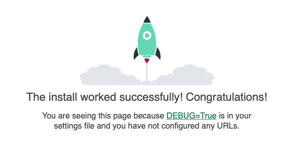
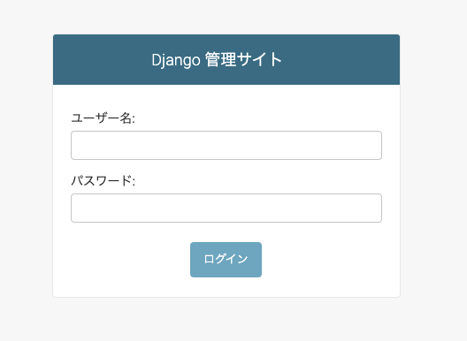

<!DOCTYPE html>
<!-- saved from url=(0140)https://tomato-develop.com/docker-dockercompose-python-django-postgresql-gunicorn-nginx-how-to-build-development-and-production-environment/ -->
<html lang="ja" prefix="og: http://ogp.me/ns#" class="t-html 
"><head prefix="og: http://ogp.me/ns# fb: http://ogp.me/ns/fb# article: http://ogp.me/ns/article#"><meta http-equiv="Content-Type" content="text/html; charset=UTF-8">

<title>【Docker(Docker-Compose)】Python,Djangoの開発・本番環境構築【Postgres,Gunicorn,Nginx利用】</title>
<meta name="robots" content="max-image-preview:large">
<link rel="stylesheet" id="dashicons-css" href="./【Docker(Docker-Compose)】Python,Djangoの開発・本番環境構築【Postgres,Gunicorn,Nginx利用】_files/dashicons.min.css" type="text/css" media="all">
<link rel="stylesheet" id="thickbox-css" href="./【Docker(Docker-Compose)】Python,Djangoの開発・本番環境構築【Postgres,Gunicorn,Nginx利用】_files/thickbox.css" type="text/css" media="all">
<link rel="stylesheet" id="crayon-theme-github-css" href="./【Docker(Docker-Compose)】Python,Djangoの開発・本番環境構築【Postgres,Gunicorn,Nginx利用】_files/github.css" type="text/css" media="all">
<link rel="stylesheet" id="crayon-font-monaco-css" href="./【Docker(Docker-Compose)】Python,Djangoの開発・本番環境構築【Postgres,Gunicorn,Nginx利用】_files/monaco.css" type="text/css" media="all">
<link rel="stylesheet" id="wp-block-library-css" href="./【Docker(Docker-Compose)】Python,Djangoの開発・本番環境構築【Postgres,Gunicorn,Nginx利用】_files/style.min.css" type="text/css" media="all">
<script src="./【Docker(Docker-Compose)】Python,Djangoの開発・本番環境構築【Postgres,Gunicorn,Nginx利用】_files/f(5).txt"></script><script src="./【Docker(Docker-Compose)】Python,Djangoの開発・本番環境構築【Postgres,Gunicorn,Nginx利用】_files/f(6).txt" id="google_shimpl"></script><script async="" src="./【Docker(Docker-Compose)】Python,Djangoの開発・本番環境構築【Postgres,Gunicorn,Nginx利用】_files/analytics.js.ダウンロード"></script><script src="./【Docker(Docker-Compose)】Python,Djangoの開発・本番環境構築【Postgres,Gunicorn,Nginx利用】_files/jquery.min.js.ダウンロード" id="jquery-core-js"></script>
<script src="./【Docker(Docker-Compose)】Python,Djangoの開発・本番環境構築【Postgres,Gunicorn,Nginx利用】_files/jquery-migrate.min.js.ダウンロード" id="jquery-migrate-js"></script>
<link rel="https://api.w.org/" href="https://tomato-develop.com/wp-json/"><link rel="alternate" type="application/json" href="https://tomato-develop.com/wp-json/wp/v2/posts/1001"><link rel="alternate" type="application/json+oembed" href="https://tomato-develop.com/wp-json/oembed/1.0/embed?url=https%3A%2F%2Ftomato-develop.com%2Fdocker-dockercompose-python-django-postgresql-gunicorn-nginx-how-to-build-development-and-production-environment%2F">
<link rel="alternate" type="text/xml+oembed" href="https://tomato-develop.com/wp-json/oembed/1.0/embed?url=https%3A%2F%2Ftomato-develop.com%2Fdocker-dockercompose-python-django-postgresql-gunicorn-nginx-how-to-build-development-and-production-environment%2F&amp;format=xml">
<link class="css-async" rel="stylesheet" href="./【Docker(Docker-Compose)】Python,Djangoの開発・本番環境構築【Postgres,Gunicorn,Nginx利用】_files/icon.min.css">
<link class="css-async" rel="stylesheet" href="./【Docker(Docker-Compose)】Python,Djangoの開発・本番環境構築【Postgres,Gunicorn,Nginx利用】_files/css(5)">
<link class="css-async" rel="stylesheet" href="./【Docker(Docker-Compose)】Python,Djangoの開発・本番環境構築【Postgres,Gunicorn,Nginx利用】_files/css(6)">
<link rel="stylesheet" href="./【Docker(Docker-Compose)】Python,Djangoの開発・本番環境構築【Postgres,Gunicorn,Nginx利用】_files/css(7)">
<link rel="stylesheet" href="./【Docker(Docker-Compose)】Python,Djangoの開発・本番環境構築【Postgres,Gunicorn,Nginx利用】_files/style.min(1).css">
<link class="css-async" rel="stylesheet" href="./【Docker(Docker-Compose)】Python,Djangoの開発・本番環境構築【Postgres,Gunicorn,Nginx利用】_files/style-user.css">
<link rel="canonical" href="https://tomato-develop.com/docker-dockercompose-python-django-postgresql-gunicorn-nginx-how-to-build-development-and-production-environment/">
<script src="./【Docker(Docker-Compose)】Python,Djangoの開発・本番環境構築【Postgres,Gunicorn,Nginx利用】_files/jquery.min.js(1).ダウンロード"></script>
<meta http-equiv="X-UA-Compatible" content="IE=edge">
<meta name="viewport" content="width=device-width, initial-scale=1, viewport-fit=cover">
<script>
(function(i,s,o,g,r,a,m){i['GoogleAnalyticsObject']=r;i[r]=i[r]||function(){
(i[r].q=i[r].q||[]).push(arguments)},i[r].l=1*new Date();a=s.createElement(o),
m=s.getElementsByTagName(o)[0];a.async=1;a.src=g;m.parentNode.insertBefore(a,m)
})(window,document,'script','https://www.google-analytics.com/analytics.js','ga');

ga('create', 'UA-143796396-4', 'auto');
ga('send', 'pageview');
</script>
<style>
.widget.widget_nav_menu ul.menu{border-color: rgba(139,196,96,0.15);}.widget.widget_nav_menu ul.menu li{border-color: rgba(139,196,96,0.75);}.widget.widget_nav_menu ul.menu .sub-menu li{border-color: rgba(139,196,96,0.15);}.widget.widget_nav_menu ul.menu .sub-menu li .sub-menu li:first-child{border-color: rgba(139,196,96,0.15);}.widget.widget_nav_menu ul.menu li a:hover{background-color: rgba(139,196,96,0.75);}.widget.widget_nav_menu ul.menu .current-menu-item > a{background-color: rgba(139,196,96,0.75);}.widget.widget_nav_menu ul.menu li .sub-menu li a:before {color:#8bc460;}.widget.widget_nav_menu ul.menu li a{background-color:#8bc460;}.widget.widget_nav_menu ul.menu .sub-menu a:hover{color:#8bc460;}.widget.widget_nav_menu ul.menu .sub-menu .current-menu-item a{color:#8bc460;}.widget.widget_categories ul{border-color: rgba(139,196,96,0.15);}.widget.widget_categories ul li{border-color: rgba(139,196,96,0.75);}.widget.widget_categories ul .children li{border-color: rgba(139,196,96,0.15);}.widget.widget_categories ul .children li .children li:first-child{border-color: rgba(139,196,96,0.15);}.widget.widget_categories ul li a:hover{background-color: rgba(139,196,96,0.75);}.widget.widget_categories ul .current-menu-item > a{background-color: rgba(139,196,96,0.75);}.widget.widget_categories ul li .children li a:before {color:#8bc460;}.widget.widget_categories ul li a{background-color:#8bc460;}.widget.widget_categories ul .children a:hover{color:#8bc460;}.widget.widget_categories ul .children .current-menu-item a{color:#8bc460;}.widgetSearch__input:hover{border-color:#8bc460;}.widgetCatTitle{background-color:#8bc460;}.widgetCatTitle__inner{background-color:#8bc460;}.widgetSearch__submit:hover{background-color:#8bc460;}.widgetProfile__sns{background-color:#8bc460;}.widget.widget_calendar .calendar_wrap tbody a:hover{background-color:#8bc460;}.widget ul li a:hover{color:#8bc460;}.widget.widget_rss .rsswidget:hover{color:#8bc460;}.widget.widget_tag_cloud a:hover{background-color:#8bc460;}.widget select:hover{border-color:#8bc460;}.widgetSearch__checkLabel:hover:after{border-color:#8bc460;}.widgetSearch__check:checked .widgetSearch__checkLabel:before, .widgetSearch__check:checked + .widgetSearch__checkLabel:before{border-color:#8bc460;}.widgetTab__item.current{border-top-color:#8bc460;}.widgetTab__item:hover{border-top-color:#8bc460;}.searchHead__title{background-color:#8bc460;}.searchHead__submit:hover{color:#8bc460;}.menuBtn__close:hover{color:#8bc460;}.menuBtn__link:hover{color:#8bc460;}@media only screen and (min-width: 992px){.menuBtn__link {background-color:#8bc460;}}.t-headerCenter .menuBtn__link:hover{color:#8bc460;}.searchBtn__close:hover{color:#8bc460;}.searchBtn__link:hover{color:#8bc460;}.breadcrumb__item a:hover{color:#8bc460;}.pager__item{color:#8bc460;}.pager__item:hover, .pager__item-current{background-color:#8bc460; color:#fff;}.page-numbers{color:#8bc460;}.page-numbers:hover, .page-numbers.current{background-color:#8bc460; color:#fff;}.pagePager__item{color:#8bc460;}.pagePager__item:hover, .pagePager__item-current{background-color:#8bc460; color:#fff;}.heading a:hover{color:#8bc460;}.eyecatch__cat{background-color:#8bc460;}.the__category{background-color:#8bc460;}.dateList__item a:hover{color:#8bc460;}.controllerFooter__item:last-child{background-color:#8bc460;}.controllerFooter__close{background-color:#8bc460;}.bottomFooter__topBtn{background-color:#8bc460;}.mask-color{background-color:#8bc460;}.mask-colorgray{background-color:#8bc460;}.pickup3__item{background-color:#8bc460;}.categoryBox__title{color:#8bc460;}.comments__list .comment-meta{background-color:#8bc460;}.comment-respond .submit{background-color:#8bc460;}.prevNext__pop{background-color:#8bc460;}.swiper-pagination-bullet-active{background-color:#8bc460;}.swiper-slider .swiper-button-next, .swiper-slider .swiper-container-rtl .swiper-button-prev, .swiper-slider .swiper-button-prev, .swiper-slider .swiper-container-rtl .swiper-button-next	{background-color:#8bc460;}body{background:#f6f6f4;}.t-headerColor .l-header{background-color:#8bc460;}.t-headerColor .globalNavi::before{background: -webkit-gradient(linear,left top,right top,color-stop(0%,rgba(255,255,255,0)),color-stop(100%,#8bc460));}.t-headerColor .subNavi__link-pickup:hover{color:#8bc460;}.snsFooter{background-color:#8bc460}.widget-main .heading.heading-widget{background-color:#8bc460}.widget-main .heading.heading-widgetsimple{background-color:#8bc460}.widget-main .heading.heading-widgetsimplewide{background-color:#8bc460}.widget-main .heading.heading-widgetwide{background-color:#8bc460}.widget-main .heading.heading-widgetbottom:before{border-color:#8bc460}.widget-main .heading.heading-widgetborder{border-color:#8bc460}.widget-main .heading.heading-widgetborder::before,.widget-main .heading.heading-widgetborder::after{background-color:#8bc460}.widget-side .heading.heading-widget{background-color:#8bc460}.widget-side .heading.heading-widgetsimple{background-color:#8bc460}.widget-side .heading.heading-widgetsimplewide{background-color:#8bc460}.widget-side .heading.heading-widgetwide{background-color:#8bc460}.widget-side .heading.heading-widgetbottom:before{border-color:#8bc460}.widget-side .heading.heading-widgetborder{border-color:#8bc460}.widget-side .heading.heading-widgetborder::before,.widget-side .heading.heading-widgetborder::after{background-color:#8bc460}.widget-foot .heading.heading-widget{background-color:#8bc460}.widget-foot .heading.heading-widgetsimple{background-color:#8bc460}.widget-foot .heading.heading-widgetsimplewide{background-color:#8bc460}.widget-foot .heading.heading-widgetwide{background-color:#8bc460}.widget-foot .heading.heading-widgetbottom:before{border-color:#8bc460}.widget-foot .heading.heading-widgetborder{border-color:#8bc460}.widget-foot .heading.heading-widgetborder::before,.widget-foot .heading.heading-widgetborder::after{background-color:#8bc460}.widget-menu .heading.heading-widget{background-color:#848484}.widget-menu .heading.heading-widgetsimple{background-color:#848484}.widget-menu .heading.heading-widgetsimplewide{background-color:#848484}.widget-menu .heading.heading-widgetwide{background-color:#848484}.widget-menu .heading.heading-widgetbottom:before{border-color:#848484}.widget-menu .heading.heading-widgetborder{border-color:#848484}.widget-menu .heading.heading-widgetborder::before,.widget-menu .heading.heading-widgetborder::after{background-color:#848484}.swiper-slider{height: 260px;}@media only screen and (min-width: 768px){.swiper-slider {height: 450px;}}.swiper-slide2.mask.mask-color{background-color:#c2e2ba}.swiper-slide3.mask.mask-color{background-color:#ddc1c1}.rankingBox__bg{background-color:#8bc460}.the__ribbon{background-color:#dd5454}.the__ribbon:after{border-left-color:#dd5454; border-right-color:#dd5454}.eyecatch__link.eyecatch__link-mask:hover::after {background-color: rgba(105,214,42,0.5);}.eyecatch__link.eyecatch__link-maskzoom:hover::after {background-color: rgba(105,214,42,0.5);}.eyecatch__link.eyecatch__link-maskzoomrotate:hover::after {background-color: rgba(105,214,42,0.5);}.eyecatch__link.eyecatch__link-mask:hover::after{content: "DETAIL";}.eyecatch__link.eyecatch__link-maskzoom:hover::after{content: "DETAIL";}.eyecatch__link.eyecatch__link-maskzoomrotate:hover::after{content: "DETAIL";}.content .afTagBox__btnDetail{background-color:#8bc460;}.widget .widgetAfTag__btnDetail{background-color:#8bc460;}.content .afTagBox__btnAf{background-color:#8bc460;}.widget .widgetAfTag__btnAf{background-color:#8bc460;}.content a{color:#4a88bf;}.phrase a{color:#4a88bf;}.content .sitemap li a:hover{color:#4a88bf;}.content h2 a:hover,.content h3 a:hover,.content h4 a:hover,.content h5 a:hover{color:#4a88bf;}.content ul.menu li a:hover{color:#4a88bf;}.content .es-LiconBox:before{background-color:#a83f3f;}.content .es-LiconCircle:before{background-color:#a83f3f;}.content .es-BTiconBox:before{background-color:#a83f3f;}.content .es-BTiconCircle:before{background-color:#a83f3f;}.content .es-BiconObi{border-color:#a83f3f;}.content .es-BiconCorner:before{background-color:#a83f3f;}.content .es-BiconCircle:before{background-color:#a83f3f;}.content .es-BmarkHatena::before{background-color:#005293;}.content .es-BmarkExcl::before{background-color:#b60105;}.content .es-BmarkQ::before{background-color:#005293;}.content .es-BmarkQ::after{border-top-color:#005293;}.content .es-BmarkA::before{color:#b60105;}.content .es-BsubTradi::before{color:#ffffff;background-color:#b60105;border-color:#b60105;}.btn__link-primary{color:#ffffff; background-color:#dd9b9b;}.content .btn__link-primary{color:#ffffff; background-color:#dd9b9b;}.searchBtn__contentInner .btn__link-search{color:#ffffff; background-color:#dd9b9b;}.btn__link-secondary{color:#ffffff; background-color:#3f3f3f;}.content .btn__link-secondary{color:#ffffff; background-color:#3f3f3f;}.btn__link-search{color:#ffffff; background-color:#3f3f3f;}.btn__link-normal{color:#3f3f3f;}.content .btn__link-normal{color:#3f3f3f;}.btn__link-normal:hover{background-color:#3f3f3f;}.content .btn__link-normal:hover{background-color:#3f3f3f;}.comments__list .comment-reply-link{color:#3f3f3f;}.comments__list .comment-reply-link:hover{background-color:#3f3f3f;}@media only screen and (min-width: 992px){.subNavi__link-pickup{color:#3f3f3f;}}@media only screen and (min-width: 992px){.subNavi__link-pickup:hover{background-color:#3f3f3f;}}.partsH2-1 h2{color:#5b5b5b; border-color:#5b5b5b;}.partsH3-61 h3{color:#5b5b5b;}.partsH3-61 h3::after{background-color:#63b538;}.partsH4-71 h4{color:#191919;}.partsH4-71 h4::after{border-color:#f2f2f2;}.content h5{color:#191919}.content ul > li::before{color:#00d126;}.content ul{color:#191919;}.content ol > li::before{color:#a83f3f; border-color:#a83f3f;}.content ol > li > ol > li::before{background-color:#a83f3f; border-color:#a83f3f;}.content ol > li > ol > li > ol > li::before{color:#a83f3f; border-color:#a83f3f;}.content ol{color:#191919;}.content .balloon .balloon__text{color:#191919; background-color:#f2f2f2;}.content .balloon .balloon__text-left:before{border-left-color:#f2f2f2;}.content .balloon .balloon__text-right:before{border-right-color:#f2f2f2;}.content .balloon-boder .balloon__text{color:#191919; background-color:#ffffff;  border-color:#d8d8d8;}.content .balloon-boder .balloon__text-left:before{border-left-color:#d8d8d8;}.content .balloon-boder .balloon__text-left:after{border-left-color:#ffffff;}.content .balloon-boder .balloon__text-right:before{border-right-color:#d8d8d8;}.content .balloon-boder .balloon__text-right:after{border-right-color:#ffffff;}.content blockquote{color:#191919; background-color:#f2f2f2;}.content blockquote::before{color:#d8d8d8;}.content table{color:#191919; border-top-color:#E5E5E5; border-left-color:#E5E5E5;}.content table th{background:#7f7f7f; color:#ffffff; ;border-right-color:#E5E5E5; border-bottom-color:#E5E5E5;}.content table td{background:#ffffff; ;border-right-color:#E5E5E5; border-bottom-color:#E5E5E5;}.content table tr:nth-child(odd) td{background-color:#f2f2f2;}
</style>
<link rel="icon" href="https://tomato-develop.com/wp-content/uploads/2020/10/cropped-icon_tomato_develop-1-32x32.png" sizes="32x32">
<link rel="icon" href="https://tomato-develop.com/wp-content/uploads/2020/10/cropped-icon_tomato_develop-1-192x192.png" sizes="192x192">
<link rel="apple-touch-icon" href="https://tomato-develop.com/wp-content/uploads/2020/10/cropped-icon_tomato_develop-1-180x180.png">
<meta name="msapplication-TileImage" content="https://tomato-develop.com/wp-content/uploads/2020/10/cropped-icon_tomato_develop-1-270x270.png">
		<style type="text/css" id="wp-custom-css">
			img.waku {
border:1px solid #DDDDDD;
}		</style>
		<meta name="description" content="本記事では、Docker(Docker-Compose)を利用しPython,Django,Postgres,Gunicorn,Nginxの開発・本番環境の構築方法を紹介しています。Docker(Docker-Compose)を利用しPython,Django,Postgres,Gunicorn,Nginxの開発・本番環境の構築方法をお探しの方は参考にしてください。">
<meta property="og:site_name" content="Tomato Develop">
<meta property="og:type" content="article">
<meta property="og:title" content="【Docker(Docker-Compose)】Python,Djangoの開発・本番環境構築【Postgres,Gunicorn,Nginx利用】">
<meta property="og:description" content="本記事では、Docker(Docker-Compose)を利用しPython,Django,Postgres,Gunicorn,Nginxの開発・本番環境の構築方法を紹介しています。Docker(Docker-Compose)を利用しPython,Django,Postgres,Gunicorn,Nginxの開発・本番環境の構築方法をお探しの方は参考にしてください。">
<meta property="og:url" content="https://tomato-develop.com/docker-dockercompose-python-django-postgresql-gunicorn-nginx-how-to-build-development-and-production-environment/">
<meta property="og:image" content="https://tomato-develop.com/wp-content/uploads/2021/07/develop53_d-768x457.jpg">
<meta name="twitter:card" content="summary_large_image">
<meta name="twitter:site" content="@examples">

<script data-ad-client="ca-pub-4656841092153145" async="" src="./【Docker(Docker-Compose)】Python,Djangoの開発・本番環境構築【Postgres,Gunicorn,Nginx利用】_files/f(7).txt" data-checked-head="true"></script>
<meta http-equiv="origin-trial" content="AxujKG9INjsZ8/gUq8+dTruNvk7RjZQ1oFhhgQbcTJKDnZfbzSTE81wvC2Hzaf3TW4avA76LTZEMdiedF1vIbA4AAABueyJvcmlnaW4iOiJodHRwczovL2ltYXNkay5nb29nbGVhcGlzLmNvbTo0NDMiLCJmZWF0dXJlIjoiVHJ1c3RUb2tlbnMiLCJleHBpcnkiOjE2NTI3NzQ0MDAsImlzVGhpcmRQYXJ0eSI6dHJ1ZX0="><meta http-equiv="origin-trial" content="Azuce85ORtSnWe1MZDTv68qpaW3iHyfL9YbLRy0cwcCZwVnePnOmkUJlG8HGikmOwhZU22dElCcfrfX2HhrBPAkAAAB7eyJvcmlnaW4iOiJodHRwczovL2RvdWJsZWNsaWNrLm5ldDo0NDMiLCJmZWF0dXJlIjoiVHJ1c3RUb2tlbnMiLCJleHBpcnkiOjE2NTI3NzQ0MDAsImlzU3ViZG9tYWluIjp0cnVlLCJpc1RoaXJkUGFydHkiOnRydWV9"><meta http-equiv="origin-trial" content="A16nvcdeoOAqrJcmjLRpl1I6f3McDD8EfofAYTt/P/H4/AWwB99nxiPp6kA0fXoiZav908Z8etuL16laFPUdfQsAAACBeyJvcmlnaW4iOiJodHRwczovL2dvb2dsZXRhZ3NlcnZpY2VzLmNvbTo0NDMiLCJmZWF0dXJlIjoiVHJ1c3RUb2tlbnMiLCJleHBpcnkiOjE2NTI3NzQ0MDAsImlzU3ViZG9tYWluIjp0cnVlLCJpc1RoaXJkUGFydHkiOnRydWV9"><meta http-equiv="origin-trial" content="AxBHdr0J44vFBQtZUqX9sjiqf5yWZ/OcHRcRMN3H9TH+t90V/j3ENW6C8+igBZFXMJ7G3Pr8Dd13632aLng42wgAAACBeyJvcmlnaW4iOiJodHRwczovL2dvb2dsZXN5bmRpY2F0aW9uLmNvbTo0NDMiLCJmZWF0dXJlIjoiVHJ1c3RUb2tlbnMiLCJleHBpcnkiOjE2NTI3NzQ0MDAsImlzU3ViZG9tYWluIjp0cnVlLCJpc1RoaXJkUGFydHkiOnRydWV9"><meta http-equiv="origin-trial" content="A88BWHFjcawUfKU3lIejLoryXoyjooBXLgWmGh+hNcqMK44cugvsI5YZbNarYvi3roc1fYbHA1AVbhAtuHZflgEAAAB2eyJvcmlnaW4iOiJodHRwczovL2dvb2dsZS5jb206NDQzIiwiZmVhdHVyZSI6IlRydXN0VG9rZW5zIiwiZXhwaXJ5IjoxNjUyNzc0NDAwLCJpc1N1YmRvbWFpbiI6dHJ1ZSwiaXNUaGlyZFBhcnR5Ijp0cnVlfQ=="><meta http-equiv="origin-trial" content="A/OOU4XAFfeAV4kM4+W9WBwNAHqq/bvtrRcJ1wpnNyO/i076BSUy1d14l2kBEgVmEuvxojSpD23172C6hBg2AQYAAACWeyJvcmlnaW4iOiJodHRwczovL2RvdWJsZWNsaWNrLm5ldDo0NDMiLCJmZWF0dXJlIjoiQ29udmVyc2lvbk1lYXN1cmVtZW50IiwiZXhwaXJ5IjoxNjM0MDgzMTk5LCJpc1N1YmRvbWFpbiI6dHJ1ZSwiaXNUaGlyZFBhcnR5Ijp0cnVlLCJ1c2FnZSI6InN1YnNldCJ9"><meta http-equiv="origin-trial" content="AwrB+XVH/KV6HfZNVtSEqlUJi3yUbtCp0/TJRj+38NDIw19/9P1h7ECTtdLdhIzG0Bsl4n/0rVmttJtGUCcewgAAAACceyJvcmlnaW4iOiJodHRwczovL2dvb2dsZXN5bmRpY2F0aW9uLmNvbTo0NDMiLCJmZWF0dXJlIjoiQ29udmVyc2lvbk1lYXN1cmVtZW50IiwiZXhwaXJ5IjoxNjM0MDgzMTk5LCJpc1N1YmRvbWFpbiI6dHJ1ZSwiaXNUaGlyZFBhcnR5Ijp0cnVlLCJ1c2FnZSI6InN1YnNldCJ9"><meta http-equiv="origin-trial" content="Ax15QOERqai2A5XWrDY38Eg07xh2T0pkhpDPJuDlxr7D2Ka8wHvklgK7tTPZOnT+8H31lwHto5JpvYV8jRn1WgIAAACceyJvcmlnaW4iOiJodHRwczovL2dvb2dsZXRhZ3NlcnZpY2VzLmNvbTo0NDMiLCJmZWF0dXJlIjoiQ29udmVyc2lvbk1lYXN1cmVtZW50IiwiZXhwaXJ5IjoxNjM0MDgzMTk5LCJpc1N1YmRvbWFpbiI6dHJ1ZSwiaXNUaGlyZFBhcnR5Ijp0cnVlLCJ1c2FnZSI6InN1YnNldCJ9"><meta http-equiv="origin-trial" content="AxujKG9INjsZ8/gUq8+dTruNvk7RjZQ1oFhhgQbcTJKDnZfbzSTE81wvC2Hzaf3TW4avA76LTZEMdiedF1vIbA4AAABueyJvcmlnaW4iOiJodHRwczovL2ltYXNkay5nb29nbGVhcGlzLmNvbTo0NDMiLCJmZWF0dXJlIjoiVHJ1c3RUb2tlbnMiLCJleHBpcnkiOjE2NTI3NzQ0MDAsImlzVGhpcmRQYXJ0eSI6dHJ1ZX0="><meta http-equiv="origin-trial" content="Azuce85ORtSnWe1MZDTv68qpaW3iHyfL9YbLRy0cwcCZwVnePnOmkUJlG8HGikmOwhZU22dElCcfrfX2HhrBPAkAAAB7eyJvcmlnaW4iOiJodHRwczovL2RvdWJsZWNsaWNrLm5ldDo0NDMiLCJmZWF0dXJlIjoiVHJ1c3RUb2tlbnMiLCJleHBpcnkiOjE2NTI3NzQ0MDAsImlzU3ViZG9tYWluIjp0cnVlLCJpc1RoaXJkUGFydHkiOnRydWV9"><meta http-equiv="origin-trial" content="A16nvcdeoOAqrJcmjLRpl1I6f3McDD8EfofAYTt/P/H4/AWwB99nxiPp6kA0fXoiZav908Z8etuL16laFPUdfQsAAACBeyJvcmlnaW4iOiJodHRwczovL2dvb2dsZXRhZ3NlcnZpY2VzLmNvbTo0NDMiLCJmZWF0dXJlIjoiVHJ1c3RUb2tlbnMiLCJleHBpcnkiOjE2NTI3NzQ0MDAsImlzU3ViZG9tYWluIjp0cnVlLCJpc1RoaXJkUGFydHkiOnRydWV9"><meta http-equiv="origin-trial" content="AxBHdr0J44vFBQtZUqX9sjiqf5yWZ/OcHRcRMN3H9TH+t90V/j3ENW6C8+igBZFXMJ7G3Pr8Dd13632aLng42wgAAACBeyJvcmlnaW4iOiJodHRwczovL2dvb2dsZXN5bmRpY2F0aW9uLmNvbTo0NDMiLCJmZWF0dXJlIjoiVHJ1c3RUb2tlbnMiLCJleHBpcnkiOjE2NTI3NzQ0MDAsImlzU3ViZG9tYWluIjp0cnVlLCJpc1RoaXJkUGFydHkiOnRydWV9"><meta http-equiv="origin-trial" content="A88BWHFjcawUfKU3lIejLoryXoyjooBXLgWmGh+hNcqMK44cugvsI5YZbNarYvi3roc1fYbHA1AVbhAtuHZflgEAAAB2eyJvcmlnaW4iOiJodHRwczovL2dvb2dsZS5jb206NDQzIiwiZmVhdHVyZSI6IlRydXN0VG9rZW5zIiwiZXhwaXJ5IjoxNjUyNzc0NDAwLCJpc1N1YmRvbWFpbiI6dHJ1ZSwiaXNUaGlyZFBhcnR5Ijp0cnVlfQ=="><meta http-equiv="origin-trial" content="A/OOU4XAFfeAV4kM4+W9WBwNAHqq/bvtrRcJ1wpnNyO/i076BSUy1d14l2kBEgVmEuvxojSpD23172C6hBg2AQYAAACWeyJvcmlnaW4iOiJodHRwczovL2RvdWJsZWNsaWNrLm5ldDo0NDMiLCJmZWF0dXJlIjoiQ29udmVyc2lvbk1lYXN1cmVtZW50IiwiZXhwaXJ5IjoxNjM0MDgzMTk5LCJpc1N1YmRvbWFpbiI6dHJ1ZSwiaXNUaGlyZFBhcnR5Ijp0cnVlLCJ1c2FnZSI6InN1YnNldCJ9"><meta http-equiv="origin-trial" content="AwrB+XVH/KV6HfZNVtSEqlUJi3yUbtCp0/TJRj+38NDIw19/9P1h7ECTtdLdhIzG0Bsl4n/0rVmttJtGUCcewgAAAACceyJvcmlnaW4iOiJodHRwczovL2dvb2dsZXN5bmRpY2F0aW9uLmNvbTo0NDMiLCJmZWF0dXJlIjoiQ29udmVyc2lvbk1lYXN1cmVtZW50IiwiZXhwaXJ5IjoxNjM0MDgzMTk5LCJpc1N1YmRvbWFpbiI6dHJ1ZSwiaXNUaGlyZFBhcnR5Ijp0cnVlLCJ1c2FnZSI6InN1YnNldCJ9"><meta http-equiv="origin-trial" content="Ax15QOERqai2A5XWrDY38Eg07xh2T0pkhpDPJuDlxr7D2Ka8wHvklgK7tTPZOnT+8H31lwHto5JpvYV8jRn1WgIAAACceyJvcmlnaW4iOiJodHRwczovL2dvb2dsZXRhZ3NlcnZpY2VzLmNvbTo0NDMiLCJmZWF0dXJlIjoiQ29udmVyc2lvbk1lYXN1cmVtZW50IiwiZXhwaXJ5IjoxNjM0MDgzMTk5LCJpc1N1YmRvbWFpbiI6dHJ1ZSwiaXNUaGlyZFBhcnR5Ijp0cnVlLCJ1c2FnZSI6InN1YnNldCJ9"><meta http-equiv="origin-trial" content="AxujKG9INjsZ8/gUq8+dTruNvk7RjZQ1oFhhgQbcTJKDnZfbzSTE81wvC2Hzaf3TW4avA76LTZEMdiedF1vIbA4AAABueyJvcmlnaW4iOiJodHRwczovL2ltYXNkay5nb29nbGVhcGlzLmNvbTo0NDMiLCJmZWF0dXJlIjoiVHJ1c3RUb2tlbnMiLCJleHBpcnkiOjE2NTI3NzQ0MDAsImlzVGhpcmRQYXJ0eSI6dHJ1ZX0="><meta http-equiv="origin-trial" content="Azuce85ORtSnWe1MZDTv68qpaW3iHyfL9YbLRy0cwcCZwVnePnOmkUJlG8HGikmOwhZU22dElCcfrfX2HhrBPAkAAAB7eyJvcmlnaW4iOiJodHRwczovL2RvdWJsZWNsaWNrLm5ldDo0NDMiLCJmZWF0dXJlIjoiVHJ1c3RUb2tlbnMiLCJleHBpcnkiOjE2NTI3NzQ0MDAsImlzU3ViZG9tYWluIjp0cnVlLCJpc1RoaXJkUGFydHkiOnRydWV9"><meta http-equiv="origin-trial" content="A16nvcdeoOAqrJcmjLRpl1I6f3McDD8EfofAYTt/P/H4/AWwB99nxiPp6kA0fXoiZav908Z8etuL16laFPUdfQsAAACBeyJvcmlnaW4iOiJodHRwczovL2dvb2dsZXRhZ3NlcnZpY2VzLmNvbTo0NDMiLCJmZWF0dXJlIjoiVHJ1c3RUb2tlbnMiLCJleHBpcnkiOjE2NTI3NzQ0MDAsImlzU3ViZG9tYWluIjp0cnVlLCJpc1RoaXJkUGFydHkiOnRydWV9"><meta http-equiv="origin-trial" content="AxBHdr0J44vFBQtZUqX9sjiqf5yWZ/OcHRcRMN3H9TH+t90V/j3ENW6C8+igBZFXMJ7G3Pr8Dd13632aLng42wgAAACBeyJvcmlnaW4iOiJodHRwczovL2dvb2dsZXN5bmRpY2F0aW9uLmNvbTo0NDMiLCJmZWF0dXJlIjoiVHJ1c3RUb2tlbnMiLCJleHBpcnkiOjE2NTI3NzQ0MDAsImlzU3ViZG9tYWluIjp0cnVlLCJpc1RoaXJkUGFydHkiOnRydWV9"><meta http-equiv="origin-trial" content="A88BWHFjcawUfKU3lIejLoryXoyjooBXLgWmGh+hNcqMK44cugvsI5YZbNarYvi3roc1fYbHA1AVbhAtuHZflgEAAAB2eyJvcmlnaW4iOiJodHRwczovL2dvb2dsZS5jb206NDQzIiwiZmVhdHVyZSI6IlRydXN0VG9rZW5zIiwiZXhwaXJ5IjoxNjUyNzc0NDAwLCJpc1N1YmRvbWFpbiI6dHJ1ZSwiaXNUaGlyZFBhcnR5Ijp0cnVlfQ=="><meta http-equiv="origin-trial" content="A/OOU4XAFfeAV4kM4+W9WBwNAHqq/bvtrRcJ1wpnNyO/i076BSUy1d14l2kBEgVmEuvxojSpD23172C6hBg2AQYAAACWeyJvcmlnaW4iOiJodHRwczovL2RvdWJsZWNsaWNrLm5ldDo0NDMiLCJmZWF0dXJlIjoiQ29udmVyc2lvbk1lYXN1cmVtZW50IiwiZXhwaXJ5IjoxNjM0MDgzMTk5LCJpc1N1YmRvbWFpbiI6dHJ1ZSwiaXNUaGlyZFBhcnR5Ijp0cnVlLCJ1c2FnZSI6InN1YnNldCJ9"><meta http-equiv="origin-trial" content="AwrB+XVH/KV6HfZNVtSEqlUJi3yUbtCp0/TJRj+38NDIw19/9P1h7ECTtdLdhIzG0Bsl4n/0rVmttJtGUCcewgAAAACceyJvcmlnaW4iOiJodHRwczovL2dvb2dsZXN5bmRpY2F0aW9uLmNvbTo0NDMiLCJmZWF0dXJlIjoiQ29udmVyc2lvbk1lYXN1cmVtZW50IiwiZXhwaXJ5IjoxNjM0MDgzMTk5LCJpc1N1YmRvbWFpbiI6dHJ1ZSwiaXNUaGlyZFBhcnR5Ijp0cnVlLCJ1c2FnZSI6InN1YnNldCJ9"><meta http-equiv="origin-trial" content="Ax15QOERqai2A5XWrDY38Eg07xh2T0pkhpDPJuDlxr7D2Ka8wHvklgK7tTPZOnT+8H31lwHto5JpvYV8jRn1WgIAAACceyJvcmlnaW4iOiJodHRwczovL2dvb2dsZXRhZ3NlcnZpY2VzLmNvbTo0NDMiLCJmZWF0dXJlIjoiQ29udmVyc2lvbk1lYXN1cmVtZW50IiwiZXhwaXJ5IjoxNjM0MDgzMTk5LCJpc1N1YmRvbWFpbiI6dHJ1ZSwiaXNUaGlyZFBhcnR5Ijp0cnVlLCJ1c2FnZSI6InN1YnNldCJ9"><meta http-equiv="origin-trial" content="AxujKG9INjsZ8/gUq8+dTruNvk7RjZQ1oFhhgQbcTJKDnZfbzSTE81wvC2Hzaf3TW4avA76LTZEMdiedF1vIbA4AAABueyJvcmlnaW4iOiJodHRwczovL2ltYXNkay5nb29nbGVhcGlzLmNvbTo0NDMiLCJmZWF0dXJlIjoiVHJ1c3RUb2tlbnMiLCJleHBpcnkiOjE2NTI3NzQ0MDAsImlzVGhpcmRQYXJ0eSI6dHJ1ZX0="><meta http-equiv="origin-trial" content="Azuce85ORtSnWe1MZDTv68qpaW3iHyfL9YbLRy0cwcCZwVnePnOmkUJlG8HGikmOwhZU22dElCcfrfX2HhrBPAkAAAB7eyJvcmlnaW4iOiJodHRwczovL2RvdWJsZWNsaWNrLm5ldDo0NDMiLCJmZWF0dXJlIjoiVHJ1c3RUb2tlbnMiLCJleHBpcnkiOjE2NTI3NzQ0MDAsImlzU3ViZG9tYWluIjp0cnVlLCJpc1RoaXJkUGFydHkiOnRydWV9"><meta http-equiv="origin-trial" content="A16nvcdeoOAqrJcmjLRpl1I6f3McDD8EfofAYTt/P/H4/AWwB99nxiPp6kA0fXoiZav908Z8etuL16laFPUdfQsAAACBeyJvcmlnaW4iOiJodHRwczovL2dvb2dsZXRhZ3NlcnZpY2VzLmNvbTo0NDMiLCJmZWF0dXJlIjoiVHJ1c3RUb2tlbnMiLCJleHBpcnkiOjE2NTI3NzQ0MDAsImlzU3ViZG9tYWluIjp0cnVlLCJpc1RoaXJkUGFydHkiOnRydWV9"><meta http-equiv="origin-trial" content="AxBHdr0J44vFBQtZUqX9sjiqf5yWZ/OcHRcRMN3H9TH+t90V/j3ENW6C8+igBZFXMJ7G3Pr8Dd13632aLng42wgAAACBeyJvcmlnaW4iOiJodHRwczovL2dvb2dsZXN5bmRpY2F0aW9uLmNvbTo0NDMiLCJmZWF0dXJlIjoiVHJ1c3RUb2tlbnMiLCJleHBpcnkiOjE2NTI3NzQ0MDAsImlzU3ViZG9tYWluIjp0cnVlLCJpc1RoaXJkUGFydHkiOnRydWV9"><meta http-equiv="origin-trial" content="A88BWHFjcawUfKU3lIejLoryXoyjooBXLgWmGh+hNcqMK44cugvsI5YZbNarYvi3roc1fYbHA1AVbhAtuHZflgEAAAB2eyJvcmlnaW4iOiJodHRwczovL2dvb2dsZS5jb206NDQzIiwiZmVhdHVyZSI6IlRydXN0VG9rZW5zIiwiZXhwaXJ5IjoxNjUyNzc0NDAwLCJpc1N1YmRvbWFpbiI6dHJ1ZSwiaXNUaGlyZFBhcnR5Ijp0cnVlfQ=="><meta http-equiv="origin-trial" content="A/OOU4XAFfeAV4kM4+W9WBwNAHqq/bvtrRcJ1wpnNyO/i076BSUy1d14l2kBEgVmEuvxojSpD23172C6hBg2AQYAAACWeyJvcmlnaW4iOiJodHRwczovL2RvdWJsZWNsaWNrLm5ldDo0NDMiLCJmZWF0dXJlIjoiQ29udmVyc2lvbk1lYXN1cmVtZW50IiwiZXhwaXJ5IjoxNjM0MDgzMTk5LCJpc1N1YmRvbWFpbiI6dHJ1ZSwiaXNUaGlyZFBhcnR5Ijp0cnVlLCJ1c2FnZSI6InN1YnNldCJ9"><meta http-equiv="origin-trial" content="AwrB+XVH/KV6HfZNVtSEqlUJi3yUbtCp0/TJRj+38NDIw19/9P1h7ECTtdLdhIzG0Bsl4n/0rVmttJtGUCcewgAAAACceyJvcmlnaW4iOiJodHRwczovL2dvb2dsZXN5bmRpY2F0aW9uLmNvbTo0NDMiLCJmZWF0dXJlIjoiQ29udmVyc2lvbk1lYXN1cmVtZW50IiwiZXhwaXJ5IjoxNjM0MDgzMTk5LCJpc1N1YmRvbWFpbiI6dHJ1ZSwiaXNUaGlyZFBhcnR5Ijp0cnVlLCJ1c2FnZSI6InN1YnNldCJ9"><meta http-equiv="origin-trial" content="Ax15QOERqai2A5XWrDY38Eg07xh2T0pkhpDPJuDlxr7D2Ka8wHvklgK7tTPZOnT+8H31lwHto5JpvYV8jRn1WgIAAACceyJvcmlnaW4iOiJodHRwczovL2dvb2dsZXRhZ3NlcnZpY2VzLmNvbTo0NDMiLCJmZWF0dXJlIjoiQ29udmVyc2lvbk1lYXN1cmVtZW50IiwiZXhwaXJ5IjoxNjM0MDgzMTk5LCJpc1N1YmRvbWFpbiI6dHJ1ZSwiaXNUaGlyZFBhcnR5Ijp0cnVlLCJ1c2FnZSI6InN1YnNldCJ9"><link rel="preload" href="./【Docker(Docker-Compose)】Python,Djangoの開発・本番環境構築【Postgres,Gunicorn,Nginx利用】_files/f(8).txt" as="script"><script type="text/javascript" src="./【Docker(Docker-Compose)】Python,Djangoの開発・本番環境構築【Postgres,Gunicorn,Nginx利用】_files/f(8).txt"></script><link rel="preload" href="./【Docker(Docker-Compose)】Python,Djangoの開発・本番環境構築【Postgres,Gunicorn,Nginx利用】_files/f(9).txt" as="script"><script type="text/javascript" src="./【Docker(Docker-Compose)】Python,Djangoの開発・本番環境構築【Postgres,Gunicorn,Nginx利用】_files/f(9).txt"></script></head>
<body class="t-noto t-naviNoneSp t-headerColor" id="top">
    <header class="l-header"> <div class="container container-header"><p class="siteTitle"><a class="siteTitle__link" href="https://tomato-develop.com/">Tomato Develop  </a></p><nav class="globalNavi u-none-sp"><div class="globalNavi__inner"><ul class="globalNavi__list"><li id="menu-item-155" class="menu-item menu-item-type-post_type menu-item-object-page menu-item-155"><a href="https://tomato-develop.com/contact-page/">お問い合わせ</a></li></ul></div></nav><nav class="subNavi"> </nav><div class="searchBtn ">  <input class="searchBtn__checkbox" id="searchBtn-checkbox" type="checkbox">  <label class="searchBtn__link searchBtn__link-text icon-search" for="searchBtn-checkbox"></label>  <label class="searchBtn__unshown" for="searchBtn-checkbox"></label>  <div class="searchBtn__content"> <div class="searchBtn__scroll"><label class="searchBtn__close" for="searchBtn-checkbox"><i class="icon-close"></i>CLOSE</label><div class="searchBtn__contentInner">  <aside class="widget">  <div class="widgetSearch"> <form method="get" action="https://tomato-develop.com/" target="_top">  <div class="widgetSearch__contents"> <h3 class="heading heading-tertiary">キーワード</h3> <input class="widgetSearch__input widgetSearch__input-max" type="text" name="s" placeholder="キーワードを入力" value=""></div>  <div class="widgetSearch__contents"> <h3 class="heading heading-tertiary">カテゴリー</h3><select name="cat" id="cat_6172a31130cd9" class="widgetSearch__select"><option value="">カテゴリーを選択</option><option class="level-0" value="1">etc</option><option class="level-0" value="2">wordpress</option><option class="level-0" value="3">SwiftUI</option><option class="level-0" value="4">Django</option><option class="level-0" value="5">Django Rest Framework</option><option class="level-0" value="6">Swift</option><option class="level-0" value="10">Ubuntu</option><option class="level-0" value="14">Nginx</option><option class="level-0" value="15">PostgreSQL</option><option class="level-0" value="16">Mac</option><option class="level-0" value="18">Editor</option><option class="level-0" value="19">PyCharm</option><option class="level-0" value="20">Django-Allauth</option><option class="level-0" value="21">Gunicorn</option><option class="level-0" value="22">Django-rest-auth</option><option class="level-0" value="24">Docker</option><option class="level-0" value="25">Docker Compose</option><option class="level-0" value="26">aws</option><option class="level-0" value="27">Unity</option><option class="level-0" value="28">Maya</option></select>  </div>  <div class="widgetSearch__tag"> <h3 class="heading heading-tertiary">タグ</h3> <label><input class="widgetSearch__check" type="checkbox" name="tag[]" value="%e3%82%a2%e3%83%97%e3%83%aa"><span class="widgetSearch__checkLabel">アプリ</span></label><label><input class="widgetSearch__check" type="checkbox" name="tag[]" value="%e3%82%a8%e3%83%a9%e3%83%bc%e5%af%be%e7%ad%96"><span class="widgetSearch__checkLabel">エラー対策</span></label><label><input class="widgetSearch__check" type="checkbox" name="tag[]" value="%e3%82%b3%e3%83%bc%e3%83%87%e3%82%a3%e3%83%b3%e3%82%b0"><span class="widgetSearch__checkLabel">コーディング</span></label><label><input class="widgetSearch__check" type="checkbox" name="tag[]" value="%e7%92%b0%e5%a2%83%e6%a7%8b%e7%af%89"><span class="widgetSearch__checkLabel">環境構築</span></label>  </div> <div class="btn btn-search"> <button class="btn__link btn__link-search" type="submit" value="search">検索</button>  </div></form>  </div></aside></div> </div>  </div></div><div class="menuBtn ">  <input class="menuBtn__checkbox" id="menuBtn-checkbox" type="checkbox">  <label class="menuBtn__link menuBtn__link-text icon-menu" for="menuBtn-checkbox"></label>  <label class="menuBtn__unshown" for="menuBtn-checkbox"></label>  <div class="menuBtn__content"> <div class="menuBtn__scroll"><label class="menuBtn__close" for="menuBtn-checkbox"><i class="icon-close"></i>CLOSE</label><div class="menuBtn__contentInner"></div> </div>  </div></div> </div>  </header>      <div class="l-headerBottom">  </div>   <div class="wider"> <div class="breadcrumb"><ul class="breadcrumb__list container"><li class="breadcrumb__item icon-home"><a href="https://tomato-develop.com/">HOME</a></li><li class="breadcrumb__item"><a href="https://tomato-develop.com/category/django/">Django</a></li><li class="breadcrumb__item breadcrumb__item-current"><a href="https://tomato-develop.com/docker-dockercompose-python-django-postgresql-gunicorn-nginx-how-to-build-development-and-production-environment/">【Docker(Docker-Compose)】Python,Djangoの開発・本番環境構築【Postgres,Gunicorn,Nginx利用】</a></li></ul></div>  </div>    <div class="l-wrapper fit-sidebar-fixed-now">   <main class="l-main"><div class="dividerBottom">  <h1 class="heading heading-primary">【Docker(Docker-Compose)】Python,Djangoの開発・本番環境構築【Postgres,Gunicorn,Nginx利用】</h1>  <ul class="dateList dateList-main"> <li class="dateList__item icon-clock">2021-07-27</li>  <li class="dateList__item icon-update">2021-08-31</li> <li class="dateList__item icon-folder"><a href="https://tomato-develop.com/category/django/" rel="category tag">Django</a>, <a href="https://tomato-develop.com/category/docker/" rel="category tag">Docker</a>, <a href="https://tomato-develop.com/category/docker/docker-compose/" rel="category tag">Docker Compose</a>, <a href="https://tomato-develop.com/category/gunicorn/" rel="category tag">Gunicorn</a>, <a href="https://tomato-develop.com/category/nginx/" rel="category tag">Nginx</a>, <a href="https://tomato-develop.com/category/postgresql/" rel="category tag">PostgreSQL</a>, <a href="https://tomato-develop.com/category/ubuntu/" rel="category tag">Ubuntu</a></li>  <li class="dateList__item icon-tag"><a href="https://tomato-develop.com/tag/%e7%92%b0%e5%a2%83%e6%a7%8b%e7%af%89/" rel="tag">環境構築</a></li></ul>  <div class="postContents u-border"> <section class="content partsH2-1 partsH3-61 partsH4-71"><p>この記事は、Docker(Docker-Compose)を利用しPython,Django,Postgres,Gunicorn,Nginxの開発・本番環境の構築方法を紹介します。</p><p>&nbsp;</p><p><strong>◆動作検証環境</strong></p><div class="ep-box">【ローカル環境】<br>・OS：mac Catalina<br>・Docker desktop：3.3.3(Engine:20.10.16, Compose:1.29.1)<p></p><hr><p>【リモート環境】<br>・さくらVPSサーバー：メモリ 512M, ストレージ：SSD 25GB, CPU：1コア<br>・OS：Ubuntu 20.04<br>・Docker：20.10.7<br>・Docker Compose：1.23.2</p><hr><p>【共通環境】<br>・Python：3.8.5<br>・Django：3.2.4<br>・Nginx：1.18.0<br>・Gunicorn：20.1.0<br>・PostgrSQL：12.4<br>・psycopg2-binary:2.9.1</p></div><p>&nbsp;</p><div class="outline"><span class="outline__title">目次</span><input class="outline__toggle" id="outline__toggle" type="checkbox" checked=""><label class="outline__switch" for="outline__toggle"></label><ul class="outline__list outline__list-2"><li class="outline__item"><a class="outline__link" href="https://tomato-develop.com/docker-dockercompose-python-django-postgresql-gunicorn-nginx-how-to-build-development-and-production-environment/#outline_2__1"><span class="outline__number">1</span> プロジェクトファイルの設定</a><ul class="outline__list outline__list-3"><li class="outline__item"><a class="outline__link" href="https://tomato-develop.com/docker-dockercompose-python-django-postgresql-gunicorn-nginx-how-to-build-development-and-production-environment/#outline_2__1_1"><span class="outline__number">1.1</span> Docker-Djangoプロジェクトの作成</a></li><li class="outline__item"><a class="outline__link" href="https://tomato-develop.com/docker-dockercompose-python-django-postgresql-gunicorn-nginx-how-to-build-development-and-production-environment/#outline_2__1_2"><span class="outline__number">1.2</span> 仮想環境の作成</a></li><li class="outline__item"><a class="outline__link" href="https://tomato-develop.com/docker-dockercompose-python-django-postgresql-gunicorn-nginx-how-to-build-development-and-production-environment/#outline_2__1_3"><span class="outline__number">1.3</span> Djangoプロジェクトの作成</a></li></ul></li><li class="outline__item"><a class="outline__link" href="https://tomato-develop.com/docker-dockercompose-python-django-postgresql-gunicorn-nginx-how-to-build-development-and-production-environment/#outline_2__2"><span class="outline__number">2</span> ローカル環境DockerとDjangoの設定</a><ul class="outline__list outline__list-3"><li class="outline__item"><a class="outline__link" href="https://tomato-develop.com/docker-dockercompose-python-django-postgresql-gunicorn-nginx-how-to-build-development-and-production-environment/#outline_2__2_1"><span class="outline__number">2.1</span> Dockerファイルの作成</a></li><li class="outline__item"><a class="outline__link" href="https://tomato-develop.com/docker-dockercompose-python-django-postgresql-gunicorn-nginx-how-to-build-development-and-production-environment/#outline_2__2_2"><span class="outline__number">2.2</span> requirements.txtファイルの作成</a></li><li class="outline__item"><a class="outline__link" href="https://tomato-develop.com/docker-dockercompose-python-django-postgresql-gunicorn-nginx-how-to-build-development-and-production-environment/#outline_2__2_3"><span class="outline__number">2.3</span> ymlファイルの作成</a></li><li class="outline__item"><a class="outline__link" href="https://tomato-develop.com/docker-dockercompose-python-django-postgresql-gunicorn-nginx-how-to-build-development-and-production-environment/#outline_2__2_4"><span class="outline__number">2.4</span> 環境変数ファイルの作成</a></li><li class="outline__item"><a class="outline__link" href="https://tomato-develop.com/docker-dockercompose-python-django-postgresql-gunicorn-nginx-how-to-build-development-and-production-environment/#outline_2__2_5"><span class="outline__number">2.5</span> settings.pyファイルの作成</a></li><li class="outline__item"><a class="outline__link" href="https://tomato-develop.com/docker-dockercompose-python-django-postgresql-gunicorn-nginx-how-to-build-development-and-production-environment/#outline_2__2_6"><span class="outline__number">2.6</span> ローカル用コンテナのイメージ作成、コンテナ作成、起動</a></li></ul></li><li class="outline__item"><a class="outline__link" href="https://tomato-develop.com/docker-dockercompose-python-django-postgresql-gunicorn-nginx-how-to-build-development-and-production-environment/#outline_2__3"><span class="outline__number">3</span> Postgresqlの設定</a><ul class="outline__list outline__list-3"><li class="outline__item"><a class="outline__link" href="https://tomato-develop.com/docker-dockercompose-python-django-postgresql-gunicorn-nginx-how-to-build-development-and-production-environment/#outline_2__3_1"><span class="outline__number">3.1</span> docker-compose.ymlの編集</a></li><li class="outline__item"><a class="outline__link" href="https://tomato-develop.com/docker-dockercompose-python-django-postgresql-gunicorn-nginx-how-to-build-development-and-production-environment/#outline_2__3_2"><span class="outline__number">3.2</span> settings.pyファイルの編集</a></li><li class="outline__item"><a class="outline__link" href="https://tomato-develop.com/docker-dockercompose-python-django-postgresql-gunicorn-nginx-how-to-build-development-and-production-environment/#outline_2__3_3"><span class="outline__number">3.3</span> 環境変数ファイルの編集</a></li><li class="outline__item"><a class="outline__link" href="https://tomato-develop.com/docker-dockercompose-python-django-postgresql-gunicorn-nginx-how-to-build-development-and-production-environment/#outline_2__3_4"><span class="outline__number">3.4</span> Dockerfileの編集</a></li><li class="outline__item"><a class="outline__link" href="https://tomato-develop.com/docker-dockercompose-python-django-postgresql-gunicorn-nginx-how-to-build-development-and-production-environment/#outline_2__3_5"><span class="outline__number">3.5</span> requirements.txtファイルの作成</a></li><li class="outline__item"><a class="outline__link" href="https://tomato-develop.com/docker-dockercompose-python-django-postgresql-gunicorn-nginx-how-to-build-development-and-production-environment/#outline_2__3_6"><span class="outline__number">3.6</span> Postgresqlの動作確認</a></li><li class="outline__item"><a class="outline__link" href="https://tomato-develop.com/docker-dockercompose-python-django-postgresql-gunicorn-nginx-how-to-build-development-and-production-environment/#outline_2__3_7"><span class="outline__number">3.7</span> シェルファイルの作成</a></li></ul></li><li class="outline__item"><a class="outline__link" href="https://tomato-develop.com/docker-dockercompose-python-django-postgresql-gunicorn-nginx-how-to-build-development-and-production-environment/#outline_2__4"><span class="outline__number">4</span> Gunicornの設定</a><ul class="outline__list outline__list-3"><li class="outline__item"><a class="outline__link" href="https://tomato-develop.com/docker-dockercompose-python-django-postgresql-gunicorn-nginx-how-to-build-development-and-production-environment/#outline_2__4_1"><span class="outline__number">4.1</span> requirements.txtの編集</a></li><li class="outline__item"><a class="outline__link" href="https://tomato-develop.com/docker-dockercompose-python-django-postgresql-gunicorn-nginx-how-to-build-development-and-production-environment/#outline_2__4_2"><span class="outline__number">4.2</span> ymlファイルの編集</a></li><li class="outline__item"><a class="outline__link" href="https://tomato-develop.com/docker-dockercompose-python-django-postgresql-gunicorn-nginx-how-to-build-development-and-production-environment/#outline_2__4_3"><span class="outline__number">4.3</span> Dockerファイルの編集</a></li><li class="outline__item"><a class="outline__link" href="https://tomato-develop.com/docker-dockercompose-python-django-postgresql-gunicorn-nginx-how-to-build-development-and-production-environment/#outline_2__4_4"><span class="outline__number">4.4</span> 本番環境用のymlファイルを利用したイメージ、コンテナの作成、起動</a></li></ul></li><li class="outline__item"><a class="outline__link" href="https://tomato-develop.com/docker-dockercompose-python-django-postgresql-gunicorn-nginx-how-to-build-development-and-production-environment/#outline_2__5"><span class="outline__number">5</span> Nginxの設定</a><ul class="outline__list outline__list-3"><li class="outline__item"><a class="outline__link" href="https://tomato-develop.com/docker-dockercompose-python-django-postgresql-gunicorn-nginx-how-to-build-development-and-production-environment/#outline_2__5_1"><span class="outline__number">5.1</span> ymlファイルの編集</a></li><li class="outline__item"><a class="outline__link" href="https://tomato-develop.com/docker-dockercompose-python-django-postgresql-gunicorn-nginx-how-to-build-development-and-production-environment/#outline_2__5_2"><span class="outline__number">5.2</span> Nginx用のフォルダの作成</a></li><li class="outline__item"><a class="outline__link" href="https://tomato-develop.com/docker-dockercompose-python-django-postgresql-gunicorn-nginx-how-to-build-development-and-production-environment/#outline_2__5_3"><span class="outline__number">5.3</span> ymlファイルの編集(Nginx仕様)</a></li><li class="outline__item"><a class="outline__link" href="https://tomato-develop.com/docker-dockercompose-python-django-postgresql-gunicorn-nginx-how-to-build-development-and-production-environment/#outline_2__5_4"><span class="outline__number">5.4</span> 表示の確認</a></li></ul></li><li class="outline__item"><a class="outline__link" href="https://tomato-develop.com/docker-dockercompose-python-django-postgresql-gunicorn-nginx-how-to-build-development-and-production-environment/#outline_2__6"><span class="outline__number">6</span> Nginxを利用したStatic,Mediaファイルの表示設定</a><ul class="outline__list outline__list-3"><li class="outline__item"><a class="outline__link" href="https://tomato-develop.com/docker-dockercompose-python-django-postgresql-gunicorn-nginx-how-to-build-development-and-production-environment/#outline_2__6_1"><span class="outline__number">6.1</span> Staticファイルの設定</a></li><li class="outline__item"><a class="outline__link" href="https://tomato-develop.com/docker-dockercompose-python-django-postgresql-gunicorn-nginx-how-to-build-development-and-production-environment/#outline_2__6_2"><span class="outline__number">6.2</span> Settings.pyファイルの編集</a></li><li class="outline__item"><a class="outline__link" href="https://tomato-develop.com/docker-dockercompose-python-django-postgresql-gunicorn-nginx-how-to-build-development-and-production-environment/#outline_2__6_3"><span class="outline__number">6.3</span> ymlファイルの編集</a></li><li class="outline__item"><a class="outline__link" href="https://tomato-develop.com/docker-dockercompose-python-django-postgresql-gunicorn-nginx-how-to-build-development-and-production-environment/#outline_2__6_4"><span class="outline__number">6.4</span> Dockerfileファイルの編集</a></li><li class="outline__item"><a class="outline__link" href="https://tomato-develop.com/docker-dockercompose-python-django-postgresql-gunicorn-nginx-how-to-build-development-and-production-environment/#outline_2__6_5"><span class="outline__number">6.5</span> nginx.confの編集</a></li><li class="outline__item"><a class="outline__link" href="https://tomato-develop.com/docker-dockercompose-python-django-postgresql-gunicorn-nginx-how-to-build-development-and-production-environment/#outline_2__6_6"><span class="outline__number">6.6</span> 表示の確認</a></li><li class="outline__item"><a class="outline__link" href="https://tomato-develop.com/docker-dockercompose-python-django-postgresql-gunicorn-nginx-how-to-build-development-and-production-environment/#outline_2__6_7"><span class="outline__number">6.7</span> Mediaファイルの設定</a></li><li class="outline__item"><a class="outline__link" href="https://tomato-develop.com/docker-dockercompose-python-django-postgresql-gunicorn-nginx-how-to-build-development-and-production-environment/#outline_2__6_8"><span class="outline__number">6.8</span> settings.pyの編集</a></li><li class="outline__item"><a class="outline__link" href="https://tomato-develop.com/docker-dockercompose-python-django-postgresql-gunicorn-nginx-how-to-build-development-and-production-environment/#outline_2__6_9"><span class="outline__number">6.9</span> ymlファイルの編集</a></li><li class="outline__item"><a class="outline__link" href="https://tomato-develop.com/docker-dockercompose-python-django-postgresql-gunicorn-nginx-how-to-build-development-and-production-environment/#outline_2__6_10"><span class="outline__number">6.10</span> Dockerファイルの編集</a></li><li class="outline__item"><a class="outline__link" href="https://tomato-develop.com/docker-dockercompose-python-django-postgresql-gunicorn-nginx-how-to-build-development-and-production-environment/#outline_2__6_11"><span class="outline__number">6.11</span> Nginxのconfigファイルの編集</a></li><li class="outline__item"><a class="outline__link" href="https://tomato-develop.com/docker-dockercompose-python-django-postgresql-gunicorn-nginx-how-to-build-development-and-production-environment/#outline_2__6_12"><span class="outline__number">6.12</span> コンテナを起動し表示確認</a></li></ul></li><li class="outline__item"><a class="outline__link" href="https://tomato-develop.com/docker-dockercompose-python-django-postgresql-gunicorn-nginx-how-to-build-development-and-production-environment/#outline_1__7"><span class="outline__number">7</span> 本番環境用ファイル設定：独自ドメインの利用とHTTPS化</a><ul class="outline__list outline__list-3"><li class="outline__item"><a class="outline__link" href="https://tomato-develop.com/docker-dockercompose-python-django-postgresql-gunicorn-nginx-how-to-build-development-and-production-environment/#outline_2__7_1"><span class="outline__number">7.1</span> settings.pyの編集</a></li><li class="outline__item"><a class="outline__link" href="https://tomato-develop.com/docker-dockercompose-python-django-postgresql-gunicorn-nginx-how-to-build-development-and-production-environment/#outline_2__7_2"><span class="outline__number">7.2</span> 本番環境用docker-compose.ymlファイルの作成</a></li></ul></li><li class="outline__item"><a class="outline__link" href="https://tomato-develop.com/docker-dockercompose-python-django-postgresql-gunicorn-nginx-how-to-build-development-and-production-environment/#outline_1__7"><span class="outline__number">8</span> 本番環境（リモートサーバー）へのDockerとDockerComposeのインストールと初期設定</a></li><li class="outline__item"><a class="outline__link" href="https://tomato-develop.com/docker-dockercompose-python-django-postgresql-gunicorn-nginx-how-to-build-development-and-production-environment/#outline_1__7"><span class="outline__number">9</span> 本番環境でのサイト表示、動作確認①</a></li><li class="outline__item"><a class="outline__link" href="https://tomato-develop.com/docker-dockercompose-python-django-postgresql-gunicorn-nginx-how-to-build-development-and-production-environment/#outline_1__7"><span class="outline__number">10</span> 本番環境でのサイト表示、動作確認②</a></li><li class="outline__item"><a class="outline__link" href="https://tomato-develop.com/docker-dockercompose-python-django-postgresql-gunicorn-nginx-how-to-build-development-and-production-environment/#outline_2__11"><span class="outline__number">11</span> 開発、本番環境での開発方法</a></li></ul></div><div class="adPost adPost-no"><script async="" src="./【Docker(Docker-Compose)】Python,Djangoの開発・本番環境構築【Postgres,Gunicorn,Nginx利用】_files/f(7).txt"></script><ins class="adsbygoogle" style="display: block; text-align: center; height: 174px;" data-ad-layout="in-article" data-ad-format="fluid" data-ad-client="ca-pub-4656841092153145" data-ad-slot="6835823786" data-adsbygoogle-status="done" data-ad-status="filled"><ins id="aswift_1_expand" style="border: none; height: 174px; width: 696px; margin: 0px; padding: 0px; position: relative; visibility: visible; background-color: transparent; display: inline-table;" tabindex="0" title="Advertisement" aria-label="Advertisement"><ins id="aswift_1_anchor" style="border: none; height: 174px; width: 696px; margin: 0px; padding: 0px; position: relative; visibility: visible; background-color: transparent; display: block;"><iframe id="aswift_1" name="aswift_1" style="left:0;position:absolute;top:0;border:0;width:696px;height:174px;" sandbox="allow-forms allow-popups allow-popups-to-escape-sandbox allow-same-origin allow-scripts allow-top-navigation-by-user-activation" width="696" height="174" frameborder="0" src="./【Docker(Docker-Compose)】Python,Djangoの開発・本番環境構築【Postgres,Gunicorn,Nginx利用】_files/ads.html" marginwidth="0" marginheight="0" vspace="0" hspace="0" allowtransparency="true" scrolling="no" allowfullscreen="true" data-google-container-id="a!2" data-google-query-id="CLGwucb33fMCFVCAvQoddgYEvg" data-load-complete="true"></iframe></ins></ins></ins><script>  (adsbygoogle = window.adsbygoogle || []).push({});</script><span class="adPost__title">スポンサードリンク</span></div><h2 id="outline_2__1">プロジェクトファイルの設定</h2><p>&nbsp;</p><p>まずは、ローカル環境でDockerを利用しDjangoを開発する環境を準備します。</p><h3 id="outline_2__1_1">Docker-Djangoプロジェクトの作成</h3><p>プロジェクト全体を管理するディレクトリを作成します。</p><div id="urvanov-syntax-highlighter-6172a3112c071320932518" class="urvanov-syntax-highlighter-syntax crayon-theme-github urvanov-syntax-highlighter-font-monaco urvanov-syntax-highlighter-os-pc print-yes notranslate" data-settings=" minimize scroll-mouseover" style="font-size: 13px !important; line-height: 22px !important; height: auto;"><div class="urvanov-syntax-highlighter-plain-wrap"></div><div class="urvanov-syntax-highlighter-main" style="position: relative; z-index: 1; overflow: hidden;"><table class="crayon-table" style="margin-left: -20px;"><tbody><tr class="urvanov-syntax-highlighter-row"><td class="crayon-nums " data-settings="hide"><div class="urvanov-syntax-highlighter-nums-content" style="font-size: 13px !important; line-height: 22px !important;"><div class="crayon-num" data-line="urvanov-syntax-highlighter-6172a3112c071320932518-1">1</div><div class="crayon-num" data-line="urvanov-syntax-highlighter-6172a3112c071320932518-2">2</div><div class="crayon-num" data-line="urvanov-syntax-highlighter-6172a3112c071320932518-3">3</div></div></td><td class="urvanov-syntax-highlighter-code"><div class="crayon-pre" style="font-size: 13px !important; line-height: 22px !important; -moz-tab-size:4; -o-tab-size:4; -webkit-tab-size:4; tab-size:4;"><div class="crayon-line" id="urvanov-syntax-highlighter-6172a3112c071320932518-1">&nbsp;</div><div class="crayon-line" id="urvanov-syntax-highlighter-6172a3112c071320932518-2"><span class="crayon-sy">$</span><span class="crayon-h"> </span><span class="crayon-e">cd </span><span class="crayon-v">path</span><span class="crayon-o">/</span><span class="crayon-st">to</span><span class="crayon-o">/</span><span class="crayon-v">directry_for_your</span><span class="crayon-sy">_</span>project</div><div class="crayon-line" id="urvanov-syntax-highlighter-6172a3112c071320932518-3">&nbsp;</div></div></td></tr></tbody></table></div></div><p>&nbsp;</p><div id="urvanov-syntax-highlighter-6172a3112c079072914850" class="urvanov-syntax-highlighter-syntax crayon-theme-github urvanov-syntax-highlighter-font-monaco urvanov-syntax-highlighter-os-pc print-yes notranslate" data-settings=" minimize scroll-mouseover" style="font-size: 13px !important; line-height: 22px !important; height: auto;"><div class="urvanov-syntax-highlighter-plain-wrap"></div><div class="urvanov-syntax-highlighter-main" style="position: relative; z-index: 1; overflow: hidden;"><table class="crayon-table" style="margin-left: -20px;"><tbody><tr class="urvanov-syntax-highlighter-row"><td class="crayon-nums " data-settings="hide"><div class="urvanov-syntax-highlighter-nums-content" style="font-size: 13px !important; line-height: 22px !important;"><div class="crayon-num" data-line="urvanov-syntax-highlighter-6172a3112c079072914850-1">1</div><div class="crayon-num" data-line="urvanov-syntax-highlighter-6172a3112c079072914850-2">2</div><div class="crayon-num" data-line="urvanov-syntax-highlighter-6172a3112c079072914850-3">3</div></div></td><td class="urvanov-syntax-highlighter-code"><div class="crayon-pre" style="font-size: 13px !important; line-height: 22px !important; -moz-tab-size:4; -o-tab-size:4; -webkit-tab-size:4; tab-size:4;"><div class="crayon-line" id="urvanov-syntax-highlighter-6172a3112c079072914850-1">&nbsp;</div><div class="crayon-line" id="urvanov-syntax-highlighter-6172a3112c079072914850-2"><span class="crayon-sy">$</span><span class="crayon-h"> </span><span class="crayon-e">mkdir </span><span class="crayon-v">Docker</span><span class="crayon-o">-</span><span class="crayon-i">Django</span></div><div class="crayon-line" id="urvanov-syntax-highlighter-6172a3112c079072914850-3">&nbsp;</div></div></td></tr></tbody></table></div></div><p>&nbsp;</p><p>作成した<span id="urvanov-syntax-highlighter-6172a3112c07a955346423" class="urvanov-syntax-highlighter-syntax urvanov-syntax-highlighter-syntax-inline  crayon-theme-github crayon-theme-github-inline urvanov-syntax-highlighter-font-monaco" style="font-size: 13px !important; line-height: 22px !important;font-size: 13px !important;"><span class="crayon-pre urvanov-syntax-highlighter-code" style="font-size: 13px !important; line-height: 22px !important;font-size: 13px !important; -moz-tab-size:4; -o-tab-size:4; -webkit-tab-size:4; tab-size:4;"><span class="crayon-v">Docker</span><span class="crayon-o">-</span><span class="crayon-v">Django</span></span></span>ディレクトリに移動して、Djangoプロジェクト用のディレクトリ、仮想環境とプロジェクトを作成します。</p><div id="urvanov-syntax-highlighter-6172a3112c07b808507229" class="urvanov-syntax-highlighter-syntax crayon-theme-github urvanov-syntax-highlighter-font-monaco urvanov-syntax-highlighter-os-pc print-yes notranslate" data-settings=" minimize scroll-mouseover" style="font-size: 13px !important; line-height: 22px !important; height: auto;"><div class="urvanov-syntax-highlighter-plain-wrap"></div><div class="urvanov-syntax-highlighter-main" style="position: relative; z-index: 1; overflow: hidden;"><table class="crayon-table" style="margin-left: -20px;"><tbody><tr class="urvanov-syntax-highlighter-row"><td class="crayon-nums " data-settings="hide"><div class="urvanov-syntax-highlighter-nums-content" style="font-size: 13px !important; line-height: 22px !important;"><div class="crayon-num" data-line="urvanov-syntax-highlighter-6172a3112c07b808507229-1">1</div><div class="crayon-num" data-line="urvanov-syntax-highlighter-6172a3112c07b808507229-2">2</div><div class="crayon-num" data-line="urvanov-syntax-highlighter-6172a3112c07b808507229-3">3</div></div></td><td class="urvanov-syntax-highlighter-code"><div class="crayon-pre" style="font-size: 13px !important; line-height: 22px !important; -moz-tab-size:4; -o-tab-size:4; -webkit-tab-size:4; tab-size:4;"><div class="crayon-line" id="urvanov-syntax-highlighter-6172a3112c07b808507229-1">&nbsp;</div><div class="crayon-line" id="urvanov-syntax-highlighter-6172a3112c07b808507229-2"><span class="crayon-sy">$</span><span class="crayon-h"> </span><span class="crayon-e">mkdir </span><span class="crayon-v">django</span><span class="crayon-sy">_</span>project</div><div class="crayon-line" id="urvanov-syntax-highlighter-6172a3112c07b808507229-3">&nbsp;</div></div></td></tr></tbody></table></div></div><p></p><div id="urvanov-syntax-highlighter-6172a3112c07c367557543" class="urvanov-syntax-highlighter-syntax crayon-theme-github urvanov-syntax-highlighter-font-monaco urvanov-syntax-highlighter-os-pc print-yes notranslate" data-settings=" minimize scroll-mouseover" style="font-size: 13px !important; line-height: 22px !important; height: auto;"><div class="urvanov-syntax-highlighter-plain-wrap"></div><div class="urvanov-syntax-highlighter-main" style="position: relative; z-index: 1; overflow: hidden;"><table class="crayon-table" style="margin-left: -20px;"><tbody><tr class="urvanov-syntax-highlighter-row"><td class="crayon-nums " data-settings="hide"><div class="urvanov-syntax-highlighter-nums-content" style="font-size: 13px !important; line-height: 22px !important;"><div class="crayon-num" data-line="urvanov-syntax-highlighter-6172a3112c07c367557543-1">1</div><div class="crayon-num" data-line="urvanov-syntax-highlighter-6172a3112c07c367557543-2">2</div><div class="crayon-num" data-line="urvanov-syntax-highlighter-6172a3112c07c367557543-3">3</div></div></td><td class="urvanov-syntax-highlighter-code"><div class="crayon-pre" style="font-size: 13px !important; line-height: 22px !important; -moz-tab-size:4; -o-tab-size:4; -webkit-tab-size:4; tab-size:4;"><div class="crayon-line" id="urvanov-syntax-highlighter-6172a3112c07c367557543-1">&nbsp;</div><div class="crayon-line" id="urvanov-syntax-highlighter-6172a3112c07c367557543-2"><span class="crayon-sy">$</span><span class="crayon-e">cd </span><span class="crayon-v">django</span><span class="crayon-sy">_</span>project</div><div class="crayon-line" id="urvanov-syntax-highlighter-6172a3112c07c367557543-3">&nbsp;</div></div></td></tr></tbody></table></div></div><p>&nbsp;</p><h3 id="outline_2__1_2">仮想環境の作成</h3><p>virtualenvのインストールに利用するPip3のインストールとアップデートを行います。</p><div id="urvanov-syntax-highlighter-6172a3112c07d306269180" class="urvanov-syntax-highlighter-syntax crayon-theme-github urvanov-syntax-highlighter-font-monaco urvanov-syntax-highlighter-os-pc print-yes notranslate" data-settings=" minimize scroll-mouseover" style="font-size: 13px !important; line-height: 22px !important; height: auto;"><div class="urvanov-syntax-highlighter-plain-wrap"></div><div class="urvanov-syntax-highlighter-main" style="position: relative; z-index: 1; overflow: hidden;"><table class="crayon-table" style="margin-left: -20px;"><tbody><tr class="urvanov-syntax-highlighter-row"><td class="crayon-nums " data-settings="hide"><div class="urvanov-syntax-highlighter-nums-content" style="font-size: 13px !important; line-height: 22px !important;"><div class="crayon-num" data-line="urvanov-syntax-highlighter-6172a3112c07d306269180-1">1</div><div class="crayon-num" data-line="urvanov-syntax-highlighter-6172a3112c07d306269180-2">2</div><div class="crayon-num" data-line="urvanov-syntax-highlighter-6172a3112c07d306269180-3">3</div></div></td><td class="urvanov-syntax-highlighter-code"><div class="crayon-pre" style="font-size: 13px !important; line-height: 22px !important; -moz-tab-size:4; -o-tab-size:4; -webkit-tab-size:4; tab-size:4;"><div class="crayon-line" id="urvanov-syntax-highlighter-6172a3112c07d306269180-1">&nbsp;</div><div class="crayon-line" id="urvanov-syntax-highlighter-6172a3112c07d306269180-2"><span class="crayon-sy">$</span><span class="crayon-h"> </span><span class="crayon-v">sudo</span><span class="crayon-h"> </span><span class="crayon-o">-</span><span class="crayon-i">H</span><span class="crayon-h"> </span><span class="crayon-e">pip3 </span><span class="crayon-v">install</span><span class="crayon-h"> </span><span class="crayon-o">--</span><span class="crayon-e">upgrade </span><span class="crayon-i">pip</span></div><div class="crayon-line" id="urvanov-syntax-highlighter-6172a3112c07d306269180-3">&nbsp;</div></div></td></tr></tbody></table></div></div><p>&nbsp;</p><p>virtualenvのインストール</p><div id="urvanov-syntax-highlighter-6172a3112c07e964762856" class="urvanov-syntax-highlighter-syntax crayon-theme-github urvanov-syntax-highlighter-font-monaco urvanov-syntax-highlighter-os-pc print-yes notranslate" data-settings=" minimize scroll-mouseover" style="font-size: 13px !important; line-height: 22px !important; height: auto;"><div class="urvanov-syntax-highlighter-plain-wrap"></div><div class="urvanov-syntax-highlighter-main" style="position: relative; z-index: 1; overflow: hidden;"><table class="crayon-table" style="margin-left: -20px;"><tbody><tr class="urvanov-syntax-highlighter-row"><td class="crayon-nums " data-settings="hide"><div class="urvanov-syntax-highlighter-nums-content" style="font-size: 13px !important; line-height: 22px !important;"><div class="crayon-num" data-line="urvanov-syntax-highlighter-6172a3112c07e964762856-1">1</div><div class="crayon-num" data-line="urvanov-syntax-highlighter-6172a3112c07e964762856-2">2</div><div class="crayon-num" data-line="urvanov-syntax-highlighter-6172a3112c07e964762856-3">3</div></div></td><td class="urvanov-syntax-highlighter-code"><div class="crayon-pre" style="font-size: 13px !important; line-height: 22px !important; -moz-tab-size:4; -o-tab-size:4; -webkit-tab-size:4; tab-size:4;"><div class="crayon-line" id="urvanov-syntax-highlighter-6172a3112c07e964762856-1">&nbsp;</div><div class="crayon-line" id="urvanov-syntax-highlighter-6172a3112c07e964762856-2"><span class="crayon-sy">$</span><span class="crayon-h"> </span><span class="crayon-v">sudo</span><span class="crayon-h"> </span><span class="crayon-o">-</span><span class="crayon-i">H</span><span class="crayon-h"> </span><span class="crayon-e">pip3 </span><span class="crayon-e">install </span><span class="crayon-i">virtualenv</span></div><div class="crayon-line" id="urvanov-syntax-highlighter-6172a3112c07e964762856-3">&nbsp;</div></div></td></tr></tbody></table></div></div><p>&nbsp;</p><p>virtualenvのファイル作成</p><p>さきほど作成したprojectディレクトリに移動して、ファイルを作成します。</p><p>＊今回はファイル名を[ venv ]としています。必要に応じ変更します。</p><div id="urvanov-syntax-highlighter-6172a3112c07f617332552" class="urvanov-syntax-highlighter-syntax crayon-theme-github urvanov-syntax-highlighter-font-monaco urvanov-syntax-highlighter-os-pc print-yes notranslate" data-settings=" minimize scroll-mouseover" style="font-size: 13px !important; line-height: 22px !important; height: auto;"><div class="urvanov-syntax-highlighter-plain-wrap"></div><div class="urvanov-syntax-highlighter-main" style="position: relative; z-index: 1; overflow: hidden;"><table class="crayon-table" style="margin-left: -20px;"><tbody><tr class="urvanov-syntax-highlighter-row"><td class="crayon-nums " data-settings="hide"><div class="urvanov-syntax-highlighter-nums-content" style="font-size: 13px !important; line-height: 22px !important;"><div class="crayon-num" data-line="urvanov-syntax-highlighter-6172a3112c07f617332552-1">1</div><div class="crayon-num" data-line="urvanov-syntax-highlighter-6172a3112c07f617332552-2">2</div><div class="crayon-num" data-line="urvanov-syntax-highlighter-6172a3112c07f617332552-3">3</div></div></td><td class="urvanov-syntax-highlighter-code"><div class="crayon-pre" style="font-size: 13px !important; line-height: 22px !important; -moz-tab-size:4; -o-tab-size:4; -webkit-tab-size:4; tab-size:4;"><div class="crayon-line" id="urvanov-syntax-highlighter-6172a3112c07f617332552-1">&nbsp;</div><div class="crayon-line" id="urvanov-syntax-highlighter-6172a3112c07f617332552-2"><span class="crayon-sy">$</span><span class="crayon-h"> </span><span class="crayon-e">virtualenv </span><span class="crayon-i">venv</span></div><div class="crayon-line" id="urvanov-syntax-highlighter-6172a3112c07f617332552-3">&nbsp;</div></div></td></tr></tbody></table></div></div><p>&nbsp;</p><p>仮想環境の有効化</p><div id="urvanov-syntax-highlighter-6172a3112c081423598613" class="urvanov-syntax-highlighter-syntax crayon-theme-github urvanov-syntax-highlighter-font-monaco urvanov-syntax-highlighter-os-pc print-yes notranslate" data-settings=" minimize scroll-mouseover" style="font-size: 13px !important; line-height: 22px !important; height: auto;"><div class="urvanov-syntax-highlighter-plain-wrap"></div><div class="urvanov-syntax-highlighter-main" style="position: relative; z-index: 1; overflow: hidden;"><table class="crayon-table" style="margin-left: -20px;"><tbody><tr class="urvanov-syntax-highlighter-row"><td class="crayon-nums " data-settings="hide"><div class="urvanov-syntax-highlighter-nums-content" style="font-size: 13px !important; line-height: 22px !important;"><div class="crayon-num" data-line="urvanov-syntax-highlighter-6172a3112c081423598613-1">1</div><div class="crayon-num" data-line="urvanov-syntax-highlighter-6172a3112c081423598613-2">2</div><div class="crayon-num" data-line="urvanov-syntax-highlighter-6172a3112c081423598613-3">3</div></div></td><td class="urvanov-syntax-highlighter-code"><div class="crayon-pre" style="font-size: 13px !important; line-height: 22px !important; -moz-tab-size:4; -o-tab-size:4; -webkit-tab-size:4; tab-size:4;"><div class="crayon-line" id="urvanov-syntax-highlighter-6172a3112c081423598613-1">&nbsp;</div><div class="crayon-line" id="urvanov-syntax-highlighter-6172a3112c081423598613-2"><span class="crayon-sy">$</span><span class="crayon-h"> </span><span class="crayon-e">source </span><span class="crayon-v">venv</span><span class="crayon-o">/</span><span class="crayon-v">bin</span><span class="crayon-o">/</span><span class="crayon-i">activate</span></div><div class="crayon-line" id="urvanov-syntax-highlighter-6172a3112c081423598613-3">&nbsp;</div></div></td></tr></tbody></table></div></div><p>&nbsp;</p><div class="ep-box">仮想環境の有効化されるとユーザー表示の前に(venv) が表示されます。</div><p>&nbsp;</p><p>仮想環境を無効化する場合は、下記のコマンドを行います。</p><div id="urvanov-syntax-highlighter-6172a3112c082737242990" class="urvanov-syntax-highlighter-syntax crayon-theme-github urvanov-syntax-highlighter-font-monaco urvanov-syntax-highlighter-os-pc print-yes notranslate" data-settings=" minimize scroll-mouseover" style="font-size: 13px !important; line-height: 22px !important; height: auto;"><div class="urvanov-syntax-highlighter-plain-wrap"></div><div class="urvanov-syntax-highlighter-main" style="position: relative; z-index: 1; overflow: hidden;"><table class="crayon-table" style="margin-left: -20px;"><tbody><tr class="urvanov-syntax-highlighter-row"><td class="crayon-nums " data-settings="hide"><div class="urvanov-syntax-highlighter-nums-content" style="font-size: 13px !important; line-height: 22px !important;"><div class="crayon-num" data-line="urvanov-syntax-highlighter-6172a3112c082737242990-1">1</div><div class="crayon-num" data-line="urvanov-syntax-highlighter-6172a3112c082737242990-2">2</div><div class="crayon-num" data-line="urvanov-syntax-highlighter-6172a3112c082737242990-3">3</div></div></td><td class="urvanov-syntax-highlighter-code"><div class="crayon-pre" style="font-size: 13px !important; line-height: 22px !important; -moz-tab-size:4; -o-tab-size:4; -webkit-tab-size:4; tab-size:4;"><div class="crayon-line" id="urvanov-syntax-highlighter-6172a3112c082737242990-1">&nbsp;</div><div class="crayon-line" id="urvanov-syntax-highlighter-6172a3112c082737242990-2"><span class="crayon-sy">(</span><span class="crayon-v">venv</span><span class="crayon-sy">)</span><span class="crayon-sy">$</span><span class="crayon-h"> </span><span class="crayon-i">deactivate</span></div><div class="crayon-line" id="urvanov-syntax-highlighter-6172a3112c082737242990-3">&nbsp;</div></div></td></tr></tbody></table></div></div><p>&nbsp;</p><h3 id="outline_2__1_3">Djangoプロジェクトの作成</h3><p>仮想環境を有効化しpipコマンドでDjangoをインストールします</p><div id="urvanov-syntax-highlighter-6172a3112c084841221952" class="urvanov-syntax-highlighter-syntax crayon-theme-github urvanov-syntax-highlighter-font-monaco urvanov-syntax-highlighter-os-pc print-yes notranslate" data-settings=" minimize scroll-mouseover" style="font-size: 13px !important; line-height: 22px !important; height: auto;"><div class="urvanov-syntax-highlighter-plain-wrap"></div><div class="urvanov-syntax-highlighter-main" style="position: relative; z-index: 1; overflow: hidden;"><table class="crayon-table" style="margin-left: -20px;"><tbody><tr class="urvanov-syntax-highlighter-row"><td class="crayon-nums " data-settings="hide"><div class="urvanov-syntax-highlighter-nums-content" style="font-size: 13px !important; line-height: 22px !important;"><div class="crayon-num" data-line="urvanov-syntax-highlighter-6172a3112c084841221952-1">1</div><div class="crayon-num" data-line="urvanov-syntax-highlighter-6172a3112c084841221952-2">2</div><div class="crayon-num" data-line="urvanov-syntax-highlighter-6172a3112c084841221952-3">3</div></div></td><td class="urvanov-syntax-highlighter-code"><div class="crayon-pre" style="font-size: 13px !important; line-height: 22px !important; -moz-tab-size:4; -o-tab-size:4; -webkit-tab-size:4; tab-size:4;"><div class="crayon-line" id="urvanov-syntax-highlighter-6172a3112c084841221952-1">&nbsp;</div><div class="crayon-line" id="urvanov-syntax-highlighter-6172a3112c084841221952-2"><span class="crayon-sy">(</span><span class="crayon-v">venv</span><span class="crayon-sy">)</span><span class="crayon-sy">$</span><span class="crayon-h"> </span><span class="crayon-e">pip3 </span><span class="crayon-e">install </span><span class="crayon-i">django</span></div><div class="crayon-line" id="urvanov-syntax-highlighter-6172a3112c084841221952-3">&nbsp;</div></div></td></tr></tbody></table></div></div><p>&nbsp;</p><p>Djangoのプロジェクトを作成</p><p>※<span id="urvanov-syntax-highlighter-6172a3112c085546940972" class="urvanov-syntax-highlighter-syntax urvanov-syntax-highlighter-syntax-inline  crayon-theme-github crayon-theme-github-inline urvanov-syntax-highlighter-font-monaco" style="font-size: 13px !important; line-height: 22px !important;font-size: 13px !important;"><span class="crayon-pre urvanov-syntax-highlighter-code" style="font-size: 13px !important; line-height: 22px !important;font-size: 13px !important; -moz-tab-size:4; -o-tab-size:4; -webkit-tab-size:4; tab-size:4;"><span class="crayon-sy">.</span></span></span>&nbsp;をお忘れなく</p><div id="urvanov-syntax-highlighter-6172a3112c086773372004" class="urvanov-syntax-highlighter-syntax crayon-theme-github urvanov-syntax-highlighter-font-monaco urvanov-syntax-highlighter-os-pc print-yes notranslate" data-settings=" minimize scroll-mouseover" style="font-size: 13px !important; line-height: 22px !important; height: auto;"><div class="urvanov-syntax-highlighter-plain-wrap"></div><div class="urvanov-syntax-highlighter-main" style="position: relative; z-index: 1; overflow: hidden;"><table class="crayon-table" style="margin-left: -20px;"><tbody><tr class="urvanov-syntax-highlighter-row"><td class="crayon-nums " data-settings="hide"><div class="urvanov-syntax-highlighter-nums-content" style="font-size: 13px !important; line-height: 22px !important;"><div class="crayon-num" data-line="urvanov-syntax-highlighter-6172a3112c086773372004-1">1</div><div class="crayon-num" data-line="urvanov-syntax-highlighter-6172a3112c086773372004-2">2</div><div class="crayon-num" data-line="urvanov-syntax-highlighter-6172a3112c086773372004-3">3</div></div></td><td class="urvanov-syntax-highlighter-code"><div class="crayon-pre" style="font-size: 13px !important; line-height: 22px !important; -moz-tab-size:4; -o-tab-size:4; -webkit-tab-size:4; tab-size:4;"><div class="crayon-line" id="urvanov-syntax-highlighter-6172a3112c086773372004-1">&nbsp;</div><div class="crayon-line" id="urvanov-syntax-highlighter-6172a3112c086773372004-2"><span class="crayon-sy">(</span><span class="crayon-v">venv</span><span class="crayon-sy">)</span><span class="crayon-sy">$</span><span class="crayon-h"> </span><span class="crayon-v">django</span><span class="crayon-o">-</span><span class="crayon-e">admin </span><span class="crayon-e">startproject </span><span class="crayon-i">project</span><span class="crayon-h"> </span><span class="crayon-sy">.</span></div><div class="crayon-line" id="urvanov-syntax-highlighter-6172a3112c086773372004-3">&nbsp;</div></div></td></tr></tbody></table></div></div><p>&nbsp;</p><p>サーバーを立ち上げ、ロケットの確認を行います。</p><p>現在のディレクトリ構造は以下のようになります。</p><div id="urvanov-syntax-highlighter-6172a3112c087546448992" class="urvanov-syntax-highlighter-syntax crayon-theme-github urvanov-syntax-highlighter-font-monaco urvanov-syntax-highlighter-os-pc print-yes notranslate" data-settings=" minimize scroll-mouseover" style="font-size: 13px !important; line-height: 22px !important; height: auto;"><div class="urvanov-syntax-highlighter-plain-wrap"></div><div class="urvanov-syntax-highlighter-main" style="position: relative; z-index: 1; overflow: hidden;"><table class="crayon-table" style="margin-left: -28px;"><tbody><tr class="urvanov-syntax-highlighter-row"><td class="crayon-nums " data-settings="hide"><div class="urvanov-syntax-highlighter-nums-content" style="font-size: 13px !important; line-height: 22px !important;"><div class="crayon-num" data-line="urvanov-syntax-highlighter-6172a3112c087546448992-1">1</div><div class="crayon-num" data-line="urvanov-syntax-highlighter-6172a3112c087546448992-2">2</div><div class="crayon-num" data-line="urvanov-syntax-highlighter-6172a3112c087546448992-3">3</div><div class="crayon-num" data-line="urvanov-syntax-highlighter-6172a3112c087546448992-4">4</div><div class="crayon-num" data-line="urvanov-syntax-highlighter-6172a3112c087546448992-5">5</div><div class="crayon-num" data-line="urvanov-syntax-highlighter-6172a3112c087546448992-6">6</div><div class="crayon-num" data-line="urvanov-syntax-highlighter-6172a3112c087546448992-7">7</div><div class="crayon-num" data-line="urvanov-syntax-highlighter-6172a3112c087546448992-8">8</div><div class="crayon-num" data-line="urvanov-syntax-highlighter-6172a3112c087546448992-9">9</div><div class="crayon-num" data-line="urvanov-syntax-highlighter-6172a3112c087546448992-10">10</div><div class="crayon-num" data-line="urvanov-syntax-highlighter-6172a3112c087546448992-11">11</div><div class="crayon-num" data-line="urvanov-syntax-highlighter-6172a3112c087546448992-12">12</div></div></td><td class="urvanov-syntax-highlighter-code"><div class="crayon-pre" style="font-size: 13px !important; line-height: 22px !important; -moz-tab-size:4; -o-tab-size:4; -webkit-tab-size:4; tab-size:4;"><div class="crayon-line" id="urvanov-syntax-highlighter-6172a3112c087546448992-1">&nbsp;</div><div class="crayon-line" id="urvanov-syntax-highlighter-6172a3112c087546448992-2"><span class="crayon-v">Docker</span><span class="crayon-o">-</span><span class="crayon-i">Django</span></div><div class="crayon-line" id="urvanov-syntax-highlighter-6172a3112c087546448992-3">└──<span class="crayon-h"> </span><span class="crayon-v">django</span><span class="crayon-sy">_</span>project</div><div class="crayon-line" id="urvanov-syntax-highlighter-6172a3112c087546448992-4"><span class="crayon-h">&nbsp;&nbsp;&nbsp;&nbsp;</span>├──<span class="crayon-h"> </span><span class="crayon-v">manage</span><span class="crayon-sy">.</span><span class="crayon-i">py</span></div><div class="crayon-line" id="urvanov-syntax-highlighter-6172a3112c087546448992-5"><span class="crayon-h">&nbsp;&nbsp;&nbsp;&nbsp;</span>├──<span class="crayon-h"> </span><span class="crayon-i">project</span></div><div class="crayon-line" id="urvanov-syntax-highlighter-6172a3112c087546448992-6"><span class="crayon-h">&nbsp;&nbsp;&nbsp;&nbsp;</span>│&nbsp;&nbsp;<span class="crayon-h"> </span>├──<span class="crayon-h"> </span><span class="crayon-v">__init__</span><span class="crayon-sy">.</span><span class="crayon-i">py</span></div><div class="crayon-line" id="urvanov-syntax-highlighter-6172a3112c087546448992-7"><span class="crayon-h">&nbsp;&nbsp;&nbsp;&nbsp;</span>│&nbsp;&nbsp;<span class="crayon-h"> </span>├──<span class="crayon-h"> </span><span class="crayon-v">asgi</span><span class="crayon-sy">.</span><span class="crayon-i">py</span></div><div class="crayon-line" id="urvanov-syntax-highlighter-6172a3112c087546448992-8"><span class="crayon-h">&nbsp;&nbsp;&nbsp;&nbsp;</span>│&nbsp;&nbsp;<span class="crayon-h"> </span>├──<span class="crayon-h"> </span><span class="crayon-v">settings</span><span class="crayon-sy">.</span><span class="crayon-i">py</span></div><div class="crayon-line" id="urvanov-syntax-highlighter-6172a3112c087546448992-9"><span class="crayon-h">&nbsp;&nbsp;&nbsp;&nbsp;</span>│&nbsp;&nbsp;<span class="crayon-h"> </span>├──<span class="crayon-h"> </span><span class="crayon-v">urls</span><span class="crayon-sy">.</span><span class="crayon-i">py</span></div><div class="crayon-line" id="urvanov-syntax-highlighter-6172a3112c087546448992-10"><span class="crayon-h">&nbsp;&nbsp;&nbsp;&nbsp;</span>│&nbsp;&nbsp;<span class="crayon-h"> </span>└──<span class="crayon-h"> </span><span class="crayon-v">wsgi</span><span class="crayon-sy">.</span><span class="crayon-i">py</span></div><div class="crayon-line" id="urvanov-syntax-highlighter-6172a3112c087546448992-11"><span class="crayon-h">&nbsp;&nbsp;&nbsp;&nbsp;</span>└──<span class="crayon-h"> </span><span class="crayon-i">venv</span></div><div class="crayon-line" id="urvanov-syntax-highlighter-6172a3112c087546448992-12">&nbsp;</div></div></td></tr></tbody></table></div></div><p>&nbsp;</p><div id="urvanov-syntax-highlighter-6172a3112c088527623021" class="urvanov-syntax-highlighter-syntax crayon-theme-github urvanov-syntax-highlighter-font-monaco urvanov-syntax-highlighter-os-pc print-yes notranslate" data-settings=" minimize scroll-mouseover" style="font-size: 13px !important; line-height: 22px !important; height: auto;"><div class="urvanov-syntax-highlighter-plain-wrap"></div><div class="urvanov-syntax-highlighter-main" style="position: relative; z-index: 1; overflow: hidden;"><table class="crayon-table" style="margin-left: -20px;"><tbody><tr class="urvanov-syntax-highlighter-row"><td class="crayon-nums " data-settings="hide"><div class="urvanov-syntax-highlighter-nums-content" style="font-size: 13px !important; line-height: 22px !important;"><div class="crayon-num" data-line="urvanov-syntax-highlighter-6172a3112c088527623021-1">1</div><div class="crayon-num" data-line="urvanov-syntax-highlighter-6172a3112c088527623021-2">2</div><div class="crayon-num" data-line="urvanov-syntax-highlighter-6172a3112c088527623021-3">3</div></div></td><td class="urvanov-syntax-highlighter-code"><div class="crayon-pre" style="font-size: 13px !important; line-height: 22px !important; -moz-tab-size:4; -o-tab-size:4; -webkit-tab-size:4; tab-size:4;"><div class="crayon-line" id="urvanov-syntax-highlighter-6172a3112c088527623021-1">&nbsp;</div><div class="crayon-line" id="urvanov-syntax-highlighter-6172a3112c088527623021-2"><span class="crayon-sy">(</span><span class="crayon-v">venv</span><span class="crayon-sy">)</span><span class="crayon-sy">$</span><span class="crayon-h"> </span><span class="crayon-e">python </span><span class="crayon-v">manage</span><span class="crayon-sy">.</span><span class="crayon-e">py </span><span class="crayon-i">runserver</span></div><div class="crayon-line" id="urvanov-syntax-highlighter-6172a3112c088527623021-3">&nbsp;</div></div></td></tr></tbody></table></div></div><p>&nbsp;</p><p>ブラウザで表示の確認</p><blockquote><p>http://localhost:8000/</p></blockquote><p></p><div class="adPost adPost-no"><script async="" src="./【Docker(Docker-Compose)】Python,Djangoの開発・本番環境構築【Postgres,Gunicorn,Nginx利用】_files/f(7).txt"></script><ins class="adsbygoogle" style="display: block; text-align: center; height: 174px;" data-ad-layout="in-article" data-ad-format="fluid" data-ad-client="ca-pub-4656841092153145" data-ad-slot="6835823786" data-adsbygoogle-status="done" data-ad-status="filled"><ins id="aswift_2_expand" style="border: none; height: 174px; width: 696px; margin: 0px; padding: 0px; position: relative; visibility: visible; background-color: transparent; display: inline-table;" tabindex="0" title="Advertisement" aria-label="Advertisement"><ins id="aswift_2_anchor" style="border: none; height: 174px; width: 696px; margin: 0px; padding: 0px; position: relative; visibility: visible; background-color: transparent; display: block;"><iframe id="aswift_2" name="aswift_2" style="left:0;position:absolute;top:0;border:0;width:696px;height:174px;" sandbox="allow-forms allow-popups allow-popups-to-escape-sandbox allow-same-origin allow-scripts allow-top-navigation-by-user-activation" width="696" height="174" frameborder="0" src="./【Docker(Docker-Compose)】Python,Djangoの開発・本番環境構築【Postgres,Gunicorn,Nginx利用】_files/ads(1).html" marginwidth="0" marginheight="0" vspace="0" hspace="0" allowtransparency="true" scrolling="no" allowfullscreen="true" data-google-container-id="a!3" data-google-query-id="CJyMqtP33fMCFUpSvQodM9EJvA" data-load-complete="true"></iframe></ins></ins></ins><script>  (adsbygoogle = window.adsbygoogle || []).push({});</script><span class="adPost__title">スポンサードリンク</span></div><h2 id="outline_2__2">ローカル環境DockerとDjangoの設定</h2><p>&nbsp;</p><p>これまでの作業で、ローカルの環境でDjangoのプロジェクトを内蔵サーバーで立ち上げ、表示の確認を行いました。</p><p>この方法は一般的に、ローカル環境で開発を行う方法ですが、これからDockerをローカル環境で利用し開発する設定を行います。</p><h3 id="outline_2__2_1">Dockerファイルの作成</h3><p>ローカル環境へのDockerのインストールがまだの場合は、下記のサイトからインストールします。</p><p><a href="https://docs.docker.com/docker-for-mac/install/" target="_blank" rel="noopener noreferrer">Install Docker Desktop on Mac</a></p><p>&nbsp;</p><p>django_projectディレクトリ内に、Dockerファイルを以下のように作成します。</p><p>ファイル名は<span id="urvanov-syntax-highlighter-6172a3112c089396288614" class="urvanov-syntax-highlighter-syntax urvanov-syntax-highlighter-syntax-inline  crayon-theme-github crayon-theme-github-inline urvanov-syntax-highlighter-font-monaco" style="font-size: 13px !important; line-height: 22px !important;font-size: 13px !important;"><span class="crayon-pre urvanov-syntax-highlighter-code" style="font-size: 13px !important; line-height: 22px !important;font-size: 13px !important; -moz-tab-size:4; -o-tab-size:4; -webkit-tab-size:4; tab-size:4;"><span class="crayon-v">Dockerfile</span></span></span>&nbsp;とします。</p><div id="urvanov-syntax-highlighter-6172a3112c08a798425607" class="urvanov-syntax-highlighter-syntax crayon-theme-github urvanov-syntax-highlighter-font-monaco urvanov-syntax-highlighter-os-pc print-yes notranslate" data-settings=" minimize scroll-mouseover" style="font-size: 13px !important; line-height: 22px !important; height: auto;"><div class="urvanov-syntax-highlighter-plain-wrap"></div><div class="urvanov-syntax-highlighter-main" style="position: relative; z-index: 1; overflow: hidden;"><table class="crayon-table" style="margin-left: -28px;"><tbody><tr class="urvanov-syntax-highlighter-row"><td class="crayon-nums " data-settings="hide"><div class="urvanov-syntax-highlighter-nums-content" style="font-size: 13px !important; line-height: 22px !important;"><div class="crayon-num" data-line="urvanov-syntax-highlighter-6172a3112c08a798425607-1">1</div><div class="crayon-num" data-line="urvanov-syntax-highlighter-6172a3112c08a798425607-2">2</div><div class="crayon-num" data-line="urvanov-syntax-highlighter-6172a3112c08a798425607-3">3</div><div class="crayon-num" data-line="urvanov-syntax-highlighter-6172a3112c08a798425607-4">4</div><div class="crayon-num" data-line="urvanov-syntax-highlighter-6172a3112c08a798425607-5">5</div><div class="crayon-num" data-line="urvanov-syntax-highlighter-6172a3112c08a798425607-6">6</div><div class="crayon-num" data-line="urvanov-syntax-highlighter-6172a3112c08a798425607-7">7</div><div class="crayon-num" data-line="urvanov-syntax-highlighter-6172a3112c08a798425607-8">8</div><div class="crayon-num" data-line="urvanov-syntax-highlighter-6172a3112c08a798425607-9">9</div><div class="crayon-num" data-line="urvanov-syntax-highlighter-6172a3112c08a798425607-10">10</div><div class="crayon-num" data-line="urvanov-syntax-highlighter-6172a3112c08a798425607-11">11</div><div class="crayon-num" data-line="urvanov-syntax-highlighter-6172a3112c08a798425607-12">12</div><div class="crayon-num" data-line="urvanov-syntax-highlighter-6172a3112c08a798425607-13">13</div><div class="crayon-num" data-line="urvanov-syntax-highlighter-6172a3112c08a798425607-14">14</div></div></td><td class="urvanov-syntax-highlighter-code"><div class="crayon-pre" style="font-size: 13px !important; line-height: 22px !important; -moz-tab-size:4; -o-tab-size:4; -webkit-tab-size:4; tab-size:4;"><div class="crayon-line" id="urvanov-syntax-highlighter-6172a3112c08a798425607-1">&nbsp;</div><div class="crayon-line" id="urvanov-syntax-highlighter-6172a3112c08a798425607-2"><span class="crayon-e">FROM </span><span class="crayon-v">python</span><span class="crayon-o">:</span><span class="crayon-cn">3.8.3</span><span class="crayon-o">-</span><span class="crayon-e">alpine</span></div><div class="crayon-line" id="urvanov-syntax-highlighter-6172a3112c08a798425607-3">&nbsp;</div><div class="crayon-line" id="urvanov-syntax-highlighter-6172a3112c08a798425607-4"><span class="crayon-v">WORKDIR</span><span class="crayon-h"> </span><span class="crayon-o">/</span><span class="crayon-v">usr</span><span class="crayon-o">/</span><span class="crayon-v">src</span><span class="crayon-o">/</span><span class="crayon-e">app</span></div><div class="crayon-line" id="urvanov-syntax-highlighter-6172a3112c08a798425607-5">&nbsp;</div><div class="crayon-line" id="urvanov-syntax-highlighter-6172a3112c08a798425607-6"><span class="crayon-e">ENV </span><span class="crayon-i">PYTHONDONTWRITEBYTECODE</span><span class="crayon-h"> </span><span class="crayon-cn">1</span></div><div class="crayon-line" id="urvanov-syntax-highlighter-6172a3112c08a798425607-7"><span class="crayon-e">ENV </span><span class="crayon-i">PYTHONUNBUFFERED</span><span class="crayon-h"> </span><span class="crayon-cn">1</span></div><div class="crayon-line" id="urvanov-syntax-highlighter-6172a3112c08a798425607-8">&nbsp;</div><div class="crayon-line" id="urvanov-syntax-highlighter-6172a3112c08a798425607-9"><span class="crayon-e">RUN </span><span class="crayon-e">pip </span><span class="crayon-v">install</span><span class="crayon-h"> </span><span class="crayon-o">--</span><span class="crayon-e">upgrade </span><span class="crayon-e">pip</span></div><div class="crayon-line" id="urvanov-syntax-highlighter-6172a3112c08a798425607-10"><span class="crayon-i">COPY</span><span class="crayon-h"> </span><span class="crayon-sy">.</span><span class="crayon-o">/</span><span class="crayon-v">requirements</span><span class="crayon-sy">.</span><span class="crayon-i">txt</span><span class="crayon-h"> </span><span class="crayon-sy">.</span></div><div class="crayon-line" id="urvanov-syntax-highlighter-6172a3112c08a798425607-11"><span class="crayon-e">RUN </span><span class="crayon-e">pip </span><span class="crayon-v">install</span><span class="crayon-h"> </span><span class="crayon-o">-</span><span class="crayon-i">r</span><span class="crayon-h"> </span><span class="crayon-v">requirements</span><span class="crayon-sy">.</span><span class="crayon-e">txt</span></div><div class="crayon-line" id="urvanov-syntax-highlighter-6172a3112c08a798425607-12">&nbsp;</div><div class="crayon-line" id="urvanov-syntax-highlighter-6172a3112c08a798425607-13"><span class="crayon-i">COPY</span><span class="crayon-h"> </span><span class="crayon-sy">.</span><span class="crayon-h"> </span><span class="crayon-sy">.</span></div><div class="crayon-line" id="urvanov-syntax-highlighter-6172a3112c08a798425607-14">&nbsp;</div></div></td></tr></tbody></table></div></div><p>&nbsp;</p><h3 id="outline_2__2_2">requirements.txtファイルの作成</h3><p>さきほど作成したDockerファイル内でライブラリのインストールで利用する<span id="urvanov-syntax-highlighter-6172a3112c08b443529905" class="urvanov-syntax-highlighter-syntax urvanov-syntax-highlighter-syntax-inline  crayon-theme-github crayon-theme-github-inline urvanov-syntax-highlighter-font-monaco" style="font-size: 13px !important; line-height: 22px !important;font-size: 13px !important;"><span class="crayon-pre urvanov-syntax-highlighter-code" style="font-size: 13px !important; line-height: 22px !important;font-size: 13px !important; -moz-tab-size:4; -o-tab-size:4; -webkit-tab-size:4; tab-size:4;"><span class="crayon-v">requirements</span><span class="crayon-sy">.</span><span class="crayon-v">txt</span></span></span>をdjango_projectディレクトリに作成し、以下のように編集します。</p><div id="urvanov-syntax-highlighter-6172a3112c08d501188957" class="urvanov-syntax-highlighter-syntax crayon-theme-github urvanov-syntax-highlighter-font-monaco urvanov-syntax-highlighter-os-pc print-yes notranslate" data-settings=" minimize scroll-mouseover" style="font-size: 13px !important; line-height: 22px !important; height: auto;"><div class="urvanov-syntax-highlighter-plain-wrap"></div><div class="urvanov-syntax-highlighter-main" style="position: relative; z-index: 1; overflow: hidden;"><table class="crayon-table" style="margin-left: -20px;"><tbody><tr class="urvanov-syntax-highlighter-row"><td class="crayon-nums " data-settings="hide"><div class="urvanov-syntax-highlighter-nums-content" style="font-size: 13px !important; line-height: 22px !important;"><div class="crayon-num" data-line="urvanov-syntax-highlighter-6172a3112c08d501188957-1">1</div><div class="crayon-num" data-line="urvanov-syntax-highlighter-6172a3112c08d501188957-2">2</div><div class="crayon-num" data-line="urvanov-syntax-highlighter-6172a3112c08d501188957-3">3</div></div></td><td class="urvanov-syntax-highlighter-code"><div class="crayon-pre" style="font-size: 13px !important; line-height: 22px !important; -moz-tab-size:4; -o-tab-size:4; -webkit-tab-size:4; tab-size:4;"><div class="crayon-line" id="urvanov-syntax-highlighter-6172a3112c08d501188957-1">&nbsp;</div><div class="crayon-line" id="urvanov-syntax-highlighter-6172a3112c08d501188957-2"><span class="crayon-i">Django</span></div><div class="crayon-line" id="urvanov-syntax-highlighter-6172a3112c08d501188957-3">&nbsp;</div></div></td></tr></tbody></table></div></div><p>&nbsp;</p><h3 id="outline_2__2_3">ymlファイルの作成</h3><p>次に、Docker-Djangoディレクトリ内に、ymlファイルを作成します。</p><p>ファイル名は<span id="urvanov-syntax-highlighter-6172a3112c08e277507784" class="urvanov-syntax-highlighter-syntax urvanov-syntax-highlighter-syntax-inline  crayon-theme-github crayon-theme-github-inline urvanov-syntax-highlighter-font-monaco" style="font-size: 13px !important; line-height: 22px !important;font-size: 13px !important;"><span class="crayon-pre urvanov-syntax-highlighter-code" style="font-size: 13px !important; line-height: 22px !important;font-size: 13px !important; -moz-tab-size:4; -o-tab-size:4; -webkit-tab-size:4; tab-size:4;"><span class="crayon-v">docker</span><span class="crayon-o">-</span><span class="crayon-v">compose</span><span class="crayon-sy">.</span><span class="crayon-v">yml</span></span></span>&nbsp;&nbsp;とします。</p><p>&nbsp;</p><div id="urvanov-syntax-highlighter-6172a3112c08f641892773" class="urvanov-syntax-highlighter-syntax crayon-theme-github urvanov-syntax-highlighter-font-monaco urvanov-syntax-highlighter-os-pc print-yes notranslate" data-settings=" minimize scroll-mouseover" style="font-size: 13px !important; line-height: 22px !important; height: auto;"><div class="urvanov-syntax-highlighter-plain-wrap"></div><div class="urvanov-syntax-highlighter-main" style="position: relative; z-index: 1; overflow: hidden;"><table class="crayon-table" style="margin-left: -28px;"><tbody><tr class="urvanov-syntax-highlighter-row"><td class="crayon-nums " data-settings="hide"><div class="urvanov-syntax-highlighter-nums-content" style="font-size: 13px !important; line-height: 22px !important;"><div class="crayon-num" data-line="urvanov-syntax-highlighter-6172a3112c08f641892773-1">1</div><div class="crayon-num" data-line="urvanov-syntax-highlighter-6172a3112c08f641892773-2">2</div><div class="crayon-num" data-line="urvanov-syntax-highlighter-6172a3112c08f641892773-3">3</div><div class="crayon-num" data-line="urvanov-syntax-highlighter-6172a3112c08f641892773-4">4</div><div class="crayon-num" data-line="urvanov-syntax-highlighter-6172a3112c08f641892773-5">5</div><div class="crayon-num" data-line="urvanov-syntax-highlighter-6172a3112c08f641892773-6">6</div><div class="crayon-num" data-line="urvanov-syntax-highlighter-6172a3112c08f641892773-7">7</div><div class="crayon-num" data-line="urvanov-syntax-highlighter-6172a3112c08f641892773-8">8</div><div class="crayon-num" data-line="urvanov-syntax-highlighter-6172a3112c08f641892773-9">9</div><div class="crayon-num" data-line="urvanov-syntax-highlighter-6172a3112c08f641892773-10">10</div><div class="crayon-num" data-line="urvanov-syntax-highlighter-6172a3112c08f641892773-11">11</div><div class="crayon-num" data-line="urvanov-syntax-highlighter-6172a3112c08f641892773-12">12</div><div class="crayon-num" data-line="urvanov-syntax-highlighter-6172a3112c08f641892773-13">13</div><div class="crayon-num" data-line="urvanov-syntax-highlighter-6172a3112c08f641892773-14">14</div></div></td><td class="urvanov-syntax-highlighter-code"><div class="crayon-pre" style="font-size: 13px !important; line-height: 22px !important; -moz-tab-size:4; -o-tab-size:4; -webkit-tab-size:4; tab-size:4;"><div class="crayon-line" id="urvanov-syntax-highlighter-6172a3112c08f641892773-1">&nbsp;</div><div class="crayon-line" id="urvanov-syntax-highlighter-6172a3112c08f641892773-2"><span class="crayon-v">version</span><span class="crayon-o">:</span><span class="crayon-h"> </span><span class="crayon-s">'3.7'</span></div><div class="crayon-line" id="urvanov-syntax-highlighter-6172a3112c08f641892773-3">&nbsp;</div><div class="crayon-line" id="urvanov-syntax-highlighter-6172a3112c08f641892773-4"><span class="crayon-v">services</span><span class="crayon-o">:</span></div><div class="crayon-line" id="urvanov-syntax-highlighter-6172a3112c08f641892773-5"><span class="crayon-h">&nbsp;&nbsp;</span><span class="crayon-v">web</span><span class="crayon-o">:</span></div><div class="crayon-line" id="urvanov-syntax-highlighter-6172a3112c08f641892773-6"><span class="crayon-h">&nbsp;&nbsp;&nbsp;&nbsp;</span><span class="crayon-v">build</span><span class="crayon-o">:</span><span class="crayon-h"> </span><span class="crayon-sy">.</span><span class="crayon-o">/</span><span class="crayon-e">django_project</span></div><div class="crayon-line" id="urvanov-syntax-highlighter-6172a3112c08f641892773-7"><span class="crayon-e">&nbsp;&nbsp;&nbsp;&nbsp;</span><span class="crayon-v">command</span><span class="crayon-o">:</span><span class="crayon-h"> </span><span class="crayon-e">python </span><span class="crayon-v">manage</span><span class="crayon-sy">.</span><span class="crayon-e">py </span><span class="crayon-i">runserver</span><span class="crayon-h"> </span><span class="crayon-cn">0.0.0.0</span><span class="crayon-o">:</span><span class="crayon-cn">8000</span></div><div class="crayon-line" id="urvanov-syntax-highlighter-6172a3112c08f641892773-8"><span class="crayon-h">&nbsp;&nbsp;&nbsp;&nbsp;</span><span class="crayon-v">volumes</span><span class="crayon-o">:</span></div><div class="crayon-line" id="urvanov-syntax-highlighter-6172a3112c08f641892773-9"><span class="crayon-h">&nbsp;&nbsp;&nbsp;&nbsp;&nbsp;&nbsp;</span><span class="crayon-o">-</span><span class="crayon-h"> </span><span class="crayon-sy">.</span><span class="crayon-o">/</span><span class="crayon-v">django_project</span><span class="crayon-o">/</span><span class="crayon-o">:</span><span class="crayon-o">/</span><span class="crayon-v">usr</span><span class="crayon-o">/</span><span class="crayon-v">src</span><span class="crayon-o">/</span><span class="crayon-v">app</span><span class="crayon-o">/</span></div><div class="crayon-line" id="urvanov-syntax-highlighter-6172a3112c08f641892773-10"><span class="crayon-h">&nbsp;&nbsp;&nbsp;&nbsp;</span><span class="crayon-v">ports</span><span class="crayon-o">:</span></div><div class="crayon-line" id="urvanov-syntax-highlighter-6172a3112c08f641892773-11"><span class="crayon-h">&nbsp;&nbsp;&nbsp;&nbsp;&nbsp;&nbsp;</span><span class="crayon-o">-</span><span class="crayon-h"> </span><span class="crayon-cn">8000</span><span class="crayon-o">:</span><span class="crayon-cn">8000</span></div><div class="crayon-line" id="urvanov-syntax-highlighter-6172a3112c08f641892773-12"><span class="crayon-h">&nbsp;&nbsp;&nbsp;&nbsp;</span><span class="crayon-v">env_file</span><span class="crayon-o">:</span></div><div class="crayon-line" id="urvanov-syntax-highlighter-6172a3112c08f641892773-13"><span class="crayon-h">&nbsp;&nbsp;&nbsp;&nbsp;&nbsp;&nbsp;</span><span class="crayon-o">-</span><span class="crayon-h"> </span><span class="crayon-sy">.</span><span class="crayon-o">/</span><span class="crayon-sy">.</span><span class="crayon-v">env</span><span class="crayon-sy">.</span><span class="crayon-i">dev</span></div><div class="crayon-line" id="urvanov-syntax-highlighter-6172a3112c08f641892773-14">&nbsp;</div></div></td></tr></tbody></table></div></div><p>&nbsp;</p><h3 id="outline_2__2_4">環境変数ファイルの作成</h3><p>ymlファイルで利用する環境変数ファイルをymlファイルと同じディレクトリに作成します。</p><p>ファイル名は、.env.devとして以下の内容で編集します。</p><div id="urvanov-syntax-highlighter-6172a3112c090062476468" class="urvanov-syntax-highlighter-syntax crayon-theme-github urvanov-syntax-highlighter-font-monaco urvanov-syntax-highlighter-os-pc print-yes notranslate" data-settings=" minimize scroll-mouseover" style="font-size: 13px !important; line-height: 22px !important; height: auto;"><div class="urvanov-syntax-highlighter-plain-wrap"></div><div class="urvanov-syntax-highlighter-main" style="position: relative; z-index: 1; overflow: hidden;"><table class="crayon-table" style="margin-left: -20px;"><tbody><tr class="urvanov-syntax-highlighter-row"><td class="crayon-nums " data-settings="hide"><div class="urvanov-syntax-highlighter-nums-content" style="font-size: 13px !important; line-height: 22px !important;"><div class="crayon-num" data-line="urvanov-syntax-highlighter-6172a3112c090062476468-1">1</div><div class="crayon-num" data-line="urvanov-syntax-highlighter-6172a3112c090062476468-2">2</div><div class="crayon-num" data-line="urvanov-syntax-highlighter-6172a3112c090062476468-3">3</div><div class="crayon-num" data-line="urvanov-syntax-highlighter-6172a3112c090062476468-4">4</div><div class="crayon-num" data-line="urvanov-syntax-highlighter-6172a3112c090062476468-5">5</div></div></td><td class="urvanov-syntax-highlighter-code"><div class="crayon-pre" style="font-size: 13px !important; line-height: 22px !important; -moz-tab-size:4; -o-tab-size:4; -webkit-tab-size:4; tab-size:4;"><div class="crayon-line" id="urvanov-syntax-highlighter-6172a3112c090062476468-1">&nbsp;</div><div class="crayon-line" id="urvanov-syntax-highlighter-6172a3112c090062476468-2"><span class="crayon-v">DEBUG</span><span class="crayon-o">=</span><span class="crayon-t">True</span></div><div class="crayon-line" id="urvanov-syntax-highlighter-6172a3112c090062476468-3"><span class="crayon-v">SECRET_KEY</span><span class="crayon-o">=</span><span class="crayon-e">xxxxxxxxxxxxxxxxxxxx</span></div><div class="crayon-line" id="urvanov-syntax-highlighter-6172a3112c090062476468-4"><span class="crayon-v">ALLOWED_HOSTS</span><span class="crayon-o">=</span><span class="crayon-i">localhost</span><span class="crayon-h"> </span><span class="crayon-cn">127.0.0.1</span><span class="crayon-h"> </span><span class="crayon-sy">[</span><span class="crayon-o">::</span><span class="crayon-cn">1</span><span class="crayon-sy">]</span></div><div class="crayon-line" id="urvanov-syntax-highlighter-6172a3112c090062476468-5">&nbsp;</div></div></td></tr></tbody></table></div></div><p>&nbsp;</p><h4>ymlファイルのテスト</h4><p>ymlファイルを含むディレクトリへ移動し、以下のコマンドを行いymlファイルのテストを行います。</p><p>コードの書き方に間違いがある時はエラーを出力し、間違いがない場合は詳細な形でファイル内容が表示されます。</p><div id="urvanov-syntax-highlighter-6172a3112c091954035484" class="urvanov-syntax-highlighter-syntax crayon-theme-github urvanov-syntax-highlighter-font-monaco urvanov-syntax-highlighter-os-pc print-yes notranslate" data-settings=" minimize scroll-mouseover" style="font-size: 13px !important; line-height: 22px !important; height: auto;"><div class="urvanov-syntax-highlighter-plain-wrap"></div><div class="urvanov-syntax-highlighter-main" style="position: relative; z-index: 1; overflow: hidden;"><table class="crayon-table" style="margin-left: -20px;"><tbody><tr class="urvanov-syntax-highlighter-row"><td class="crayon-nums " data-settings="hide"><div class="urvanov-syntax-highlighter-nums-content" style="font-size: 13px !important; line-height: 22px !important;"><div class="crayon-num" data-line="urvanov-syntax-highlighter-6172a3112c091954035484-1">1</div><div class="crayon-num" data-line="urvanov-syntax-highlighter-6172a3112c091954035484-2">2</div><div class="crayon-num" data-line="urvanov-syntax-highlighter-6172a3112c091954035484-3">3</div></div></td><td class="urvanov-syntax-highlighter-code"><div class="crayon-pre" style="font-size: 13px !important; line-height: 22px !important; -moz-tab-size:4; -o-tab-size:4; -webkit-tab-size:4; tab-size:4;"><div class="crayon-line" id="urvanov-syntax-highlighter-6172a3112c091954035484-1">&nbsp;</div><div class="crayon-line" id="urvanov-syntax-highlighter-6172a3112c091954035484-2"><span class="crayon-v">docker</span><span class="crayon-o">-</span><span class="crayon-e">compose </span><span class="crayon-i">config</span></div><div class="crayon-line" id="urvanov-syntax-highlighter-6172a3112c091954035484-3">&nbsp;</div></div></td></tr></tbody></table></div></div><p>&nbsp;</p><h3 id="outline_2__2_5">settings.pyファイルの作成</h3><p>作成した環境変数ファイルに対応するように、profect/settings.pyを編集します。</p><div id="urvanov-syntax-highlighter-6172a3112c092812872378" class="urvanov-syntax-highlighter-syntax crayon-theme-github urvanov-syntax-highlighter-font-monaco urvanov-syntax-highlighter-os-pc print-yes notranslate" data-settings=" minimize scroll-mouseover" style="font-size: 13px !important; line-height: 22px !important; height: auto;"><div class="urvanov-syntax-highlighter-plain-wrap"></div><div class="urvanov-syntax-highlighter-main" style="position: relative; z-index: 1; overflow: hidden;"><table class="crayon-table" style="margin-left: -28px;"><tbody><tr class="urvanov-syntax-highlighter-row"><td class="crayon-nums " data-settings="hide"><div class="urvanov-syntax-highlighter-nums-content" style="font-size: 13px !important; line-height: 22px !important;"><div class="crayon-num" data-line="urvanov-syntax-highlighter-6172a3112c092812872378-1">1</div><div class="crayon-num" data-line="urvanov-syntax-highlighter-6172a3112c092812872378-2">2</div><div class="crayon-num" data-line="urvanov-syntax-highlighter-6172a3112c092812872378-3">3</div><div class="crayon-num" data-line="urvanov-syntax-highlighter-6172a3112c092812872378-4">4</div><div class="crayon-num" data-line="urvanov-syntax-highlighter-6172a3112c092812872378-5">5</div><div class="crayon-num" data-line="urvanov-syntax-highlighter-6172a3112c092812872378-6">6</div><div class="crayon-num" data-line="urvanov-syntax-highlighter-6172a3112c092812872378-7">7</div><div class="crayon-num" data-line="urvanov-syntax-highlighter-6172a3112c092812872378-8">8</div><div class="crayon-num" data-line="urvanov-syntax-highlighter-6172a3112c092812872378-9">9</div><div class="crayon-num" data-line="urvanov-syntax-highlighter-6172a3112c092812872378-10">10</div><div class="crayon-num" data-line="urvanov-syntax-highlighter-6172a3112c092812872378-11">11</div></div></td><td class="urvanov-syntax-highlighter-code"><div class="crayon-pre" style="font-size: 13px !important; line-height: 22px !important; -moz-tab-size:4; -o-tab-size:4; -webkit-tab-size:4; tab-size:4;"><div class="crayon-line" id="urvanov-syntax-highlighter-6172a3112c092812872378-1">&nbsp;</div><div class="crayon-line" id="urvanov-syntax-highlighter-6172a3112c092812872378-2"><span class="crayon-e">import </span><span class="crayon-i">os</span></div><div class="crayon-line" id="urvanov-syntax-highlighter-6172a3112c092812872378-3">&nbsp;</div><div class="crayon-line" id="urvanov-syntax-highlighter-6172a3112c092812872378-4"><span class="crayon-sy">.</span><span class="crayon-sy">.</span><span class="crayon-sy">.</span></div><div class="crayon-line" id="urvanov-syntax-highlighter-6172a3112c092812872378-5">&nbsp;</div><div class="crayon-line" id="urvanov-syntax-highlighter-6172a3112c092812872378-6"><span class="crayon-v">SECRET_KEY</span><span class="crayon-h"> </span><span class="crayon-o">=</span><span class="crayon-h"> </span><span class="crayon-v">os</span><span class="crayon-sy">.</span><span class="crayon-v">environ</span><span class="crayon-sy">.</span><span class="crayon-e">get</span><span class="crayon-sy">(</span><span class="crayon-s">"SECRET_KEY"</span><span class="crayon-sy">)</span></div><div class="crayon-line" id="urvanov-syntax-highlighter-6172a3112c092812872378-7">&nbsp;</div><div class="crayon-line" id="urvanov-syntax-highlighter-6172a3112c092812872378-8"><span class="crayon-v">DEBUG</span><span class="crayon-h"> </span><span class="crayon-o">=</span><span class="crayon-h"> </span><span class="crayon-v">os</span><span class="crayon-sy">.</span><span class="crayon-v">environ</span><span class="crayon-sy">.</span><span class="crayon-e">get</span><span class="crayon-sy">(</span><span class="crayon-s">"DEBUG"</span><span class="crayon-sy">)</span></div><div class="crayon-line" id="urvanov-syntax-highlighter-6172a3112c092812872378-9">&nbsp;</div><div class="crayon-line" id="urvanov-syntax-highlighter-6172a3112c092812872378-10"><span class="crayon-v">ALLOWED_HOSTS</span><span class="crayon-h"> </span><span class="crayon-o">=</span><span class="crayon-h"> </span><span class="crayon-v">os</span><span class="crayon-sy">.</span><span class="crayon-v">environ</span><span class="crayon-sy">.</span><span class="crayon-e">get</span><span class="crayon-sy">(</span><span class="crayon-s">"ALLOWED_HOSTS"</span><span class="crayon-sy">)</span><span class="crayon-sy">.</span><span class="crayon-e">split</span><span class="crayon-sy">(</span><span class="crayon-s">" "</span><span class="crayon-sy">)</span></div><div class="crayon-line" id="urvanov-syntax-highlighter-6172a3112c092812872378-11">&nbsp;</div></div></td></tr></tbody></table></div></div><p>&nbsp;</p><h3 id="outline_2__2_6">ローカル用コンテナのイメージ作成、コンテナ作成、起動</h3><p>ここまで設定ができたら一度イメージの作成、コンテナの作成、起動を行い、Dockerエンジンを利用した状態でDjangoのウェルカムページの確認を行います。</p><h4>イメージの作成</h4><p>ymlファイルを含むディレクトリへ移動し、以下のコマンドを実施します。</p><div id="urvanov-syntax-highlighter-6172a3112c093789954644" class="urvanov-syntax-highlighter-syntax crayon-theme-github urvanov-syntax-highlighter-font-monaco urvanov-syntax-highlighter-os-pc print-yes notranslate" data-settings=" minimize scroll-mouseover" style="font-size: 13px !important; line-height: 22px !important; height: auto;"><div class="urvanov-syntax-highlighter-plain-wrap"></div><div class="urvanov-syntax-highlighter-main" style="position: relative; z-index: 1; overflow: hidden;"><table class="crayon-table" style="margin-left: -20px;"><tbody><tr class="urvanov-syntax-highlighter-row"><td class="crayon-nums " data-settings="hide"><div class="urvanov-syntax-highlighter-nums-content" style="font-size: 13px !important; line-height: 22px !important;"><div class="crayon-num" data-line="urvanov-syntax-highlighter-6172a3112c093789954644-1">1</div><div class="crayon-num" data-line="urvanov-syntax-highlighter-6172a3112c093789954644-2">2</div><div class="crayon-num" data-line="urvanov-syntax-highlighter-6172a3112c093789954644-3">3</div></div></td><td class="urvanov-syntax-highlighter-code"><div class="crayon-pre" style="font-size: 13px !important; line-height: 22px !important; -moz-tab-size:4; -o-tab-size:4; -webkit-tab-size:4; tab-size:4;"><div class="crayon-line" id="urvanov-syntax-highlighter-6172a3112c093789954644-1">&nbsp;</div><div class="crayon-line" id="urvanov-syntax-highlighter-6172a3112c093789954644-2"><span class="crayon-sy">$</span><span class="crayon-h"> </span><span class="crayon-v">docker</span><span class="crayon-o">-</span><span class="crayon-e">compose </span><span class="crayon-i">build</span></div><div class="crayon-line" id="urvanov-syntax-highlighter-6172a3112c093789954644-3">&nbsp;</div></div></td></tr></tbody></table></div></div><p></p><div class="ep-box es-BsubTradi bgc-white es-borderSolidM es-radius brc-DPred" title="メモ"><span class="c"><span class="c" title="メモ">サービスを指定してビルドする場合は以下のコマンド（下記の場合はwebを指定）<br></span></span><p></p><div id="urvanov-syntax-highlighter-6172a3112c094882113032" class="urvanov-syntax-highlighter-syntax crayon-theme-github urvanov-syntax-highlighter-font-monaco urvanov-syntax-highlighter-os-pc print-yes notranslate" data-settings=" minimize scroll-mouseover" style="font-size: 13px !important; line-height: 22px !important; height: auto;"><div class="urvanov-syntax-highlighter-plain-wrap"></div><div class="urvanov-syntax-highlighter-main" style="position: relative; z-index: 1; overflow: hidden;"><table class="crayon-table" style="margin-left: -20px;"><tbody><tr class="urvanov-syntax-highlighter-row"><td class="crayon-nums " data-settings="hide"><div class="urvanov-syntax-highlighter-nums-content" style="font-size: 13px !important; line-height: 22px !important;"><div class="crayon-num" data-line="urvanov-syntax-highlighter-6172a3112c094882113032-1">1</div><div class="crayon-num" data-line="urvanov-syntax-highlighter-6172a3112c094882113032-2">2</div><div class="crayon-num" data-line="urvanov-syntax-highlighter-6172a3112c094882113032-3">3</div></div></td><td class="urvanov-syntax-highlighter-code"><div class="crayon-pre" style="font-size: 13px !important; line-height: 22px !important; -moz-tab-size:4; -o-tab-size:4; -webkit-tab-size:4; tab-size:4;"><div class="crayon-line" id="urvanov-syntax-highlighter-6172a3112c094882113032-1">&nbsp;</div><div class="crayon-line" id="urvanov-syntax-highlighter-6172a3112c094882113032-2"><span class="crayon-sy">$</span><span class="crayon-h"> </span><span class="crayon-e">sudo </span><span class="crayon-v">docker</span><span class="crayon-o">-</span><span class="crayon-e">compose </span><span class="crayon-e">build </span><span class="crayon-i">web</span></div><div class="crayon-line" id="urvanov-syntax-highlighter-6172a3112c094882113032-3">&nbsp;</div></div></td></tr></tbody></table></div></div><p>sudo docker-compose buildは全てのサービスをbuildします</p></div><p>&nbsp;</p><h5>作成したイメージの確認</h5><p>以下のコマンドで作成したイメージを確認する事ができます。</p><div id="urvanov-syntax-highlighter-6172a3112c096396755346" class="urvanov-syntax-highlighter-syntax crayon-theme-github urvanov-syntax-highlighter-font-monaco urvanov-syntax-highlighter-os-pc print-yes notranslate" data-settings=" minimize scroll-mouseover" style="font-size: 13px !important; line-height: 22px !important; height: auto;"><div class="urvanov-syntax-highlighter-plain-wrap"></div><div class="urvanov-syntax-highlighter-main" style="position: relative; z-index: 1; overflow: hidden;"><table class="crayon-table" style="margin-left: -20px;"><tbody><tr class="urvanov-syntax-highlighter-row"><td class="crayon-nums " data-settings="hide"><div class="urvanov-syntax-highlighter-nums-content" style="font-size: 13px !important; line-height: 22px !important;"><div class="crayon-num" data-line="urvanov-syntax-highlighter-6172a3112c096396755346-1">1</div><div class="crayon-num" data-line="urvanov-syntax-highlighter-6172a3112c096396755346-2">2</div><div class="crayon-num" data-line="urvanov-syntax-highlighter-6172a3112c096396755346-3">3</div></div></td><td class="urvanov-syntax-highlighter-code"><div class="crayon-pre" style="font-size: 13px !important; line-height: 22px !important; -moz-tab-size:4; -o-tab-size:4; -webkit-tab-size:4; tab-size:4;"><div class="crayon-line" id="urvanov-syntax-highlighter-6172a3112c096396755346-1">&nbsp;</div><div class="crayon-line" id="urvanov-syntax-highlighter-6172a3112c096396755346-2"><span class="crayon-sy">$</span><span class="crayon-h"> </span><span class="crayon-v">docker</span><span class="crayon-o">-</span><span class="crayon-e">compose </span><span class="crayon-i">images</span></div><div class="crayon-line" id="urvanov-syntax-highlighter-6172a3112c096396755346-3">&nbsp;</div></div></td></tr></tbody></table></div></div><p>以下のように表示されます。</p><div id="urvanov-syntax-highlighter-6172a3112c097615979614" class="urvanov-syntax-highlighter-syntax crayon-theme-github urvanov-syntax-highlighter-font-monaco urvanov-syntax-highlighter-os-pc print-yes notranslate" data-settings=" minimize scroll-mouseover" style="font-size: 13px !important; line-height: 22px !important; height: auto;"><div class="urvanov-syntax-highlighter-plain-wrap"></div><div class="urvanov-syntax-highlighter-main" style="position: relative; z-index: 1; overflow: hidden;"><table class="crayon-table" style="margin-left: -20px;"><tbody><tr class="urvanov-syntax-highlighter-row"><td class="crayon-nums " data-settings="hide"><div class="urvanov-syntax-highlighter-nums-content" style="font-size: 13px !important; line-height: 22px !important;"><div class="crayon-num" data-line="urvanov-syntax-highlighter-6172a3112c097615979614-1">1</div><div class="crayon-num" data-line="urvanov-syntax-highlighter-6172a3112c097615979614-2">2</div><div class="crayon-num" data-line="urvanov-syntax-highlighter-6172a3112c097615979614-3">3</div><div class="crayon-num" data-line="urvanov-syntax-highlighter-6172a3112c097615979614-4">4</div><div class="crayon-num" data-line="urvanov-syntax-highlighter-6172a3112c097615979614-5">5</div></div></td><td class="urvanov-syntax-highlighter-code"><div class="crayon-pre" style="font-size: 13px !important; line-height: 22px !important; -moz-tab-size:4; -o-tab-size:4; -webkit-tab-size:4; tab-size:4;"><div class="crayon-line" id="urvanov-syntax-highlighter-6172a3112c097615979614-1">&nbsp;</div><div class="crayon-line" id="urvanov-syntax-highlighter-6172a3112c097615979614-2"><span class="crayon-h">&nbsp;&nbsp;&nbsp;&nbsp; </span><span class="crayon-e">Container&nbsp;&nbsp;&nbsp;&nbsp;&nbsp;&nbsp;&nbsp;&nbsp;&nbsp;&nbsp; </span><span class="crayon-e">Repository&nbsp;&nbsp;&nbsp;&nbsp;&nbsp;&nbsp;&nbsp;&nbsp;</span><span class="crayon-e">Tag&nbsp;&nbsp;&nbsp;&nbsp;&nbsp;&nbsp; </span><span class="crayon-e">Image </span><span class="crayon-e">Id&nbsp;&nbsp;&nbsp;&nbsp;&nbsp;&nbsp; </span><span class="crayon-v">Size</span><span class="crayon-h">&nbsp;&nbsp;</span></div><div class="crayon-line" id="urvanov-syntax-highlighter-6172a3112c097615979614-3"><span class="crayon-o">--</span><span class="crayon-o">--</span><span class="crayon-o">--</span><span class="crayon-o">--</span><span class="crayon-o">--</span><span class="crayon-o">--</span><span class="crayon-o">--</span><span class="crayon-o">--</span><span class="crayon-o">--</span><span class="crayon-o">--</span><span class="crayon-o">--</span><span class="crayon-o">--</span><span class="crayon-o">--</span><span class="crayon-o">--</span><span class="crayon-o">--</span><span class="crayon-o">--</span><span class="crayon-o">--</span><span class="crayon-o">--</span><span class="crayon-o">--</span><span class="crayon-o">--</span><span class="crayon-o">--</span><span class="crayon-o">--</span><span class="crayon-o">--</span><span class="crayon-o">--</span><span class="crayon-o">--</span><span class="crayon-o">--</span><span class="crayon-o">--</span><span class="crayon-o">--</span><span class="crayon-o">--</span><span class="crayon-o">--</span><span class="crayon-o">--</span><span class="crayon-o">--</span><span class="crayon-o">--</span><span class="crayon-o">--</span><span class="crayon-o">--</span><span class="crayon-o">--</span><span class="crayon-o">--</span></div><div class="crayon-line" id="urvanov-syntax-highlighter-6172a3112c097615979614-4"><span class="crayon-v">docker</span><span class="crayon-o">-</span><span class="crayon-e">django_web_1&nbsp;&nbsp; </span><span class="crayon-v">docker</span><span class="crayon-o">-</span><span class="crayon-e">django_web&nbsp;&nbsp; </span><span class="crayon-i">latest</span><span class="crayon-h">&nbsp;&nbsp; </span><span class="crayon-cn">946faa23f6f0</span><span class="crayon-h">&nbsp;&nbsp; </span><span class="crayon-cn">161.3</span><span class="crayon-h"> </span><span class="crayon-i">MB</span></div><div class="crayon-line" id="urvanov-syntax-highlighter-6172a3112c097615979614-5">&nbsp;</div></div></td></tr></tbody></table></div></div><p>&nbsp;</p><h4>コンテナの作成、起動</h4><p>この段階でディレクトリ構造は以下のようになります。</p><div id="urvanov-syntax-highlighter-6172a3112c098483303052" class="urvanov-syntax-highlighter-syntax crayon-theme-github urvanov-syntax-highlighter-font-monaco urvanov-syntax-highlighter-os-pc print-yes notranslate" data-settings=" minimize scroll-mouseover" style="font-size: 13px !important; line-height: 22px !important; height: auto;"><div class="urvanov-syntax-highlighter-plain-wrap"></div><div class="urvanov-syntax-highlighter-main" style="position: relative; z-index: 1; overflow: hidden;"><table class="crayon-table" style="margin-left: -28px;"><tbody><tr class="urvanov-syntax-highlighter-row"><td class="crayon-nums " data-settings="hide"><div class="urvanov-syntax-highlighter-nums-content" style="font-size: 13px !important; line-height: 22px !important;"><div class="crayon-num" data-line="urvanov-syntax-highlighter-6172a3112c098483303052-1">1</div><div class="crayon-num" data-line="urvanov-syntax-highlighter-6172a3112c098483303052-2">2</div><div class="crayon-num" data-line="urvanov-syntax-highlighter-6172a3112c098483303052-3">3</div><div class="crayon-num" data-line="urvanov-syntax-highlighter-6172a3112c098483303052-4">4</div><div class="crayon-num" data-line="urvanov-syntax-highlighter-6172a3112c098483303052-5">5</div><div class="crayon-num" data-line="urvanov-syntax-highlighter-6172a3112c098483303052-6">6</div><div class="crayon-num" data-line="urvanov-syntax-highlighter-6172a3112c098483303052-7">7</div><div class="crayon-num" data-line="urvanov-syntax-highlighter-6172a3112c098483303052-8">8</div><div class="crayon-num" data-line="urvanov-syntax-highlighter-6172a3112c098483303052-9">9</div><div class="crayon-num" data-line="urvanov-syntax-highlighter-6172a3112c098483303052-10">10</div><div class="crayon-num" data-line="urvanov-syntax-highlighter-6172a3112c098483303052-11">11</div><div class="crayon-num" data-line="urvanov-syntax-highlighter-6172a3112c098483303052-12">12</div><div class="crayon-num" data-line="urvanov-syntax-highlighter-6172a3112c098483303052-13">13</div><div class="crayon-num" data-line="urvanov-syntax-highlighter-6172a3112c098483303052-14">14</div><div class="crayon-num" data-line="urvanov-syntax-highlighter-6172a3112c098483303052-15">15</div><div class="crayon-num" data-line="urvanov-syntax-highlighter-6172a3112c098483303052-16">16</div><div class="crayon-num" data-line="urvanov-syntax-highlighter-6172a3112c098483303052-17">17</div><div class="crayon-num" data-line="urvanov-syntax-highlighter-6172a3112c098483303052-18">18</div></div></td><td class="urvanov-syntax-highlighter-code"><div class="crayon-pre" style="font-size: 13px !important; line-height: 22px !important; -moz-tab-size:4; -o-tab-size:4; -webkit-tab-size:4; tab-size:4;"><div class="crayon-line" id="urvanov-syntax-highlighter-6172a3112c098483303052-1">&nbsp;</div><div class="crayon-line" id="urvanov-syntax-highlighter-6172a3112c098483303052-2"><span class="crayon-v">Docker</span><span class="crayon-o">-</span><span class="crayon-i">Djnago</span></div><div class="crayon-line" id="urvanov-syntax-highlighter-6172a3112c098483303052-3">├──<span class="crayon-h"> </span><span class="crayon-sy">.</span><span class="crayon-v">env</span><span class="crayon-sy">.</span><span class="crayon-i">dev</span></div><div class="crayon-line" id="urvanov-syntax-highlighter-6172a3112c098483303052-4">├──<span class="crayon-h"> </span><span class="crayon-v">django</span><span class="crayon-sy">_</span>project</div><div class="crayon-line" id="urvanov-syntax-highlighter-6172a3112c098483303052-5">│<span class="crayon-h">&nbsp;&nbsp; </span>├──<span class="crayon-h"> </span><span class="crayon-i">Dockerfile</span></div><div class="crayon-line" id="urvanov-syntax-highlighter-6172a3112c098483303052-6">│<span class="crayon-h">&nbsp;&nbsp; </span>├──<span class="crayon-h"> </span><span class="crayon-v">db</span><span class="crayon-sy">.</span><span class="crayon-i">sqlite3</span></div><div class="crayon-line" id="urvanov-syntax-highlighter-6172a3112c098483303052-7">│<span class="crayon-h">&nbsp;&nbsp; </span>├──<span class="crayon-h"> </span><span class="crayon-v">manage</span><span class="crayon-sy">.</span><span class="crayon-i">py</span></div><div class="crayon-line" id="urvanov-syntax-highlighter-6172a3112c098483303052-8">│<span class="crayon-h">&nbsp;&nbsp; </span>├──<span class="crayon-h"> </span><span class="crayon-i">project</span></div><div class="crayon-line" id="urvanov-syntax-highlighter-6172a3112c098483303052-9">│<span class="crayon-h">&nbsp;&nbsp; </span>│<span class="crayon-h">&nbsp;&nbsp; </span>├──<span class="crayon-h"> </span><span class="crayon-v">__init__</span><span class="crayon-sy">.</span><span class="crayon-i">py</span></div><div class="crayon-line" id="urvanov-syntax-highlighter-6172a3112c098483303052-10">│<span class="crayon-h">&nbsp;&nbsp; </span>│<span class="crayon-h">&nbsp;&nbsp; </span>├──<span class="crayon-h"> </span><span class="crayon-v">__pycache_</span><span class="crayon-sy">_</span></div><div class="crayon-line" id="urvanov-syntax-highlighter-6172a3112c098483303052-11">│<span class="crayon-h">&nbsp;&nbsp; </span>│<span class="crayon-h">&nbsp;&nbsp; </span>├──<span class="crayon-h"> </span><span class="crayon-v">asgi</span><span class="crayon-sy">.</span><span class="crayon-i">py</span></div><div class="crayon-line" id="urvanov-syntax-highlighter-6172a3112c098483303052-12">│<span class="crayon-h">&nbsp;&nbsp; </span>│<span class="crayon-h">&nbsp;&nbsp; </span>├──<span class="crayon-h"> </span><span class="crayon-v">settings</span><span class="crayon-sy">.</span><span class="crayon-i">py</span></div><div class="crayon-line" id="urvanov-syntax-highlighter-6172a3112c098483303052-13">│<span class="crayon-h">&nbsp;&nbsp; </span>│<span class="crayon-h">&nbsp;&nbsp; </span>├──<span class="crayon-h"> </span><span class="crayon-v">urls</span><span class="crayon-sy">.</span><span class="crayon-i">py</span></div><div class="crayon-line" id="urvanov-syntax-highlighter-6172a3112c098483303052-14">│<span class="crayon-h">&nbsp;&nbsp; </span>│<span class="crayon-h">&nbsp;&nbsp; </span>└──<span class="crayon-h"> </span><span class="crayon-v">wsgi</span><span class="crayon-sy">.</span><span class="crayon-i">py</span></div><div class="crayon-line" id="urvanov-syntax-highlighter-6172a3112c098483303052-15">│<span class="crayon-h">&nbsp;&nbsp; </span>├──<span class="crayon-h"> </span><span class="crayon-v">requirements</span><span class="crayon-sy">.</span><span class="crayon-i">txt</span></div><div class="crayon-line" id="urvanov-syntax-highlighter-6172a3112c098483303052-16">│<span class="crayon-h">&nbsp;&nbsp; </span>└──<span class="crayon-h"> </span><span class="crayon-i">venv</span></div><div class="crayon-line" id="urvanov-syntax-highlighter-6172a3112c098483303052-17">└──<span class="crayon-h"> </span><span class="crayon-v">docker</span><span class="crayon-o">-</span><span class="crayon-v">compose</span><span class="crayon-sy">.</span><span class="crayon-i">yml</span></div><div class="crayon-line" id="urvanov-syntax-highlighter-6172a3112c098483303052-18">&nbsp;</div></div></td></tr></tbody></table></div></div><p>&nbsp;</p><p>-dのオプションをつけて、コンテナのの作成後、バックグラウンドで起動</p><div id="urvanov-syntax-highlighter-6172a3112c099904213790" class="urvanov-syntax-highlighter-syntax crayon-theme-github urvanov-syntax-highlighter-font-monaco urvanov-syntax-highlighter-os-pc print-yes notranslate" data-settings=" minimize scroll-mouseover" style="font-size: 13px !important; line-height: 22px !important; height: auto;"><div class="urvanov-syntax-highlighter-plain-wrap"></div><div class="urvanov-syntax-highlighter-main" style="position: relative; z-index: 1; overflow: hidden;"><table class="crayon-table" style="margin-left: -20px;"><tbody><tr class="urvanov-syntax-highlighter-row"><td class="crayon-nums " data-settings="hide"><div class="urvanov-syntax-highlighter-nums-content" style="font-size: 13px !important; line-height: 22px !important;"><div class="crayon-num" data-line="urvanov-syntax-highlighter-6172a3112c099904213790-1">1</div><div class="crayon-num" data-line="urvanov-syntax-highlighter-6172a3112c099904213790-2">2</div><div class="crayon-num" data-line="urvanov-syntax-highlighter-6172a3112c099904213790-3">3</div></div></td><td class="urvanov-syntax-highlighter-code"><div class="crayon-pre" style="font-size: 13px !important; line-height: 22px !important; -moz-tab-size:4; -o-tab-size:4; -webkit-tab-size:4; tab-size:4;"><div class="crayon-line" id="urvanov-syntax-highlighter-6172a3112c099904213790-1">&nbsp;</div><div class="crayon-line" id="urvanov-syntax-highlighter-6172a3112c099904213790-2"><span class="crayon-sy">$</span><span class="crayon-h"> </span><span class="crayon-v">docker</span><span class="crayon-o">-</span><span class="crayon-e">compose </span><span class="crayon-v">up</span><span class="crayon-h"> </span><span class="crayon-o">-</span><span class="crayon-i">d</span></div><div class="crayon-line" id="urvanov-syntax-highlighter-6172a3112c099904213790-3">&nbsp;</div></div></td></tr></tbody></table></div></div><p>&nbsp;</p><h5>作成したコンテナの確認</h5><p>以下のコマンドで確認する事が可能です。</p><div id="urvanov-syntax-highlighter-6172a3112c09a399463162" class="urvanov-syntax-highlighter-syntax crayon-theme-github urvanov-syntax-highlighter-font-monaco urvanov-syntax-highlighter-os-pc print-yes notranslate" data-settings=" minimize scroll-mouseover" style="font-size: 13px !important; line-height: 22px !important; height: auto;"><div class="urvanov-syntax-highlighter-plain-wrap"></div><div class="urvanov-syntax-highlighter-main" style="position: relative; z-index: 1; overflow: hidden;"><table class="crayon-table" style="margin-left: -20px;"><tbody><tr class="urvanov-syntax-highlighter-row"><td class="crayon-nums " data-settings="hide"><div class="urvanov-syntax-highlighter-nums-content" style="font-size: 13px !important; line-height: 22px !important;"><div class="crayon-num" data-line="urvanov-syntax-highlighter-6172a3112c09a399463162-1">1</div><div class="crayon-num" data-line="urvanov-syntax-highlighter-6172a3112c09a399463162-2">2</div><div class="crayon-num" data-line="urvanov-syntax-highlighter-6172a3112c09a399463162-3">3</div></div></td><td class="urvanov-syntax-highlighter-code"><div class="crayon-pre" style="font-size: 13px !important; line-height: 22px !important; -moz-tab-size:4; -o-tab-size:4; -webkit-tab-size:4; tab-size:4;"><div class="crayon-line" id="urvanov-syntax-highlighter-6172a3112c09a399463162-1">&nbsp;</div><div class="crayon-line" id="urvanov-syntax-highlighter-6172a3112c09a399463162-2"><span class="crayon-sy">$</span><span class="crayon-h"> </span><span class="crayon-v">docker</span><span class="crayon-o">-</span><span class="crayon-e">compose </span><span class="crayon-i">ps</span></div><div class="crayon-line" id="urvanov-syntax-highlighter-6172a3112c09a399463162-3">&nbsp;</div></div></td></tr></tbody></table></div></div><p>以下のように表示されます（起動していないときStateの項目はExit）。</p><div id="urvanov-syntax-highlighter-6172a3112c09b215457528" class="urvanov-syntax-highlighter-syntax crayon-theme-github urvanov-syntax-highlighter-font-monaco urvanov-syntax-highlighter-os-pc print-yes notranslate" data-settings=" minimize scroll-mouseover" style="font-size: 13px !important; line-height: 22px !important; height: auto;"><div class="urvanov-syntax-highlighter-plain-wrap"></div><div class="urvanov-syntax-highlighter-main" style="position: relative; z-index: 1; overflow: hidden;"><table class="crayon-table" style="margin-left: -20px;"><tbody><tr class="urvanov-syntax-highlighter-row"><td class="crayon-nums " data-settings="hide"><div class="urvanov-syntax-highlighter-nums-content" style="font-size: 13px !important; line-height: 22px !important;"><div class="crayon-num" data-line="urvanov-syntax-highlighter-6172a3112c09b215457528-1">1</div><div class="crayon-num" data-line="urvanov-syntax-highlighter-6172a3112c09b215457528-2">2</div><div class="crayon-num" data-line="urvanov-syntax-highlighter-6172a3112c09b215457528-3">3</div><div class="crayon-num" data-line="urvanov-syntax-highlighter-6172a3112c09b215457528-4">4</div><div class="crayon-num" data-line="urvanov-syntax-highlighter-6172a3112c09b215457528-5">5</div><div class="crayon-num" data-line="urvanov-syntax-highlighter-6172a3112c09b215457528-6">6</div></div></td><td class="urvanov-syntax-highlighter-code"><div class="crayon-pre" style="font-size: 13px !important; line-height: 22px !important; -moz-tab-size:4; -o-tab-size:4; -webkit-tab-size:4; tab-size:4;"><div class="crayon-line" id="urvanov-syntax-highlighter-6172a3112c09b215457528-1">&nbsp;</div><div class="crayon-line" id="urvanov-syntax-highlighter-6172a3112c09b215457528-2"><span class="crayon-h">&nbsp;&nbsp;&nbsp;&nbsp;&nbsp;&nbsp; </span><span class="crayon-e">Name&nbsp;&nbsp;&nbsp;&nbsp;&nbsp;&nbsp;&nbsp;&nbsp;&nbsp;&nbsp;&nbsp;&nbsp;&nbsp;&nbsp;&nbsp;&nbsp;&nbsp;&nbsp; </span><span class="crayon-e">Command&nbsp;&nbsp;&nbsp;&nbsp;&nbsp;&nbsp;&nbsp;&nbsp;&nbsp;&nbsp;&nbsp;&nbsp;</span><span class="crayon-e">State&nbsp;&nbsp;&nbsp;&nbsp;&nbsp;&nbsp;&nbsp;&nbsp;&nbsp;&nbsp;&nbsp;&nbsp;</span><span class="crayon-v">Ports</span><span class="crayon-h">&nbsp;&nbsp;&nbsp;&nbsp;&nbsp;&nbsp;&nbsp;&nbsp; </span></div><div class="crayon-line" id="urvanov-syntax-highlighter-6172a3112c09b215457528-3"><span class="crayon-o">--</span><span class="crayon-o">--</span><span class="crayon-o">--</span><span class="crayon-o">--</span><span class="crayon-o">--</span><span class="crayon-o">--</span><span class="crayon-o">--</span><span class="crayon-o">--</span><span class="crayon-o">--</span><span class="crayon-o">--</span><span class="crayon-o">--</span><span class="crayon-o">--</span><span class="crayon-o">--</span><span class="crayon-o">--</span><span class="crayon-o">--</span><span class="crayon-o">--</span><span class="crayon-o">--</span><span class="crayon-o">--</span><span class="crayon-o">--</span><span class="crayon-o">--</span><span class="crayon-o">--</span><span class="crayon-o">--</span><span class="crayon-o">--</span><span class="crayon-o">--</span><span class="crayon-o">--</span><span class="crayon-o">--</span><span class="crayon-o">--</span><span class="crayon-o">--</span><span class="crayon-o">--</span><span class="crayon-o">--</span><span class="crayon-o">--</span><span class="crayon-o">--</span><span class="crayon-o">--</span><span class="crayon-o">--</span><span class="crayon-o">--</span><span class="crayon-o">--</span><span class="crayon-o">--</span><span class="crayon-o">--</span><span class="crayon-o">--</span><span class="crayon-o">--</span></div><div class="crayon-line" id="urvanov-syntax-highlighter-6172a3112c09b215457528-4"><span class="crayon-v">docker</span><span class="crayon-o">-</span><span class="crayon-e">django_web_1&nbsp;&nbsp; </span><span class="crayon-e">python </span><span class="crayon-v">manage</span><span class="crayon-sy">.</span><span class="crayon-e">py&nbsp;&nbsp;&nbsp;&nbsp;&nbsp;&nbsp;&nbsp;&nbsp;&nbsp;&nbsp; </span><span class="crayon-i">Up</span><span class="crayon-h">&nbsp;&nbsp;&nbsp;&nbsp;&nbsp;&nbsp;</span><span class="crayon-cn">0.0.0.0</span><span class="crayon-o">:</span><span class="crayon-cn">8000</span><span class="crayon-o">-&gt;</span><span class="crayon-cn">8000</span><span class="crayon-o">/</span><span class="crayon-v">tcp</span><span class="crayon-sy">,</span></div><div class="crayon-line" id="urvanov-syntax-highlighter-6172a3112c09b215457528-5"><span class="crayon-h">&nbsp;&nbsp;&nbsp;&nbsp;&nbsp;&nbsp;&nbsp;&nbsp;&nbsp;&nbsp;&nbsp;&nbsp;&nbsp;&nbsp;&nbsp;&nbsp;&nbsp;&nbsp;&nbsp;&nbsp;&nbsp;&nbsp;</span><span class="crayon-i">runserver</span><span class="crayon-h"> </span><span class="crayon-sy">.</span><span class="crayon-sy">.</span><span class="crayon-sy">.</span><span class="crayon-h">&nbsp;&nbsp;&nbsp;&nbsp;&nbsp;&nbsp;&nbsp;&nbsp;&nbsp;&nbsp;&nbsp;&nbsp;&nbsp;&nbsp;&nbsp;&nbsp;&nbsp;&nbsp;&nbsp;&nbsp;&nbsp;&nbsp;</span><span class="crayon-o">::</span><span class="crayon-o">:</span><span class="crayon-cn">8000</span><span class="crayon-o">-&gt;</span><span class="crayon-cn">8000</span><span class="crayon-o">/</span><span class="crayon-i">tcp</span></div><div class="crayon-line" id="urvanov-syntax-highlighter-6172a3112c09b215457528-6">&nbsp;</div></div></td></tr></tbody></table></div></div><p>&nbsp;</p><p>ブラウザで表示を確認</p><blockquote><p>http://localhost:8000/</p></blockquote><p>&nbsp;</p><p>ロケットが飛んでいればOK</p><p></p><p>&nbsp;</p><div class="ep-box es-BsubTradi bgc-white es-borderSolidM es-radius brc-DPred" title="うまく表示されない場合"><p>以下のコマンドでログを確認します。</p><div id="urvanov-syntax-highlighter-6172a3112c09c431136845" class="urvanov-syntax-highlighter-syntax crayon-theme-github urvanov-syntax-highlighter-font-monaco urvanov-syntax-highlighter-os-pc print-yes notranslate" data-settings=" minimize scroll-mouseover" style="font-size: 13px !important; line-height: 22px !important; height: auto;"><div class="urvanov-syntax-highlighter-plain-wrap"></div><div class="urvanov-syntax-highlighter-main" style="position: relative; z-index: 1; overflow: hidden;"><table class="crayon-table" style="margin-left: -20px;"><tbody><tr class="urvanov-syntax-highlighter-row"><td class="crayon-nums " data-settings="hide"><div class="urvanov-syntax-highlighter-nums-content" style="font-size: 13px !important; line-height: 22px !important;"><div class="crayon-num" data-line="urvanov-syntax-highlighter-6172a3112c09c431136845-1">1</div><div class="crayon-num" data-line="urvanov-syntax-highlighter-6172a3112c09c431136845-2">2</div><div class="crayon-num" data-line="urvanov-syntax-highlighter-6172a3112c09c431136845-3">3</div></div></td><td class="urvanov-syntax-highlighter-code"><div class="crayon-pre" style="font-size: 13px !important; line-height: 22px !important; -moz-tab-size:4; -o-tab-size:4; -webkit-tab-size:4; tab-size:4;"><div class="crayon-line" id="urvanov-syntax-highlighter-6172a3112c09c431136845-1">&nbsp;</div><div class="crayon-line" id="urvanov-syntax-highlighter-6172a3112c09c431136845-2"><span class="crayon-sy">$</span><span class="crayon-h"> </span><span class="crayon-v">docker</span><span class="crayon-o">-</span><span class="crayon-e">compose </span><span class="crayon-v">logs</span><span class="crayon-h"> </span><span class="crayon-o">-</span><span class="crayon-i">f</span></div><div class="crayon-line" id="urvanov-syntax-highlighter-6172a3112c09c431136845-3">&nbsp;</div></div></td></tr></tbody></table></div></div><p></p></div><p>&nbsp;</p><p>確認ができたら、コンテナの起動を停止、削除します。</p><div id="urvanov-syntax-highlighter-6172a3112c09d253839974" class="urvanov-syntax-highlighter-syntax crayon-theme-github urvanov-syntax-highlighter-font-monaco urvanov-syntax-highlighter-os-pc print-yes notranslate" data-settings=" minimize scroll-mouseover" style="font-size: 13px !important; line-height: 22px !important; height: auto;"><div class="urvanov-syntax-highlighter-plain-wrap"></div><div class="urvanov-syntax-highlighter-main" style="position: relative; z-index: 1; overflow: hidden;"><table class="crayon-table" style="margin-left: -20px;"><tbody><tr class="urvanov-syntax-highlighter-row"><td class="crayon-nums " data-settings="hide"><div class="urvanov-syntax-highlighter-nums-content" style="font-size: 13px !important; line-height: 22px !important;"><div class="crayon-num" data-line="urvanov-syntax-highlighter-6172a3112c09d253839974-1">1</div><div class="crayon-num" data-line="urvanov-syntax-highlighter-6172a3112c09d253839974-2">2</div><div class="crayon-num" data-line="urvanov-syntax-highlighter-6172a3112c09d253839974-3">3</div></div></td><td class="urvanov-syntax-highlighter-code"><div class="crayon-pre" style="font-size: 13px !important; line-height: 22px !important; -moz-tab-size:4; -o-tab-size:4; -webkit-tab-size:4; tab-size:4;"><div class="crayon-line" id="urvanov-syntax-highlighter-6172a3112c09d253839974-1">&nbsp;</div><div class="crayon-line" id="urvanov-syntax-highlighter-6172a3112c09d253839974-2"><span class="crayon-sy">$</span><span class="crayon-h"> </span><span class="crayon-v">docker</span><span class="crayon-o">-</span><span class="crayon-e">compose </span><span class="crayon-i">down</span></div><div class="crayon-line" id="urvanov-syntax-highlighter-6172a3112c09d253839974-3">&nbsp;</div></div></td></tr></tbody></table></div></div><p>&nbsp;</p><div class="ep-box es-BsubTradi bgc-white es-borderSolidM es-radius brc-DPred" title="メモ"><p>コンテナの停止のみ行う場合は以下のコマンドを実行します。</p><div id="urvanov-syntax-highlighter-6172a3112c09e224728888" class="urvanov-syntax-highlighter-syntax crayon-theme-github urvanov-syntax-highlighter-font-monaco urvanov-syntax-highlighter-os-pc print-yes notranslate" data-settings=" minimize scroll-mouseover" style="font-size: 13px !important; line-height: 22px !important; height: auto;"><div class="urvanov-syntax-highlighter-plain-wrap"></div><div class="urvanov-syntax-highlighter-main" style="position: relative; z-index: 1; overflow: hidden;"><table class="crayon-table" style="margin-left: -20px;"><tbody><tr class="urvanov-syntax-highlighter-row"><td class="crayon-nums " data-settings="hide"><div class="urvanov-syntax-highlighter-nums-content" style="font-size: 13px !important; line-height: 22px !important;"><div class="crayon-num" data-line="urvanov-syntax-highlighter-6172a3112c09e224728888-1">1</div><div class="crayon-num" data-line="urvanov-syntax-highlighter-6172a3112c09e224728888-2">2</div><div class="crayon-num" data-line="urvanov-syntax-highlighter-6172a3112c09e224728888-3">3</div></div></td><td class="urvanov-syntax-highlighter-code"><div class="crayon-pre" style="font-size: 13px !important; line-height: 22px !important; -moz-tab-size:4; -o-tab-size:4; -webkit-tab-size:4; tab-size:4;"><div class="crayon-line" id="urvanov-syntax-highlighter-6172a3112c09e224728888-1">&nbsp;</div><div class="crayon-line" id="urvanov-syntax-highlighter-6172a3112c09e224728888-2"><span class="crayon-sy">$</span><span class="crayon-h"> </span><span class="crayon-v">docker</span><span class="crayon-o">-</span><span class="crayon-e">compose </span><span class="crayon-i">stop</span></div><div class="crayon-line" id="urvanov-syntax-highlighter-6172a3112c09e224728888-3">&nbsp;</div></div></td></tr></tbody></table></div></div><p></p></div><p>&nbsp;</p><h2 id="outline_2__3">Postgresqlの設定</h2><p>&nbsp;</p><p>Postgresqlの設定を行うために、関係するファイルを編集します。</p><h3 id="outline_2__3_1">docker-compose.ymlの編集</h3><p>docker-compose.yml</p><div id="urvanov-syntax-highlighter-6172a3112c0a0071907597" class="urvanov-syntax-highlighter-syntax crayon-theme-github urvanov-syntax-highlighter-font-monaco urvanov-syntax-highlighter-os-pc print-yes notranslate" data-settings=" minimize scroll-mouseover" style="font-size: 13px !important; line-height: 22px !important; height: auto;"><div class="urvanov-syntax-highlighter-plain-wrap"></div><div class="urvanov-syntax-highlighter-main" style="position: relative; z-index: 1; overflow: hidden;"><table class="crayon-table" style="margin-left: -28px;"><tbody><tr class="urvanov-syntax-highlighter-row"><td class="crayon-nums " data-settings="hide"><div class="urvanov-syntax-highlighter-nums-content" style="font-size: 13px !important; line-height: 22px !important;"><div class="crayon-num" data-line="urvanov-syntax-highlighter-6172a3112c0a0071907597-1">1</div><div class="crayon-num" data-line="urvanov-syntax-highlighter-6172a3112c0a0071907597-2">2</div><div class="crayon-num" data-line="urvanov-syntax-highlighter-6172a3112c0a0071907597-3">3</div><div class="crayon-num" data-line="urvanov-syntax-highlighter-6172a3112c0a0071907597-4">4</div><div class="crayon-num" data-line="urvanov-syntax-highlighter-6172a3112c0a0071907597-5">5</div><div class="crayon-num" data-line="urvanov-syntax-highlighter-6172a3112c0a0071907597-6">6</div><div class="crayon-num" data-line="urvanov-syntax-highlighter-6172a3112c0a0071907597-7">7</div><div class="crayon-num" data-line="urvanov-syntax-highlighter-6172a3112c0a0071907597-8">8</div><div class="crayon-num" data-line="urvanov-syntax-highlighter-6172a3112c0a0071907597-9">9</div><div class="crayon-num" data-line="urvanov-syntax-highlighter-6172a3112c0a0071907597-10">10</div><div class="crayon-num" data-line="urvanov-syntax-highlighter-6172a3112c0a0071907597-11">11</div><div class="crayon-num" data-line="urvanov-syntax-highlighter-6172a3112c0a0071907597-12">12</div><div class="crayon-num" data-line="urvanov-syntax-highlighter-6172a3112c0a0071907597-13">13</div><div class="crayon-num" data-line="urvanov-syntax-highlighter-6172a3112c0a0071907597-14">14</div><div class="crayon-num" data-line="urvanov-syntax-highlighter-6172a3112c0a0071907597-15">15</div><div class="crayon-num" data-line="urvanov-syntax-highlighter-6172a3112c0a0071907597-16">16</div><div class="crayon-num" data-line="urvanov-syntax-highlighter-6172a3112c0a0071907597-17">17</div><div class="crayon-num" data-line="urvanov-syntax-highlighter-6172a3112c0a0071907597-18">18</div><div class="crayon-num" data-line="urvanov-syntax-highlighter-6172a3112c0a0071907597-19">19</div><div class="crayon-num" data-line="urvanov-syntax-highlighter-6172a3112c0a0071907597-20">20</div><div class="crayon-num" data-line="urvanov-syntax-highlighter-6172a3112c0a0071907597-21">21</div><div class="crayon-num" data-line="urvanov-syntax-highlighter-6172a3112c0a0071907597-22">22</div><div class="crayon-num" data-line="urvanov-syntax-highlighter-6172a3112c0a0071907597-23">23</div><div class="crayon-num" data-line="urvanov-syntax-highlighter-6172a3112c0a0071907597-24">24</div><div class="crayon-num" data-line="urvanov-syntax-highlighter-6172a3112c0a0071907597-25">25</div><div class="crayon-num" data-line="urvanov-syntax-highlighter-6172a3112c0a0071907597-26">26</div></div></td><td class="urvanov-syntax-highlighter-code"><div class="crayon-pre" style="font-size: 13px !important; line-height: 22px !important; -moz-tab-size:4; -o-tab-size:4; -webkit-tab-size:4; tab-size:4;"><div class="crayon-line" id="urvanov-syntax-highlighter-6172a3112c0a0071907597-1">&nbsp;</div><div class="crayon-line" id="urvanov-syntax-highlighter-6172a3112c0a0071907597-2"><span class="crayon-v">version</span><span class="crayon-o">:</span><span class="crayon-h"> </span><span class="crayon-s">"3.7"</span></div><div class="crayon-line" id="urvanov-syntax-highlighter-6172a3112c0a0071907597-3">&nbsp;</div><div class="crayon-line" id="urvanov-syntax-highlighter-6172a3112c0a0071907597-4"><span class="crayon-v">services</span><span class="crayon-o">:</span></div><div class="crayon-line" id="urvanov-syntax-highlighter-6172a3112c0a0071907597-5"><span class="crayon-h">&nbsp;&nbsp;</span><span class="crayon-v">web</span><span class="crayon-o">:</span></div><div class="crayon-line" id="urvanov-syntax-highlighter-6172a3112c0a0071907597-6"><span class="crayon-h">&nbsp;&nbsp;&nbsp;&nbsp;</span><span class="crayon-v">build</span><span class="crayon-o">:</span><span class="crayon-h"> </span><span class="crayon-sy">.</span><span class="crayon-o">/</span><span class="crayon-e">django_project</span></div><div class="crayon-line" id="urvanov-syntax-highlighter-6172a3112c0a0071907597-7"><span class="crayon-e">&nbsp;&nbsp;&nbsp;&nbsp;</span><span class="crayon-v">command</span><span class="crayon-o">:</span><span class="crayon-h"> </span><span class="crayon-e">python </span><span class="crayon-v">manage</span><span class="crayon-sy">.</span><span class="crayon-e">py </span><span class="crayon-i">runserver</span><span class="crayon-h"> </span><span class="crayon-cn">0.0.0.0</span><span class="crayon-o">:</span><span class="crayon-cn">8000</span></div><div class="crayon-line" id="urvanov-syntax-highlighter-6172a3112c0a0071907597-8"><span class="crayon-h">&nbsp;&nbsp;&nbsp;&nbsp;</span><span class="crayon-v">volumes</span><span class="crayon-o">:</span></div><div class="crayon-line" id="urvanov-syntax-highlighter-6172a3112c0a0071907597-9"><span class="crayon-h">&nbsp;&nbsp;&nbsp;&nbsp;&nbsp;&nbsp;</span><span class="crayon-o">-</span><span class="crayon-h"> </span><span class="crayon-sy">.</span><span class="crayon-o">/</span><span class="crayon-v">django_project</span><span class="crayon-o">/</span><span class="crayon-o">:</span><span class="crayon-o">/</span><span class="crayon-v">usr</span><span class="crayon-o">/</span><span class="crayon-v">src</span><span class="crayon-o">/</span><span class="crayon-v">app</span><span class="crayon-o">/</span></div><div class="crayon-line" id="urvanov-syntax-highlighter-6172a3112c0a0071907597-10"><span class="crayon-h">&nbsp;&nbsp;&nbsp;&nbsp;</span><span class="crayon-v">ports</span><span class="crayon-o">:</span></div><div class="crayon-line" id="urvanov-syntax-highlighter-6172a3112c0a0071907597-11"><span class="crayon-h">&nbsp;&nbsp;&nbsp;&nbsp;&nbsp;&nbsp;</span><span class="crayon-o">-</span><span class="crayon-h"> </span><span class="crayon-cn">8000</span><span class="crayon-o">:</span><span class="crayon-cn">8000</span></div><div class="crayon-line" id="urvanov-syntax-highlighter-6172a3112c0a0071907597-12"><span class="crayon-h">&nbsp;&nbsp;&nbsp;&nbsp;</span><span class="crayon-v">env_file</span><span class="crayon-o">:</span></div><div class="crayon-line" id="urvanov-syntax-highlighter-6172a3112c0a0071907597-13"><span class="crayon-h">&nbsp;&nbsp;&nbsp;&nbsp;&nbsp;&nbsp;</span><span class="crayon-o">-</span><span class="crayon-h"> </span><span class="crayon-sy">.</span><span class="crayon-o">/</span><span class="crayon-sy">.</span><span class="crayon-v">env</span><span class="crayon-sy">.</span><span class="crayon-e">dev</span></div><div class="crayon-line" id="urvanov-syntax-highlighter-6172a3112c0a0071907597-14"><span class="crayon-e">&nbsp;&nbsp;&nbsp;&nbsp;</span><span class="crayon-v">depends_on</span><span class="crayon-o">:</span></div><div class="crayon-line" id="urvanov-syntax-highlighter-6172a3112c0a0071907597-15"><span class="crayon-h">&nbsp;&nbsp;&nbsp;&nbsp;&nbsp;&nbsp;</span><span class="crayon-o">-</span><span class="crayon-h"> </span><span class="crayon-e">db</span></div><div class="crayon-line" id="urvanov-syntax-highlighter-6172a3112c0a0071907597-16">&nbsp;</div><div class="crayon-line" id="urvanov-syntax-highlighter-6172a3112c0a0071907597-17"><span class="crayon-e">&nbsp;&nbsp;</span><span class="crayon-v">db</span><span class="crayon-o">:</span></div><div class="crayon-line" id="urvanov-syntax-highlighter-6172a3112c0a0071907597-18"><span class="crayon-h">&nbsp;&nbsp;&nbsp;&nbsp;</span><span class="crayon-v">image</span><span class="crayon-o">:</span><span class="crayon-h"> </span><span class="crayon-v">postgres</span><span class="crayon-o">:</span><span class="crayon-cn">12.0</span><span class="crayon-o">-</span><span class="crayon-e">alpine</span></div><div class="crayon-line" id="urvanov-syntax-highlighter-6172a3112c0a0071907597-19"><span class="crayon-e">&nbsp;&nbsp;&nbsp;&nbsp;</span><span class="crayon-v">volumes</span><span class="crayon-o">:</span></div><div class="crayon-line" id="urvanov-syntax-highlighter-6172a3112c0a0071907597-20"><span class="crayon-h">&nbsp;&nbsp;&nbsp;&nbsp;&nbsp;&nbsp;</span><span class="crayon-o">-</span><span class="crayon-h"> </span><span class="crayon-v">postgres_data</span><span class="crayon-o">:</span><span class="crayon-o">/</span><span class="crayon-t">var</span><span class="crayon-o">/</span><span class="crayon-v">lib</span><span class="crayon-o">/</span><span class="crayon-v">postgresql</span><span class="crayon-o">/</span><span class="crayon-v">data</span><span class="crayon-o">/</span></div><div class="crayon-line" id="urvanov-syntax-highlighter-6172a3112c0a0071907597-21"><span class="crayon-h">&nbsp;&nbsp;&nbsp;&nbsp;</span><span class="crayon-v">env_file</span><span class="crayon-o">:</span></div><div class="crayon-line" id="urvanov-syntax-highlighter-6172a3112c0a0071907597-22"><span class="crayon-h">&nbsp;&nbsp;&nbsp;&nbsp;&nbsp;&nbsp;</span><span class="crayon-o">-</span><span class="crayon-h"> </span><span class="crayon-sy">.</span><span class="crayon-o">/</span><span class="crayon-sy">.</span><span class="crayon-v">env</span><span class="crayon-sy">.</span><span class="crayon-e">dev</span></div><div class="crayon-line" id="urvanov-syntax-highlighter-6172a3112c0a0071907597-23">&nbsp;</div><div class="crayon-line" id="urvanov-syntax-highlighter-6172a3112c0a0071907597-24"><span class="crayon-v">volumes</span><span class="crayon-o">:</span></div><div class="crayon-line" id="urvanov-syntax-highlighter-6172a3112c0a0071907597-25"><span class="crayon-h">&nbsp;&nbsp;</span><span class="crayon-v">postgres_data</span><span class="crayon-o">:</span></div><div class="crayon-line" id="urvanov-syntax-highlighter-6172a3112c0a0071907597-26">&nbsp;</div></div></td></tr></tbody></table></div></div><p>&nbsp;</p><h3 id="outline_2__3_2">settings.pyファイルの編集</h3><p>Postgresqlの利用に合わせ、settings.pyのDATABASEの設定を変更します。</p><p>settings.py</p><div id="urvanov-syntax-highlighter-6172a3112c0a1254169048" class="urvanov-syntax-highlighter-syntax crayon-theme-github urvanov-syntax-highlighter-font-monaco urvanov-syntax-highlighter-os-pc print-yes notranslate" data-settings=" minimize scroll-mouseover" style="font-size: 13px !important; line-height: 22px !important; height: auto;"><div class="urvanov-syntax-highlighter-plain-wrap"></div><div class="urvanov-syntax-highlighter-main" style="position: relative; z-index: 1; overflow: hidden;"><table class="crayon-table" style="margin-left: -28px;"><tbody><tr class="urvanov-syntax-highlighter-row"><td class="crayon-nums " data-settings="hide"><div class="urvanov-syntax-highlighter-nums-content" style="font-size: 13px !important; line-height: 22px !important;"><div class="crayon-num" data-line="urvanov-syntax-highlighter-6172a3112c0a1254169048-1">1</div><div class="crayon-num" data-line="urvanov-syntax-highlighter-6172a3112c0a1254169048-2">2</div><div class="crayon-num" data-line="urvanov-syntax-highlighter-6172a3112c0a1254169048-3">3</div><div class="crayon-num" data-line="urvanov-syntax-highlighter-6172a3112c0a1254169048-4">4</div><div class="crayon-num" data-line="urvanov-syntax-highlighter-6172a3112c0a1254169048-5">5</div><div class="crayon-num" data-line="urvanov-syntax-highlighter-6172a3112c0a1254169048-6">6</div><div class="crayon-num" data-line="urvanov-syntax-highlighter-6172a3112c0a1254169048-7">7</div><div class="crayon-num" data-line="urvanov-syntax-highlighter-6172a3112c0a1254169048-8">8</div><div class="crayon-num" data-line="urvanov-syntax-highlighter-6172a3112c0a1254169048-9">9</div><div class="crayon-num" data-line="urvanov-syntax-highlighter-6172a3112c0a1254169048-10">10</div><div class="crayon-num" data-line="urvanov-syntax-highlighter-6172a3112c0a1254169048-11">11</div><div class="crayon-num" data-line="urvanov-syntax-highlighter-6172a3112c0a1254169048-12">12</div></div></td><td class="urvanov-syntax-highlighter-code"><div class="crayon-pre" style="font-size: 13px !important; line-height: 22px !important; -moz-tab-size:4; -o-tab-size:4; -webkit-tab-size:4; tab-size:4;"><div class="crayon-line" id="urvanov-syntax-highlighter-6172a3112c0a1254169048-1">&nbsp;</div><div class="crayon-line" id="urvanov-syntax-highlighter-6172a3112c0a1254169048-2"><span class="crayon-v">DATABASES</span><span class="crayon-h"> </span><span class="crayon-o">=</span><span class="crayon-h"> </span><span class="crayon-sy">{</span></div><div class="crayon-line" id="urvanov-syntax-highlighter-6172a3112c0a1254169048-3"><span class="crayon-h">&nbsp;&nbsp;&nbsp;&nbsp;</span><span class="crayon-s">'default'</span><span class="crayon-o">:</span><span class="crayon-h"> </span><span class="crayon-sy">{</span></div><div class="crayon-line" id="urvanov-syntax-highlighter-6172a3112c0a1254169048-4"><span class="crayon-h">&nbsp;&nbsp;&nbsp;&nbsp;&nbsp;&nbsp;&nbsp;&nbsp;</span><span class="crayon-s">'ENGINE'</span><span class="crayon-o">:</span><span class="crayon-h"> </span><span class="crayon-s">'django.db.backends.postgresql_psycopg2'</span><span class="crayon-sy">,</span></div><div class="crayon-line" id="urvanov-syntax-highlighter-6172a3112c0a1254169048-5"><span class="crayon-h">&nbsp;&nbsp;&nbsp;&nbsp;&nbsp;&nbsp;&nbsp;&nbsp;</span><span class="crayon-s">'NAME'</span><span class="crayon-o">:</span><span class="crayon-h"> </span><span class="crayon-v">os</span><span class="crayon-sy">.</span><span class="crayon-v">environ</span><span class="crayon-sy">.</span><span class="crayon-e">get</span><span class="crayon-sy">(</span><span class="crayon-s">"SQL_DATABASE"</span><span class="crayon-sy">)</span><span class="crayon-sy">,</span></div><div class="crayon-line" id="urvanov-syntax-highlighter-6172a3112c0a1254169048-6"><span class="crayon-h">&nbsp;&nbsp;&nbsp;&nbsp;&nbsp;&nbsp;&nbsp;&nbsp;</span><span class="crayon-s">'USER'</span><span class="crayon-o">:</span><span class="crayon-h"> </span><span class="crayon-v">os</span><span class="crayon-sy">.</span><span class="crayon-v">environ</span><span class="crayon-sy">.</span><span class="crayon-e">get</span><span class="crayon-sy">(</span><span class="crayon-s">"SQL_USER"</span><span class="crayon-sy">)</span><span class="crayon-sy">,</span></div><div class="crayon-line" id="urvanov-syntax-highlighter-6172a3112c0a1254169048-7"><span class="crayon-h">&nbsp;&nbsp;&nbsp;&nbsp;&nbsp;&nbsp;&nbsp;&nbsp;</span><span class="crayon-s">'PASSWORD'</span><span class="crayon-o">:</span><span class="crayon-h"> </span><span class="crayon-v">os</span><span class="crayon-sy">.</span><span class="crayon-v">environ</span><span class="crayon-sy">.</span><span class="crayon-e">get</span><span class="crayon-sy">(</span><span class="crayon-s">"SQL_PASSWORD"</span><span class="crayon-sy">)</span><span class="crayon-sy">,</span></div><div class="crayon-line" id="urvanov-syntax-highlighter-6172a3112c0a1254169048-8"><span class="crayon-h">&nbsp;&nbsp;&nbsp;&nbsp;&nbsp;&nbsp;&nbsp;&nbsp;</span><span class="crayon-s">'HOST'</span><span class="crayon-o">:</span><span class="crayon-h"> </span><span class="crayon-v">os</span><span class="crayon-sy">.</span><span class="crayon-v">environ</span><span class="crayon-sy">.</span><span class="crayon-e">get</span><span class="crayon-sy">(</span><span class="crayon-s">"SQL_HOST"</span><span class="crayon-sy">)</span><span class="crayon-sy">,</span></div><div class="crayon-line" id="urvanov-syntax-highlighter-6172a3112c0a1254169048-9"><span class="crayon-h">&nbsp;&nbsp;&nbsp;&nbsp;&nbsp;&nbsp;&nbsp;&nbsp;</span><span class="crayon-s">'PORT'</span><span class="crayon-o">:</span><span class="crayon-h"> </span><span class="crayon-v">os</span><span class="crayon-sy">.</span><span class="crayon-v">environ</span><span class="crayon-sy">.</span><span class="crayon-e">get</span><span class="crayon-sy">(</span><span class="crayon-s">"SQL_PORT"</span><span class="crayon-sy">)</span><span class="crayon-sy">,</span></div><div class="crayon-line" id="urvanov-syntax-highlighter-6172a3112c0a1254169048-10"><span class="crayon-h">&nbsp;&nbsp;&nbsp;&nbsp;</span><span class="crayon-sy">}</span></div><div class="crayon-line" id="urvanov-syntax-highlighter-6172a3112c0a1254169048-11"><span class="crayon-sy">}</span></div><div class="crayon-line" id="urvanov-syntax-highlighter-6172a3112c0a1254169048-12">&nbsp;</div></div></td></tr></tbody></table></div></div><p>&nbsp;</p><h3 id="outline_2__3_3">環境変数ファイルの編集</h3><p>settings.pyのデータベースの設定を変更し、dbコンテナの変数に対応するために、環境変数のファイルにデータベースの接続に必要な情報を追加します。</p><div id="urvanov-syntax-highlighter-6172a3112c0a2484720980" class="urvanov-syntax-highlighter-syntax crayon-theme-github urvanov-syntax-highlighter-font-monaco urvanov-syntax-highlighter-os-pc print-yes notranslate" data-settings=" minimize scroll-mouseover" style="font-size: 13px !important; line-height: 22px !important; height: auto;"><div class="urvanov-syntax-highlighter-plain-wrap"></div><div class="urvanov-syntax-highlighter-main" style="position: relative; z-index: 1; overflow: hidden;"><table class="crayon-table" style="margin-left: -28px;"><tbody><tr class="urvanov-syntax-highlighter-row"><td class="crayon-nums " data-settings="hide"><div class="urvanov-syntax-highlighter-nums-content" style="font-size: 13px !important; line-height: 22px !important;"><div class="crayon-num" data-line="urvanov-syntax-highlighter-6172a3112c0a2484720980-1">1</div><div class="crayon-num" data-line="urvanov-syntax-highlighter-6172a3112c0a2484720980-2">2</div><div class="crayon-num" data-line="urvanov-syntax-highlighter-6172a3112c0a2484720980-3">3</div><div class="crayon-num" data-line="urvanov-syntax-highlighter-6172a3112c0a2484720980-4">4</div><div class="crayon-num" data-line="urvanov-syntax-highlighter-6172a3112c0a2484720980-5">5</div><div class="crayon-num" data-line="urvanov-syntax-highlighter-6172a3112c0a2484720980-6">6</div><div class="crayon-num" data-line="urvanov-syntax-highlighter-6172a3112c0a2484720980-7">7</div><div class="crayon-num" data-line="urvanov-syntax-highlighter-6172a3112c0a2484720980-8">8</div><div class="crayon-num" data-line="urvanov-syntax-highlighter-6172a3112c0a2484720980-9">9</div><div class="crayon-num" data-line="urvanov-syntax-highlighter-6172a3112c0a2484720980-10">10</div><div class="crayon-num" data-line="urvanov-syntax-highlighter-6172a3112c0a2484720980-11">11</div><div class="crayon-num" data-line="urvanov-syntax-highlighter-6172a3112c0a2484720980-12">12</div><div class="crayon-num" data-line="urvanov-syntax-highlighter-6172a3112c0a2484720980-13">13</div><div class="crayon-num" data-line="urvanov-syntax-highlighter-6172a3112c0a2484720980-14">14</div><div class="crayon-num" data-line="urvanov-syntax-highlighter-6172a3112c0a2484720980-15">15</div></div></td><td class="urvanov-syntax-highlighter-code"><div class="crayon-pre" style="font-size: 13px !important; line-height: 22px !important; -moz-tab-size:4; -o-tab-size:4; -webkit-tab-size:4; tab-size:4;"><div class="crayon-line" id="urvanov-syntax-highlighter-6172a3112c0a2484720980-1">&nbsp;</div><div class="crayon-line" id="urvanov-syntax-highlighter-6172a3112c0a2484720980-2"><span class="crayon-v">DEBUG</span><span class="crayon-o">=</span><span class="crayon-t">True</span></div><div class="crayon-line" id="urvanov-syntax-highlighter-6172a3112c0a2484720980-3"><span class="crayon-v">SECRET_KEY</span><span class="crayon-o">=</span><span class="crayon-e">xxxxxxxxxxxxxxxxxxxx</span></div><div class="crayon-line" id="urvanov-syntax-highlighter-6172a3112c0a2484720980-4"><span class="crayon-v">ALLOWED_HOSTS</span><span class="crayon-o">=</span><span class="crayon-i">localhost</span><span class="crayon-h"> </span><span class="crayon-cn">127.0.0.1</span><span class="crayon-h"> </span><span class="crayon-sy">[</span><span class="crayon-o">::</span><span class="crayon-cn">1</span><span class="crayon-sy">]</span></div><div class="crayon-line" id="urvanov-syntax-highlighter-6172a3112c0a2484720980-5">&nbsp;</div><div class="crayon-line" id="urvanov-syntax-highlighter-6172a3112c0a2484720980-6"><span class="crayon-v">SQL_DATABASE</span><span class="crayon-o">=</span><span class="crayon-e">db_name</span></div><div class="crayon-line" id="urvanov-syntax-highlighter-6172a3112c0a2484720980-7"><span class="crayon-v">SQL_USER</span><span class="crayon-o">=</span><span class="crayon-e">user_name</span></div><div class="crayon-line" id="urvanov-syntax-highlighter-6172a3112c0a2484720980-8"><span class="crayon-v">SQL_PASSWORD</span><span class="crayon-o">=</span><span class="crayon-e">password</span></div><div class="crayon-line" id="urvanov-syntax-highlighter-6172a3112c0a2484720980-9"><span class="crayon-v">SQL_HOST</span><span class="crayon-o">=</span><span class="crayon-e">db</span></div><div class="crayon-line" id="urvanov-syntax-highlighter-6172a3112c0a2484720980-10"><span class="crayon-v">SQL_PORT</span><span class="crayon-o">=</span><span class="crayon-cn">5432</span></div><div class="crayon-line" id="urvanov-syntax-highlighter-6172a3112c0a2484720980-11">&nbsp;</div><div class="crayon-line" id="urvanov-syntax-highlighter-6172a3112c0a2484720980-12"><span class="crayon-v">POSTGRES_USER</span><span class="crayon-o">=</span><span class="crayon-e">user_name</span></div><div class="crayon-line" id="urvanov-syntax-highlighter-6172a3112c0a2484720980-13"><span class="crayon-v">POSTGRES_PASSWORD</span><span class="crayon-o">=</span><span class="crayon-e">password</span></div><div class="crayon-line" id="urvanov-syntax-highlighter-6172a3112c0a2484720980-14"><span class="crayon-v">POSTGRES_DB</span><span class="crayon-o">=</span><span class="crayon-v">db</span><span class="crayon-sy">_</span>name</div><div class="crayon-line" id="urvanov-syntax-highlighter-6172a3112c0a2484720980-15">&nbsp;</div></div></td></tr></tbody></table></div></div><p>※HOSTはdocker-compose.ymlで指定したコンテナ名を設定する。</p><h3 id="outline_2__3_4">Dockerfileの編集</h3><p>psycopg2の使用に合わせ、postgresqlの周辺ライブラリをインストールするよう編集します。</p><div id="urvanov-syntax-highlighter-6172a3112c0a3547339353" class="urvanov-syntax-highlighter-syntax crayon-theme-github urvanov-syntax-highlighter-font-monaco urvanov-syntax-highlighter-os-pc print-yes notranslate" data-settings=" minimize scroll-mouseover" style="font-size: 13px !important; line-height: 22px !important; height: auto;"><div class="urvanov-syntax-highlighter-plain-wrap"></div><div class="urvanov-syntax-highlighter-main" style="position: relative; z-index: 1; overflow: hidden;"><table class="crayon-table" style="margin-left: -28px;"><tbody><tr class="urvanov-syntax-highlighter-row"><td class="crayon-nums " data-settings="hide"><div class="urvanov-syntax-highlighter-nums-content" style="font-size: 13px !important; line-height: 22px !important;"><div class="crayon-num" data-line="urvanov-syntax-highlighter-6172a3112c0a3547339353-1">1</div><div class="crayon-num" data-line="urvanov-syntax-highlighter-6172a3112c0a3547339353-2">2</div><div class="crayon-num" data-line="urvanov-syntax-highlighter-6172a3112c0a3547339353-3">3</div><div class="crayon-num" data-line="urvanov-syntax-highlighter-6172a3112c0a3547339353-4">4</div><div class="crayon-num" data-line="urvanov-syntax-highlighter-6172a3112c0a3547339353-5">5</div><div class="crayon-num" data-line="urvanov-syntax-highlighter-6172a3112c0a3547339353-6">6</div><div class="crayon-num" data-line="urvanov-syntax-highlighter-6172a3112c0a3547339353-7">7</div><div class="crayon-num" data-line="urvanov-syntax-highlighter-6172a3112c0a3547339353-8">8</div><div class="crayon-num" data-line="urvanov-syntax-highlighter-6172a3112c0a3547339353-9">9</div><div class="crayon-num" data-line="urvanov-syntax-highlighter-6172a3112c0a3547339353-10">10</div><div class="crayon-num" data-line="urvanov-syntax-highlighter-6172a3112c0a3547339353-11">11</div><div class="crayon-num" data-line="urvanov-syntax-highlighter-6172a3112c0a3547339353-12">12</div><div class="crayon-num" data-line="urvanov-syntax-highlighter-6172a3112c0a3547339353-13">13</div><div class="crayon-num" data-line="urvanov-syntax-highlighter-6172a3112c0a3547339353-14">14</div><div class="crayon-num" data-line="urvanov-syntax-highlighter-6172a3112c0a3547339353-15">15</div><div class="crayon-num" data-line="urvanov-syntax-highlighter-6172a3112c0a3547339353-16">16</div><div class="crayon-num" data-line="urvanov-syntax-highlighter-6172a3112c0a3547339353-17">17</div><div class="crayon-num" data-line="urvanov-syntax-highlighter-6172a3112c0a3547339353-18">18</div></div></td><td class="urvanov-syntax-highlighter-code"><div class="crayon-pre" style="font-size: 13px !important; line-height: 22px !important; -moz-tab-size:4; -o-tab-size:4; -webkit-tab-size:4; tab-size:4;"><div class="crayon-line" id="urvanov-syntax-highlighter-6172a3112c0a3547339353-1">&nbsp;</div><div class="crayon-line" id="urvanov-syntax-highlighter-6172a3112c0a3547339353-2"><span class="crayon-e">FROM </span><span class="crayon-v">python</span><span class="crayon-o">:</span><span class="crayon-cn">3.8.3</span><span class="crayon-o">-</span><span class="crayon-e">alpine</span></div><div class="crayon-line" id="urvanov-syntax-highlighter-6172a3112c0a3547339353-3">&nbsp;</div><div class="crayon-line" id="urvanov-syntax-highlighter-6172a3112c0a3547339353-4"><span class="crayon-v">WORKDIR</span><span class="crayon-h"> </span><span class="crayon-o">/</span><span class="crayon-v">usr</span><span class="crayon-o">/</span><span class="crayon-v">src</span><span class="crayon-o">/</span><span class="crayon-e">app</span></div><div class="crayon-line" id="urvanov-syntax-highlighter-6172a3112c0a3547339353-5">&nbsp;</div><div class="crayon-line" id="urvanov-syntax-highlighter-6172a3112c0a3547339353-6"><span class="crayon-e">ENV </span><span class="crayon-i">PYTHONDONTWRITEBYTECODE</span><span class="crayon-h"> </span><span class="crayon-cn">1</span></div><div class="crayon-line" id="urvanov-syntax-highlighter-6172a3112c0a3547339353-7"><span class="crayon-e">ENV </span><span class="crayon-i">PYTHONUNBUFFERED</span><span class="crayon-h"> </span><span class="crayon-cn">1</span></div><div class="crayon-line" id="urvanov-syntax-highlighter-6172a3112c0a3547339353-8">&nbsp;</div><div class="crayon-line" id="urvanov-syntax-highlighter-6172a3112c0a3547339353-9"><span class="crayon-p"># install psycopg2 dependencies</span></div><div class="crayon-line" id="urvanov-syntax-highlighter-6172a3112c0a3547339353-10"><span class="crayon-e">RUN </span><span class="crayon-e">apk </span><span class="crayon-i">update</span><span class="crayon-h"> </span><span class="crayon-sy">\</span></div><div class="crayon-line" id="urvanov-syntax-highlighter-6172a3112c0a3547339353-11"><span class="crayon-h">&nbsp;&nbsp;&nbsp;&nbsp;</span><span class="crayon-o">&amp;&amp;</span><span class="crayon-h"> </span><span class="crayon-e">apk </span><span class="crayon-e">add </span><span class="crayon-v">postgresql</span><span class="crayon-o">-</span><span class="crayon-e">dev </span><span class="crayon-e">gcc </span><span class="crayon-v">python3</span><span class="crayon-o">-</span><span class="crayon-e">dev </span><span class="crayon-v">musl</span><span class="crayon-o">-</span><span class="crayon-e">dev</span></div><div class="crayon-line" id="urvanov-syntax-highlighter-6172a3112c0a3547339353-12">&nbsp;</div><div class="crayon-line" id="urvanov-syntax-highlighter-6172a3112c0a3547339353-13"><span class="crayon-e">RUN </span><span class="crayon-e">pip </span><span class="crayon-v">install</span><span class="crayon-h"> </span><span class="crayon-o">--</span><span class="crayon-e">upgrade </span><span class="crayon-e">pip</span></div><div class="crayon-line" id="urvanov-syntax-highlighter-6172a3112c0a3547339353-14"><span class="crayon-i">COPY</span><span class="crayon-h"> </span><span class="crayon-sy">.</span><span class="crayon-o">/</span><span class="crayon-v">requirements</span><span class="crayon-sy">.</span><span class="crayon-i">txt</span><span class="crayon-h"> </span><span class="crayon-sy">.</span></div><div class="crayon-line" id="urvanov-syntax-highlighter-6172a3112c0a3547339353-15"><span class="crayon-e">RUN </span><span class="crayon-e">pip </span><span class="crayon-v">install</span><span class="crayon-h"> </span><span class="crayon-o">-</span><span class="crayon-i">r</span><span class="crayon-h"> </span><span class="crayon-v">requirements</span><span class="crayon-sy">.</span><span class="crayon-e">txt</span></div><div class="crayon-line" id="urvanov-syntax-highlighter-6172a3112c0a3547339353-16">&nbsp;</div><div class="crayon-line" id="urvanov-syntax-highlighter-6172a3112c0a3547339353-17"><span class="crayon-i">COPY</span><span class="crayon-h"> </span><span class="crayon-sy">.</span><span class="crayon-h"> </span><span class="crayon-sy">.</span></div><div class="crayon-line" id="urvanov-syntax-highlighter-6172a3112c0a3547339353-18">&nbsp;</div></div></td></tr></tbody></table></div></div><p>&nbsp;</p><h3 id="outline_2__3_5">requirements.txtファイルの作成</h3><span id="urvanov-syntax-highlighter-6172a3112c0a5468445896" class="urvanov-syntax-highlighter-syntax urvanov-syntax-highlighter-syntax-inline  crayon-theme-github crayon-theme-github-inline urvanov-syntax-highlighter-font-monaco" style="font-size: 13px !important; line-height: 22px !important;font-size: 13px !important;"><span class="crayon-pre urvanov-syntax-highlighter-code" style="font-size: 13px !important; line-height: 22px !important;font-size: 13px !important; -moz-tab-size:4; -o-tab-size:4; -webkit-tab-size:4; tab-size:4;"><span class="crayon-v">requirements</span><span class="crayon-sy">.</span><span class="crayon-v">txt</span></span></span>を編集します。<br><div id="urvanov-syntax-highlighter-6172a3112c0a6382572151" class="urvanov-syntax-highlighter-syntax crayon-theme-github urvanov-syntax-highlighter-font-monaco urvanov-syntax-highlighter-os-pc print-yes notranslate" data-settings=" minimize scroll-mouseover" style="font-size: 13px !important; line-height: 22px !important; height: auto;"><div class="urvanov-syntax-highlighter-plain-wrap"></div><div class="urvanov-syntax-highlighter-main" style="position: relative; z-index: 1; overflow: hidden;"><table class="crayon-table" style="margin-left: -20px;"><tbody><tr class="urvanov-syntax-highlighter-row"><td class="crayon-nums " data-settings="hide"><div class="urvanov-syntax-highlighter-nums-content" style="font-size: 13px !important; line-height: 22px !important;"><div class="crayon-num" data-line="urvanov-syntax-highlighter-6172a3112c0a6382572151-1">1</div><div class="crayon-num" data-line="urvanov-syntax-highlighter-6172a3112c0a6382572151-2">2</div><div class="crayon-num" data-line="urvanov-syntax-highlighter-6172a3112c0a6382572151-3">3</div><div class="crayon-num" data-line="urvanov-syntax-highlighter-6172a3112c0a6382572151-4">4</div></div></td><td class="urvanov-syntax-highlighter-code"><div class="crayon-pre" style="font-size: 13px !important; line-height: 22px !important; -moz-tab-size:4; -o-tab-size:4; -webkit-tab-size:4; tab-size:4;"><div class="crayon-line" id="urvanov-syntax-highlighter-6172a3112c0a6382572151-1">&nbsp;</div><div class="crayon-line" id="urvanov-syntax-highlighter-6172a3112c0a6382572151-2"><span class="crayon-e">Django</span></div><div class="crayon-line" id="urvanov-syntax-highlighter-6172a3112c0a6382572151-3"><span class="crayon-v">psycopg2</span><span class="crayon-o">-</span><span class="crayon-i">binary</span></div><div class="crayon-line" id="urvanov-syntax-highlighter-6172a3112c0a6382572151-4">&nbsp;</div></div></td></tr></tbody></table></div></div>&nbsp;<p></p><h3 id="outline_2__3_6">Postgresqlの動作確認</h3><p><span style="font-family: Lato, 游ゴシック体, &#39;Yu Gothic&#39;, YuGothic, &#39;ヒラギノ角ゴシック Pro&#39;, &#39;Hiragino Kaku Gothic Pro&#39;, メイリオ, Meiryo, &#39;ＭＳ Ｐゴシック&#39;, &#39;MS PGothic&#39;, sans-serif; font-size: 1.4rem;">関係ファイルの設定が済みましたので、コンテナを起動して動作を確認します。</span></p><div id="urvanov-syntax-highlighter-6172a3112c0a7690344739" class="urvanov-syntax-highlighter-syntax crayon-theme-github urvanov-syntax-highlighter-font-monaco urvanov-syntax-highlighter-os-pc print-yes notranslate" data-settings=" minimize scroll-mouseover" style="font-size: 13px !important; line-height: 22px !important; height: auto;"><div class="urvanov-syntax-highlighter-plain-wrap"></div><div class="urvanov-syntax-highlighter-main" style="position: relative; z-index: 1; overflow: hidden;"><table class="crayon-table" style="margin-left: -20px;"><tbody><tr class="urvanov-syntax-highlighter-row"><td class="crayon-nums " data-settings="hide"><div class="urvanov-syntax-highlighter-nums-content" style="font-size: 13px !important; line-height: 22px !important;"><div class="crayon-num" data-line="urvanov-syntax-highlighter-6172a3112c0a7690344739-1">1</div><div class="crayon-num" data-line="urvanov-syntax-highlighter-6172a3112c0a7690344739-2">2</div><div class="crayon-num" data-line="urvanov-syntax-highlighter-6172a3112c0a7690344739-3">3</div></div></td><td class="urvanov-syntax-highlighter-code"><div class="crayon-pre" style="font-size: 13px !important; line-height: 22px !important; -moz-tab-size:4; -o-tab-size:4; -webkit-tab-size:4; tab-size:4;"><div class="crayon-line" id="urvanov-syntax-highlighter-6172a3112c0a7690344739-1">&nbsp;</div><div class="crayon-line" id="urvanov-syntax-highlighter-6172a3112c0a7690344739-2"><span class="crayon-v">docker</span><span class="crayon-o">-</span><span class="crayon-e">compose </span><span class="crayon-v">up</span><span class="crayon-h"> </span><span class="crayon-o">-</span><span class="crayon-v">d</span><span class="crayon-h"> </span><span class="crayon-o">--</span><span class="crayon-i">build</span></div><div class="crayon-line" id="urvanov-syntax-highlighter-6172a3112c0a7690344739-3">&nbsp;</div></div></td></tr></tbody></table></div></div><p><span id="urvanov-syntax-highlighter-6172a3112c0a8687110612" class="urvanov-syntax-highlighter-syntax urvanov-syntax-highlighter-syntax-inline  crayon-theme-github crayon-theme-github-inline urvanov-syntax-highlighter-font-monaco" style="font-size: 13px !important; line-height: 22px !important;font-size: 13px !important;"><span class="crayon-pre urvanov-syntax-highlighter-code" style="font-size: 13px !important; line-height: 22px !important;font-size: 13px !important; -moz-tab-size:4; -o-tab-size:4; -webkit-tab-size:4; tab-size:4;"><span class="crayon-o">--</span><span class="crayon-v">build</span></span></span> のオプションをつける事で、コンテナ作成前にイメージを再ビルドします。</p><p>&nbsp;</p><p>次にデータベースのマイグレーションを行います。</p><p>コンテナが起動している状態で以下のコマンドを実行します。</p><div id="urvanov-syntax-highlighter-6172a3112c0a9544913846" class="urvanov-syntax-highlighter-syntax crayon-theme-github urvanov-syntax-highlighter-font-monaco urvanov-syntax-highlighter-os-pc print-yes notranslate" data-settings=" minimize scroll-mouseover" style="font-size: 13px !important; line-height: 22px !important; height: auto;"><div class="urvanov-syntax-highlighter-plain-wrap"></div><div class="urvanov-syntax-highlighter-main" style="position: relative; z-index: 1; overflow: hidden;"><table class="crayon-table" style="margin-left: -20px;"><tbody><tr class="urvanov-syntax-highlighter-row"><td class="crayon-nums " data-settings="hide"><div class="urvanov-syntax-highlighter-nums-content" style="font-size: 13px !important; line-height: 22px !important;"><div class="crayon-num" data-line="urvanov-syntax-highlighter-6172a3112c0a9544913846-1">1</div><div class="crayon-num" data-line="urvanov-syntax-highlighter-6172a3112c0a9544913846-2">2</div><div class="crayon-num" data-line="urvanov-syntax-highlighter-6172a3112c0a9544913846-3">3</div></div></td><td class="urvanov-syntax-highlighter-code"><div class="crayon-pre" style="font-size: 13px !important; line-height: 22px !important; -moz-tab-size:4; -o-tab-size:4; -webkit-tab-size:4; tab-size:4;"><div class="crayon-line" id="urvanov-syntax-highlighter-6172a3112c0a9544913846-1">&nbsp;</div><div class="crayon-line" id="urvanov-syntax-highlighter-6172a3112c0a9544913846-2"><span class="crayon-sy">$</span><span class="crayon-h"> </span><span class="crayon-v">docker</span><span class="crayon-o">-</span><span class="crayon-e">compose </span><span class="crayon-e">exec </span><span class="crayon-e">web </span><span class="crayon-e">python </span><span class="crayon-v">manage</span><span class="crayon-sy">.</span><span class="crayon-e">py </span><span class="crayon-v">migrate</span><span class="crayon-h"> </span><span class="crayon-o">--</span><span class="crayon-i">noinput</span></div><div class="crayon-line" id="urvanov-syntax-highlighter-6172a3112c0a9544913846-3">&nbsp;</div></div></td></tr></tbody></table></div></div><p>&nbsp;</p><p>または、以下のコマンド行いコンテナ内でLINUX操作する方法も可能です。</p><div id="urvanov-syntax-highlighter-6172a3112c0aa421211276" class="urvanov-syntax-highlighter-syntax crayon-theme-github urvanov-syntax-highlighter-font-monaco urvanov-syntax-highlighter-os-pc print-yes notranslate" data-settings=" minimize scroll-mouseover" style="font-size: 13px !important; line-height: 22px !important; height: auto;"><div class="urvanov-syntax-highlighter-plain-wrap"></div><div class="urvanov-syntax-highlighter-main" style="position: relative; z-index: 1; overflow: hidden;"><table class="crayon-table" style="margin-left: -20px;"><tbody><tr class="urvanov-syntax-highlighter-row"><td class="crayon-nums " data-settings="hide"><div class="urvanov-syntax-highlighter-nums-content" style="font-size: 13px !important; line-height: 22px !important;"><div class="crayon-num" data-line="urvanov-syntax-highlighter-6172a3112c0aa421211276-1">1</div><div class="crayon-num" data-line="urvanov-syntax-highlighter-6172a3112c0aa421211276-2">2</div><div class="crayon-num" data-line="urvanov-syntax-highlighter-6172a3112c0aa421211276-3">3</div></div></td><td class="urvanov-syntax-highlighter-code"><div class="crayon-pre" style="font-size: 13px !important; line-height: 22px !important; -moz-tab-size:4; -o-tab-size:4; -webkit-tab-size:4; tab-size:4;"><div class="crayon-line" id="urvanov-syntax-highlighter-6172a3112c0aa421211276-1">&nbsp;</div><div class="crayon-line" id="urvanov-syntax-highlighter-6172a3112c0aa421211276-2"><span class="crayon-sy">$</span><span class="crayon-h"> </span><span class="crayon-v">docker</span><span class="crayon-o">-</span><span class="crayon-e">compose </span><span class="crayon-e">exec </span><span class="crayon-e">web </span><span class="crayon-i">bash</span></div><div class="crayon-line" id="urvanov-syntax-highlighter-6172a3112c0aa421211276-3">&nbsp;</div></div></td></tr></tbody></table></div></div><p>上記の方法が利用できない場合は、下記の方法を試します。</p><div id="urvanov-syntax-highlighter-6172a3112c0ab755151664" class="urvanov-syntax-highlighter-syntax crayon-theme-github urvanov-syntax-highlighter-font-monaco urvanov-syntax-highlighter-os-pc print-yes notranslate" data-settings=" minimize scroll-mouseover" style="font-size: 13px !important; line-height: 22px !important; height: auto;"><div class="urvanov-syntax-highlighter-plain-wrap"></div><div class="urvanov-syntax-highlighter-main" style="position: relative; z-index: 1; overflow: hidden;"><table class="crayon-table" style="margin-left: -20px;"><tbody><tr class="urvanov-syntax-highlighter-row"><td class="crayon-nums " data-settings="hide"><div class="urvanov-syntax-highlighter-nums-content" style="font-size: 13px !important; line-height: 22px !important;"><div class="crayon-num" data-line="urvanov-syntax-highlighter-6172a3112c0ab755151664-1">1</div><div class="crayon-num" data-line="urvanov-syntax-highlighter-6172a3112c0ab755151664-2">2</div><div class="crayon-num" data-line="urvanov-syntax-highlighter-6172a3112c0ab755151664-3">3</div></div></td><td class="urvanov-syntax-highlighter-code"><div class="crayon-pre" style="font-size: 13px !important; line-height: 22px !important; -moz-tab-size:4; -o-tab-size:4; -webkit-tab-size:4; tab-size:4;"><div class="crayon-line" id="urvanov-syntax-highlighter-6172a3112c0ab755151664-1">&nbsp;</div><div class="crayon-line" id="urvanov-syntax-highlighter-6172a3112c0ab755151664-2"><span class="crayon-v">docker</span><span class="crayon-o">-</span><span class="crayon-e">compose </span><span class="crayon-e">exec </span><span class="crayon-v">web</span><span class="crayon-h"> </span><span class="crayon-o">/</span><span class="crayon-v">bin</span><span class="crayon-o">/</span><span class="crayon-i">sh</span></div><div class="crayon-line" id="urvanov-syntax-highlighter-6172a3112c0ab755151664-3">&nbsp;</div></div></td></tr></tbody></table></div></div><p>参考）データベースのコンテナに入る場合は、webをdbと指定します。</p><p>&nbsp;</p><p>dangoのベースディレクトリへ移動して、<span id="urvanov-syntax-highlighter-6172a3112c0ac257336831" class="urvanov-syntax-highlighter-syntax urvanov-syntax-highlighter-syntax-inline  crayon-theme-github crayon-theme-github-inline urvanov-syntax-highlighter-font-monaco" style="font-size: 13px !important; line-height: 22px !important;font-size: 13px !important;"><span class="crayon-pre urvanov-syntax-highlighter-code" style="font-size: 13px !important; line-height: 22px !important;font-size: 13px !important; -moz-tab-size:4; -o-tab-size:4; -webkit-tab-size:4; tab-size:4;"><span class="crayon-e">python </span><span class="crayon-v">manage</span><span class="crayon-sy">.</span><span class="crayon-e">py </span><span class="crayon-v">migrate</span><span class="crayon-h"> </span><span class="crayon-o">--</span><span class="crayon-v">noinput</span></span></span>&nbsp;を実行します。</p><p>&nbsp;</p><div class="ep-box es-BsubTradi bgc-white es-borderSolidM es-radius brc-DPred" title="エラーが発生した場合："><p>以下のようなエラーが発生した場合、以下のコマンドを実行して、作成済みのコンテナとボリュームを削除しもう一度buildとmigrateを行います。</p><div id="urvanov-syntax-highlighter-6172a3112c0ad796721954" class="urvanov-syntax-highlighter-syntax crayon-theme-github urvanov-syntax-highlighter-font-monaco urvanov-syntax-highlighter-os-pc print-yes notranslate" data-settings=" minimize scroll-mouseover" style="font-size: 13px !important; line-height: 22px !important; height: auto;"><div class="urvanov-syntax-highlighter-plain-wrap"></div><div class="urvanov-syntax-highlighter-main" style="position: relative; z-index: 1; overflow: hidden;"><table class="crayon-table" style="margin-left: -20px;"><tbody><tr class="urvanov-syntax-highlighter-row"><td class="crayon-nums " data-settings="hide"><div class="urvanov-syntax-highlighter-nums-content" style="font-size: 13px !important; line-height: 22px !important;"><div class="crayon-num" data-line="urvanov-syntax-highlighter-6172a3112c0ad796721954-1">1</div><div class="crayon-num" data-line="urvanov-syntax-highlighter-6172a3112c0ad796721954-2">2</div><div class="crayon-num" data-line="urvanov-syntax-highlighter-6172a3112c0ad796721954-3">3</div></div></td><td class="urvanov-syntax-highlighter-code"><div class="crayon-pre" style="font-size: 13px !important; line-height: 22px !important; -moz-tab-size:4; -o-tab-size:4; -webkit-tab-size:4; tab-size:4;"><div class="crayon-line" id="urvanov-syntax-highlighter-6172a3112c0ad796721954-1">&nbsp;</div><div class="crayon-line" id="urvanov-syntax-highlighter-6172a3112c0ad796721954-2"><span class="crayon-v">django</span><span class="crayon-sy">.</span><span class="crayon-v">db</span><span class="crayon-sy">.</span><span class="crayon-v">utils</span><span class="crayon-sy">.</span><span class="crayon-v">OperationalError</span><span class="crayon-o">:</span><span class="crayon-h"> </span><span class="crayon-v">FATAL</span><span class="crayon-o">:</span><span class="crayon-h"> </span><span class="crayon-i">database</span><span class="crayon-h"> </span><span class="crayon-s">"db_name"</span><span class="crayon-h"> </span><span class="crayon-e">does </span><span class="crayon-st">not</span><span class="crayon-h"> </span><span class="crayon-i">exist</span></div><div class="crayon-line" id="urvanov-syntax-highlighter-6172a3112c0ad796721954-3">&nbsp;</div></div></td></tr></tbody></table></div></div><p></p><div id="urvanov-syntax-highlighter-6172a3112c0ae266691298" class="urvanov-syntax-highlighter-syntax crayon-theme-github urvanov-syntax-highlighter-font-monaco urvanov-syntax-highlighter-os-pc print-yes notranslate" data-settings=" minimize scroll-mouseover" style="font-size: 13px !important; line-height: 22px !important; height: auto;"><div class="urvanov-syntax-highlighter-plain-wrap"></div><div class="urvanov-syntax-highlighter-main" style="position: relative; z-index: 1; overflow: hidden;"><table class="crayon-table" style="margin-left: -20px;"><tbody><tr class="urvanov-syntax-highlighter-row"><td class="crayon-nums " data-settings="hide"><div class="urvanov-syntax-highlighter-nums-content" style="font-size: 13px !important; line-height: 22px !important;"><div class="crayon-num" data-line="urvanov-syntax-highlighter-6172a3112c0ae266691298-1">1</div><div class="crayon-num" data-line="urvanov-syntax-highlighter-6172a3112c0ae266691298-2">2</div><div class="crayon-num" data-line="urvanov-syntax-highlighter-6172a3112c0ae266691298-3">3</div></div></td><td class="urvanov-syntax-highlighter-code"><div class="crayon-pre" style="font-size: 13px !important; line-height: 22px !important; -moz-tab-size:4; -o-tab-size:4; -webkit-tab-size:4; tab-size:4;"><div class="crayon-line" id="urvanov-syntax-highlighter-6172a3112c0ae266691298-1">&nbsp;</div><div class="crayon-line" id="urvanov-syntax-highlighter-6172a3112c0ae266691298-2"><span class="crayon-v">docker</span><span class="crayon-o">-</span><span class="crayon-e">compose </span><span class="crayon-v">down</span><span class="crayon-h"> </span><span class="crayon-o">-</span><span class="crayon-i">v</span></div><div class="crayon-line" id="urvanov-syntax-highlighter-6172a3112c0ae266691298-3">&nbsp;</div></div></td></tr></tbody></table></div></div><p></p></div><p>&nbsp;</p><h4>データベースの確認</h4><p>作成されたデータベースを確認するために、以下のコマンドを実行します。</p><div id="urvanov-syntax-highlighter-6172a3112c0af902834736" class="urvanov-syntax-highlighter-syntax crayon-theme-github urvanov-syntax-highlighter-font-monaco urvanov-syntax-highlighter-os-pc print-yes notranslate" data-settings=" minimize scroll-mouseover" style="font-size: 13px !important; line-height: 22px !important; height: auto;"><div class="urvanov-syntax-highlighter-plain-wrap"></div><div class="urvanov-syntax-highlighter-main" style="position: relative; z-index: 1; overflow: hidden;"><table class="crayon-table" style="margin-left: -20px;"><tbody><tr class="urvanov-syntax-highlighter-row"><td class="crayon-nums " data-settings="hide"><div class="urvanov-syntax-highlighter-nums-content" style="font-size: 13px !important; line-height: 22px !important;"><div class="crayon-num" data-line="urvanov-syntax-highlighter-6172a3112c0af902834736-1">1</div><div class="crayon-num" data-line="urvanov-syntax-highlighter-6172a3112c0af902834736-2">2</div><div class="crayon-num" data-line="urvanov-syntax-highlighter-6172a3112c0af902834736-3">3</div></div></td><td class="urvanov-syntax-highlighter-code"><div class="crayon-pre" style="font-size: 13px !important; line-height: 22px !important; -moz-tab-size:4; -o-tab-size:4; -webkit-tab-size:4; tab-size:4;"><div class="crayon-line" id="urvanov-syntax-highlighter-6172a3112c0af902834736-1">&nbsp;</div><div class="crayon-line" id="urvanov-syntax-highlighter-6172a3112c0af902834736-2"><span class="crayon-sy">$</span><span class="crayon-h"> </span><span class="crayon-v">docker</span><span class="crayon-o">-</span><span class="crayon-e">compose </span><span class="crayon-e">exec </span><span class="crayon-e">db </span><span class="crayon-v">psql</span><span class="crayon-h"> </span><span class="crayon-o">--</span><span class="crayon-v">username</span><span class="crayon-o">=</span><span class="crayon-v">user_name</span><span class="crayon-h"> </span><span class="crayon-o">--</span><span class="crayon-v">dbname</span><span class="crayon-o">=</span><span class="crayon-v">db</span><span class="crayon-sy">_</span>name</div><div class="crayon-line" id="urvanov-syntax-highlighter-6172a3112c0af902834736-3">&nbsp;</div></div></td></tr></tbody></table></div></div><p>&nbsp;</p><p>以下のような表示となります。</p><div id="urvanov-syntax-highlighter-6172a3112c0b0110777570" class="urvanov-syntax-highlighter-syntax crayon-theme-github urvanov-syntax-highlighter-font-monaco urvanov-syntax-highlighter-os-pc print-yes notranslate" data-settings=" minimize scroll-mouseover" style="font-size: 13px !important; line-height: 22px !important; height: auto;"><div class="urvanov-syntax-highlighter-plain-wrap"></div><div class="urvanov-syntax-highlighter-main" style="position: relative; z-index: 1; overflow: hidden;"><table class="crayon-table" style="margin-left: -20px;"><tbody><tr class="urvanov-syntax-highlighter-row"><td class="crayon-nums " data-settings="hide"><div class="urvanov-syntax-highlighter-nums-content" style="font-size: 13px !important; line-height: 22px !important;"><div class="crayon-num" data-line="urvanov-syntax-highlighter-6172a3112c0b0110777570-1">1</div><div class="crayon-num" data-line="urvanov-syntax-highlighter-6172a3112c0b0110777570-2">2</div><div class="crayon-num" data-line="urvanov-syntax-highlighter-6172a3112c0b0110777570-3">3</div><div class="crayon-num" data-line="urvanov-syntax-highlighter-6172a3112c0b0110777570-4">4</div><div class="crayon-num" data-line="urvanov-syntax-highlighter-6172a3112c0b0110777570-5">5</div><div class="crayon-num" data-line="urvanov-syntax-highlighter-6172a3112c0b0110777570-6">6</div></div></td><td class="urvanov-syntax-highlighter-code"><div class="crayon-pre" style="font-size: 13px !important; line-height: 22px !important; -moz-tab-size:4; -o-tab-size:4; -webkit-tab-size:4; tab-size:4;"><div class="crayon-line" id="urvanov-syntax-highlighter-6172a3112c0b0110777570-1">&nbsp;</div><div class="crayon-line" id="urvanov-syntax-highlighter-6172a3112c0b0110777570-2"><span class="crayon-e">psql</span><span class="crayon-h"> </span><span class="crayon-sy">(</span><span class="crayon-cn">12.0</span><span class="crayon-sy">)</span></div><div class="crayon-line" id="urvanov-syntax-highlighter-6172a3112c0b0110777570-3"><span class="crayon-i">Type</span><span class="crayon-h"> </span><span class="crayon-s">"help"</span><span class="crayon-h"> </span><span class="crayon-st">for</span><span class="crayon-h"> </span><span class="crayon-v">help</span><span class="crayon-sy">.</span></div><div class="crayon-line" id="urvanov-syntax-highlighter-6172a3112c0b0110777570-4">&nbsp;</div><div class="crayon-line" id="urvanov-syntax-highlighter-6172a3112c0b0110777570-5"><span class="crayon-v">db_name</span><span class="crayon-o">=</span><span class="crayon-p">#</span></div><div class="crayon-line" id="urvanov-syntax-highlighter-6172a3112c0b0110777570-6">&nbsp;</div></div></td></tr></tbody></table></div></div><p>&nbsp;</p><p>以下のコマンドを実行します。</p><div id="urvanov-syntax-highlighter-6172a3112c0b1652373655" class="urvanov-syntax-highlighter-syntax crayon-theme-github urvanov-syntax-highlighter-font-monaco urvanov-syntax-highlighter-os-pc print-yes notranslate" data-settings=" minimize scroll-mouseover" style="font-size: 13px !important; line-height: 22px !important; height: auto;"><div class="urvanov-syntax-highlighter-plain-wrap"></div><div class="urvanov-syntax-highlighter-main" style="position: relative; z-index: 1; overflow: hidden;"><table class="crayon-table" style="margin-left: -20px;"><tbody><tr class="urvanov-syntax-highlighter-row"><td class="crayon-nums " data-settings="hide"><div class="urvanov-syntax-highlighter-nums-content" style="font-size: 13px !important; line-height: 22px !important;"><div class="crayon-num" data-line="urvanov-syntax-highlighter-6172a3112c0b1652373655-1">1</div><div class="crayon-num" data-line="urvanov-syntax-highlighter-6172a3112c0b1652373655-2">2</div><div class="crayon-num" data-line="urvanov-syntax-highlighter-6172a3112c0b1652373655-3">3</div></div></td><td class="urvanov-syntax-highlighter-code"><div class="crayon-pre" style="font-size: 13px !important; line-height: 22px !important; -moz-tab-size:4; -o-tab-size:4; -webkit-tab-size:4; tab-size:4;"><div class="crayon-line" id="urvanov-syntax-highlighter-6172a3112c0b1652373655-1">&nbsp;</div><div class="crayon-line" id="urvanov-syntax-highlighter-6172a3112c0b1652373655-2"><span class="crayon-p"># \l</span></div><div class="crayon-line" id="urvanov-syntax-highlighter-6172a3112c0b1652373655-3">&nbsp;</div></div></td></tr></tbody></table></div></div><p>指定した名前のデータベースを確認できればOKです</p><div id="urvanov-syntax-highlighter-6172a3112c0b2996860624" class="urvanov-syntax-highlighter-syntax crayon-theme-github urvanov-syntax-highlighter-font-monaco urvanov-syntax-highlighter-os-pc print-yes notranslate" data-settings=" minimize scroll-mouseover" style="font-size: 13px !important; line-height: 22px !important; height: auto;"><div class="urvanov-syntax-highlighter-plain-wrap"></div><div class="urvanov-syntax-highlighter-main" style="position: relative; z-index: 1; overflow: hidden;"><table class="crayon-table" style="margin-left: -28px;"><tbody><tr class="urvanov-syntax-highlighter-row"><td class="crayon-nums " data-settings="hide"><div class="urvanov-syntax-highlighter-nums-content" style="font-size: 13px !important; line-height: 22px !important;"><div class="crayon-num" data-line="urvanov-syntax-highlighter-6172a3112c0b2996860624-1">1</div><div class="crayon-num" data-line="urvanov-syntax-highlighter-6172a3112c0b2996860624-2">2</div><div class="crayon-num" data-line="urvanov-syntax-highlighter-6172a3112c0b2996860624-3">3</div><div class="crayon-num" data-line="urvanov-syntax-highlighter-6172a3112c0b2996860624-4">4</div><div class="crayon-num" data-line="urvanov-syntax-highlighter-6172a3112c0b2996860624-5">5</div><div class="crayon-num" data-line="urvanov-syntax-highlighter-6172a3112c0b2996860624-6">6</div><div class="crayon-num" data-line="urvanov-syntax-highlighter-6172a3112c0b2996860624-7">7</div><div class="crayon-num" data-line="urvanov-syntax-highlighter-6172a3112c0b2996860624-8">8</div><div class="crayon-num" data-line="urvanov-syntax-highlighter-6172a3112c0b2996860624-9">9</div><div class="crayon-num" data-line="urvanov-syntax-highlighter-6172a3112c0b2996860624-10">10</div><div class="crayon-num" data-line="urvanov-syntax-highlighter-6172a3112c0b2996860624-11">11</div><div class="crayon-num" data-line="urvanov-syntax-highlighter-6172a3112c0b2996860624-12">12</div></div></td><td class="urvanov-syntax-highlighter-code"><div class="crayon-pre" style="font-size: 13px !important; line-height: 22px !important; -moz-tab-size:4; -o-tab-size:4; -webkit-tab-size:4; tab-size:4;"><div class="crayon-line" id="urvanov-syntax-highlighter-6172a3112c0b2996860624-1">&nbsp;</div><div class="crayon-line" id="urvanov-syntax-highlighter-6172a3112c0b2996860624-2"><span class="crayon-h">&nbsp;&nbsp;&nbsp;&nbsp;&nbsp;&nbsp;&nbsp;&nbsp;&nbsp;&nbsp;&nbsp;&nbsp;&nbsp;&nbsp;&nbsp;&nbsp;&nbsp;&nbsp;&nbsp;&nbsp;&nbsp;&nbsp;&nbsp;&nbsp;&nbsp;&nbsp;&nbsp;&nbsp;&nbsp;&nbsp;&nbsp;&nbsp;&nbsp;&nbsp;</span><span class="crayon-e">List </span><span class="crayon-e">of </span><span class="crayon-e">databases</span></div><div class="crayon-line" id="urvanov-syntax-highlighter-6172a3112c0b2996860624-3"><span class="crayon-e">&nbsp;&nbsp; </span><span class="crayon-v">Name</span><span class="crayon-h">&nbsp;&nbsp;&nbsp;&nbsp;</span><span class="crayon-o">|</span><span class="crayon-h">&nbsp;&nbsp; </span><span class="crayon-v">Owner</span><span class="crayon-h">&nbsp;&nbsp; </span><span class="crayon-o">|</span><span class="crayon-h"> </span><span class="crayon-v">Encoding</span><span class="crayon-h"> </span><span class="crayon-o">|</span><span class="crayon-h">&nbsp;&nbsp;</span><span class="crayon-v">Collate</span><span class="crayon-h">&nbsp;&nbsp; </span><span class="crayon-o">|</span><span class="crayon-h">&nbsp;&nbsp; </span><span class="crayon-v">Ctype</span><span class="crayon-h">&nbsp;&nbsp;&nbsp;&nbsp;</span><span class="crayon-o">|</span><span class="crayon-h">&nbsp;&nbsp;&nbsp;&nbsp;</span><span class="crayon-e">Access </span><span class="crayon-v">privileges</span><span class="crayon-h">&nbsp;&nbsp;&nbsp;&nbsp;</span></div><div class="crayon-line" id="urvanov-syntax-highlighter-6172a3112c0b2996860624-4"><span class="crayon-o">--</span><span class="crayon-o">--</span><span class="crayon-o">--</span><span class="crayon-o">--</span><span class="crayon-o">--</span><span class="crayon-o">-</span><span class="crayon-o">+</span><span class="crayon-o">--</span><span class="crayon-o">--</span><span class="crayon-o">--</span><span class="crayon-o">--</span><span class="crayon-o">--</span><span class="crayon-o">-</span><span class="crayon-o">+</span><span class="crayon-o">--</span><span class="crayon-o">--</span><span class="crayon-o">--</span><span class="crayon-o">--</span><span class="crayon-o">--</span><span class="crayon-o">+</span><span class="crayon-o">--</span><span class="crayon-o">--</span><span class="crayon-o">--</span><span class="crayon-o">--</span><span class="crayon-o">--</span><span class="crayon-o">--</span><span class="crayon-o">+</span><span class="crayon-o">--</span><span class="crayon-o">--</span><span class="crayon-o">--</span><span class="crayon-o">--</span><span class="crayon-o">--</span><span class="crayon-o">--</span><span class="crayon-o">+</span><span class="crayon-o">--</span><span class="crayon-o">--</span><span class="crayon-o">--</span><span class="crayon-o">--</span><span class="crayon-o">--</span><span class="crayon-o">--</span><span class="crayon-o">--</span><span class="crayon-o">--</span><span class="crayon-o">--</span><span class="crayon-o">--</span><span class="crayon-o">--</span><span class="crayon-o">--</span><span class="crayon-o">-</span></div><div class="crayon-line" id="urvanov-syntax-highlighter-6172a3112c0b2996860624-5"><span class="crayon-h"> </span><span class="crayon-v">db_name</span><span class="crayon-h">&nbsp;&nbsp; </span><span class="crayon-o">|</span><span class="crayon-h"> </span><span class="crayon-v">user_name</span><span class="crayon-h"> </span><span class="crayon-o">|</span><span class="crayon-h"> </span><span class="crayon-v">UTF8</span><span class="crayon-h">&nbsp;&nbsp;&nbsp;&nbsp; </span><span class="crayon-o">|</span><span class="crayon-h"> </span><span class="crayon-v">en_US</span><span class="crayon-sy">.</span><span class="crayon-v">utf8</span><span class="crayon-h"> </span><span class="crayon-o">|</span><span class="crayon-h"> </span><span class="crayon-v">en_US</span><span class="crayon-sy">.</span><span class="crayon-v">utf8</span><span class="crayon-h"> </span><span class="crayon-o">|</span><span class="crayon-h"> </span></div><div class="crayon-line" id="urvanov-syntax-highlighter-6172a3112c0b2996860624-6"><span class="crayon-h"> </span><span class="crayon-v">postgres</span><span class="crayon-h">&nbsp;&nbsp;</span><span class="crayon-o">|</span><span class="crayon-h"> </span><span class="crayon-v">user_name</span><span class="crayon-h"> </span><span class="crayon-o">|</span><span class="crayon-h"> </span><span class="crayon-v">UTF8</span><span class="crayon-h">&nbsp;&nbsp;&nbsp;&nbsp; </span><span class="crayon-o">|</span><span class="crayon-h"> </span><span class="crayon-v">en_US</span><span class="crayon-sy">.</span><span class="crayon-v">utf8</span><span class="crayon-h"> </span><span class="crayon-o">|</span><span class="crayon-h"> </span><span class="crayon-v">en_US</span><span class="crayon-sy">.</span><span class="crayon-v">utf8</span><span class="crayon-h"> </span><span class="crayon-o">|</span><span class="crayon-h"> </span></div><div class="crayon-line" id="urvanov-syntax-highlighter-6172a3112c0b2996860624-7"><span class="crayon-h"> </span><span class="crayon-v">template0</span><span class="crayon-h"> </span><span class="crayon-o">|</span><span class="crayon-h"> </span><span class="crayon-v">user_name</span><span class="crayon-h"> </span><span class="crayon-o">|</span><span class="crayon-h"> </span><span class="crayon-v">UTF8</span><span class="crayon-h">&nbsp;&nbsp;&nbsp;&nbsp; </span><span class="crayon-o">|</span><span class="crayon-h"> </span><span class="crayon-v">en_US</span><span class="crayon-sy">.</span><span class="crayon-v">utf8</span><span class="crayon-h"> </span><span class="crayon-o">|</span><span class="crayon-h"> </span><span class="crayon-v">en_US</span><span class="crayon-sy">.</span><span class="crayon-v">utf8</span><span class="crayon-h"> </span><span class="crayon-o">|</span><span class="crayon-h"> </span><span class="crayon-o">=</span><span class="crayon-v">c</span><span class="crayon-o">/</span><span class="crayon-v">user_name</span><span class="crayon-h">&nbsp;&nbsp;&nbsp;&nbsp;&nbsp;&nbsp;&nbsp;&nbsp;&nbsp;&nbsp; </span><span class="crayon-o">+</span></div><div class="crayon-line" id="urvanov-syntax-highlighter-6172a3112c0b2996860624-8"><span class="crayon-h">&nbsp;&nbsp;&nbsp;&nbsp;&nbsp;&nbsp;&nbsp;&nbsp;&nbsp;&nbsp; </span><span class="crayon-o">|</span><span class="crayon-h">&nbsp;&nbsp;&nbsp;&nbsp;&nbsp;&nbsp;&nbsp;&nbsp;&nbsp;&nbsp; </span><span class="crayon-o">|</span><span class="crayon-h">&nbsp;&nbsp;&nbsp;&nbsp;&nbsp;&nbsp;&nbsp;&nbsp;&nbsp;&nbsp;</span><span class="crayon-o">|</span><span class="crayon-h">&nbsp;&nbsp;&nbsp;&nbsp;&nbsp;&nbsp;&nbsp;&nbsp;&nbsp;&nbsp;&nbsp;&nbsp;</span><span class="crayon-o">|</span><span class="crayon-h">&nbsp;&nbsp;&nbsp;&nbsp;&nbsp;&nbsp;&nbsp;&nbsp;&nbsp;&nbsp;&nbsp;&nbsp;</span><span class="crayon-o">|</span><span class="crayon-h"> </span><span class="crayon-v">user_name</span><span class="crayon-o">=</span><span class="crayon-v">CTc</span><span class="crayon-o">/</span><span class="crayon-e">user_name</span></div><div class="crayon-line" id="urvanov-syntax-highlighter-6172a3112c0b2996860624-9"><span class="crayon-e"> </span><span class="crayon-v">template1</span><span class="crayon-h"> </span><span class="crayon-o">|</span><span class="crayon-h"> </span><span class="crayon-v">user_name</span><span class="crayon-h"> </span><span class="crayon-o">|</span><span class="crayon-h"> </span><span class="crayon-v">UTF8</span><span class="crayon-h">&nbsp;&nbsp;&nbsp;&nbsp; </span><span class="crayon-o">|</span><span class="crayon-h"> </span><span class="crayon-v">en_US</span><span class="crayon-sy">.</span><span class="crayon-v">utf8</span><span class="crayon-h"> </span><span class="crayon-o">|</span><span class="crayon-h"> </span><span class="crayon-v">en_US</span><span class="crayon-sy">.</span><span class="crayon-v">utf8</span><span class="crayon-h"> </span><span class="crayon-o">|</span><span class="crayon-h"> </span><span class="crayon-o">=</span><span class="crayon-v">c</span><span class="crayon-o">/</span><span class="crayon-v">user_name</span><span class="crayon-h">&nbsp;&nbsp;&nbsp;&nbsp;&nbsp;&nbsp;&nbsp;&nbsp;&nbsp;&nbsp; </span><span class="crayon-o">+</span></div><div class="crayon-line" id="urvanov-syntax-highlighter-6172a3112c0b2996860624-10"><span class="crayon-h">&nbsp;&nbsp;&nbsp;&nbsp;&nbsp;&nbsp;&nbsp;&nbsp;&nbsp;&nbsp; </span><span class="crayon-o">|</span><span class="crayon-h">&nbsp;&nbsp;&nbsp;&nbsp;&nbsp;&nbsp;&nbsp;&nbsp;&nbsp;&nbsp; </span><span class="crayon-o">|</span><span class="crayon-h">&nbsp;&nbsp;&nbsp;&nbsp;&nbsp;&nbsp;&nbsp;&nbsp;&nbsp;&nbsp;</span><span class="crayon-o">|</span><span class="crayon-h">&nbsp;&nbsp;&nbsp;&nbsp;&nbsp;&nbsp;&nbsp;&nbsp;&nbsp;&nbsp;&nbsp;&nbsp;</span><span class="crayon-o">|</span><span class="crayon-h">&nbsp;&nbsp;&nbsp;&nbsp;&nbsp;&nbsp;&nbsp;&nbsp;&nbsp;&nbsp;&nbsp;&nbsp;</span><span class="crayon-o">|</span><span class="crayon-h"> </span><span class="crayon-v">user_name</span><span class="crayon-o">=</span><span class="crayon-v">CTc</span><span class="crayon-o">/</span><span class="crayon-e">user_name</span></div><div class="crayon-line" id="urvanov-syntax-highlighter-6172a3112c0b2996860624-11"><span class="crayon-sy">(</span><span class="crayon-cn">4</span><span class="crayon-h"> </span><span class="crayon-v">rows</span><span class="crayon-sy">)</span></div><div class="crayon-line" id="urvanov-syntax-highlighter-6172a3112c0b2996860624-12">&nbsp;</div></div></td></tr></tbody></table></div></div><p>&nbsp;</p><p>コンテナ作成時に作成されたボリュームデータを確認する場合は、以下のコマンドを実行します。</p><div id="urvanov-syntax-highlighter-6172a3112c0b3008336699" class="urvanov-syntax-highlighter-syntax crayon-theme-github urvanov-syntax-highlighter-font-monaco urvanov-syntax-highlighter-os-pc print-yes notranslate" data-settings=" minimize scroll-mouseover" style="font-size: 13px !important; line-height: 22px !important; height: auto;"><div class="urvanov-syntax-highlighter-plain-wrap"></div><div class="urvanov-syntax-highlighter-main" style="position: relative; z-index: 1; overflow: hidden;"><table class="crayon-table" style="margin-left: -20px;"><tbody><tr class="urvanov-syntax-highlighter-row"><td class="crayon-nums " data-settings="hide"><div class="urvanov-syntax-highlighter-nums-content" style="font-size: 13px !important; line-height: 22px !important;"><div class="crayon-num" data-line="urvanov-syntax-highlighter-6172a3112c0b3008336699-1">1</div><div class="crayon-num" data-line="urvanov-syntax-highlighter-6172a3112c0b3008336699-2">2</div><div class="crayon-num" data-line="urvanov-syntax-highlighter-6172a3112c0b3008336699-3">3</div></div></td><td class="urvanov-syntax-highlighter-code"><div class="crayon-pre" style="font-size: 13px !important; line-height: 22px !important; -moz-tab-size:4; -o-tab-size:4; -webkit-tab-size:4; tab-size:4;"><div class="crayon-line" id="urvanov-syntax-highlighter-6172a3112c0b3008336699-1">&nbsp;</div><div class="crayon-line" id="urvanov-syntax-highlighter-6172a3112c0b3008336699-2"><span class="crayon-sy">$</span><span class="crayon-h"> </span><span class="crayon-e">docker </span><span class="crayon-e">volume </span><span class="crayon-e">inspect </span><span class="crayon-v">docker</span><span class="crayon-o">-</span><span class="crayon-v">django_postgres</span><span class="crayon-sy">_</span>data</div><div class="crayon-line" id="urvanov-syntax-highlighter-6172a3112c0b3008336699-3">&nbsp;</div></div></td></tr></tbody></table></div></div><p>&nbsp;</p><p>以下のように表示されます。</p><div id="urvanov-syntax-highlighter-6172a3112c0b4476504908" class="urvanov-syntax-highlighter-syntax crayon-theme-github urvanov-syntax-highlighter-font-monaco urvanov-syntax-highlighter-os-pc print-yes notranslate" data-settings=" minimize scroll-mouseover" style="font-size: 13px !important; line-height: 22px !important; height: auto;"><div class="urvanov-syntax-highlighter-plain-wrap"></div><div class="urvanov-syntax-highlighter-main" style="position: relative; z-index: 1; overflow: hidden;"><table class="crayon-table" style="margin-left: -28px;"><tbody><tr class="urvanov-syntax-highlighter-row"><td class="crayon-nums " data-settings="hide"><div class="urvanov-syntax-highlighter-nums-content" style="font-size: 13px !important; line-height: 22px !important;"><div class="crayon-num" data-line="urvanov-syntax-highlighter-6172a3112c0b4476504908-1">1</div><div class="crayon-num" data-line="urvanov-syntax-highlighter-6172a3112c0b4476504908-2">2</div><div class="crayon-num" data-line="urvanov-syntax-highlighter-6172a3112c0b4476504908-3">3</div><div class="crayon-num" data-line="urvanov-syntax-highlighter-6172a3112c0b4476504908-4">4</div><div class="crayon-num" data-line="urvanov-syntax-highlighter-6172a3112c0b4476504908-5">5</div><div class="crayon-num" data-line="urvanov-syntax-highlighter-6172a3112c0b4476504908-6">6</div><div class="crayon-num" data-line="urvanov-syntax-highlighter-6172a3112c0b4476504908-7">7</div><div class="crayon-num" data-line="urvanov-syntax-highlighter-6172a3112c0b4476504908-8">8</div><div class="crayon-num" data-line="urvanov-syntax-highlighter-6172a3112c0b4476504908-9">9</div><div class="crayon-num" data-line="urvanov-syntax-highlighter-6172a3112c0b4476504908-10">10</div><div class="crayon-num" data-line="urvanov-syntax-highlighter-6172a3112c0b4476504908-11">11</div><div class="crayon-num" data-line="urvanov-syntax-highlighter-6172a3112c0b4476504908-12">12</div><div class="crayon-num" data-line="urvanov-syntax-highlighter-6172a3112c0b4476504908-13">13</div><div class="crayon-num" data-line="urvanov-syntax-highlighter-6172a3112c0b4476504908-14">14</div><div class="crayon-num" data-line="urvanov-syntax-highlighter-6172a3112c0b4476504908-15">15</div><div class="crayon-num" data-line="urvanov-syntax-highlighter-6172a3112c0b4476504908-16">16</div><div class="crayon-num" data-line="urvanov-syntax-highlighter-6172a3112c0b4476504908-17">17</div></div></td><td class="urvanov-syntax-highlighter-code"><div class="crayon-pre" style="font-size: 13px !important; line-height: 22px !important; -moz-tab-size:4; -o-tab-size:4; -webkit-tab-size:4; tab-size:4;"><div class="crayon-line" id="urvanov-syntax-highlighter-6172a3112c0b4476504908-1">&nbsp;</div><div class="crayon-line" id="urvanov-syntax-highlighter-6172a3112c0b4476504908-2"><span class="crayon-sy">[</span></div><div class="crayon-line" id="urvanov-syntax-highlighter-6172a3112c0b4476504908-3"><span class="crayon-h">&nbsp;&nbsp;&nbsp;&nbsp;</span><span class="crayon-sy">{</span></div><div class="crayon-line" id="urvanov-syntax-highlighter-6172a3112c0b4476504908-4"><span class="crayon-h">&nbsp;&nbsp;&nbsp;&nbsp;&nbsp;&nbsp;&nbsp;&nbsp;</span><span class="crayon-s">"CreatedAt"</span><span class="crayon-o">:</span><span class="crayon-h"> </span><span class="crayon-s">"2021-06-14T09:52:34Z"</span><span class="crayon-sy">,</span></div><div class="crayon-line" id="urvanov-syntax-highlighter-6172a3112c0b4476504908-5"><span class="crayon-h">&nbsp;&nbsp;&nbsp;&nbsp;&nbsp;&nbsp;&nbsp;&nbsp;</span><span class="crayon-s">"Driver"</span><span class="crayon-o">:</span><span class="crayon-h"> </span><span class="crayon-s">"local"</span><span class="crayon-sy">,</span></div><div class="crayon-line" id="urvanov-syntax-highlighter-6172a3112c0b4476504908-6"><span class="crayon-h">&nbsp;&nbsp;&nbsp;&nbsp;&nbsp;&nbsp;&nbsp;&nbsp;</span><span class="crayon-s">"Labels"</span><span class="crayon-o">:</span><span class="crayon-h"> </span><span class="crayon-sy">{</span></div><div class="crayon-line" id="urvanov-syntax-highlighter-6172a3112c0b4476504908-7"><span class="crayon-h">&nbsp;&nbsp;&nbsp;&nbsp;&nbsp;&nbsp;&nbsp;&nbsp;&nbsp;&nbsp;&nbsp;&nbsp;</span><span class="crayon-s">"com.docker.compose.project"</span><span class="crayon-o">:</span><span class="crayon-h"> </span><span class="crayon-s">"docker-django"</span><span class="crayon-sy">,</span></div><div class="crayon-line" id="urvanov-syntax-highlighter-6172a3112c0b4476504908-8"><span class="crayon-h">&nbsp;&nbsp;&nbsp;&nbsp;&nbsp;&nbsp;&nbsp;&nbsp;&nbsp;&nbsp;&nbsp;&nbsp;</span><span class="crayon-s">"com.docker.compose.version"</span><span class="crayon-o">:</span><span class="crayon-h"> </span><span class="crayon-s">"1.29.1"</span><span class="crayon-sy">,</span></div><div class="crayon-line" id="urvanov-syntax-highlighter-6172a3112c0b4476504908-9"><span class="crayon-h">&nbsp;&nbsp;&nbsp;&nbsp;&nbsp;&nbsp;&nbsp;&nbsp;&nbsp;&nbsp;&nbsp;&nbsp;</span><span class="crayon-s">"com.docker.compose.volume"</span><span class="crayon-o">:</span><span class="crayon-h"> </span><span class="crayon-s">"postgres_data"</span></div><div class="crayon-line" id="urvanov-syntax-highlighter-6172a3112c0b4476504908-10"><span class="crayon-h">&nbsp;&nbsp;&nbsp;&nbsp;&nbsp;&nbsp;&nbsp;&nbsp;</span><span class="crayon-sy">}</span><span class="crayon-sy">,</span></div><div class="crayon-line" id="urvanov-syntax-highlighter-6172a3112c0b4476504908-11"><span class="crayon-h">&nbsp;&nbsp;&nbsp;&nbsp;&nbsp;&nbsp;&nbsp;&nbsp;</span><span class="crayon-s">"Mountpoint"</span><span class="crayon-o">:</span><span class="crayon-h"> </span><span class="crayon-s">"/var/lib/docker/volumes/docker-django_postgres_data/_data"</span><span class="crayon-sy">,</span></div><div class="crayon-line" id="urvanov-syntax-highlighter-6172a3112c0b4476504908-12"><span class="crayon-h">&nbsp;&nbsp;&nbsp;&nbsp;&nbsp;&nbsp;&nbsp;&nbsp;</span><span class="crayon-s">"Name"</span><span class="crayon-o">:</span><span class="crayon-h"> </span><span class="crayon-s">"docker-django_postgres_data"</span><span class="crayon-sy">,</span></div><div class="crayon-line" id="urvanov-syntax-highlighter-6172a3112c0b4476504908-13"><span class="crayon-h">&nbsp;&nbsp;&nbsp;&nbsp;&nbsp;&nbsp;&nbsp;&nbsp;</span><span class="crayon-s">"Options"</span><span class="crayon-o">:</span><span class="crayon-h"> </span><span class="crayon-t">null</span><span class="crayon-sy">,</span></div><div class="crayon-line" id="urvanov-syntax-highlighter-6172a3112c0b4476504908-14"><span class="crayon-h">&nbsp;&nbsp;&nbsp;&nbsp;&nbsp;&nbsp;&nbsp;&nbsp;</span><span class="crayon-s">"Scope"</span><span class="crayon-o">:</span><span class="crayon-h"> </span><span class="crayon-s">"local"</span></div><div class="crayon-line" id="urvanov-syntax-highlighter-6172a3112c0b4476504908-15"><span class="crayon-h">&nbsp;&nbsp;&nbsp;&nbsp;</span><span class="crayon-sy">}</span></div><div class="crayon-line" id="urvanov-syntax-highlighter-6172a3112c0b4476504908-16"><span class="crayon-sy">]</span></div><div class="crayon-line" id="urvanov-syntax-highlighter-6172a3112c0b4476504908-17">&nbsp;</div></div></td></tr></tbody></table></div></div><p>&nbsp;</p><h3 id="outline_2__3_7">シェルファイルの作成</h3><p>postgresqlの状態が正常である事を確認してから、コンテナを起動するためのコードを記入したシェルファイルを追加し、Dockerfileの内容も編集します。</p><p>entrypoint.shをdjango_projectディレクトリへ追加</p><p>entrypoint.sh</p><div id="urvanov-syntax-highlighter-6172a3112c0b5671282196" class="urvanov-syntax-highlighter-syntax crayon-theme-github urvanov-syntax-highlighter-font-monaco urvanov-syntax-highlighter-os-pc print-yes notranslate" data-settings=" minimize scroll-mouseover" style="font-size: 13px !important; line-height: 22px !important; height: auto;"><div class="urvanov-syntax-highlighter-plain-wrap"></div><div class="urvanov-syntax-highlighter-main" style="position: relative; z-index: 1; overflow: hidden;"><table class="crayon-table" style="margin-left: -28px;"><tbody><tr class="urvanov-syntax-highlighter-row"><td class="crayon-nums " data-settings="hide"><div class="urvanov-syntax-highlighter-nums-content" style="font-size: 13px !important; line-height: 22px !important;"><div class="crayon-num" data-line="urvanov-syntax-highlighter-6172a3112c0b5671282196-1">1</div><div class="crayon-num" data-line="urvanov-syntax-highlighter-6172a3112c0b5671282196-2">2</div><div class="crayon-num" data-line="urvanov-syntax-highlighter-6172a3112c0b5671282196-3">3</div><div class="crayon-num" data-line="urvanov-syntax-highlighter-6172a3112c0b5671282196-4">4</div><div class="crayon-num" data-line="urvanov-syntax-highlighter-6172a3112c0b5671282196-5">5</div><div class="crayon-num" data-line="urvanov-syntax-highlighter-6172a3112c0b5671282196-6">6</div><div class="crayon-num" data-line="urvanov-syntax-highlighter-6172a3112c0b5671282196-7">7</div><div class="crayon-num" data-line="urvanov-syntax-highlighter-6172a3112c0b5671282196-8">8</div><div class="crayon-num" data-line="urvanov-syntax-highlighter-6172a3112c0b5671282196-9">9</div><div class="crayon-num" data-line="urvanov-syntax-highlighter-6172a3112c0b5671282196-10">10</div><div class="crayon-num" data-line="urvanov-syntax-highlighter-6172a3112c0b5671282196-11">11</div><div class="crayon-num" data-line="urvanov-syntax-highlighter-6172a3112c0b5671282196-12">12</div><div class="crayon-num" data-line="urvanov-syntax-highlighter-6172a3112c0b5671282196-13">13</div><div class="crayon-num" data-line="urvanov-syntax-highlighter-6172a3112c0b5671282196-14">14</div><div class="crayon-num" data-line="urvanov-syntax-highlighter-6172a3112c0b5671282196-15">15</div><div class="crayon-num" data-line="urvanov-syntax-highlighter-6172a3112c0b5671282196-16">16</div></div></td><td class="urvanov-syntax-highlighter-code"><div class="crayon-pre" style="font-size: 13px !important; line-height: 22px !important; -moz-tab-size:4; -o-tab-size:4; -webkit-tab-size:4; tab-size:4;"><div class="crayon-line" id="urvanov-syntax-highlighter-6172a3112c0b5671282196-1">&nbsp;</div><div class="crayon-line" id="urvanov-syntax-highlighter-6172a3112c0b5671282196-2"><span class="crayon-p">#!/bin/sh</span></div><div class="crayon-line" id="urvanov-syntax-highlighter-6172a3112c0b5671282196-3">&nbsp;</div><div class="crayon-line" id="urvanov-syntax-highlighter-6172a3112c0b5671282196-4"><span class="crayon-st">if</span><span class="crayon-h"> </span><span class="crayon-sy">[</span><span class="crayon-h"> </span><span class="crayon-s">"$DATABASE"</span><span class="crayon-h"> </span><span class="crayon-o">=</span><span class="crayon-h"> </span><span class="crayon-s">"postgres"</span><span class="crayon-h"> </span><span class="crayon-sy">]</span></div><div class="crayon-line" id="urvanov-syntax-highlighter-6172a3112c0b5671282196-5"><span class="crayon-st">then</span></div><div class="crayon-line" id="urvanov-syntax-highlighter-6172a3112c0b5671282196-6"><span class="crayon-h">&nbsp;&nbsp;&nbsp;&nbsp;</span><span class="crayon-i">echo</span><span class="crayon-h"> </span><span class="crayon-s">"Waiting for postgres..."</span></div><div class="crayon-line" id="urvanov-syntax-highlighter-6172a3112c0b5671282196-7">&nbsp;</div><div class="crayon-line" id="urvanov-syntax-highlighter-6172a3112c0b5671282196-8"><span class="crayon-h">&nbsp;&nbsp;&nbsp;&nbsp;</span><span class="crayon-st">while</span><span class="crayon-h"> </span><span class="crayon-o">!</span><span class="crayon-h"> </span><span class="crayon-v">nc</span><span class="crayon-h"> </span><span class="crayon-o">-</span><span class="crayon-i">z</span><span class="crayon-h"> </span><span class="crayon-sy">$</span><span class="crayon-v">SQL</span><span class="crayon-sy">_</span>HOST<span class="crayon-h"> </span><span class="crayon-sy">$</span><span class="crayon-v">SQL_PORT</span><span class="crayon-sy">;</span><span class="crayon-h"> </span><span class="crayon-st">do</span></div><div class="crayon-line" id="urvanov-syntax-highlighter-6172a3112c0b5671282196-9"><span class="crayon-h">&nbsp;&nbsp;&nbsp;&nbsp;&nbsp;&nbsp;</span><span class="crayon-i">sleep</span><span class="crayon-h"> </span><span class="crayon-cn">0.1</span></div><div class="crayon-line" id="urvanov-syntax-highlighter-6172a3112c0b5671282196-10"><span class="crayon-h">&nbsp;&nbsp;&nbsp;&nbsp;</span><span class="crayon-e">done</span></div><div class="crayon-line" id="urvanov-syntax-highlighter-6172a3112c0b5671282196-11">&nbsp;</div><div class="crayon-line" id="urvanov-syntax-highlighter-6172a3112c0b5671282196-12"><span class="crayon-e">&nbsp;&nbsp;&nbsp;&nbsp;</span><span class="crayon-i">echo</span><span class="crayon-h"> </span><span class="crayon-s">"PostgreSQL started"</span></div><div class="crayon-line" id="urvanov-syntax-highlighter-6172a3112c0b5671282196-13"><span class="crayon-e">fi</span></div><div class="crayon-line" id="urvanov-syntax-highlighter-6172a3112c0b5671282196-14">&nbsp;</div><div class="crayon-line" id="urvanov-syntax-highlighter-6172a3112c0b5671282196-15"><span class="crayon-i">exec</span><span class="crayon-h"> </span><span class="crayon-s">"$@"</span></div><div class="crayon-line" id="urvanov-syntax-highlighter-6172a3112c0b5671282196-16">&nbsp;</div></div></td></tr></tbody></table></div></div><p>&nbsp;</p><p>作成後に、entrypoint.shの権限を変更します。</p><div id="urvanov-syntax-highlighter-6172a3112c0b7568300801" class="urvanov-syntax-highlighter-syntax crayon-theme-github urvanov-syntax-highlighter-font-monaco urvanov-syntax-highlighter-os-pc print-yes notranslate" data-settings=" minimize scroll-mouseover" style="font-size: 13px !important; line-height: 22px !important; height: auto;"><div class="urvanov-syntax-highlighter-plain-wrap"></div><div class="urvanov-syntax-highlighter-main" style="position: relative; z-index: 1; overflow: hidden;"><table class="crayon-table" style="margin-left: -20px;"><tbody><tr class="urvanov-syntax-highlighter-row"><td class="crayon-nums " data-settings="hide"><div class="urvanov-syntax-highlighter-nums-content" style="font-size: 13px !important; line-height: 22px !important;"><div class="crayon-num" data-line="urvanov-syntax-highlighter-6172a3112c0b7568300801-1">1</div><div class="crayon-num" data-line="urvanov-syntax-highlighter-6172a3112c0b7568300801-2">2</div><div class="crayon-num" data-line="urvanov-syntax-highlighter-6172a3112c0b7568300801-3">3</div></div></td><td class="urvanov-syntax-highlighter-code"><div class="crayon-pre" style="font-size: 13px !important; line-height: 22px !important; -moz-tab-size:4; -o-tab-size:4; -webkit-tab-size:4; tab-size:4;"><div class="crayon-line" id="urvanov-syntax-highlighter-6172a3112c0b7568300801-1">&nbsp;</div><div class="crayon-line" id="urvanov-syntax-highlighter-6172a3112c0b7568300801-2"><span class="crayon-sy">$</span><span class="crayon-h"> </span><span class="crayon-v">chmod</span><span class="crayon-h"> </span><span class="crayon-o">+</span><span class="crayon-i">x</span><span class="crayon-h"> </span><span class="crayon-v">django_project</span><span class="crayon-o">/</span><span class="crayon-v">entrypoint</span><span class="crayon-sy">.</span><span class="crayon-i">sh</span></div><div class="crayon-line" id="urvanov-syntax-highlighter-6172a3112c0b7568300801-3">&nbsp;</div></div></td></tr></tbody></table></div></div><p>&nbsp;</p><p>次に作成したシェルファイルの実行をDockerfileへ記入します。</p><div id="urvanov-syntax-highlighter-6172a3112c0b8835720678" class="urvanov-syntax-highlighter-syntax crayon-theme-github urvanov-syntax-highlighter-font-monaco urvanov-syntax-highlighter-os-pc print-yes notranslate" data-settings=" minimize scroll-mouseover" style="font-size: 13px !important; line-height: 22px !important; height: auto;"><div class="urvanov-syntax-highlighter-plain-wrap"></div><div class="urvanov-syntax-highlighter-main" style="position: relative; z-index: 1; overflow: hidden;"><table class="crayon-table" style="margin-left: -28px;"><tbody><tr class="urvanov-syntax-highlighter-row"><td class="crayon-nums " data-settings="hide"><div class="urvanov-syntax-highlighter-nums-content" style="font-size: 13px !important; line-height: 22px !important;"><div class="crayon-num" data-line="urvanov-syntax-highlighter-6172a3112c0b8835720678-1">1</div><div class="crayon-num" data-line="urvanov-syntax-highlighter-6172a3112c0b8835720678-2">2</div><div class="crayon-num" data-line="urvanov-syntax-highlighter-6172a3112c0b8835720678-3">3</div><div class="crayon-num" data-line="urvanov-syntax-highlighter-6172a3112c0b8835720678-4">4</div><div class="crayon-num" data-line="urvanov-syntax-highlighter-6172a3112c0b8835720678-5">5</div><div class="crayon-num" data-line="urvanov-syntax-highlighter-6172a3112c0b8835720678-6">6</div><div class="crayon-num" data-line="urvanov-syntax-highlighter-6172a3112c0b8835720678-7">7</div><div class="crayon-num" data-line="urvanov-syntax-highlighter-6172a3112c0b8835720678-8">8</div><div class="crayon-num" data-line="urvanov-syntax-highlighter-6172a3112c0b8835720678-9">9</div><div class="crayon-num" data-line="urvanov-syntax-highlighter-6172a3112c0b8835720678-10">10</div><div class="crayon-num" data-line="urvanov-syntax-highlighter-6172a3112c0b8835720678-11">11</div><div class="crayon-num" data-line="urvanov-syntax-highlighter-6172a3112c0b8835720678-12">12</div><div class="crayon-num" data-line="urvanov-syntax-highlighter-6172a3112c0b8835720678-13">13</div><div class="crayon-num" data-line="urvanov-syntax-highlighter-6172a3112c0b8835720678-14">14</div><div class="crayon-num" data-line="urvanov-syntax-highlighter-6172a3112c0b8835720678-15">15</div><div class="crayon-num" data-line="urvanov-syntax-highlighter-6172a3112c0b8835720678-16">16</div><div class="crayon-num" data-line="urvanov-syntax-highlighter-6172a3112c0b8835720678-17">17</div><div class="crayon-num" data-line="urvanov-syntax-highlighter-6172a3112c0b8835720678-18">18</div><div class="crayon-num" data-line="urvanov-syntax-highlighter-6172a3112c0b8835720678-19">19</div><div class="crayon-num" data-line="urvanov-syntax-highlighter-6172a3112c0b8835720678-20">20</div><div class="crayon-num" data-line="urvanov-syntax-highlighter-6172a3112c0b8835720678-21">21</div></div></td><td class="urvanov-syntax-highlighter-code"><div class="crayon-pre" style="font-size: 13px !important; line-height: 22px !important; -moz-tab-size:4; -o-tab-size:4; -webkit-tab-size:4; tab-size:4;"><div class="crayon-line" id="urvanov-syntax-highlighter-6172a3112c0b8835720678-1">&nbsp;</div><div class="crayon-line" id="urvanov-syntax-highlighter-6172a3112c0b8835720678-2"><span class="crayon-e">FROM </span><span class="crayon-v">python</span><span class="crayon-o">:</span><span class="crayon-cn">3.8.3</span><span class="crayon-o">-</span><span class="crayon-e">alpine</span></div><div class="crayon-line" id="urvanov-syntax-highlighter-6172a3112c0b8835720678-3">&nbsp;</div><div class="crayon-line" id="urvanov-syntax-highlighter-6172a3112c0b8835720678-4"><span class="crayon-v">WORKDIR</span><span class="crayon-h"> </span><span class="crayon-o">/</span><span class="crayon-v">usr</span><span class="crayon-o">/</span><span class="crayon-v">src</span><span class="crayon-o">/</span><span class="crayon-e">app</span></div><div class="crayon-line" id="urvanov-syntax-highlighter-6172a3112c0b8835720678-5">&nbsp;</div><div class="crayon-line" id="urvanov-syntax-highlighter-6172a3112c0b8835720678-6"><span class="crayon-e">ENV </span><span class="crayon-i">PYTHONDONTWRITEBYTECODE</span><span class="crayon-h"> </span><span class="crayon-cn">1</span></div><div class="crayon-line" id="urvanov-syntax-highlighter-6172a3112c0b8835720678-7"><span class="crayon-e">ENV </span><span class="crayon-i">PYTHONUNBUFFERED</span><span class="crayon-h"> </span><span class="crayon-cn">1</span></div><div class="crayon-line" id="urvanov-syntax-highlighter-6172a3112c0b8835720678-8">&nbsp;</div><div class="crayon-line" id="urvanov-syntax-highlighter-6172a3112c0b8835720678-9"><span class="crayon-e">RUN </span><span class="crayon-e">apk </span><span class="crayon-i">update</span><span class="crayon-h"> </span><span class="crayon-sy">\</span></div><div class="crayon-line" id="urvanov-syntax-highlighter-6172a3112c0b8835720678-10"><span class="crayon-h">&nbsp;&nbsp;&nbsp;&nbsp;</span><span class="crayon-o">&amp;&amp;</span><span class="crayon-h"> </span><span class="crayon-e">apk </span><span class="crayon-e">add </span><span class="crayon-v">postgresql</span><span class="crayon-o">-</span><span class="crayon-e">dev </span><span class="crayon-e">gcc </span><span class="crayon-v">python3</span><span class="crayon-o">-</span><span class="crayon-e">dev </span><span class="crayon-v">musl</span><span class="crayon-o">-</span><span class="crayon-e">dev</span></div><div class="crayon-line" id="urvanov-syntax-highlighter-6172a3112c0b8835720678-11">&nbsp;</div><div class="crayon-line" id="urvanov-syntax-highlighter-6172a3112c0b8835720678-12"><span class="crayon-e">RUN </span><span class="crayon-e">pip </span><span class="crayon-v">install</span><span class="crayon-h"> </span><span class="crayon-o">--</span><span class="crayon-e">upgrade </span><span class="crayon-e">pip</span></div><div class="crayon-line" id="urvanov-syntax-highlighter-6172a3112c0b8835720678-13"><span class="crayon-i">COPY</span><span class="crayon-h"> </span><span class="crayon-sy">.</span><span class="crayon-o">/</span><span class="crayon-v">requirements</span><span class="crayon-sy">.</span><span class="crayon-i">txt</span><span class="crayon-h"> </span><span class="crayon-sy">.</span></div><div class="crayon-line" id="urvanov-syntax-highlighter-6172a3112c0b8835720678-14"><span class="crayon-e">RUN </span><span class="crayon-e">pip </span><span class="crayon-v">install</span><span class="crayon-h"> </span><span class="crayon-o">-</span><span class="crayon-i">r</span><span class="crayon-h"> </span><span class="crayon-v">requirements</span><span class="crayon-sy">.</span><span class="crayon-e">txt</span></div><div class="crayon-line" id="urvanov-syntax-highlighter-6172a3112c0b8835720678-15">&nbsp;</div><div class="crayon-line" id="urvanov-syntax-highlighter-6172a3112c0b8835720678-16"><span class="crayon-i">COPY</span><span class="crayon-h"> </span><span class="crayon-sy">.</span><span class="crayon-o">/</span><span class="crayon-v">entrypoint</span><span class="crayon-sy">.</span><span class="crayon-i">sh</span><span class="crayon-h"> </span><span class="crayon-sy">.</span></div><div class="crayon-line" id="urvanov-syntax-highlighter-6172a3112c0b8835720678-17">&nbsp;</div><div class="crayon-line" id="urvanov-syntax-highlighter-6172a3112c0b8835720678-18"><span class="crayon-i">COPY</span><span class="crayon-h"> </span><span class="crayon-sy">.</span><span class="crayon-h"> </span><span class="crayon-sy">.</span></div><div class="crayon-line" id="urvanov-syntax-highlighter-6172a3112c0b8835720678-19">&nbsp;</div><div class="crayon-line" id="urvanov-syntax-highlighter-6172a3112c0b8835720678-20"><span class="crayon-i">ENTRYPOINT</span><span class="crayon-h"> </span><span class="crayon-sy">[</span><span class="crayon-s">"/usr/src/app/entrypoint.sh"</span><span class="crayon-sy">]</span></div><div class="crayon-line" id="urvanov-syntax-highlighter-6172a3112c0b8835720678-21">&nbsp;</div></div></td></tr></tbody></table></div></div><p>&nbsp;</p><p>次にシェルファイルで使用する環境変数を、.env.devに追加します。</p><div id="urvanov-syntax-highlighter-6172a3112c0b9065643870" class="urvanov-syntax-highlighter-syntax crayon-theme-github urvanov-syntax-highlighter-font-monaco urvanov-syntax-highlighter-os-pc print-yes notranslate" data-settings=" minimize scroll-mouseover" style="font-size: 13px !important; line-height: 22px !important; height: auto;"><div class="urvanov-syntax-highlighter-plain-wrap"></div><div class="urvanov-syntax-highlighter-main" style="position: relative; z-index: 1; overflow: hidden;"><table class="crayon-table" style="margin-left: -28px;"><tbody><tr class="urvanov-syntax-highlighter-row"><td class="crayon-nums " data-settings="hide"><div class="urvanov-syntax-highlighter-nums-content" style="font-size: 13px !important; line-height: 22px !important;"><div class="crayon-num" data-line="urvanov-syntax-highlighter-6172a3112c0b9065643870-1">1</div><div class="crayon-num" data-line="urvanov-syntax-highlighter-6172a3112c0b9065643870-2">2</div><div class="crayon-num" data-line="urvanov-syntax-highlighter-6172a3112c0b9065643870-3">3</div><div class="crayon-num" data-line="urvanov-syntax-highlighter-6172a3112c0b9065643870-4">4</div><div class="crayon-num" data-line="urvanov-syntax-highlighter-6172a3112c0b9065643870-5">5</div><div class="crayon-num" data-line="urvanov-syntax-highlighter-6172a3112c0b9065643870-6">6</div><div class="crayon-num" data-line="urvanov-syntax-highlighter-6172a3112c0b9065643870-7">7</div><div class="crayon-num" data-line="urvanov-syntax-highlighter-6172a3112c0b9065643870-8">8</div><div class="crayon-num" data-line="urvanov-syntax-highlighter-6172a3112c0b9065643870-9">9</div><div class="crayon-num" data-line="urvanov-syntax-highlighter-6172a3112c0b9065643870-10">10</div><div class="crayon-num" data-line="urvanov-syntax-highlighter-6172a3112c0b9065643870-11">11</div><div class="crayon-num" data-line="urvanov-syntax-highlighter-6172a3112c0b9065643870-12">12</div><div class="crayon-num" data-line="urvanov-syntax-highlighter-6172a3112c0b9065643870-13">13</div><div class="crayon-num" data-line="urvanov-syntax-highlighter-6172a3112c0b9065643870-14">14</div><div class="crayon-num" data-line="urvanov-syntax-highlighter-6172a3112c0b9065643870-15">15</div><div class="crayon-num" data-line="urvanov-syntax-highlighter-6172a3112c0b9065643870-16">16</div><div class="crayon-num" data-line="urvanov-syntax-highlighter-6172a3112c0b9065643870-17">17</div></div></td><td class="urvanov-syntax-highlighter-code"><div class="crayon-pre" style="font-size: 13px !important; line-height: 22px !important; -moz-tab-size:4; -o-tab-size:4; -webkit-tab-size:4; tab-size:4;"><div class="crayon-line" id="urvanov-syntax-highlighter-6172a3112c0b9065643870-1">&nbsp;</div><div class="crayon-line" id="urvanov-syntax-highlighter-6172a3112c0b9065643870-2"><span class="crayon-v">DEBUG</span><span class="crayon-o">=</span><span class="crayon-t">True</span></div><div class="crayon-line" id="urvanov-syntax-highlighter-6172a3112c0b9065643870-3"><span class="crayon-v">SECRET_KEY</span><span class="crayon-o">=</span><span class="crayon-e">xxxxxxxxxxxxxxxxxxxx</span></div><div class="crayon-line" id="urvanov-syntax-highlighter-6172a3112c0b9065643870-4"><span class="crayon-v">ALLOWED_HOSTS</span><span class="crayon-o">=</span><span class="crayon-i">localhost</span><span class="crayon-h"> </span><span class="crayon-cn">127.0.0.1</span><span class="crayon-h"> </span><span class="crayon-sy">[</span><span class="crayon-o">::</span><span class="crayon-cn">1</span><span class="crayon-sy">]</span></div><div class="crayon-line" id="urvanov-syntax-highlighter-6172a3112c0b9065643870-5">&nbsp;</div><div class="crayon-line" id="urvanov-syntax-highlighter-6172a3112c0b9065643870-6"><span class="crayon-v">SQL_DATABASE</span><span class="crayon-o">=</span><span class="crayon-e">db_name</span></div><div class="crayon-line" id="urvanov-syntax-highlighter-6172a3112c0b9065643870-7"><span class="crayon-v">SQL_USER</span><span class="crayon-o">=</span><span class="crayon-e">user_name</span></div><div class="crayon-line" id="urvanov-syntax-highlighter-6172a3112c0b9065643870-8"><span class="crayon-v">SQL_PASSWORD</span><span class="crayon-o">=</span><span class="crayon-e">password</span></div><div class="crayon-line" id="urvanov-syntax-highlighter-6172a3112c0b9065643870-9"><span class="crayon-v">SQL_HOST</span><span class="crayon-o">=</span><span class="crayon-e">db</span></div><div class="crayon-line" id="urvanov-syntax-highlighter-6172a3112c0b9065643870-10"><span class="crayon-v">SQL_PORT</span><span class="crayon-o">=</span><span class="crayon-cn">5432</span></div><div class="crayon-line" id="urvanov-syntax-highlighter-6172a3112c0b9065643870-11">&nbsp;</div><div class="crayon-line" id="urvanov-syntax-highlighter-6172a3112c0b9065643870-12"><span class="crayon-v">POSTGRES_USER</span><span class="crayon-o">=</span><span class="crayon-e">user_name</span></div><div class="crayon-line" id="urvanov-syntax-highlighter-6172a3112c0b9065643870-13"><span class="crayon-v">POSTGRES_PASSWORD</span><span class="crayon-o">=</span><span class="crayon-e">password</span></div><div class="crayon-line" id="urvanov-syntax-highlighter-6172a3112c0b9065643870-14"><span class="crayon-v">POSTGRES_DB</span><span class="crayon-o">=</span><span class="crayon-e">db_name</span></div><div class="crayon-line" id="urvanov-syntax-highlighter-6172a3112c0b9065643870-15">&nbsp;</div><div class="crayon-line" id="urvanov-syntax-highlighter-6172a3112c0b9065643870-16"><span class="crayon-v">DATABASE</span><span class="crayon-o">=</span><span class="crayon-i">postgres</span></div><div class="crayon-line" id="urvanov-syntax-highlighter-6172a3112c0b9065643870-17">&nbsp;</div></div></td></tr></tbody></table></div></div><p>&nbsp;</p><p>これ以降はPostgresqlをデータベースとして利用するため、デフォルトで作成されるSQLiteファイルを削除します。</p><p>&nbsp;</p><p>postgresqlのコンテナを加えたのでブラウザで表示の確認をします。</p><p>この時点でのディレクトリ構造は以下の状態となります。</p><div id="urvanov-syntax-highlighter-6172a3112c0ba687023708" class="urvanov-syntax-highlighter-syntax crayon-theme-github urvanov-syntax-highlighter-font-monaco urvanov-syntax-highlighter-os-pc print-yes notranslate" data-settings=" minimize scroll-mouseover" style="font-size: 13px !important; line-height: 22px !important; height: auto;"><div class="urvanov-syntax-highlighter-plain-wrap"></div><div class="urvanov-syntax-highlighter-main" style="position: relative; z-index: 1; overflow: hidden;"><table class="crayon-table" style="margin-left: -28px;"><tbody><tr class="urvanov-syntax-highlighter-row"><td class="crayon-nums " data-settings="hide"><div class="urvanov-syntax-highlighter-nums-content" style="font-size: 13px !important; line-height: 22px !important;"><div class="crayon-num" data-line="urvanov-syntax-highlighter-6172a3112c0ba687023708-1">1</div><div class="crayon-num" data-line="urvanov-syntax-highlighter-6172a3112c0ba687023708-2">2</div><div class="crayon-num" data-line="urvanov-syntax-highlighter-6172a3112c0ba687023708-3">3</div><div class="crayon-num" data-line="urvanov-syntax-highlighter-6172a3112c0ba687023708-4">4</div><div class="crayon-num" data-line="urvanov-syntax-highlighter-6172a3112c0ba687023708-5">5</div><div class="crayon-num" data-line="urvanov-syntax-highlighter-6172a3112c0ba687023708-6">6</div><div class="crayon-num" data-line="urvanov-syntax-highlighter-6172a3112c0ba687023708-7">7</div><div class="crayon-num" data-line="urvanov-syntax-highlighter-6172a3112c0ba687023708-8">8</div><div class="crayon-num" data-line="urvanov-syntax-highlighter-6172a3112c0ba687023708-9">9</div><div class="crayon-num" data-line="urvanov-syntax-highlighter-6172a3112c0ba687023708-10">10</div><div class="crayon-num" data-line="urvanov-syntax-highlighter-6172a3112c0ba687023708-11">11</div><div class="crayon-num" data-line="urvanov-syntax-highlighter-6172a3112c0ba687023708-12">12</div><div class="crayon-num" data-line="urvanov-syntax-highlighter-6172a3112c0ba687023708-13">13</div><div class="crayon-num" data-line="urvanov-syntax-highlighter-6172a3112c0ba687023708-14">14</div><div class="crayon-num" data-line="urvanov-syntax-highlighter-6172a3112c0ba687023708-15">15</div><div class="crayon-num" data-line="urvanov-syntax-highlighter-6172a3112c0ba687023708-16">16</div><div class="crayon-num" data-line="urvanov-syntax-highlighter-6172a3112c0ba687023708-17">17</div><div class="crayon-num" data-line="urvanov-syntax-highlighter-6172a3112c0ba687023708-18">18</div></div></td><td class="urvanov-syntax-highlighter-code"><div class="crayon-pre" style="font-size: 13px !important; line-height: 22px !important; -moz-tab-size:4; -o-tab-size:4; -webkit-tab-size:4; tab-size:4;"><div class="crayon-line" id="urvanov-syntax-highlighter-6172a3112c0ba687023708-1">&nbsp;</div><div class="crayon-line" id="urvanov-syntax-highlighter-6172a3112c0ba687023708-2"><span class="crayon-v">Docker</span><span class="crayon-o">-</span><span class="crayon-i">Django</span></div><div class="crayon-line" id="urvanov-syntax-highlighter-6172a3112c0ba687023708-3">├──<span class="crayon-h"> </span><span class="crayon-sy">.</span><span class="crayon-v">env</span><span class="crayon-sy">.</span><span class="crayon-i">dev</span></div><div class="crayon-line" id="urvanov-syntax-highlighter-6172a3112c0ba687023708-4">├──<span class="crayon-h"> </span><span class="crayon-v">django</span><span class="crayon-sy">_</span>project</div><div class="crayon-line" id="urvanov-syntax-highlighter-6172a3112c0ba687023708-5">│&nbsp;&nbsp;<span class="crayon-h"> </span>├──<span class="crayon-h"> </span><span class="crayon-i">Dockerfile</span></div><div class="crayon-line" id="urvanov-syntax-highlighter-6172a3112c0ba687023708-6">│&nbsp;&nbsp;<span class="crayon-h"> </span>├──<span class="crayon-h"> </span><span class="crayon-v">entrypoint</span><span class="crayon-sy">.</span><span class="crayon-i">sh</span></div><div class="crayon-line" id="urvanov-syntax-highlighter-6172a3112c0ba687023708-7">│&nbsp;&nbsp;<span class="crayon-h"> </span>├──<span class="crayon-h"> </span><span class="crayon-v">manage</span><span class="crayon-sy">.</span><span class="crayon-i">py</span></div><div class="crayon-line" id="urvanov-syntax-highlighter-6172a3112c0ba687023708-8">│&nbsp;&nbsp;<span class="crayon-h"> </span>├──<span class="crayon-h"> </span><span class="crayon-i">project</span></div><div class="crayon-line" id="urvanov-syntax-highlighter-6172a3112c0ba687023708-9">│&nbsp;&nbsp;<span class="crayon-h"> </span>│&nbsp;&nbsp;<span class="crayon-h"> </span>├──<span class="crayon-h"> </span><span class="crayon-v">__init__</span><span class="crayon-sy">.</span><span class="crayon-i">py</span></div><div class="crayon-line" id="urvanov-syntax-highlighter-6172a3112c0ba687023708-10">│&nbsp;&nbsp;<span class="crayon-h"> </span>│&nbsp;&nbsp;<span class="crayon-h"> </span>├──<span class="crayon-h"> </span><span class="crayon-v">__pycache_</span><span class="crayon-sy">_</span></div><div class="crayon-line" id="urvanov-syntax-highlighter-6172a3112c0ba687023708-11">│&nbsp;&nbsp;<span class="crayon-h"> </span>│&nbsp;&nbsp;<span class="crayon-h"> </span>├──<span class="crayon-h"> </span><span class="crayon-v">asgi</span><span class="crayon-sy">.</span><span class="crayon-i">py</span></div><div class="crayon-line" id="urvanov-syntax-highlighter-6172a3112c0ba687023708-12">│&nbsp;&nbsp;<span class="crayon-h"> </span>│&nbsp;&nbsp;<span class="crayon-h"> </span>├──<span class="crayon-h"> </span><span class="crayon-v">settings</span><span class="crayon-sy">.</span><span class="crayon-i">py</span></div><div class="crayon-line" id="urvanov-syntax-highlighter-6172a3112c0ba687023708-13">│&nbsp;&nbsp;<span class="crayon-h"> </span>│&nbsp;&nbsp;<span class="crayon-h"> </span>├──<span class="crayon-h"> </span><span class="crayon-v">urls</span><span class="crayon-sy">.</span><span class="crayon-i">py</span></div><div class="crayon-line" id="urvanov-syntax-highlighter-6172a3112c0ba687023708-14">│&nbsp;&nbsp;<span class="crayon-h"> </span>│&nbsp;&nbsp;<span class="crayon-h"> </span>└──<span class="crayon-h"> </span><span class="crayon-v">wsgi</span><span class="crayon-sy">.</span><span class="crayon-i">py</span></div><div class="crayon-line" id="urvanov-syntax-highlighter-6172a3112c0ba687023708-15">│&nbsp;&nbsp;<span class="crayon-h"> </span>├──<span class="crayon-h"> </span><span class="crayon-v">requirements</span><span class="crayon-sy">.</span><span class="crayon-i">txt</span></div><div class="crayon-line" id="urvanov-syntax-highlighter-6172a3112c0ba687023708-16">│&nbsp;&nbsp;<span class="crayon-h"> </span>└──<span class="crayon-h"> </span><span class="crayon-i">venv</span></div><div class="crayon-line" id="urvanov-syntax-highlighter-6172a3112c0ba687023708-17">└──<span class="crayon-h"> </span><span class="crayon-v">docker</span><span class="crayon-o">-</span><span class="crayon-v">compose</span><span class="crayon-sy">.</span><span class="crayon-i">yml</span></div><div class="crayon-line" id="urvanov-syntax-highlighter-6172a3112c0ba687023708-18">&nbsp;</div></div></td></tr></tbody></table></div></div><p>&nbsp;</p><p>イメージの再ビルド</p><div id="urvanov-syntax-highlighter-6172a3112c0bb783979557" class="urvanov-syntax-highlighter-syntax crayon-theme-github urvanov-syntax-highlighter-font-monaco urvanov-syntax-highlighter-os-pc print-yes notranslate" data-settings=" minimize scroll-mouseover" style="font-size: 13px !important; line-height: 22px !important; height: auto;"><div class="urvanov-syntax-highlighter-plain-wrap"></div><div class="urvanov-syntax-highlighter-main" style="position: relative; z-index: 1; overflow: hidden;"><table class="crayon-table" style="margin-left: -20px;"><tbody><tr class="urvanov-syntax-highlighter-row"><td class="crayon-nums " data-settings="hide"><div class="urvanov-syntax-highlighter-nums-content" style="font-size: 13px !important; line-height: 22px !important;"><div class="crayon-num" data-line="urvanov-syntax-highlighter-6172a3112c0bb783979557-1">1</div><div class="crayon-num" data-line="urvanov-syntax-highlighter-6172a3112c0bb783979557-2">2</div><div class="crayon-num" data-line="urvanov-syntax-highlighter-6172a3112c0bb783979557-3">3</div></div></td><td class="urvanov-syntax-highlighter-code"><div class="crayon-pre" style="font-size: 13px !important; line-height: 22px !important; -moz-tab-size:4; -o-tab-size:4; -webkit-tab-size:4; tab-size:4;"><div class="crayon-line" id="urvanov-syntax-highlighter-6172a3112c0bb783979557-1">&nbsp;</div><div class="crayon-line" id="urvanov-syntax-highlighter-6172a3112c0bb783979557-2"><span class="crayon-sy">$</span><span class="crayon-h"> </span><span class="crayon-v">docker</span><span class="crayon-o">-</span><span class="crayon-e">compose </span><span class="crayon-i">build</span></div><div class="crayon-line" id="urvanov-syntax-highlighter-6172a3112c0bb783979557-3">&nbsp;</div></div></td></tr></tbody></table></div></div><p>&nbsp;</p><p>コンテナの作成、起動</p><div id="urvanov-syntax-highlighter-6172a3112c0bd511554854" class="urvanov-syntax-highlighter-syntax crayon-theme-github urvanov-syntax-highlighter-font-monaco urvanov-syntax-highlighter-os-pc print-yes notranslate" data-settings=" minimize scroll-mouseover" style="font-size: 13px !important; line-height: 22px !important; height: auto;"><div class="urvanov-syntax-highlighter-plain-wrap"></div><div class="urvanov-syntax-highlighter-main" style="position: relative; z-index: 1; overflow: hidden;"><table class="crayon-table" style="margin-left: -20px;"><tbody><tr class="urvanov-syntax-highlighter-row"><td class="crayon-nums " data-settings="hide"><div class="urvanov-syntax-highlighter-nums-content" style="font-size: 13px !important; line-height: 22px !important;"><div class="crayon-num" data-line="urvanov-syntax-highlighter-6172a3112c0bd511554854-1">1</div><div class="crayon-num" data-line="urvanov-syntax-highlighter-6172a3112c0bd511554854-2">2</div><div class="crayon-num" data-line="urvanov-syntax-highlighter-6172a3112c0bd511554854-3">3</div></div></td><td class="urvanov-syntax-highlighter-code"><div class="crayon-pre" style="font-size: 13px !important; line-height: 22px !important; -moz-tab-size:4; -o-tab-size:4; -webkit-tab-size:4; tab-size:4;"><div class="crayon-line" id="urvanov-syntax-highlighter-6172a3112c0bd511554854-1">&nbsp;</div><div class="crayon-line" id="urvanov-syntax-highlighter-6172a3112c0bd511554854-2"><span class="crayon-sy">$</span><span class="crayon-h"> </span><span class="crayon-v">docker</span><span class="crayon-o">-</span><span class="crayon-e">compose </span><span class="crayon-v">up</span><span class="crayon-h"> </span><span class="crayon-o">-</span><span class="crayon-i">d</span></div><div class="crayon-line" id="urvanov-syntax-highlighter-6172a3112c0bd511554854-3">&nbsp;</div></div></td></tr></tbody></table></div></div><p>&nbsp;</p><p>ブラウザで表示確認</p><blockquote><p>http://localhost:8000/</p></blockquote><p>&nbsp;</p><p>ロケットが飛んでいればOK</p><p></p><p>&nbsp;</p><h2 id="outline_2__4">Gunicornの設定</h2><p>&nbsp;</p><p>本番環境ではGunicornをアプリケーションサーバーとして利用しますので、そちらの設定を進めます。</p><h3 id="outline_2__4_1">requirements.txtの編集</h3><p>まずは、requirements.txtを編集します。</p><div id="urvanov-syntax-highlighter-6172a3112c0be878178463" class="urvanov-syntax-highlighter-syntax crayon-theme-github urvanov-syntax-highlighter-font-monaco urvanov-syntax-highlighter-os-pc print-yes notranslate" data-settings=" minimize scroll-mouseover" style="font-size: 13px !important; line-height: 22px !important; height: auto;"><div class="urvanov-syntax-highlighter-plain-wrap"></div><div class="urvanov-syntax-highlighter-main" style="position: relative; z-index: 1; overflow: hidden;"><table class="crayon-table" style="margin-left: -20px;"><tbody><tr class="urvanov-syntax-highlighter-row"><td class="crayon-nums " data-settings="hide"><div class="urvanov-syntax-highlighter-nums-content" style="font-size: 13px !important; line-height: 22px !important;"><div class="crayon-num" data-line="urvanov-syntax-highlighter-6172a3112c0be878178463-1">1</div><div class="crayon-num" data-line="urvanov-syntax-highlighter-6172a3112c0be878178463-2">2</div><div class="crayon-num" data-line="urvanov-syntax-highlighter-6172a3112c0be878178463-3">3</div><div class="crayon-num" data-line="urvanov-syntax-highlighter-6172a3112c0be878178463-4">4</div><div class="crayon-num" data-line="urvanov-syntax-highlighter-6172a3112c0be878178463-5">5</div></div></td><td class="urvanov-syntax-highlighter-code"><div class="crayon-pre" style="font-size: 13px !important; line-height: 22px !important; -moz-tab-size:4; -o-tab-size:4; -webkit-tab-size:4; tab-size:4;"><div class="crayon-line" id="urvanov-syntax-highlighter-6172a3112c0be878178463-1">&nbsp;</div><div class="crayon-line" id="urvanov-syntax-highlighter-6172a3112c0be878178463-2"><span class="crayon-e">Django </span></div><div class="crayon-line" id="urvanov-syntax-highlighter-6172a3112c0be878178463-3"><span class="crayon-v">psycopg2</span><span class="crayon-o">-</span><span class="crayon-e">binary</span></div><div class="crayon-line" id="urvanov-syntax-highlighter-6172a3112c0be878178463-4"><span class="crayon-i">gunicorn</span></div><div class="crayon-line" id="urvanov-syntax-highlighter-6172a3112c0be878178463-5">&nbsp;</div></div></td></tr></tbody></table></div></div><p>&nbsp;</p><h3 id="outline_2__4_2">ymlファイルの編集</h3><p>Djangoのrunserverを使用していた設定からGunicornを利用する設定にするため、ymlファイルを編集します。</p><p>&nbsp;</p><p>docker-compose.yml</p><div id="urvanov-syntax-highlighter-6172a3112c0bf746905120" class="urvanov-syntax-highlighter-syntax crayon-theme-github urvanov-syntax-highlighter-font-monaco urvanov-syntax-highlighter-os-pc print-yes notranslate" data-settings=" minimize scroll-mouseover" style="font-size: 13px !important; line-height: 22px !important; height: auto;"><div class="urvanov-syntax-highlighter-plain-wrap"></div><div class="urvanov-syntax-highlighter-main" style="position: relative; z-index: 1; overflow: hidden;"><table class="crayon-table" style="margin-left: -28px;"><tbody><tr class="urvanov-syntax-highlighter-row"><td class="crayon-nums " data-settings="hide"><div class="urvanov-syntax-highlighter-nums-content" style="font-size: 13px !important; line-height: 22px !important;"><div class="crayon-num" data-line="urvanov-syntax-highlighter-6172a3112c0bf746905120-1">1</div><div class="crayon-num" data-line="urvanov-syntax-highlighter-6172a3112c0bf746905120-2">2</div><div class="crayon-num" data-line="urvanov-syntax-highlighter-6172a3112c0bf746905120-3">3</div><div class="crayon-num" data-line="urvanov-syntax-highlighter-6172a3112c0bf746905120-4">4</div><div class="crayon-num" data-line="urvanov-syntax-highlighter-6172a3112c0bf746905120-5">5</div><div class="crayon-num" data-line="urvanov-syntax-highlighter-6172a3112c0bf746905120-6">6</div><div class="crayon-num" data-line="urvanov-syntax-highlighter-6172a3112c0bf746905120-7">7</div><div class="crayon-num" data-line="urvanov-syntax-highlighter-6172a3112c0bf746905120-8">8</div><div class="crayon-num" data-line="urvanov-syntax-highlighter-6172a3112c0bf746905120-9">9</div><div class="crayon-num" data-line="urvanov-syntax-highlighter-6172a3112c0bf746905120-10">10</div><div class="crayon-num" data-line="urvanov-syntax-highlighter-6172a3112c0bf746905120-11">11</div><div class="crayon-num" data-line="urvanov-syntax-highlighter-6172a3112c0bf746905120-12">12</div><div class="crayon-num" data-line="urvanov-syntax-highlighter-6172a3112c0bf746905120-13">13</div><div class="crayon-num" data-line="urvanov-syntax-highlighter-6172a3112c0bf746905120-14">14</div><div class="crayon-num" data-line="urvanov-syntax-highlighter-6172a3112c0bf746905120-15">15</div><div class="crayon-num" data-line="urvanov-syntax-highlighter-6172a3112c0bf746905120-16">16</div><div class="crayon-num" data-line="urvanov-syntax-highlighter-6172a3112c0bf746905120-17">17</div><div class="crayon-num" data-line="urvanov-syntax-highlighter-6172a3112c0bf746905120-18">18</div><div class="crayon-num" data-line="urvanov-syntax-highlighter-6172a3112c0bf746905120-19">19</div><div class="crayon-num" data-line="urvanov-syntax-highlighter-6172a3112c0bf746905120-20">20</div><div class="crayon-num" data-line="urvanov-syntax-highlighter-6172a3112c0bf746905120-21">21</div><div class="crayon-num" data-line="urvanov-syntax-highlighter-6172a3112c0bf746905120-22">22</div><div class="crayon-num" data-line="urvanov-syntax-highlighter-6172a3112c0bf746905120-23">23</div></div></td><td class="urvanov-syntax-highlighter-code"><div class="crayon-pre" style="font-size: 13px !important; line-height: 22px !important; -moz-tab-size:4; -o-tab-size:4; -webkit-tab-size:4; tab-size:4;"><div class="crayon-line" id="urvanov-syntax-highlighter-6172a3112c0bf746905120-1">&nbsp;</div><div class="crayon-line" id="urvanov-syntax-highlighter-6172a3112c0bf746905120-2"><span class="crayon-v">version</span><span class="crayon-o">:</span><span class="crayon-h"> </span><span class="crayon-s">"3.7"</span></div><div class="crayon-line" id="urvanov-syntax-highlighter-6172a3112c0bf746905120-3">&nbsp;</div><div class="crayon-line" id="urvanov-syntax-highlighter-6172a3112c0bf746905120-4"><span class="crayon-v">services</span><span class="crayon-o">:</span></div><div class="crayon-line" id="urvanov-syntax-highlighter-6172a3112c0bf746905120-5"><span class="crayon-h">&nbsp;&nbsp;</span><span class="crayon-v">web</span><span class="crayon-o">:</span></div><div class="crayon-line" id="urvanov-syntax-highlighter-6172a3112c0bf746905120-6"><span class="crayon-h">&nbsp;&nbsp;&nbsp;&nbsp;</span><span class="crayon-v">build</span><span class="crayon-o">:</span><span class="crayon-h"> </span><span class="crayon-sy">.</span><span class="crayon-o">/</span><span class="crayon-e">django_project</span></div><div class="crayon-line" id="urvanov-syntax-highlighter-6172a3112c0bf746905120-7"><span class="crayon-e">&nbsp;&nbsp;&nbsp;&nbsp;</span><span class="crayon-v">command</span><span class="crayon-o">:</span><span class="crayon-h"> </span><span class="crayon-e">gunicorn </span><span class="crayon-v">project</span><span class="crayon-sy">.</span><span class="crayon-v">wsgi</span><span class="crayon-o">:</span><span class="crayon-v">application</span><span class="crayon-h"> </span><span class="crayon-o">--</span><span class="crayon-i">bind</span><span class="crayon-h"> </span><span class="crayon-cn">0.0.0.0</span><span class="crayon-o">:</span><span class="crayon-cn">8000</span></div><div class="crayon-line" id="urvanov-syntax-highlighter-6172a3112c0bf746905120-8"><span class="crayon-h">&nbsp;&nbsp;&nbsp;&nbsp;</span><span class="crayon-v">ports</span><span class="crayon-o">:</span></div><div class="crayon-line" id="urvanov-syntax-highlighter-6172a3112c0bf746905120-9"><span class="crayon-h">&nbsp;&nbsp;&nbsp;&nbsp;&nbsp;&nbsp;</span><span class="crayon-o">-</span><span class="crayon-h"> </span><span class="crayon-cn">8000</span><span class="crayon-o">:</span><span class="crayon-cn">8000</span></div><div class="crayon-line" id="urvanov-syntax-highlighter-6172a3112c0bf746905120-10"><span class="crayon-h">&nbsp;&nbsp;&nbsp;&nbsp;</span><span class="crayon-v">env_file</span><span class="crayon-o">:</span></div><div class="crayon-line" id="urvanov-syntax-highlighter-6172a3112c0bf746905120-11"><span class="crayon-h">&nbsp;&nbsp;&nbsp;&nbsp;&nbsp;&nbsp;</span><span class="crayon-o">-</span><span class="crayon-h"> </span><span class="crayon-sy">.</span><span class="crayon-o">/</span><span class="crayon-sy">.</span><span class="crayon-v">env</span><span class="crayon-sy">.</span><span class="crayon-e">dev</span></div><div class="crayon-line" id="urvanov-syntax-highlighter-6172a3112c0bf746905120-12"><span class="crayon-e">&nbsp;&nbsp;&nbsp;&nbsp;</span><span class="crayon-v">depends_on</span><span class="crayon-o">:</span></div><div class="crayon-line" id="urvanov-syntax-highlighter-6172a3112c0bf746905120-13"><span class="crayon-h">&nbsp;&nbsp;&nbsp;&nbsp;&nbsp;&nbsp;</span><span class="crayon-o">-</span><span class="crayon-h"> </span><span class="crayon-e">db</span></div><div class="crayon-line" id="urvanov-syntax-highlighter-6172a3112c0bf746905120-14"><span class="crayon-e">&nbsp;&nbsp;</span><span class="crayon-v">db</span><span class="crayon-o">:</span></div><div class="crayon-line" id="urvanov-syntax-highlighter-6172a3112c0bf746905120-15"><span class="crayon-h">&nbsp;&nbsp;&nbsp;&nbsp;</span><span class="crayon-v">image</span><span class="crayon-o">:</span><span class="crayon-h"> </span><span class="crayon-v">postgres</span><span class="crayon-o">:</span><span class="crayon-cn">12.0</span><span class="crayon-o">-</span><span class="crayon-e">alpine</span></div><div class="crayon-line" id="urvanov-syntax-highlighter-6172a3112c0bf746905120-16"><span class="crayon-e">&nbsp;&nbsp;&nbsp;&nbsp;</span><span class="crayon-v">volumes</span><span class="crayon-o">:</span></div><div class="crayon-line" id="urvanov-syntax-highlighter-6172a3112c0bf746905120-17"><span class="crayon-h">&nbsp;&nbsp;&nbsp;&nbsp;&nbsp;&nbsp;</span><span class="crayon-o">-</span><span class="crayon-h"> </span><span class="crayon-v">postgres_data</span><span class="crayon-o">:</span><span class="crayon-o">/</span><span class="crayon-t">var</span><span class="crayon-o">/</span><span class="crayon-v">lib</span><span class="crayon-o">/</span><span class="crayon-v">postgresql</span><span class="crayon-o">/</span><span class="crayon-v">data</span><span class="crayon-o">/</span></div><div class="crayon-line" id="urvanov-syntax-highlighter-6172a3112c0bf746905120-18"><span class="crayon-h">&nbsp;&nbsp;&nbsp;&nbsp;</span><span class="crayon-v">env_file</span><span class="crayon-o">:</span></div><div class="crayon-line" id="urvanov-syntax-highlighter-6172a3112c0bf746905120-19"><span class="crayon-h">&nbsp;&nbsp;&nbsp;&nbsp;&nbsp;&nbsp;</span><span class="crayon-o">-</span><span class="crayon-h"> </span><span class="crayon-sy">.</span><span class="crayon-o">/</span><span class="crayon-sy">.</span><span class="crayon-v">env</span><span class="crayon-sy">.</span><span class="crayon-e">dev</span></div><div class="crayon-line" id="urvanov-syntax-highlighter-6172a3112c0bf746905120-20">&nbsp;</div><div class="crayon-line" id="urvanov-syntax-highlighter-6172a3112c0bf746905120-21"><span class="crayon-v">volumes</span><span class="crayon-o">:</span></div><div class="crayon-line" id="urvanov-syntax-highlighter-6172a3112c0bf746905120-22"><span class="crayon-h">&nbsp;&nbsp;</span><span class="crayon-v">postgres_data</span><span class="crayon-o">:</span></div><div class="crayon-line" id="urvanov-syntax-highlighter-6172a3112c0bf746905120-23">&nbsp;</div></div></td></tr></tbody></table></div></div><p>&nbsp;</p><p>ここまでの設定が完了したら、Gunicornを起動させる設定で動作を確かめます。</p><p>&nbsp;</p><p>まずは、現在起動している開発環境用のコンテナを停止、削除します。</p><div id="urvanov-syntax-highlighter-6172a3112c0c1669684140" class="urvanov-syntax-highlighter-syntax crayon-theme-github urvanov-syntax-highlighter-font-monaco urvanov-syntax-highlighter-os-pc print-yes notranslate" data-settings=" minimize scroll-mouseover" style="font-size: 13px !important; line-height: 22px !important; height: auto;"><div class="urvanov-syntax-highlighter-plain-wrap"></div><div class="urvanov-syntax-highlighter-main" style="position: relative; z-index: 1; overflow: hidden;"><table class="crayon-table" style="margin-left: -20px;"><tbody><tr class="urvanov-syntax-highlighter-row"><td class="crayon-nums " data-settings="hide"><div class="urvanov-syntax-highlighter-nums-content" style="font-size: 13px !important; line-height: 22px !important;"><div class="crayon-num" data-line="urvanov-syntax-highlighter-6172a3112c0c1669684140-1">1</div><div class="crayon-num" data-line="urvanov-syntax-highlighter-6172a3112c0c1669684140-2">2</div><div class="crayon-num" data-line="urvanov-syntax-highlighter-6172a3112c0c1669684140-3">3</div></div></td><td class="urvanov-syntax-highlighter-code"><div class="crayon-pre" style="font-size: 13px !important; line-height: 22px !important; -moz-tab-size:4; -o-tab-size:4; -webkit-tab-size:4; tab-size:4;"><div class="crayon-line" id="urvanov-syntax-highlighter-6172a3112c0c1669684140-1">&nbsp;</div><div class="crayon-line" id="urvanov-syntax-highlighter-6172a3112c0c1669684140-2"><span class="crayon-sy">$</span><span class="crayon-h"> </span><span class="crayon-v">docker</span><span class="crayon-o">-</span><span class="crayon-e">compose </span><span class="crayon-v">down</span><span class="crayon-h"> </span><span class="crayon-o">-</span><span class="crayon-i">v</span></div><div class="crayon-line" id="urvanov-syntax-highlighter-6172a3112c0c1669684140-3">&nbsp;</div></div></td></tr></tbody></table></div></div><p>-vのオプションをつける事で、作成されているボリュームも削除します。</p><p>&nbsp;</p><p>次に、本番環境用のymlファイルを指定してイメージの作成、コンテナの作成、起動を行います。</p><p>&nbsp;</p><p>この時点のディレクトリ構造は以下のようになります。</p><div id="urvanov-syntax-highlighter-6172a3112c0c2579713654" class="urvanov-syntax-highlighter-syntax crayon-theme-github urvanov-syntax-highlighter-font-monaco urvanov-syntax-highlighter-os-pc print-yes notranslate" data-settings=" minimize scroll-mouseover" style="font-size: 13px !important; line-height: 22px !important; height: auto;"><div class="urvanov-syntax-highlighter-plain-wrap"></div><div class="urvanov-syntax-highlighter-main" style="position: relative; z-index: 1; overflow: hidden;"><table class="crayon-table" style="margin-left: -28px;"><tbody><tr class="urvanov-syntax-highlighter-row"><td class="crayon-nums " data-settings="hide"><div class="urvanov-syntax-highlighter-nums-content" style="font-size: 13px !important; line-height: 22px !important;"><div class="crayon-num" data-line="urvanov-syntax-highlighter-6172a3112c0c2579713654-1">1</div><div class="crayon-num" data-line="urvanov-syntax-highlighter-6172a3112c0c2579713654-2">2</div><div class="crayon-num" data-line="urvanov-syntax-highlighter-6172a3112c0c2579713654-3">3</div><div class="crayon-num" data-line="urvanov-syntax-highlighter-6172a3112c0c2579713654-4">4</div><div class="crayon-num" data-line="urvanov-syntax-highlighter-6172a3112c0c2579713654-5">5</div><div class="crayon-num" data-line="urvanov-syntax-highlighter-6172a3112c0c2579713654-6">6</div><div class="crayon-num" data-line="urvanov-syntax-highlighter-6172a3112c0c2579713654-7">7</div><div class="crayon-num" data-line="urvanov-syntax-highlighter-6172a3112c0c2579713654-8">8</div><div class="crayon-num" data-line="urvanov-syntax-highlighter-6172a3112c0c2579713654-9">9</div><div class="crayon-num" data-line="urvanov-syntax-highlighter-6172a3112c0c2579713654-10">10</div><div class="crayon-num" data-line="urvanov-syntax-highlighter-6172a3112c0c2579713654-11">11</div><div class="crayon-num" data-line="urvanov-syntax-highlighter-6172a3112c0c2579713654-12">12</div><div class="crayon-num" data-line="urvanov-syntax-highlighter-6172a3112c0c2579713654-13">13</div><div class="crayon-num" data-line="urvanov-syntax-highlighter-6172a3112c0c2579713654-14">14</div><div class="crayon-num" data-line="urvanov-syntax-highlighter-6172a3112c0c2579713654-15">15</div><div class="crayon-num" data-line="urvanov-syntax-highlighter-6172a3112c0c2579713654-16">16</div><div class="crayon-num" data-line="urvanov-syntax-highlighter-6172a3112c0c2579713654-17">17</div><div class="crayon-num" data-line="urvanov-syntax-highlighter-6172a3112c0c2579713654-18">18</div></div></td><td class="urvanov-syntax-highlighter-code"><div class="crayon-pre" style="font-size: 13px !important; line-height: 22px !important; -moz-tab-size:4; -o-tab-size:4; -webkit-tab-size:4; tab-size:4;"><div class="crayon-line" id="urvanov-syntax-highlighter-6172a3112c0c2579713654-1">&nbsp;</div><div class="crayon-line" id="urvanov-syntax-highlighter-6172a3112c0c2579713654-2"><span class="crayon-v">Docker</span><span class="crayon-o">-</span><span class="crayon-i">Django</span></div><div class="crayon-line" id="urvanov-syntax-highlighter-6172a3112c0c2579713654-3">├──<span class="crayon-h"> </span><span class="crayon-sy">.</span><span class="crayon-v">env</span><span class="crayon-sy">.</span><span class="crayon-i">dev</span></div><div class="crayon-line" id="urvanov-syntax-highlighter-6172a3112c0c2579713654-4">├──<span class="crayon-h"> </span><span class="crayon-v">django</span><span class="crayon-sy">_</span>project</div><div class="crayon-line" id="urvanov-syntax-highlighter-6172a3112c0c2579713654-5">│&nbsp;&nbsp;<span class="crayon-h"> </span>├──<span class="crayon-h"> </span><span class="crayon-i">Dockerfile</span></div><div class="crayon-line" id="urvanov-syntax-highlighter-6172a3112c0c2579713654-6">│&nbsp;&nbsp;<span class="crayon-h"> </span>├──<span class="crayon-h"> </span><span class="crayon-v">entrypoint</span><span class="crayon-sy">.</span><span class="crayon-i">sh</span></div><div class="crayon-line" id="urvanov-syntax-highlighter-6172a3112c0c2579713654-7">│&nbsp;&nbsp;<span class="crayon-h"> </span>├──<span class="crayon-h"> </span><span class="crayon-v">manage</span><span class="crayon-sy">.</span><span class="crayon-i">py</span></div><div class="crayon-line" id="urvanov-syntax-highlighter-6172a3112c0c2579713654-8">│&nbsp;&nbsp;<span class="crayon-h"> </span>├──<span class="crayon-h"> </span><span class="crayon-i">project</span></div><div class="crayon-line" id="urvanov-syntax-highlighter-6172a3112c0c2579713654-9">│&nbsp;&nbsp;<span class="crayon-h"> </span>│&nbsp;&nbsp;<span class="crayon-h"> </span>├──<span class="crayon-h"> </span><span class="crayon-v">__init__</span><span class="crayon-sy">.</span><span class="crayon-i">py</span></div><div class="crayon-line" id="urvanov-syntax-highlighter-6172a3112c0c2579713654-10">│&nbsp;&nbsp;<span class="crayon-h"> </span>│&nbsp;&nbsp;<span class="crayon-h"> </span>├──<span class="crayon-h"> </span><span class="crayon-v">__pycache_</span><span class="crayon-sy">_</span></div><div class="crayon-line" id="urvanov-syntax-highlighter-6172a3112c0c2579713654-11">│&nbsp;&nbsp;<span class="crayon-h"> </span>│&nbsp;&nbsp;<span class="crayon-h"> </span>├──<span class="crayon-h"> </span><span class="crayon-v">asgi</span><span class="crayon-sy">.</span><span class="crayon-i">py</span></div><div class="crayon-line" id="urvanov-syntax-highlighter-6172a3112c0c2579713654-12">│&nbsp;&nbsp;<span class="crayon-h"> </span>│&nbsp;&nbsp;<span class="crayon-h"> </span>├──<span class="crayon-h"> </span><span class="crayon-v">settings</span><span class="crayon-sy">.</span><span class="crayon-i">py</span></div><div class="crayon-line" id="urvanov-syntax-highlighter-6172a3112c0c2579713654-13">│&nbsp;&nbsp;<span class="crayon-h"> </span>│&nbsp;&nbsp;<span class="crayon-h"> </span>├──<span class="crayon-h"> </span><span class="crayon-v">urls</span><span class="crayon-sy">.</span><span class="crayon-i">py</span></div><div class="crayon-line" id="urvanov-syntax-highlighter-6172a3112c0c2579713654-14">│&nbsp;&nbsp;<span class="crayon-h"> </span>│&nbsp;&nbsp;<span class="crayon-h"> </span>└──<span class="crayon-h"> </span><span class="crayon-v">wsgi</span><span class="crayon-sy">.</span><span class="crayon-i">py</span></div><div class="crayon-line" id="urvanov-syntax-highlighter-6172a3112c0c2579713654-15">│&nbsp;&nbsp;<span class="crayon-h"> </span>├──<span class="crayon-h"> </span><span class="crayon-v">requirements</span><span class="crayon-sy">.</span><span class="crayon-i">txt</span></div><div class="crayon-line" id="urvanov-syntax-highlighter-6172a3112c0c2579713654-16">│&nbsp;&nbsp;<span class="crayon-h"> </span>└──<span class="crayon-h"> </span><span class="crayon-i">venv</span></div><div class="crayon-line" id="urvanov-syntax-highlighter-6172a3112c0c2579713654-17">└──<span class="crayon-h"> </span><span class="crayon-v">docker</span><span class="crayon-o">-</span><span class="crayon-v">compose</span><span class="crayon-sy">.</span><span class="crayon-i">yml</span></div><div class="crayon-line" id="urvanov-syntax-highlighter-6172a3112c0c2579713654-18">&nbsp;</div></div></td></tr></tbody></table></div></div><p>&nbsp;</p><div id="urvanov-syntax-highlighter-6172a3112c0c3722316368" class="urvanov-syntax-highlighter-syntax crayon-theme-github urvanov-syntax-highlighter-font-monaco urvanov-syntax-highlighter-os-pc print-yes notranslate" data-settings=" minimize scroll-mouseover" style="font-size: 13px !important; line-height: 22px !important; height: auto;"><div class="urvanov-syntax-highlighter-plain-wrap"></div><div class="urvanov-syntax-highlighter-main" style="position: relative; z-index: 1; overflow: hidden;"><table class="crayon-table" style="margin-left: -20px;"><tbody><tr class="urvanov-syntax-highlighter-row"><td class="crayon-nums " data-settings="hide"><div class="urvanov-syntax-highlighter-nums-content" style="font-size: 13px !important; line-height: 22px !important;"><div class="crayon-num" data-line="urvanov-syntax-highlighter-6172a3112c0c3722316368-1">1</div><div class="crayon-num" data-line="urvanov-syntax-highlighter-6172a3112c0c3722316368-2">2</div><div class="crayon-num" data-line="urvanov-syntax-highlighter-6172a3112c0c3722316368-3">3</div></div></td><td class="urvanov-syntax-highlighter-code"><div class="crayon-pre" style="font-size: 13px !important; line-height: 22px !important; -moz-tab-size:4; -o-tab-size:4; -webkit-tab-size:4; tab-size:4;"><div class="crayon-line" id="urvanov-syntax-highlighter-6172a3112c0c3722316368-1">&nbsp;</div><div class="crayon-line" id="urvanov-syntax-highlighter-6172a3112c0c3722316368-2"><span class="crayon-sy">$</span><span class="crayon-h"> </span><span class="crayon-v">docker</span><span class="crayon-o">-</span><span class="crayon-e">compose </span><span class="crayon-v">up</span><span class="crayon-h"> </span><span class="crayon-o">-</span><span class="crayon-v">d</span><span class="crayon-h"> </span><span class="crayon-o">--</span><span class="crayon-i">build</span></div><div class="crayon-line" id="urvanov-syntax-highlighter-6172a3112c0c3722316368-3">&nbsp;</div></div></td></tr></tbody></table></div></div><p>&nbsp;</p><p>参考）ymlファイルを指定してイメージの作成、コンテナの作成、起動した際のログを確認する際は、ログ確認コマンド実行時にもymlファイルの指定を行います。</p><div id="urvanov-syntax-highlighter-6172a3112c0c4354477458" class="urvanov-syntax-highlighter-syntax crayon-theme-github urvanov-syntax-highlighter-font-monaco urvanov-syntax-highlighter-os-pc print-yes notranslate" data-settings=" minimize scroll-mouseover" style="font-size: 13px !important; line-height: 22px !important; height: auto;"><div class="urvanov-syntax-highlighter-plain-wrap"></div><div class="urvanov-syntax-highlighter-main" style="position: relative; z-index: 1; overflow: hidden;"><table class="crayon-table" style="margin-left: -20px;"><tbody><tr class="urvanov-syntax-highlighter-row"><td class="crayon-nums " data-settings="hide"><div class="urvanov-syntax-highlighter-nums-content" style="font-size: 13px !important; line-height: 22px !important;"><div class="crayon-num" data-line="urvanov-syntax-highlighter-6172a3112c0c4354477458-1">1</div><div class="crayon-num" data-line="urvanov-syntax-highlighter-6172a3112c0c4354477458-2">2</div><div class="crayon-num" data-line="urvanov-syntax-highlighter-6172a3112c0c4354477458-3">3</div></div></td><td class="urvanov-syntax-highlighter-code"><div class="crayon-pre" style="font-size: 13px !important; line-height: 22px !important; -moz-tab-size:4; -o-tab-size:4; -webkit-tab-size:4; tab-size:4;"><div class="crayon-line" id="urvanov-syntax-highlighter-6172a3112c0c4354477458-1">&nbsp;</div><div class="crayon-line" id="urvanov-syntax-highlighter-6172a3112c0c4354477458-2"><span class="crayon-v">docker</span><span class="crayon-o">-</span><span class="crayon-e">compose </span><span class="crayon-i">logs</span></div><div class="crayon-line" id="urvanov-syntax-highlighter-6172a3112c0c4354477458-3">&nbsp;</div></div></td></tr></tbody></table></div></div><p>&nbsp;</p><p>ブラウザで表示を確認します。</p><blockquote><p>http://localhost:8000/</p></blockquote><p></p><p>&nbsp;</p><p>本番用のymlファイルを利用して起動すると、Djangoのrunserverの機能は使用しないため、Django内のstaticファイルは反映されなくなります。</p><blockquote><p>http://localhost:8000/admin</p></blockquote><p></p><p>&nbsp;</p><p>今後の設定で、対応しますのでこのまま以降の設定を進めます。</p><p>&nbsp;</p><h3 id="outline_2__4_3">Dockerファイルの編集</h3><p>Dockerfile</p><div id="urvanov-syntax-highlighter-6172a3112c0c6583193422" class="urvanov-syntax-highlighter-syntax crayon-theme-github urvanov-syntax-highlighter-font-monaco urvanov-syntax-highlighter-os-pc print-yes notranslate" data-settings=" minimize scroll-mouseover" style="font-size: 13px !important; line-height: 22px !important; height: auto;"><div class="urvanov-syntax-highlighter-plain-wrap"></div><div class="urvanov-syntax-highlighter-main" style="position: relative; z-index: 1; overflow: hidden;"><table class="crayon-table" style="margin-left: -28px;"><tbody><tr class="urvanov-syntax-highlighter-row"><td class="crayon-nums " data-settings="hide"><div class="urvanov-syntax-highlighter-nums-content" style="font-size: 13px !important; line-height: 22px !important;"><div class="crayon-num" data-line="urvanov-syntax-highlighter-6172a3112c0c6583193422-1">1</div><div class="crayon-num" data-line="urvanov-syntax-highlighter-6172a3112c0c6583193422-2">2</div><div class="crayon-num" data-line="urvanov-syntax-highlighter-6172a3112c0c6583193422-3">3</div><div class="crayon-num" data-line="urvanov-syntax-highlighter-6172a3112c0c6583193422-4">4</div><div class="crayon-num" data-line="urvanov-syntax-highlighter-6172a3112c0c6583193422-5">5</div><div class="crayon-num" data-line="urvanov-syntax-highlighter-6172a3112c0c6583193422-6">6</div><div class="crayon-num" data-line="urvanov-syntax-highlighter-6172a3112c0c6583193422-7">7</div><div class="crayon-num" data-line="urvanov-syntax-highlighter-6172a3112c0c6583193422-8">8</div><div class="crayon-num" data-line="urvanov-syntax-highlighter-6172a3112c0c6583193422-9">9</div><div class="crayon-num" data-line="urvanov-syntax-highlighter-6172a3112c0c6583193422-10">10</div><div class="crayon-num" data-line="urvanov-syntax-highlighter-6172a3112c0c6583193422-11">11</div><div class="crayon-num" data-line="urvanov-syntax-highlighter-6172a3112c0c6583193422-12">12</div><div class="crayon-num" data-line="urvanov-syntax-highlighter-6172a3112c0c6583193422-13">13</div><div class="crayon-num" data-line="urvanov-syntax-highlighter-6172a3112c0c6583193422-14">14</div><div class="crayon-num" data-line="urvanov-syntax-highlighter-6172a3112c0c6583193422-15">15</div><div class="crayon-num" data-line="urvanov-syntax-highlighter-6172a3112c0c6583193422-16">16</div><div class="crayon-num" data-line="urvanov-syntax-highlighter-6172a3112c0c6583193422-17">17</div><div class="crayon-num" data-line="urvanov-syntax-highlighter-6172a3112c0c6583193422-18">18</div><div class="crayon-num" data-line="urvanov-syntax-highlighter-6172a3112c0c6583193422-19">19</div><div class="crayon-num" data-line="urvanov-syntax-highlighter-6172a3112c0c6583193422-20">20</div><div class="crayon-num" data-line="urvanov-syntax-highlighter-6172a3112c0c6583193422-21">21</div><div class="crayon-num" data-line="urvanov-syntax-highlighter-6172a3112c0c6583193422-22">22</div><div class="crayon-num" data-line="urvanov-syntax-highlighter-6172a3112c0c6583193422-23">23</div><div class="crayon-num" data-line="urvanov-syntax-highlighter-6172a3112c0c6583193422-24">24</div><div class="crayon-num" data-line="urvanov-syntax-highlighter-6172a3112c0c6583193422-25">25</div><div class="crayon-num" data-line="urvanov-syntax-highlighter-6172a3112c0c6583193422-26">26</div><div class="crayon-num" data-line="urvanov-syntax-highlighter-6172a3112c0c6583193422-27">27</div><div class="crayon-num" data-line="urvanov-syntax-highlighter-6172a3112c0c6583193422-28">28</div><div class="crayon-num" data-line="urvanov-syntax-highlighter-6172a3112c0c6583193422-29">29</div><div class="crayon-num" data-line="urvanov-syntax-highlighter-6172a3112c0c6583193422-30">30</div><div class="crayon-num" data-line="urvanov-syntax-highlighter-6172a3112c0c6583193422-31">31</div><div class="crayon-num" data-line="urvanov-syntax-highlighter-6172a3112c0c6583193422-32">32</div><div class="crayon-num" data-line="urvanov-syntax-highlighter-6172a3112c0c6583193422-33">33</div><div class="crayon-num" data-line="urvanov-syntax-highlighter-6172a3112c0c6583193422-34">34</div><div class="crayon-num" data-line="urvanov-syntax-highlighter-6172a3112c0c6583193422-35">35</div><div class="crayon-num" data-line="urvanov-syntax-highlighter-6172a3112c0c6583193422-36">36</div><div class="crayon-num" data-line="urvanov-syntax-highlighter-6172a3112c0c6583193422-37">37</div><div class="crayon-num" data-line="urvanov-syntax-highlighter-6172a3112c0c6583193422-38">38</div><div class="crayon-num" data-line="urvanov-syntax-highlighter-6172a3112c0c6583193422-39">39</div><div class="crayon-num" data-line="urvanov-syntax-highlighter-6172a3112c0c6583193422-40">40</div><div class="crayon-num" data-line="urvanov-syntax-highlighter-6172a3112c0c6583193422-41">41</div><div class="crayon-num" data-line="urvanov-syntax-highlighter-6172a3112c0c6583193422-42">42</div><div class="crayon-num" data-line="urvanov-syntax-highlighter-6172a3112c0c6583193422-43">43</div><div class="crayon-num" data-line="urvanov-syntax-highlighter-6172a3112c0c6583193422-44">44</div><div class="crayon-num" data-line="urvanov-syntax-highlighter-6172a3112c0c6583193422-45">45</div><div class="crayon-num" data-line="urvanov-syntax-highlighter-6172a3112c0c6583193422-46">46</div><div class="crayon-num" data-line="urvanov-syntax-highlighter-6172a3112c0c6583193422-47">47</div><div class="crayon-num" data-line="urvanov-syntax-highlighter-6172a3112c0c6583193422-48">48</div><div class="crayon-num" data-line="urvanov-syntax-highlighter-6172a3112c0c6583193422-49">49</div></div></td><td class="urvanov-syntax-highlighter-code"><div class="crayon-pre" style="font-size: 13px !important; line-height: 22px !important; -moz-tab-size:4; -o-tab-size:4; -webkit-tab-size:4; tab-size:4;"><div class="crayon-line" id="urvanov-syntax-highlighter-6172a3112c0c6583193422-1">&nbsp;</div><div class="crayon-line" id="urvanov-syntax-highlighter-6172a3112c0c6583193422-2"><span class="crayon-p"># BUILDER #</span></div><div class="crayon-line" id="urvanov-syntax-highlighter-6172a3112c0c6583193422-3">&nbsp;</div><div class="crayon-line" id="urvanov-syntax-highlighter-6172a3112c0c6583193422-4"><span class="crayon-e">FROM </span><span class="crayon-v">python</span><span class="crayon-o">:</span><span class="crayon-cn">3.8.3</span><span class="crayon-o">-</span><span class="crayon-e">alpine </span><span class="crayon-st">as</span><span class="crayon-h"> </span><span class="crayon-e">builder</span></div><div class="crayon-line" id="urvanov-syntax-highlighter-6172a3112c0c6583193422-5">&nbsp;</div><div class="crayon-line" id="urvanov-syntax-highlighter-6172a3112c0c6583193422-6"><span class="crayon-v">WORKDIR</span><span class="crayon-h"> </span><span class="crayon-o">/</span><span class="crayon-v">usr</span><span class="crayon-o">/</span><span class="crayon-v">src</span><span class="crayon-o">/</span><span class="crayon-e">app</span></div><div class="crayon-line" id="urvanov-syntax-highlighter-6172a3112c0c6583193422-7">&nbsp;</div><div class="crayon-line" id="urvanov-syntax-highlighter-6172a3112c0c6583193422-8"><span class="crayon-e">ENV </span><span class="crayon-i">PYTHONDONTWRITEBYTECODE</span><span class="crayon-h"> </span><span class="crayon-cn">1</span></div><div class="crayon-line" id="urvanov-syntax-highlighter-6172a3112c0c6583193422-9"><span class="crayon-e">ENV </span><span class="crayon-i">PYTHONUNBUFFERED</span><span class="crayon-h"> </span><span class="crayon-cn">1</span></div><div class="crayon-line" id="urvanov-syntax-highlighter-6172a3112c0c6583193422-10">&nbsp;</div><div class="crayon-line" id="urvanov-syntax-highlighter-6172a3112c0c6583193422-11"><span class="crayon-e">RUN </span><span class="crayon-e">apk </span><span class="crayon-i">update</span><span class="crayon-h"> </span><span class="crayon-sy">\</span></div><div class="crayon-line" id="urvanov-syntax-highlighter-6172a3112c0c6583193422-12"><span class="crayon-h">&nbsp;&nbsp;&nbsp;&nbsp;</span><span class="crayon-o">&amp;&amp;</span><span class="crayon-h"> </span><span class="crayon-e">apk </span><span class="crayon-e">add </span><span class="crayon-v">postgresql</span><span class="crayon-o">-</span><span class="crayon-e">dev </span><span class="crayon-e">gcc </span><span class="crayon-v">python3</span><span class="crayon-o">-</span><span class="crayon-e">dev </span><span class="crayon-v">musl</span><span class="crayon-o">-</span><span class="crayon-e">dev</span></div><div class="crayon-line" id="urvanov-syntax-highlighter-6172a3112c0c6583193422-13">&nbsp;</div><div class="crayon-line" id="urvanov-syntax-highlighter-6172a3112c0c6583193422-14"><span class="crayon-e">RUN </span><span class="crayon-e">pip </span><span class="crayon-v">install</span><span class="crayon-h"> </span><span class="crayon-o">--</span><span class="crayon-e">upgrade </span><span class="crayon-e">pip</span></div><div class="crayon-line" id="urvanov-syntax-highlighter-6172a3112c0c6583193422-15"><span class="crayon-e">RUN </span><span class="crayon-e">pip </span><span class="crayon-e">install </span><span class="crayon-e">flake8</span></div><div class="crayon-line" id="urvanov-syntax-highlighter-6172a3112c0c6583193422-16"><span class="crayon-i">COPY</span><span class="crayon-h"> </span><span class="crayon-sy">.</span><span class="crayon-h"> </span><span class="crayon-sy">.</span></div><div class="crayon-line" id="urvanov-syntax-highlighter-6172a3112c0c6583193422-17">&nbsp;</div><div class="crayon-line" id="urvanov-syntax-highlighter-6172a3112c0c6583193422-18"><span class="crayon-i">COPY</span><span class="crayon-h"> </span><span class="crayon-sy">.</span><span class="crayon-o">/</span><span class="crayon-v">requirements</span><span class="crayon-sy">.</span><span class="crayon-i">txt</span><span class="crayon-h"> </span><span class="crayon-sy">.</span></div><div class="crayon-line" id="urvanov-syntax-highlighter-6172a3112c0c6583193422-19"><span class="crayon-e">RUN </span><span class="crayon-e">pip </span><span class="crayon-v">wheel</span><span class="crayon-h"> </span><span class="crayon-o">--</span><span class="crayon-v">no</span><span class="crayon-o">-</span><span class="crayon-v">cache</span><span class="crayon-o">-</span><span class="crayon-v">dir</span><span class="crayon-h"> </span><span class="crayon-o">--</span><span class="crayon-v">no</span><span class="crayon-o">-</span><span class="crayon-v">deps</span><span class="crayon-h"> </span><span class="crayon-o">--</span><span class="crayon-v">wheel</span><span class="crayon-o">-</span><span class="crayon-v">dir</span><span class="crayon-h"> </span><span class="crayon-o">/</span><span class="crayon-v">usr</span><span class="crayon-o">/</span><span class="crayon-v">src</span><span class="crayon-o">/</span><span class="crayon-v">app</span><span class="crayon-o">/</span><span class="crayon-v">wheels</span><span class="crayon-h"> </span><span class="crayon-o">-</span><span class="crayon-i">r</span><span class="crayon-h"> </span><span class="crayon-v">requirements</span><span class="crayon-sy">.</span><span class="crayon-i">txt</span></div><div class="crayon-line" id="urvanov-syntax-highlighter-6172a3112c0c6583193422-20">&nbsp;</div><div class="crayon-line" id="urvanov-syntax-highlighter-6172a3112c0c6583193422-21">&nbsp;</div><div class="crayon-line" id="urvanov-syntax-highlighter-6172a3112c0c6583193422-22"><span class="crayon-p"># FINAL #</span></div><div class="crayon-line" id="urvanov-syntax-highlighter-6172a3112c0c6583193422-23">&nbsp;</div><div class="crayon-line" id="urvanov-syntax-highlighter-6172a3112c0c6583193422-24"><span class="crayon-e">FROM </span><span class="crayon-v">python</span><span class="crayon-o">:</span><span class="crayon-cn">3.8.3</span><span class="crayon-o">-</span><span class="crayon-e">alpine</span></div><div class="crayon-line" id="urvanov-syntax-highlighter-6172a3112c0c6583193422-25">&nbsp;</div><div class="crayon-line" id="urvanov-syntax-highlighter-6172a3112c0c6583193422-26"><span class="crayon-e">RUN </span><span class="crayon-v">mkdir</span><span class="crayon-h"> </span><span class="crayon-o">-</span><span class="crayon-v">p</span><span class="crayon-h"> </span><span class="crayon-o">/</span><span class="crayon-v">home</span><span class="crayon-o">/</span><span class="crayon-e">app</span></div><div class="crayon-line" id="urvanov-syntax-highlighter-6172a3112c0c6583193422-27">&nbsp;</div><div class="crayon-line" id="urvanov-syntax-highlighter-6172a3112c0c6583193422-28"><span class="crayon-e">RUN </span><span class="crayon-v">addgroup</span><span class="crayon-h"> </span><span class="crayon-o">-</span><span class="crayon-i">S</span><span class="crayon-h"> </span><span class="crayon-v">app</span><span class="crayon-h"> </span><span class="crayon-o">&amp;&amp;</span><span class="crayon-h"> </span><span class="crayon-v">adduser</span><span class="crayon-h"> </span><span class="crayon-o">-</span><span class="crayon-i">S</span><span class="crayon-h"> </span><span class="crayon-v">app</span><span class="crayon-h"> </span><span class="crayon-o">-</span><span class="crayon-i">G</span><span class="crayon-h"> </span><span class="crayon-e">app</span></div><div class="crayon-line" id="urvanov-syntax-highlighter-6172a3112c0c6583193422-29">&nbsp;</div><div class="crayon-line" id="urvanov-syntax-highlighter-6172a3112c0c6583193422-30"><span class="crayon-e">ENV </span><span class="crayon-v">HOME</span><span class="crayon-o">=</span><span class="crayon-o">/</span><span class="crayon-v">home</span><span class="crayon-o">/</span><span class="crayon-e">app</span></div><div class="crayon-line" id="urvanov-syntax-highlighter-6172a3112c0c6583193422-31"><span class="crayon-e">ENV </span><span class="crayon-v">APP_HOME</span><span class="crayon-o">=</span><span class="crayon-o">/</span><span class="crayon-v">home</span><span class="crayon-o">/</span><span class="crayon-v">app</span><span class="crayon-o">/</span><span class="crayon-e">web</span></div><div class="crayon-line" id="urvanov-syntax-highlighter-6172a3112c0c6583193422-32"><span class="crayon-e">RUN </span><span class="crayon-i">mkdir</span><span class="crayon-h"> </span><span class="crayon-sy">$</span><span class="crayon-e">APP_HOME</span></div><div class="crayon-line" id="urvanov-syntax-highlighter-6172a3112c0c6583193422-33"><span class="crayon-i">WORKDIR</span><span class="crayon-h"> </span><span class="crayon-sy">$</span><span class="crayon-e">APP_HOME</span></div><div class="crayon-line" id="urvanov-syntax-highlighter-6172a3112c0c6583193422-34">&nbsp;</div><div class="crayon-line" id="urvanov-syntax-highlighter-6172a3112c0c6583193422-35"><span class="crayon-e">RUN </span><span class="crayon-e">apk </span><span class="crayon-v">update</span><span class="crayon-h"> </span><span class="crayon-o">&amp;&amp;</span><span class="crayon-h"> </span><span class="crayon-e">apk </span><span class="crayon-e">add </span><span class="crayon-e">libpq</span></div><div class="crayon-line" id="urvanov-syntax-highlighter-6172a3112c0c6583193422-36"><span class="crayon-v">COPY</span><span class="crayon-h"> </span><span class="crayon-o">--</span><span class="crayon-v">from</span><span class="crayon-o">=</span><span class="crayon-v">builder</span><span class="crayon-h"> </span><span class="crayon-o">/</span><span class="crayon-v">usr</span><span class="crayon-o">/</span><span class="crayon-v">src</span><span class="crayon-o">/</span><span class="crayon-v">app</span><span class="crayon-o">/</span><span class="crayon-v">wheels</span><span class="crayon-h"> </span><span class="crayon-o">/</span><span class="crayon-e">wheels</span></div><div class="crayon-line" id="urvanov-syntax-highlighter-6172a3112c0c6583193422-37"><span class="crayon-v">COPY</span><span class="crayon-h"> </span><span class="crayon-o">--</span><span class="crayon-v">from</span><span class="crayon-o">=</span><span class="crayon-v">builder</span><span class="crayon-h"> </span><span class="crayon-o">/</span><span class="crayon-v">usr</span><span class="crayon-o">/</span><span class="crayon-v">src</span><span class="crayon-o">/</span><span class="crayon-v">app</span><span class="crayon-o">/</span><span class="crayon-v">requirements</span><span class="crayon-sy">.</span><span class="crayon-i">txt</span><span class="crayon-h"> </span><span class="crayon-sy">.</span></div><div class="crayon-line" id="urvanov-syntax-highlighter-6172a3112c0c6583193422-38"><span class="crayon-e">RUN </span><span class="crayon-e">pip </span><span class="crayon-v">install</span><span class="crayon-h"> </span><span class="crayon-o">--</span><span class="crayon-v">no</span><span class="crayon-o">-</span><span class="crayon-v">cache</span><span class="crayon-h"> </span><span class="crayon-o">/</span><span class="crayon-v">wheels</span><span class="crayon-o">/</span><span class="crayon-o">*</span></div><div class="crayon-line" id="urvanov-syntax-highlighter-6172a3112c0c6583193422-39">&nbsp;</div><div class="crayon-line" id="urvanov-syntax-highlighter-6172a3112c0c6583193422-40"><span class="crayon-i">COPY</span><span class="crayon-h"> </span><span class="crayon-sy">.</span><span class="crayon-o">/</span><span class="crayon-v">entrypoint</span><span class="crayon-sy">.</span><span class="crayon-i">sh</span><span class="crayon-h"> </span><span class="crayon-sy">$</span><span class="crayon-e">APP_HOME</span></div><div class="crayon-line" id="urvanov-syntax-highlighter-6172a3112c0c6583193422-41">&nbsp;</div><div class="crayon-line" id="urvanov-syntax-highlighter-6172a3112c0c6583193422-42"><span class="crayon-i">COPY</span><span class="crayon-h"> </span><span class="crayon-sy">.</span><span class="crayon-h"> </span><span class="crayon-sy">$</span><span class="crayon-e">APP_HOME</span></div><div class="crayon-line" id="urvanov-syntax-highlighter-6172a3112c0c6583193422-43">&nbsp;</div><div class="crayon-line" id="urvanov-syntax-highlighter-6172a3112c0c6583193422-44"><span class="crayon-e">RUN </span><span class="crayon-v">chown</span><span class="crayon-h"> </span><span class="crayon-o">-</span><span class="crayon-i">R</span><span class="crayon-h"> </span><span class="crayon-v">app</span><span class="crayon-o">:</span><span class="crayon-i">app</span><span class="crayon-h"> </span><span class="crayon-sy">$</span><span class="crayon-e">APP_HOME</span></div><div class="crayon-line" id="urvanov-syntax-highlighter-6172a3112c0c6583193422-45">&nbsp;</div><div class="crayon-line" id="urvanov-syntax-highlighter-6172a3112c0c6583193422-46"><span class="crayon-e">USER </span><span class="crayon-e">app</span></div><div class="crayon-line" id="urvanov-syntax-highlighter-6172a3112c0c6583193422-47">&nbsp;</div><div class="crayon-line" id="urvanov-syntax-highlighter-6172a3112c0c6583193422-48"><span class="crayon-i">ENTRYPOINT</span><span class="crayon-h"> </span><span class="crayon-sy">[</span><span class="crayon-s">"/home/app/web/entrypoint.sh"</span><span class="crayon-sy">]</span></div><div class="crayon-line" id="urvanov-syntax-highlighter-6172a3112c0c6583193422-49">&nbsp;</div></div></td></tr></tbody></table></div></div><p>&nbsp;</p><h3 id="outline_2__4_4">本番環境用のymlファイルを利用したイメージ、コンテナの作成、起動</h3><p>これまでの変更を反映させるために、使用していたコンテナの停止、削除、新コンテナの起動、新たな設定でデータベースのマイグレートを行います。</p><p>&nbsp;</p><p>使用していたコンテナの停止、削除</p><div id="urvanov-syntax-highlighter-6172a3112c0c7110607547" class="urvanov-syntax-highlighter-syntax crayon-theme-github urvanov-syntax-highlighter-font-monaco urvanov-syntax-highlighter-os-pc print-yes notranslate" data-settings=" minimize scroll-mouseover" style="font-size: 13px !important; line-height: 22px !important; height: auto;"><div class="urvanov-syntax-highlighter-plain-wrap"></div><div class="urvanov-syntax-highlighter-main" style="position: relative; z-index: 1; overflow: hidden;"><table class="crayon-table" style="margin-left: -20px;"><tbody><tr class="urvanov-syntax-highlighter-row"><td class="crayon-nums " data-settings="hide"><div class="urvanov-syntax-highlighter-nums-content" style="font-size: 13px !important; line-height: 22px !important;"><div class="crayon-num" data-line="urvanov-syntax-highlighter-6172a3112c0c7110607547-1">1</div><div class="crayon-num" data-line="urvanov-syntax-highlighter-6172a3112c0c7110607547-2">2</div><div class="crayon-num" data-line="urvanov-syntax-highlighter-6172a3112c0c7110607547-3">3</div></div></td><td class="urvanov-syntax-highlighter-code"><div class="crayon-pre" style="font-size: 13px !important; line-height: 22px !important; -moz-tab-size:4; -o-tab-size:4; -webkit-tab-size:4; tab-size:4;"><div class="crayon-line" id="urvanov-syntax-highlighter-6172a3112c0c7110607547-1">&nbsp;</div><div class="crayon-line" id="urvanov-syntax-highlighter-6172a3112c0c7110607547-2"><span class="crayon-sy">$</span><span class="crayon-h"> </span><span class="crayon-v">docker</span><span class="crayon-o">-</span><span class="crayon-e">compose </span><span class="crayon-v">down</span><span class="crayon-h"> </span><span class="crayon-o">-</span><span class="crayon-i">v</span></div><div class="crayon-line" id="urvanov-syntax-highlighter-6172a3112c0c7110607547-3">&nbsp;</div></div></td></tr></tbody></table></div></div><p>&nbsp;</p><p>新コンテナの起動</p><div id="urvanov-syntax-highlighter-6172a3112c0c9656821697" class="urvanov-syntax-highlighter-syntax crayon-theme-github urvanov-syntax-highlighter-font-monaco urvanov-syntax-highlighter-os-pc print-yes notranslate" data-settings=" minimize scroll-mouseover" style="font-size: 13px !important; line-height: 22px !important; height: auto;"><div class="urvanov-syntax-highlighter-plain-wrap"></div><div class="urvanov-syntax-highlighter-main" style="position: relative; z-index: 1; overflow: hidden;"><table class="crayon-table" style="margin-left: -20px;"><tbody><tr class="urvanov-syntax-highlighter-row"><td class="crayon-nums " data-settings="hide"><div class="urvanov-syntax-highlighter-nums-content" style="font-size: 13px !important; line-height: 22px !important;"><div class="crayon-num" data-line="urvanov-syntax-highlighter-6172a3112c0c9656821697-1">1</div><div class="crayon-num" data-line="urvanov-syntax-highlighter-6172a3112c0c9656821697-2">2</div><div class="crayon-num" data-line="urvanov-syntax-highlighter-6172a3112c0c9656821697-3">3</div></div></td><td class="urvanov-syntax-highlighter-code"><div class="crayon-pre" style="font-size: 13px !important; line-height: 22px !important; -moz-tab-size:4; -o-tab-size:4; -webkit-tab-size:4; tab-size:4;"><div class="crayon-line" id="urvanov-syntax-highlighter-6172a3112c0c9656821697-1">&nbsp;</div><div class="crayon-line" id="urvanov-syntax-highlighter-6172a3112c0c9656821697-2"><span class="crayon-sy">$</span><span class="crayon-h"> </span><span class="crayon-v">docker</span><span class="crayon-o">-</span><span class="crayon-e">compose </span><span class="crayon-v">up</span><span class="crayon-h"> </span><span class="crayon-o">-</span><span class="crayon-v">d</span><span class="crayon-h"> </span><span class="crayon-o">--</span><span class="crayon-i">build</span></div><div class="crayon-line" id="urvanov-syntax-highlighter-6172a3112c0c9656821697-3">&nbsp;</div></div></td></tr></tbody></table></div></div><p>&nbsp;</p><p>新たな設定でデータベースのマイグレート</p><div id="urvanov-syntax-highlighter-6172a3112c0ca732699050" class="urvanov-syntax-highlighter-syntax crayon-theme-github urvanov-syntax-highlighter-font-monaco urvanov-syntax-highlighter-os-pc print-yes notranslate" data-settings=" minimize scroll-mouseover" style="font-size: 13px !important; line-height: 22px !important; height: auto;"><div class="urvanov-syntax-highlighter-plain-wrap"></div><div class="urvanov-syntax-highlighter-main" style="position: relative; z-index: 1; overflow: hidden;"><table class="crayon-table" style="margin-left: -20px;"><tbody><tr class="urvanov-syntax-highlighter-row"><td class="crayon-nums " data-settings="hide"><div class="urvanov-syntax-highlighter-nums-content" style="font-size: 13px !important; line-height: 22px !important;"><div class="crayon-num" data-line="urvanov-syntax-highlighter-6172a3112c0ca732699050-1">1</div><div class="crayon-num" data-line="urvanov-syntax-highlighter-6172a3112c0ca732699050-2">2</div><div class="crayon-num" data-line="urvanov-syntax-highlighter-6172a3112c0ca732699050-3">3</div></div></td><td class="urvanov-syntax-highlighter-code"><div class="crayon-pre" style="font-size: 13px !important; line-height: 22px !important; -moz-tab-size:4; -o-tab-size:4; -webkit-tab-size:4; tab-size:4;"><div class="crayon-line" id="urvanov-syntax-highlighter-6172a3112c0ca732699050-1">&nbsp;</div><div class="crayon-line" id="urvanov-syntax-highlighter-6172a3112c0ca732699050-2"><span class="crayon-sy">$</span><span class="crayon-h"> </span><span class="crayon-v">docker</span><span class="crayon-o">-</span><span class="crayon-e">compose </span><span class="crayon-e">exec </span><span class="crayon-e">web </span><span class="crayon-e">python </span><span class="crayon-v">manage</span><span class="crayon-sy">.</span><span class="crayon-e">py </span><span class="crayon-v">migrate</span><span class="crayon-h"> </span><span class="crayon-o">--</span><span class="crayon-i">noinpu</span></div><div class="crayon-line" id="urvanov-syntax-highlighter-6172a3112c0ca732699050-3">&nbsp;</div></div></td></tr></tbody></table></div></div><p>&nbsp;</p><p>ブラウザで表示を確認します。</p><blockquote><p>http://localhost:8000/</p></blockquote><p></p><p>&nbsp;</p><h2 id="outline_2__5">Nginxの設定</h2><p>&nbsp;</p><p>次にwebサーバとして利用するNginxの設定を行います。</p><h3 id="outline_2__5_1">ymlファイルの編集</h3><p>Nginx用のコンテナを設定するために、ymlファイルを編集します。</p><p>docker-compose.yml</p><div id="urvanov-syntax-highlighter-6172a3112c0cb353332406" class="urvanov-syntax-highlighter-syntax crayon-theme-github urvanov-syntax-highlighter-font-monaco urvanov-syntax-highlighter-os-pc print-yes notranslate" data-settings=" minimize scroll-mouseover" style="font-size: 13px !important; line-height: 22px !important; height: auto;"><div class="urvanov-syntax-highlighter-plain-wrap"></div><div class="urvanov-syntax-highlighter-main" style="position: relative; z-index: 1; overflow: hidden;"><table class="crayon-table" style="margin-left: -28px;"><tbody><tr class="urvanov-syntax-highlighter-row"><td class="crayon-nums " data-settings="hide"><div class="urvanov-syntax-highlighter-nums-content" style="font-size: 13px !important; line-height: 22px !important;"><div class="crayon-num" data-line="urvanov-syntax-highlighter-6172a3112c0cb353332406-1">1</div><div class="crayon-num" data-line="urvanov-syntax-highlighter-6172a3112c0cb353332406-2">2</div><div class="crayon-num" data-line="urvanov-syntax-highlighter-6172a3112c0cb353332406-3">3</div><div class="crayon-num" data-line="urvanov-syntax-highlighter-6172a3112c0cb353332406-4">4</div><div class="crayon-num" data-line="urvanov-syntax-highlighter-6172a3112c0cb353332406-5">5</div><div class="crayon-num" data-line="urvanov-syntax-highlighter-6172a3112c0cb353332406-6">6</div><div class="crayon-num" data-line="urvanov-syntax-highlighter-6172a3112c0cb353332406-7">7</div><div class="crayon-num" data-line="urvanov-syntax-highlighter-6172a3112c0cb353332406-8">8</div><div class="crayon-num" data-line="urvanov-syntax-highlighter-6172a3112c0cb353332406-9">9</div><div class="crayon-num" data-line="urvanov-syntax-highlighter-6172a3112c0cb353332406-10">10</div><div class="crayon-num" data-line="urvanov-syntax-highlighter-6172a3112c0cb353332406-11">11</div><div class="crayon-num" data-line="urvanov-syntax-highlighter-6172a3112c0cb353332406-12">12</div><div class="crayon-num" data-line="urvanov-syntax-highlighter-6172a3112c0cb353332406-13">13</div><div class="crayon-num" data-line="urvanov-syntax-highlighter-6172a3112c0cb353332406-14">14</div><div class="crayon-num" data-line="urvanov-syntax-highlighter-6172a3112c0cb353332406-15">15</div><div class="crayon-num" data-line="urvanov-syntax-highlighter-6172a3112c0cb353332406-16">16</div><div class="crayon-num" data-line="urvanov-syntax-highlighter-6172a3112c0cb353332406-17">17</div><div class="crayon-num" data-line="urvanov-syntax-highlighter-6172a3112c0cb353332406-18">18</div><div class="crayon-num" data-line="urvanov-syntax-highlighter-6172a3112c0cb353332406-19">19</div><div class="crayon-num" data-line="urvanov-syntax-highlighter-6172a3112c0cb353332406-20">20</div><div class="crayon-num" data-line="urvanov-syntax-highlighter-6172a3112c0cb353332406-21">21</div><div class="crayon-num" data-line="urvanov-syntax-highlighter-6172a3112c0cb353332406-22">22</div><div class="crayon-num" data-line="urvanov-syntax-highlighter-6172a3112c0cb353332406-23">23</div><div class="crayon-num" data-line="urvanov-syntax-highlighter-6172a3112c0cb353332406-24">24</div><div class="crayon-num" data-line="urvanov-syntax-highlighter-6172a3112c0cb353332406-25">25</div><div class="crayon-num" data-line="urvanov-syntax-highlighter-6172a3112c0cb353332406-26">26</div><div class="crayon-num" data-line="urvanov-syntax-highlighter-6172a3112c0cb353332406-27">27</div><div class="crayon-num" data-line="urvanov-syntax-highlighter-6172a3112c0cb353332406-28">28</div><div class="crayon-num" data-line="urvanov-syntax-highlighter-6172a3112c0cb353332406-29">29</div><div class="crayon-num" data-line="urvanov-syntax-highlighter-6172a3112c0cb353332406-30">30</div></div></td><td class="urvanov-syntax-highlighter-code"><div class="crayon-pre" style="font-size: 13px !important; line-height: 22px !important; -moz-tab-size:4; -o-tab-size:4; -webkit-tab-size:4; tab-size:4;"><div class="crayon-line" id="urvanov-syntax-highlighter-6172a3112c0cb353332406-1">&nbsp;</div><div class="crayon-line" id="urvanov-syntax-highlighter-6172a3112c0cb353332406-2"><span class="crayon-v">version</span><span class="crayon-o">:</span><span class="crayon-h"> </span><span class="crayon-s">"3.7"</span></div><div class="crayon-line" id="urvanov-syntax-highlighter-6172a3112c0cb353332406-3">&nbsp;</div><div class="crayon-line" id="urvanov-syntax-highlighter-6172a3112c0cb353332406-4"><span class="crayon-v">services</span><span class="crayon-o">:</span></div><div class="crayon-line" id="urvanov-syntax-highlighter-6172a3112c0cb353332406-5"><span class="crayon-h">&nbsp;&nbsp;</span><span class="crayon-v">web</span><span class="crayon-o">:</span></div><div class="crayon-line" id="urvanov-syntax-highlighter-6172a3112c0cb353332406-6"><span class="crayon-h">&nbsp;&nbsp;&nbsp;&nbsp;</span><span class="crayon-v">build</span><span class="crayon-o">:</span><span class="crayon-h"> </span><span class="crayon-sy">.</span><span class="crayon-o">/</span><span class="crayon-e">django_project</span></div><div class="crayon-line" id="urvanov-syntax-highlighter-6172a3112c0cb353332406-7"><span class="crayon-e">&nbsp;&nbsp;&nbsp;&nbsp;</span><span class="crayon-v">command</span><span class="crayon-o">:</span><span class="crayon-h"> </span><span class="crayon-e">gunicorn </span><span class="crayon-v">project</span><span class="crayon-sy">.</span><span class="crayon-v">wsgi</span><span class="crayon-o">:</span><span class="crayon-v">application</span><span class="crayon-h"> </span><span class="crayon-o">--</span><span class="crayon-i">bind</span><span class="crayon-h"> </span><span class="crayon-cn">0.0.0.0</span><span class="crayon-o">:</span><span class="crayon-cn">8000</span></div><div class="crayon-line" id="urvanov-syntax-highlighter-6172a3112c0cb353332406-8"><span class="crayon-h">&nbsp;&nbsp;&nbsp;&nbsp;</span><span class="crayon-v">ports</span><span class="crayon-o">:</span></div><div class="crayon-line" id="urvanov-syntax-highlighter-6172a3112c0cb353332406-9"><span class="crayon-h">&nbsp;&nbsp;&nbsp;&nbsp;&nbsp;&nbsp;</span><span class="crayon-o">-</span><span class="crayon-h"> </span><span class="crayon-cn">8000</span><span class="crayon-o">:</span><span class="crayon-cn">8000</span></div><div class="crayon-line" id="urvanov-syntax-highlighter-6172a3112c0cb353332406-10"><span class="crayon-h">&nbsp;&nbsp;&nbsp;&nbsp;</span><span class="crayon-v">env_file</span><span class="crayon-o">:</span></div><div class="crayon-line" id="urvanov-syntax-highlighter-6172a3112c0cb353332406-11"><span class="crayon-h">&nbsp;&nbsp;&nbsp;&nbsp;&nbsp;&nbsp;</span><span class="crayon-o">-</span><span class="crayon-h"> </span><span class="crayon-sy">.</span><span class="crayon-o">/</span><span class="crayon-sy">.</span><span class="crayon-v">env</span><span class="crayon-sy">.</span><span class="crayon-e">dev</span></div><div class="crayon-line" id="urvanov-syntax-highlighter-6172a3112c0cb353332406-12"><span class="crayon-e">&nbsp;&nbsp;&nbsp;&nbsp;</span><span class="crayon-v">depends_on</span><span class="crayon-o">:</span></div><div class="crayon-line" id="urvanov-syntax-highlighter-6172a3112c0cb353332406-13"><span class="crayon-h">&nbsp;&nbsp;&nbsp;&nbsp;&nbsp;&nbsp;</span><span class="crayon-o">-</span><span class="crayon-h"> </span><span class="crayon-e">db</span></div><div class="crayon-line" id="urvanov-syntax-highlighter-6172a3112c0cb353332406-14"><span class="crayon-e">&nbsp;&nbsp;</span><span class="crayon-v">db</span><span class="crayon-o">:</span></div><div class="crayon-line" id="urvanov-syntax-highlighter-6172a3112c0cb353332406-15"><span class="crayon-h">&nbsp;&nbsp;&nbsp;&nbsp;</span><span class="crayon-v">image</span><span class="crayon-o">:</span><span class="crayon-h"> </span><span class="crayon-v">postgres</span><span class="crayon-o">:</span><span class="crayon-cn">12.0</span><span class="crayon-o">-</span><span class="crayon-e">alpine</span></div><div class="crayon-line" id="urvanov-syntax-highlighter-6172a3112c0cb353332406-16"><span class="crayon-e">&nbsp;&nbsp;&nbsp;&nbsp;</span><span class="crayon-v">volumes</span><span class="crayon-o">:</span></div><div class="crayon-line" id="urvanov-syntax-highlighter-6172a3112c0cb353332406-17"><span class="crayon-h">&nbsp;&nbsp;&nbsp;&nbsp;&nbsp;&nbsp;</span><span class="crayon-o">-</span><span class="crayon-h"> </span><span class="crayon-v">postgres_data</span><span class="crayon-o">:</span><span class="crayon-o">/</span><span class="crayon-t">var</span><span class="crayon-o">/</span><span class="crayon-v">lib</span><span class="crayon-o">/</span><span class="crayon-v">postgresql</span><span class="crayon-o">/</span><span class="crayon-v">data</span><span class="crayon-o">/</span></div><div class="crayon-line" id="urvanov-syntax-highlighter-6172a3112c0cb353332406-18"><span class="crayon-h">&nbsp;&nbsp;&nbsp;&nbsp;</span><span class="crayon-v">env_file</span><span class="crayon-o">:</span></div><div class="crayon-line" id="urvanov-syntax-highlighter-6172a3112c0cb353332406-19"><span class="crayon-h">&nbsp;&nbsp;&nbsp;&nbsp;&nbsp;&nbsp;</span><span class="crayon-o">-</span><span class="crayon-h"> </span><span class="crayon-sy">.</span><span class="crayon-o">/</span><span class="crayon-sy">.</span><span class="crayon-v">env</span><span class="crayon-sy">.</span><span class="crayon-e">dev</span></div><div class="crayon-line" id="urvanov-syntax-highlighter-6172a3112c0cb353332406-20">&nbsp;</div><div class="crayon-line" id="urvanov-syntax-highlighter-6172a3112c0cb353332406-21"><span class="crayon-e">&nbsp;&nbsp;</span><span class="crayon-v">nginx</span><span class="crayon-o">:</span></div><div class="crayon-line" id="urvanov-syntax-highlighter-6172a3112c0cb353332406-22"><span class="crayon-h">&nbsp;&nbsp;&nbsp;&nbsp;</span><span class="crayon-v">build</span><span class="crayon-o">:</span><span class="crayon-h"> </span><span class="crayon-sy">.</span><span class="crayon-o">/</span><span class="crayon-e">nginx</span></div><div class="crayon-line" id="urvanov-syntax-highlighter-6172a3112c0cb353332406-23"><span class="crayon-e">&nbsp;&nbsp;&nbsp;&nbsp;</span><span class="crayon-v">ports</span><span class="crayon-o">:</span></div><div class="crayon-line" id="urvanov-syntax-highlighter-6172a3112c0cb353332406-24"><span class="crayon-h">&nbsp;&nbsp;&nbsp;&nbsp;&nbsp;&nbsp;&nbsp;&nbsp;</span><span class="crayon-o">-</span><span class="crayon-h"> </span><span class="crayon-cn">1317</span><span class="crayon-o">:</span><span class="crayon-cn">80</span></div><div class="crayon-line" id="urvanov-syntax-highlighter-6172a3112c0cb353332406-25"><span class="crayon-h">&nbsp;&nbsp;&nbsp;&nbsp;</span><span class="crayon-v">depends_on</span><span class="crayon-o">:</span></div><div class="crayon-line" id="urvanov-syntax-highlighter-6172a3112c0cb353332406-26"><span class="crayon-h">&nbsp;&nbsp;&nbsp;&nbsp;&nbsp;&nbsp;&nbsp;&nbsp;</span><span class="crayon-o">-</span><span class="crayon-h"> </span><span class="crayon-e">web&nbsp;&nbsp;&nbsp;&nbsp;</span></div><div class="crayon-line" id="urvanov-syntax-highlighter-6172a3112c0cb353332406-27">&nbsp;</div><div class="crayon-line" id="urvanov-syntax-highlighter-6172a3112c0cb353332406-28"><span class="crayon-v">volumes</span><span class="crayon-o">:</span></div><div class="crayon-line" id="urvanov-syntax-highlighter-6172a3112c0cb353332406-29"><span class="crayon-h">&nbsp;&nbsp;</span><span class="crayon-v">postgres_data</span><span class="crayon-o">:</span></div><div class="crayon-line" id="urvanov-syntax-highlighter-6172a3112c0cb353332406-30">&nbsp;</div></div></td></tr></tbody></table></div></div><p>&nbsp;</p><h3 id="outline_2__5_2">Nginx用のフォルダの作成</h3><p>次にDocker-Djangoディレクトリ内に、Nginx用のフォルダを作成し、その中にNginx用のDockerfile、nginx.confを作成します。</p><div id="urvanov-syntax-highlighter-6172a3112c0cc882233124" class="urvanov-syntax-highlighter-syntax crayon-theme-github urvanov-syntax-highlighter-font-monaco urvanov-syntax-highlighter-os-pc print-yes notranslate" data-settings=" minimize scroll-mouseover" style="font-size: 13px !important; line-height: 22px !important; height: auto;"><div class="urvanov-syntax-highlighter-plain-wrap"></div><div class="urvanov-syntax-highlighter-main" style="position: relative; z-index: 1; overflow: hidden;"><table class="crayon-table" style="margin-left: -20px;"><tbody><tr class="urvanov-syntax-highlighter-row"><td class="crayon-nums " data-settings="hide"><div class="urvanov-syntax-highlighter-nums-content" style="font-size: 13px !important; line-height: 22px !important;"><div class="crayon-num" data-line="urvanov-syntax-highlighter-6172a3112c0cc882233124-1">1</div><div class="crayon-num" data-line="urvanov-syntax-highlighter-6172a3112c0cc882233124-2">2</div><div class="crayon-num" data-line="urvanov-syntax-highlighter-6172a3112c0cc882233124-3">3</div></div></td><td class="urvanov-syntax-highlighter-code"><div class="crayon-pre" style="font-size: 13px !important; line-height: 22px !important; -moz-tab-size:4; -o-tab-size:4; -webkit-tab-size:4; tab-size:4;"><div class="crayon-line" id="urvanov-syntax-highlighter-6172a3112c0cc882233124-1">&nbsp;</div><div class="crayon-line" id="urvanov-syntax-highlighter-6172a3112c0cc882233124-2"><span class="crayon-sy">$</span><span class="crayon-h"> </span><span class="crayon-e">mkdir </span><span class="crayon-i">nginx</span></div><div class="crayon-line" id="urvanov-syntax-highlighter-6172a3112c0cc882233124-3">&nbsp;</div></div></td></tr></tbody></table></div></div><p>&nbsp;</p><h4>Dockerfileの作成</h4><p>Dockerfile</p><div id="urvanov-syntax-highlighter-6172a3112c0cd087450016" class="urvanov-syntax-highlighter-syntax crayon-theme-github urvanov-syntax-highlighter-font-monaco urvanov-syntax-highlighter-os-pc print-yes notranslate" data-settings=" minimize scroll-mouseover" style="font-size: 13px !important; line-height: 22px !important; height: auto;"><div class="urvanov-syntax-highlighter-plain-wrap"></div><div class="urvanov-syntax-highlighter-main" style="position: relative; z-index: 1; overflow: hidden;"><table class="crayon-table" style="margin-left: -20px;"><tbody><tr class="urvanov-syntax-highlighter-row"><td class="crayon-nums " data-settings="hide"><div class="urvanov-syntax-highlighter-nums-content" style="font-size: 13px !important; line-height: 22px !important;"><div class="crayon-num" data-line="urvanov-syntax-highlighter-6172a3112c0cd087450016-1">1</div><div class="crayon-num" data-line="urvanov-syntax-highlighter-6172a3112c0cd087450016-2">2</div><div class="crayon-num" data-line="urvanov-syntax-highlighter-6172a3112c0cd087450016-3">3</div><div class="crayon-num" data-line="urvanov-syntax-highlighter-6172a3112c0cd087450016-4">4</div><div class="crayon-num" data-line="urvanov-syntax-highlighter-6172a3112c0cd087450016-5">5</div><div class="crayon-num" data-line="urvanov-syntax-highlighter-6172a3112c0cd087450016-6">6</div></div></td><td class="urvanov-syntax-highlighter-code"><div class="crayon-pre" style="font-size: 13px !important; line-height: 22px !important; -moz-tab-size:4; -o-tab-size:4; -webkit-tab-size:4; tab-size:4;"><div class="crayon-line" id="urvanov-syntax-highlighter-6172a3112c0cd087450016-1">&nbsp;</div><div class="crayon-line" id="urvanov-syntax-highlighter-6172a3112c0cd087450016-2"><span class="crayon-e">FROM </span><span class="crayon-v">nginx</span><span class="crayon-o">:</span><span class="crayon-cn">1.19.0</span><span class="crayon-o">-</span><span class="crayon-e">alpine</span></div><div class="crayon-line" id="urvanov-syntax-highlighter-6172a3112c0cd087450016-3">&nbsp;</div><div class="crayon-line" id="urvanov-syntax-highlighter-6172a3112c0cd087450016-4"><span class="crayon-e">RUN </span><span class="crayon-v">rm</span><span class="crayon-h"> </span><span class="crayon-o">/</span><span class="crayon-v">etc</span><span class="crayon-o">/</span><span class="crayon-v">nginx</span><span class="crayon-o">/</span><span class="crayon-v">conf</span><span class="crayon-sy">.</span><span class="crayon-v">d</span><span class="crayon-o">/</span><span class="crayon-st">default</span><span class="crayon-sy">.</span><span class="crayon-e">conf</span></div><div class="crayon-line" id="urvanov-syntax-highlighter-6172a3112c0cd087450016-5"><span class="crayon-e">COPY </span><span class="crayon-v">nginx</span><span class="crayon-sy">.</span><span class="crayon-v">conf</span><span class="crayon-h"> </span><span class="crayon-o">/</span><span class="crayon-v">etc</span><span class="crayon-o">/</span><span class="crayon-v">nginx</span><span class="crayon-o">/</span><span class="crayon-v">conf</span><span class="crayon-sy">.</span><span class="crayon-i">d</span></div><div class="crayon-line" id="urvanov-syntax-highlighter-6172a3112c0cd087450016-6">&nbsp;</div></div></td></tr></tbody></table></div></div><p>&nbsp;</p><h4>nginx.confの作成</h4><p>nginx.conf</p><div id="urvanov-syntax-highlighter-6172a3112c0ce217059560" class="urvanov-syntax-highlighter-syntax crayon-theme-github urvanov-syntax-highlighter-font-monaco urvanov-syntax-highlighter-os-pc print-yes notranslate" data-settings=" minimize scroll-mouseover" style="font-size: 13px !important; line-height: 22px !important; height: auto;"><div class="urvanov-syntax-highlighter-plain-wrap"></div><div class="urvanov-syntax-highlighter-main" style="position: relative; z-index: 1; overflow: hidden;"><table class="crayon-table" style="margin-left: -28px;"><tbody><tr class="urvanov-syntax-highlighter-row"><td class="crayon-nums " data-settings="hide"><div class="urvanov-syntax-highlighter-nums-content" style="font-size: 13px !important; line-height: 22px !important;"><div class="crayon-num" data-line="urvanov-syntax-highlighter-6172a3112c0ce217059560-1">1</div><div class="crayon-num" data-line="urvanov-syntax-highlighter-6172a3112c0ce217059560-2">2</div><div class="crayon-num" data-line="urvanov-syntax-highlighter-6172a3112c0ce217059560-3">3</div><div class="crayon-num" data-line="urvanov-syntax-highlighter-6172a3112c0ce217059560-4">4</div><div class="crayon-num" data-line="urvanov-syntax-highlighter-6172a3112c0ce217059560-5">5</div><div class="crayon-num" data-line="urvanov-syntax-highlighter-6172a3112c0ce217059560-6">6</div><div class="crayon-num" data-line="urvanov-syntax-highlighter-6172a3112c0ce217059560-7">7</div><div class="crayon-num" data-line="urvanov-syntax-highlighter-6172a3112c0ce217059560-8">8</div><div class="crayon-num" data-line="urvanov-syntax-highlighter-6172a3112c0ce217059560-9">9</div><div class="crayon-num" data-line="urvanov-syntax-highlighter-6172a3112c0ce217059560-10">10</div><div class="crayon-num" data-line="urvanov-syntax-highlighter-6172a3112c0ce217059560-11">11</div><div class="crayon-num" data-line="urvanov-syntax-highlighter-6172a3112c0ce217059560-12">12</div><div class="crayon-num" data-line="urvanov-syntax-highlighter-6172a3112c0ce217059560-13">13</div><div class="crayon-num" data-line="urvanov-syntax-highlighter-6172a3112c0ce217059560-14">14</div><div class="crayon-num" data-line="urvanov-syntax-highlighter-6172a3112c0ce217059560-15">15</div><div class="crayon-num" data-line="urvanov-syntax-highlighter-6172a3112c0ce217059560-16">16</div><div class="crayon-num" data-line="urvanov-syntax-highlighter-6172a3112c0ce217059560-17">17</div><div class="crayon-num" data-line="urvanov-syntax-highlighter-6172a3112c0ce217059560-18">18</div></div></td><td class="urvanov-syntax-highlighter-code"><div class="crayon-pre" style="font-size: 13px !important; line-height: 22px !important; -moz-tab-size:4; -o-tab-size:4; -webkit-tab-size:4; tab-size:4;"><div class="crayon-line" id="urvanov-syntax-highlighter-6172a3112c0ce217059560-1">&nbsp;</div><div class="crayon-line" id="urvanov-syntax-highlighter-6172a3112c0ce217059560-2"><span class="crayon-e">upstream</span><span class="crayon-h"> </span><span class="crayon-e">project</span><span class="crayon-h"> </span><span class="crayon-sy">{</span></div><div class="crayon-line" id="urvanov-syntax-highlighter-6172a3112c0ce217059560-3"><span class="crayon-h">&nbsp;&nbsp;&nbsp;&nbsp;</span><span class="crayon-e">server </span><span class="crayon-v">web</span><span class="crayon-o">:</span><span class="crayon-cn">8000</span><span class="crayon-sy">;</span></div><div class="crayon-line" id="urvanov-syntax-highlighter-6172a3112c0ce217059560-4"><span class="crayon-sy">}</span></div><div class="crayon-line" id="urvanov-syntax-highlighter-6172a3112c0ce217059560-5">&nbsp;</div><div class="crayon-line" id="urvanov-syntax-highlighter-6172a3112c0ce217059560-6"><span class="crayon-e">server</span><span class="crayon-h"> </span><span class="crayon-sy">{</span></div><div class="crayon-line" id="urvanov-syntax-highlighter-6172a3112c0ce217059560-7">&nbsp;</div><div class="crayon-line" id="urvanov-syntax-highlighter-6172a3112c0ce217059560-8"><span class="crayon-h">&nbsp;&nbsp;&nbsp;&nbsp;</span><span class="crayon-i">listen</span><span class="crayon-h"> </span><span class="crayon-cn">80</span><span class="crayon-sy">;</span></div><div class="crayon-line" id="urvanov-syntax-highlighter-6172a3112c0ce217059560-9">&nbsp;</div><div class="crayon-line" id="urvanov-syntax-highlighter-6172a3112c0ce217059560-10"><span class="crayon-h">&nbsp;&nbsp;&nbsp;&nbsp;</span><span class="crayon-e">location</span><span class="crayon-h"> </span><span class="crayon-o">/</span><span class="crayon-h"> </span><span class="crayon-sy">{</span></div><div class="crayon-line" id="urvanov-syntax-highlighter-6172a3112c0ce217059560-11"><span class="crayon-h">&nbsp;&nbsp;&nbsp;&nbsp;&nbsp;&nbsp;&nbsp;&nbsp;</span><span class="crayon-e">proxy_pass </span><span class="crayon-v">http</span><span class="crayon-o">:</span><span class="crayon-c">//project;</span></div><div class="crayon-line" id="urvanov-syntax-highlighter-6172a3112c0ce217059560-12"><span class="crayon-h">&nbsp;&nbsp;&nbsp;&nbsp;&nbsp;&nbsp;&nbsp;&nbsp;</span><span class="crayon-v">proxy_set</span><span class="crayon-sy">_</span>header<span class="crayon-h"> </span><span class="crayon-v">X</span><span class="crayon-o">-</span><span class="crayon-v">Forwarded</span><span class="crayon-o">-</span><span class="crayon-st">For</span><span class="crayon-h"> </span><span class="crayon-sy">$</span><span class="crayon-v">proxy_add_x_forwarded_for</span><span class="crayon-sy">;</span></div><div class="crayon-line" id="urvanov-syntax-highlighter-6172a3112c0ce217059560-13"><span class="crayon-h">&nbsp;&nbsp;&nbsp;&nbsp;&nbsp;&nbsp;&nbsp;&nbsp;</span><span class="crayon-e">proxy_set_header </span><span class="crayon-i">Host</span><span class="crayon-h"> </span><span class="crayon-sy">$</span><span class="crayon-v">host</span><span class="crayon-sy">;</span></div><div class="crayon-line" id="urvanov-syntax-highlighter-6172a3112c0ce217059560-14"><span class="crayon-h">&nbsp;&nbsp;&nbsp;&nbsp;&nbsp;&nbsp;&nbsp;&nbsp;</span><span class="crayon-e">proxy_redirect </span><span class="crayon-v">off</span><span class="crayon-sy">;</span></div><div class="crayon-line" id="urvanov-syntax-highlighter-6172a3112c0ce217059560-15"><span class="crayon-h">&nbsp;&nbsp;&nbsp;&nbsp;</span><span class="crayon-sy">}</span></div><div class="crayon-line" id="urvanov-syntax-highlighter-6172a3112c0ce217059560-16">&nbsp;</div><div class="crayon-line" id="urvanov-syntax-highlighter-6172a3112c0ce217059560-17"><span class="crayon-sy">}</span></div><div class="crayon-line" id="urvanov-syntax-highlighter-6172a3112c0ce217059560-18">&nbsp;</div></div></td></tr></tbody></table></div></div><p>&nbsp;</p><h3 id="outline_2__5_3">ymlファイルの編集(Nginx仕様)</h3><p>今後は、Djangoのrunserverコマンドは使用しないので、8000番ポート利用の設定をなくします。</p><div id="urvanov-syntax-highlighter-6172a3112c0cf650427532" class="urvanov-syntax-highlighter-syntax crayon-theme-github urvanov-syntax-highlighter-font-monaco urvanov-syntax-highlighter-os-pc print-yes notranslate" data-settings=" minimize scroll-mouseover" style="font-size: 13px !important; line-height: 22px !important; height: auto;"><div class="urvanov-syntax-highlighter-plain-wrap"></div><div class="urvanov-syntax-highlighter-main" style="position: relative; z-index: 1; overflow: hidden;"><table class="crayon-table" style="margin-left: -28px;"><tbody><tr class="urvanov-syntax-highlighter-row"><td class="crayon-nums " data-settings="hide"><div class="urvanov-syntax-highlighter-nums-content" style="font-size: 13px !important; line-height: 22px !important;"><div class="crayon-num" data-line="urvanov-syntax-highlighter-6172a3112c0cf650427532-1">1</div><div class="crayon-num" data-line="urvanov-syntax-highlighter-6172a3112c0cf650427532-2">2</div><div class="crayon-num" data-line="urvanov-syntax-highlighter-6172a3112c0cf650427532-3">3</div><div class="crayon-num" data-line="urvanov-syntax-highlighter-6172a3112c0cf650427532-4">4</div><div class="crayon-num" data-line="urvanov-syntax-highlighter-6172a3112c0cf650427532-5">5</div><div class="crayon-num" data-line="urvanov-syntax-highlighter-6172a3112c0cf650427532-6">6</div><div class="crayon-num" data-line="urvanov-syntax-highlighter-6172a3112c0cf650427532-7">7</div><div class="crayon-num" data-line="urvanov-syntax-highlighter-6172a3112c0cf650427532-8">8</div><div class="crayon-num" data-line="urvanov-syntax-highlighter-6172a3112c0cf650427532-9">9</div><div class="crayon-num" data-line="urvanov-syntax-highlighter-6172a3112c0cf650427532-10">10</div><div class="crayon-num" data-line="urvanov-syntax-highlighter-6172a3112c0cf650427532-11">11</div><div class="crayon-num" data-line="urvanov-syntax-highlighter-6172a3112c0cf650427532-12">12</div><div class="crayon-num" data-line="urvanov-syntax-highlighter-6172a3112c0cf650427532-13">13</div></div></td><td class="urvanov-syntax-highlighter-code"><div class="crayon-pre" style="font-size: 13px !important; line-height: 22px !important; -moz-tab-size:4; -o-tab-size:4; -webkit-tab-size:4; tab-size:4;"><div class="crayon-line" id="urvanov-syntax-highlighter-6172a3112c0cf650427532-1">&nbsp;</div><div class="crayon-line" id="urvanov-syntax-highlighter-6172a3112c0cf650427532-2"><span class="crayon-v">web</span><span class="crayon-o">:</span></div><div class="crayon-line" id="urvanov-syntax-highlighter-6172a3112c0cf650427532-3"><span class="crayon-h">&nbsp;&nbsp;</span><span class="crayon-v">build</span><span class="crayon-o">:</span></div><div class="crayon-line" id="urvanov-syntax-highlighter-6172a3112c0cf650427532-4"><span class="crayon-h">&nbsp;&nbsp;&nbsp;&nbsp;</span><span class="crayon-v">context</span><span class="crayon-o">:</span><span class="crayon-h"> </span><span class="crayon-sy">.</span><span class="crayon-o">/</span><span class="crayon-e">django_project</span></div><div class="crayon-line" id="urvanov-syntax-highlighter-6172a3112c0cf650427532-5"><span class="crayon-e">&nbsp;&nbsp;&nbsp;&nbsp;</span><span class="crayon-v">dockerfile</span><span class="crayon-o">:</span><span class="crayon-h"> </span><span class="crayon-v">Dockerfile</span><span class="crayon-sy">.</span><span class="crayon-e">prod</span></div><div class="crayon-line" id="urvanov-syntax-highlighter-6172a3112c0cf650427532-6"><span class="crayon-e">&nbsp;&nbsp;</span><span class="crayon-v">command</span><span class="crayon-o">:</span><span class="crayon-h"> </span><span class="crayon-e">gunicorn </span><span class="crayon-v">project</span><span class="crayon-sy">.</span><span class="crayon-v">wsgi</span><span class="crayon-o">:</span><span class="crayon-v">application</span><span class="crayon-h"> </span><span class="crayon-o">--</span><span class="crayon-i">bind</span><span class="crayon-h"> </span><span class="crayon-cn">0.0.0.0</span><span class="crayon-o">:</span><span class="crayon-cn">8000</span></div><div class="crayon-line" id="urvanov-syntax-highlighter-6172a3112c0cf650427532-7"><span class="crayon-h">&nbsp;&nbsp;</span><span class="crayon-v">expose</span><span class="crayon-o">:</span></div><div class="crayon-line" id="urvanov-syntax-highlighter-6172a3112c0cf650427532-8"><span class="crayon-h">&nbsp;&nbsp;&nbsp;&nbsp;</span><span class="crayon-o">-</span><span class="crayon-h"> </span><span class="crayon-cn">8000</span></div><div class="crayon-line" id="urvanov-syntax-highlighter-6172a3112c0cf650427532-9"><span class="crayon-h">&nbsp;&nbsp;</span><span class="crayon-v">env_file</span><span class="crayon-o">:</span></div><div class="crayon-line" id="urvanov-syntax-highlighter-6172a3112c0cf650427532-10"><span class="crayon-h">&nbsp;&nbsp;&nbsp;&nbsp;</span><span class="crayon-o">-</span><span class="crayon-h"> </span><span class="crayon-sy">.</span><span class="crayon-o">/</span><span class="crayon-sy">.</span><span class="crayon-v">env</span><span class="crayon-sy">.</span><span class="crayon-e">dev</span></div><div class="crayon-line" id="urvanov-syntax-highlighter-6172a3112c0cf650427532-11"><span class="crayon-e">&nbsp;&nbsp;</span><span class="crayon-v">depends_on</span><span class="crayon-o">:</span></div><div class="crayon-line" id="urvanov-syntax-highlighter-6172a3112c0cf650427532-12"><span class="crayon-h">&nbsp;&nbsp;&nbsp;&nbsp;</span><span class="crayon-o">-</span><span class="crayon-h"> </span><span class="crayon-i">db</span></div><div class="crayon-line" id="urvanov-syntax-highlighter-6172a3112c0cf650427532-13">&nbsp;</div></div></td></tr></tbody></table></div></div><p>&nbsp;</p><h3 id="outline_2__5_4">表示の確認</h3><p>この時点のディレクトリ構造は以下のようになっています。</p><div id="urvanov-syntax-highlighter-6172a3112c0d1487266566" class="urvanov-syntax-highlighter-syntax crayon-theme-github urvanov-syntax-highlighter-font-monaco urvanov-syntax-highlighter-os-pc print-yes notranslate" data-settings=" minimize scroll-mouseover" style="font-size: 13px !important; line-height: 22px !important; height: auto;"><div class="urvanov-syntax-highlighter-plain-wrap"></div><div class="urvanov-syntax-highlighter-main" style="position: relative; z-index: 1; overflow: hidden;"><table class="crayon-table" style="margin-left: -28px;"><tbody><tr class="urvanov-syntax-highlighter-row"><td class="crayon-nums " data-settings="hide"><div class="urvanov-syntax-highlighter-nums-content" style="font-size: 13px !important; line-height: 22px !important;"><div class="crayon-num" data-line="urvanov-syntax-highlighter-6172a3112c0d1487266566-1">1</div><div class="crayon-num" data-line="urvanov-syntax-highlighter-6172a3112c0d1487266566-2">2</div><div class="crayon-num" data-line="urvanov-syntax-highlighter-6172a3112c0d1487266566-3">3</div><div class="crayon-num" data-line="urvanov-syntax-highlighter-6172a3112c0d1487266566-4">4</div><div class="crayon-num" data-line="urvanov-syntax-highlighter-6172a3112c0d1487266566-5">5</div><div class="crayon-num" data-line="urvanov-syntax-highlighter-6172a3112c0d1487266566-6">6</div><div class="crayon-num" data-line="urvanov-syntax-highlighter-6172a3112c0d1487266566-7">7</div><div class="crayon-num" data-line="urvanov-syntax-highlighter-6172a3112c0d1487266566-8">8</div><div class="crayon-num" data-line="urvanov-syntax-highlighter-6172a3112c0d1487266566-9">9</div><div class="crayon-num" data-line="urvanov-syntax-highlighter-6172a3112c0d1487266566-10">10</div><div class="crayon-num" data-line="urvanov-syntax-highlighter-6172a3112c0d1487266566-11">11</div><div class="crayon-num" data-line="urvanov-syntax-highlighter-6172a3112c0d1487266566-12">12</div><div class="crayon-num" data-line="urvanov-syntax-highlighter-6172a3112c0d1487266566-13">13</div><div class="crayon-num" data-line="urvanov-syntax-highlighter-6172a3112c0d1487266566-14">14</div><div class="crayon-num" data-line="urvanov-syntax-highlighter-6172a3112c0d1487266566-15">15</div><div class="crayon-num" data-line="urvanov-syntax-highlighter-6172a3112c0d1487266566-16">16</div><div class="crayon-num" data-line="urvanov-syntax-highlighter-6172a3112c0d1487266566-17">17</div><div class="crayon-num" data-line="urvanov-syntax-highlighter-6172a3112c0d1487266566-18">18</div><div class="crayon-num" data-line="urvanov-syntax-highlighter-6172a3112c0d1487266566-19">19</div><div class="crayon-num" data-line="urvanov-syntax-highlighter-6172a3112c0d1487266566-20">20</div><div class="crayon-num" data-line="urvanov-syntax-highlighter-6172a3112c0d1487266566-21">21</div></div></td><td class="urvanov-syntax-highlighter-code"><div class="crayon-pre" style="font-size: 13px !important; line-height: 22px !important; -moz-tab-size:4; -o-tab-size:4; -webkit-tab-size:4; tab-size:4;"><div class="crayon-line" id="urvanov-syntax-highlighter-6172a3112c0d1487266566-1">&nbsp;</div><div class="crayon-line" id="urvanov-syntax-highlighter-6172a3112c0d1487266566-2"><span class="crayon-sy">.</span><span class="crayon-v">Docker</span><span class="crayon-o">-</span><span class="crayon-i">Django</span></div><div class="crayon-line" id="urvanov-syntax-highlighter-6172a3112c0d1487266566-3">├──<span class="crayon-h"> </span><span class="crayon-sy">.</span><span class="crayon-v">env</span><span class="crayon-sy">.</span><span class="crayon-i">dev</span></div><div class="crayon-line" id="urvanov-syntax-highlighter-6172a3112c0d1487266566-4">├──<span class="crayon-h"> </span><span class="crayon-v">django</span><span class="crayon-sy">_</span>project</div><div class="crayon-line" id="urvanov-syntax-highlighter-6172a3112c0d1487266566-5">│&nbsp;&nbsp;<span class="crayon-h"> </span>├──<span class="crayon-h"> </span><span class="crayon-i">Dockerfile</span></div><div class="crayon-line" id="urvanov-syntax-highlighter-6172a3112c0d1487266566-6">│&nbsp;&nbsp;<span class="crayon-h"> </span>├──<span class="crayon-h"> </span><span class="crayon-v">entrypoint</span><span class="crayon-sy">.</span><span class="crayon-i">sh</span></div><div class="crayon-line" id="urvanov-syntax-highlighter-6172a3112c0d1487266566-7">│&nbsp;&nbsp;<span class="crayon-h"> </span>├──<span class="crayon-h"> </span><span class="crayon-v">manage</span><span class="crayon-sy">.</span><span class="crayon-i">py</span></div><div class="crayon-line" id="urvanov-syntax-highlighter-6172a3112c0d1487266566-8">│&nbsp;&nbsp;<span class="crayon-h"> </span>├──<span class="crayon-h"> </span><span class="crayon-i">project</span></div><div class="crayon-line" id="urvanov-syntax-highlighter-6172a3112c0d1487266566-9">│&nbsp;&nbsp;<span class="crayon-h"> </span>│&nbsp;&nbsp;<span class="crayon-h"> </span>├──<span class="crayon-h"> </span><span class="crayon-v">__init__</span><span class="crayon-sy">.</span><span class="crayon-i">py</span></div><div class="crayon-line" id="urvanov-syntax-highlighter-6172a3112c0d1487266566-10">│&nbsp;&nbsp;<span class="crayon-h"> </span>│&nbsp;&nbsp;<span class="crayon-h"> </span>├──<span class="crayon-h"> </span><span class="crayon-v">__pycache_</span><span class="crayon-sy">_</span></div><div class="crayon-line" id="urvanov-syntax-highlighter-6172a3112c0d1487266566-11">│&nbsp;&nbsp;<span class="crayon-h"> </span>│&nbsp;&nbsp;<span class="crayon-h"> </span>├──<span class="crayon-h"> </span><span class="crayon-v">asgi</span><span class="crayon-sy">.</span><span class="crayon-i">py</span></div><div class="crayon-line" id="urvanov-syntax-highlighter-6172a3112c0d1487266566-12">│&nbsp;&nbsp;<span class="crayon-h"> </span>│&nbsp;&nbsp;<span class="crayon-h"> </span>├──<span class="crayon-h"> </span><span class="crayon-v">settings</span><span class="crayon-sy">.</span><span class="crayon-i">py</span></div><div class="crayon-line" id="urvanov-syntax-highlighter-6172a3112c0d1487266566-13">│&nbsp;&nbsp;<span class="crayon-h"> </span>│&nbsp;&nbsp;<span class="crayon-h"> </span>├──<span class="crayon-h"> </span><span class="crayon-v">urls</span><span class="crayon-sy">.</span><span class="crayon-i">py</span></div><div class="crayon-line" id="urvanov-syntax-highlighter-6172a3112c0d1487266566-14">│&nbsp;&nbsp;<span class="crayon-h"> </span>│&nbsp;&nbsp;<span class="crayon-h"> </span>└──<span class="crayon-h"> </span><span class="crayon-v">wsgi</span><span class="crayon-sy">.</span><span class="crayon-i">py</span></div><div class="crayon-line" id="urvanov-syntax-highlighter-6172a3112c0d1487266566-15">│&nbsp;&nbsp;<span class="crayon-h"> </span>├──<span class="crayon-h"> </span><span class="crayon-v">requirements</span><span class="crayon-sy">.</span><span class="crayon-i">txt</span></div><div class="crayon-line" id="urvanov-syntax-highlighter-6172a3112c0d1487266566-16">│&nbsp;&nbsp;<span class="crayon-h"> </span>└──<span class="crayon-h"> </span><span class="crayon-i">venv</span></div><div class="crayon-line" id="urvanov-syntax-highlighter-6172a3112c0d1487266566-17">├──<span class="crayon-h"> </span><span class="crayon-v">docker</span><span class="crayon-o">-</span><span class="crayon-v">compose</span><span class="crayon-sy">.</span><span class="crayon-i">yml</span></div><div class="crayon-line" id="urvanov-syntax-highlighter-6172a3112c0d1487266566-18">└──<span class="crayon-h"> </span><span class="crayon-i">nginx</span></div><div class="crayon-line" id="urvanov-syntax-highlighter-6172a3112c0d1487266566-19"><span class="crayon-h">&nbsp;&nbsp;&nbsp;&nbsp;</span>├──<span class="crayon-h"> </span><span class="crayon-i">Dockerfile</span></div><div class="crayon-line" id="urvanov-syntax-highlighter-6172a3112c0d1487266566-20"><span class="crayon-h">&nbsp;&nbsp;&nbsp;&nbsp;</span>└──<span class="crayon-h"> </span><span class="crayon-v">nginx</span><span class="crayon-sy">.</span><span class="crayon-i">conf</span></div><div class="crayon-line" id="urvanov-syntax-highlighter-6172a3112c0d1487266566-21">&nbsp;</div></div></td></tr></tbody></table></div></div><p>&nbsp;</p><p>使用していたコンテナの停止、削除</p><div id="urvanov-syntax-highlighter-6172a3112c0d2592778173" class="urvanov-syntax-highlighter-syntax crayon-theme-github urvanov-syntax-highlighter-font-monaco urvanov-syntax-highlighter-os-pc print-yes notranslate" data-settings=" minimize scroll-mouseover" style="font-size: 13px !important; line-height: 22px !important; height: auto;"><div class="urvanov-syntax-highlighter-plain-wrap"></div><div class="urvanov-syntax-highlighter-main" style="position: relative; z-index: 1; overflow: hidden;"><table class="crayon-table" style="margin-left: -20px;"><tbody><tr class="urvanov-syntax-highlighter-row"><td class="crayon-nums " data-settings="hide"><div class="urvanov-syntax-highlighter-nums-content" style="font-size: 13px !important; line-height: 22px !important;"><div class="crayon-num" data-line="urvanov-syntax-highlighter-6172a3112c0d2592778173-1">1</div><div class="crayon-num" data-line="urvanov-syntax-highlighter-6172a3112c0d2592778173-2">2</div><div class="crayon-num" data-line="urvanov-syntax-highlighter-6172a3112c0d2592778173-3">3</div></div></td><td class="urvanov-syntax-highlighter-code"><div class="crayon-pre" style="font-size: 13px !important; line-height: 22px !important; -moz-tab-size:4; -o-tab-size:4; -webkit-tab-size:4; tab-size:4;"><div class="crayon-line" id="urvanov-syntax-highlighter-6172a3112c0d2592778173-1">&nbsp;</div><div class="crayon-line" id="urvanov-syntax-highlighter-6172a3112c0d2592778173-2"><span class="crayon-sy">$</span><span class="crayon-h"> </span><span class="crayon-v">docker</span><span class="crayon-o">-</span><span class="crayon-e">compose </span><span class="crayon-v">down</span><span class="crayon-h"> </span><span class="crayon-o">-</span><span class="crayon-i">v</span></div><div class="crayon-line" id="urvanov-syntax-highlighter-6172a3112c0d2592778173-3">&nbsp;</div></div></td></tr></tbody></table></div></div><p>&nbsp;</p><p>新コンテナの起動</p><div id="urvanov-syntax-highlighter-6172a3112c0d3486240594" class="urvanov-syntax-highlighter-syntax crayon-theme-github urvanov-syntax-highlighter-font-monaco urvanov-syntax-highlighter-os-pc print-yes notranslate" data-settings=" minimize scroll-mouseover" style="font-size: 13px !important; line-height: 22px !important; height: auto;"><div class="urvanov-syntax-highlighter-plain-wrap"></div><div class="urvanov-syntax-highlighter-main" style="position: relative; z-index: 1; overflow: hidden;"><table class="crayon-table" style="margin-left: -20px;"><tbody><tr class="urvanov-syntax-highlighter-row"><td class="crayon-nums " data-settings="hide"><div class="urvanov-syntax-highlighter-nums-content" style="font-size: 13px !important; line-height: 22px !important;"><div class="crayon-num" data-line="urvanov-syntax-highlighter-6172a3112c0d3486240594-1">1</div><div class="crayon-num" data-line="urvanov-syntax-highlighter-6172a3112c0d3486240594-2">2</div><div class="crayon-num" data-line="urvanov-syntax-highlighter-6172a3112c0d3486240594-3">3</div></div></td><td class="urvanov-syntax-highlighter-code"><div class="crayon-pre" style="font-size: 13px !important; line-height: 22px !important; -moz-tab-size:4; -o-tab-size:4; -webkit-tab-size:4; tab-size:4;"><div class="crayon-line" id="urvanov-syntax-highlighter-6172a3112c0d3486240594-1">&nbsp;</div><div class="crayon-line" id="urvanov-syntax-highlighter-6172a3112c0d3486240594-2"><span class="crayon-sy">$</span><span class="crayon-h"> </span><span class="crayon-v">docker</span><span class="crayon-o">-</span><span class="crayon-e">compose </span><span class="crayon-v">up</span><span class="crayon-h"> </span><span class="crayon-o">-</span><span class="crayon-v">d</span><span class="crayon-h"> </span><span class="crayon-o">--</span><span class="crayon-i">build</span></div><div class="crayon-line" id="urvanov-syntax-highlighter-6172a3112c0d3486240594-3">&nbsp;</div></div></td></tr></tbody></table></div></div><p>&nbsp;</p><p>新たな設定でデータベースのマイグレート</p><div id="urvanov-syntax-highlighter-6172a3112c0d4105208576" class="urvanov-syntax-highlighter-syntax crayon-theme-github urvanov-syntax-highlighter-font-monaco urvanov-syntax-highlighter-os-pc print-yes notranslate" data-settings=" minimize scroll-mouseover" style="font-size: 13px !important; line-height: 22px !important; height: auto;"><div class="urvanov-syntax-highlighter-plain-wrap"></div><div class="urvanov-syntax-highlighter-main" style="position: relative; z-index: 1; overflow: hidden;"><table class="crayon-table" style="margin-left: -20px;"><tbody><tr class="urvanov-syntax-highlighter-row"><td class="crayon-nums " data-settings="hide"><div class="urvanov-syntax-highlighter-nums-content" style="font-size: 13px !important; line-height: 22px !important;"><div class="crayon-num" data-line="urvanov-syntax-highlighter-6172a3112c0d4105208576-1">1</div><div class="crayon-num" data-line="urvanov-syntax-highlighter-6172a3112c0d4105208576-2">2</div><div class="crayon-num" data-line="urvanov-syntax-highlighter-6172a3112c0d4105208576-3">3</div></div></td><td class="urvanov-syntax-highlighter-code"><div class="crayon-pre" style="font-size: 13px !important; line-height: 22px !important; -moz-tab-size:4; -o-tab-size:4; -webkit-tab-size:4; tab-size:4;"><div class="crayon-line" id="urvanov-syntax-highlighter-6172a3112c0d4105208576-1">&nbsp;</div><div class="crayon-line" id="urvanov-syntax-highlighter-6172a3112c0d4105208576-2"><span class="crayon-sy">$</span><span class="crayon-h"> </span><span class="crayon-v">docker</span><span class="crayon-o">-</span><span class="crayon-e">compose </span><span class="crayon-e">exec </span><span class="crayon-e">web </span><span class="crayon-e">python </span><span class="crayon-v">manage</span><span class="crayon-sy">.</span><span class="crayon-e">py </span><span class="crayon-v">migrate</span><span class="crayon-h"> </span><span class="crayon-o">--</span><span class="crayon-i">noinpu</span></div><div class="crayon-line" id="urvanov-syntax-highlighter-6172a3112c0d4105208576-3">&nbsp;</div></div></td></tr></tbody></table></div></div><p>&nbsp;</p><p>ブラウザで表示を確認します。</p><blockquote><p>http://localhost:1317/</p></blockquote><p>※ポート番号はdocker-compose.prod.ymlで指定した1317番を利用します。</p><p></p><p>&nbsp;</p><h2 id="outline_2__6">Nginxを利用したStatic,Mediaファイルの表示設定</h2><p>&nbsp;</p><p>これまでは、Gunicornををwebサーバとして利用していたため、Djangoプロジェクト内のstaticファイルが利用できていませんでした（adminページで表示が崩れる）</p><h3 id="outline_2__6_1">Staticファイルの設定</h3><p>今後はwebサーバにNginxを利用しますので、Staticファイルを扱う設定を加えます。</p><p>&nbsp;</p><h3 id="outline_2__6_2">Settings.pyファイルの編集</h3><span id="urvanov-syntax-highlighter-6172a3112c0d5919667552" class="urvanov-syntax-highlighter-syntax urvanov-syntax-highlighter-syntax-inline  crayon-theme-github crayon-theme-github-inline urvanov-syntax-highlighter-font-monaco" style="font-size: 13px !important; line-height: 22px !important;font-size: 13px !important;"><span class="crayon-pre urvanov-syntax-highlighter-code" style="font-size: 13px !important; line-height: 22px !important;font-size: 13px !important; -moz-tab-size:4; -o-tab-size:4; -webkit-tab-size:4; tab-size:4;"><span class="crayon-v">STATIC_ROOT</span><span class="crayon-h"> </span><span class="crayon-o">=</span><span class="crayon-h"> </span><span class="crayon-v">os</span><span class="crayon-sy">.</span><span class="crayon-v">path</span><span class="crayon-sy">.</span><span class="crayon-e">join</span><span class="crayon-sy">(</span><span class="crayon-v">BASE_DIR</span><span class="crayon-sy">,</span><span class="crayon-h"> </span><span class="crayon-s">"static"</span><span class="crayon-sy">)</span></span></span>&nbsp;を追加します。<p></p><p>settings.py</p><div id="urvanov-syntax-highlighter-6172a3112c0d6793303815" class="urvanov-syntax-highlighter-syntax crayon-theme-github urvanov-syntax-highlighter-font-monaco urvanov-syntax-highlighter-os-pc print-yes notranslate" data-settings=" minimize scroll-mouseover" style="font-size: 13px !important; line-height: 22px !important; height: auto;"><div class="urvanov-syntax-highlighter-plain-wrap"></div><div class="urvanov-syntax-highlighter-main" style="position: relative; z-index: 1; overflow: hidden;"><table class="crayon-table" style="margin-left: -20px;"><tbody><tr class="urvanov-syntax-highlighter-row"><td class="crayon-nums " data-settings="hide"><div class="urvanov-syntax-highlighter-nums-content" style="font-size: 13px !important; line-height: 22px !important;"><div class="crayon-num" data-line="urvanov-syntax-highlighter-6172a3112c0d6793303815-1">1</div><div class="crayon-num" data-line="urvanov-syntax-highlighter-6172a3112c0d6793303815-2">2</div><div class="crayon-num" data-line="urvanov-syntax-highlighter-6172a3112c0d6793303815-3">3</div><div class="crayon-num" data-line="urvanov-syntax-highlighter-6172a3112c0d6793303815-4">4</div></div></td><td class="urvanov-syntax-highlighter-code"><div class="crayon-pre" style="font-size: 13px !important; line-height: 22px !important; -moz-tab-size:4; -o-tab-size:4; -webkit-tab-size:4; tab-size:4;"><div class="crayon-line" id="urvanov-syntax-highlighter-6172a3112c0d6793303815-1">&nbsp;</div><div class="crayon-line" id="urvanov-syntax-highlighter-6172a3112c0d6793303815-2"><span class="crayon-v">STATIC_URL</span><span class="crayon-h"> </span><span class="crayon-o">=</span><span class="crayon-h"> </span><span class="crayon-s">'/static/'</span></div><div class="crayon-line" id="urvanov-syntax-highlighter-6172a3112c0d6793303815-3"><span class="crayon-v">STATIC_ROOT</span><span class="crayon-h"> </span><span class="crayon-o">=</span><span class="crayon-h"> </span><span class="crayon-v">os</span><span class="crayon-sy">.</span><span class="crayon-v">path</span><span class="crayon-sy">.</span><span class="crayon-e">join</span><span class="crayon-sy">(</span><span class="crayon-v">BASE_DIR</span><span class="crayon-sy">,</span><span class="crayon-h"> </span><span class="crayon-s">"static"</span><span class="crayon-sy">)</span></div><div class="crayon-line" id="urvanov-syntax-highlighter-6172a3112c0d6793303815-4">&nbsp;</div></div></td></tr></tbody></table></div></div><p>&nbsp;</p><h3 id="outline_2__6_3">ymlファイルの編集</h3><p>staticファイル用のボリュームを作成し、ディレクトリを指定します。</p><div id="urvanov-syntax-highlighter-6172a3112c0d7856049947" class="urvanov-syntax-highlighter-syntax crayon-theme-github urvanov-syntax-highlighter-font-monaco urvanov-syntax-highlighter-os-pc print-yes notranslate" data-settings=" minimize scroll-mouseover" style="font-size: 13px !important; line-height: 22px !important; height: auto;"><div class="urvanov-syntax-highlighter-plain-wrap"></div><div class="urvanov-syntax-highlighter-main" style="position: relative; z-index: 1; overflow: hidden;"><table class="crayon-table" style="margin-left: -28px;"><tbody><tr class="urvanov-syntax-highlighter-row"><td class="crayon-nums " data-settings="hide"><div class="urvanov-syntax-highlighter-nums-content" style="font-size: 13px !important; line-height: 22px !important;"><div class="crayon-num" data-line="urvanov-syntax-highlighter-6172a3112c0d7856049947-1">1</div><div class="crayon-num" data-line="urvanov-syntax-highlighter-6172a3112c0d7856049947-2">2</div><div class="crayon-num" data-line="urvanov-syntax-highlighter-6172a3112c0d7856049947-3">3</div><div class="crayon-num" data-line="urvanov-syntax-highlighter-6172a3112c0d7856049947-4">4</div><div class="crayon-num" data-line="urvanov-syntax-highlighter-6172a3112c0d7856049947-5">5</div><div class="crayon-num" data-line="urvanov-syntax-highlighter-6172a3112c0d7856049947-6">6</div><div class="crayon-num" data-line="urvanov-syntax-highlighter-6172a3112c0d7856049947-7">7</div><div class="crayon-num" data-line="urvanov-syntax-highlighter-6172a3112c0d7856049947-8">8</div><div class="crayon-num" data-line="urvanov-syntax-highlighter-6172a3112c0d7856049947-9">9</div><div class="crayon-num" data-line="urvanov-syntax-highlighter-6172a3112c0d7856049947-10">10</div><div class="crayon-num" data-line="urvanov-syntax-highlighter-6172a3112c0d7856049947-11">11</div><div class="crayon-num" data-line="urvanov-syntax-highlighter-6172a3112c0d7856049947-12">12</div><div class="crayon-num" data-line="urvanov-syntax-highlighter-6172a3112c0d7856049947-13">13</div><div class="crayon-num" data-line="urvanov-syntax-highlighter-6172a3112c0d7856049947-14">14</div><div class="crayon-num" data-line="urvanov-syntax-highlighter-6172a3112c0d7856049947-15">15</div><div class="crayon-num" data-line="urvanov-syntax-highlighter-6172a3112c0d7856049947-16">16</div><div class="crayon-num" data-line="urvanov-syntax-highlighter-6172a3112c0d7856049947-17">17</div><div class="crayon-num" data-line="urvanov-syntax-highlighter-6172a3112c0d7856049947-18">18</div><div class="crayon-num" data-line="urvanov-syntax-highlighter-6172a3112c0d7856049947-19">19</div><div class="crayon-num" data-line="urvanov-syntax-highlighter-6172a3112c0d7856049947-20">20</div><div class="crayon-num" data-line="urvanov-syntax-highlighter-6172a3112c0d7856049947-21">21</div><div class="crayon-num" data-line="urvanov-syntax-highlighter-6172a3112c0d7856049947-22">22</div><div class="crayon-num" data-line="urvanov-syntax-highlighter-6172a3112c0d7856049947-23">23</div><div class="crayon-num" data-line="urvanov-syntax-highlighter-6172a3112c0d7856049947-24">24</div><div class="crayon-num" data-line="urvanov-syntax-highlighter-6172a3112c0d7856049947-25">25</div><div class="crayon-num" data-line="urvanov-syntax-highlighter-6172a3112c0d7856049947-26">26</div><div class="crayon-num" data-line="urvanov-syntax-highlighter-6172a3112c0d7856049947-27">27</div><div class="crayon-num" data-line="urvanov-syntax-highlighter-6172a3112c0d7856049947-28">28</div><div class="crayon-num" data-line="urvanov-syntax-highlighter-6172a3112c0d7856049947-29">29</div><div class="crayon-num" data-line="urvanov-syntax-highlighter-6172a3112c0d7856049947-30">30</div><div class="crayon-num" data-line="urvanov-syntax-highlighter-6172a3112c0d7856049947-31">31</div><div class="crayon-num" data-line="urvanov-syntax-highlighter-6172a3112c0d7856049947-32">32</div><div class="crayon-num" data-line="urvanov-syntax-highlighter-6172a3112c0d7856049947-33">33</div><div class="crayon-num" data-line="urvanov-syntax-highlighter-6172a3112c0d7856049947-34">34</div><div class="crayon-num" data-line="urvanov-syntax-highlighter-6172a3112c0d7856049947-35">35</div><div class="crayon-num" data-line="urvanov-syntax-highlighter-6172a3112c0d7856049947-36">36</div></div></td><td class="urvanov-syntax-highlighter-code"><div class="crayon-pre" style="font-size: 13px !important; line-height: 22px !important; -moz-tab-size:4; -o-tab-size:4; -webkit-tab-size:4; tab-size:4;"><div class="crayon-line" id="urvanov-syntax-highlighter-6172a3112c0d7856049947-1">&nbsp;</div><div class="crayon-line" id="urvanov-syntax-highlighter-6172a3112c0d7856049947-2"><span class="crayon-v">version</span><span class="crayon-o">:</span><span class="crayon-h"> </span><span class="crayon-s">"3.7"</span></div><div class="crayon-line" id="urvanov-syntax-highlighter-6172a3112c0d7856049947-3">&nbsp;</div><div class="crayon-line" id="urvanov-syntax-highlighter-6172a3112c0d7856049947-4"><span class="crayon-v">services</span><span class="crayon-o">:</span></div><div class="crayon-line" id="urvanov-syntax-highlighter-6172a3112c0d7856049947-5"><span class="crayon-h">&nbsp;&nbsp;</span><span class="crayon-v">web</span><span class="crayon-o">:</span></div><div class="crayon-line" id="urvanov-syntax-highlighter-6172a3112c0d7856049947-6"><span class="crayon-h">&nbsp;&nbsp;&nbsp;&nbsp;</span><span class="crayon-v">build</span><span class="crayon-o">:</span><span class="crayon-h"> </span><span class="crayon-sy">.</span><span class="crayon-o">/</span><span class="crayon-e">django_project</span></div><div class="crayon-line" id="urvanov-syntax-highlighter-6172a3112c0d7856049947-7"><span class="crayon-e">&nbsp;&nbsp;&nbsp;&nbsp;</span><span class="crayon-v">command</span><span class="crayon-o">:</span><span class="crayon-h"> </span><span class="crayon-e">gunicorn </span><span class="crayon-v">project</span><span class="crayon-sy">.</span><span class="crayon-v">wsgi</span><span class="crayon-o">:</span><span class="crayon-v">application</span><span class="crayon-h"> </span><span class="crayon-o">--</span><span class="crayon-i">bind</span><span class="crayon-h"> </span><span class="crayon-cn">0.0.0.0</span><span class="crayon-o">:</span><span class="crayon-cn">8000</span></div><div class="crayon-line" id="urvanov-syntax-highlighter-6172a3112c0d7856049947-8"><span class="crayon-h">&nbsp;&nbsp;&nbsp;&nbsp;</span><span class="crayon-v">volumes</span><span class="crayon-o">:</span></div><div class="crayon-line" id="urvanov-syntax-highlighter-6172a3112c0d7856049947-9"><span class="crayon-h">&nbsp;&nbsp;&nbsp;&nbsp;&nbsp;&nbsp;&nbsp;&nbsp;</span><span class="crayon-o">-</span><span class="crayon-h"> </span><span class="crayon-v">static_volume</span><span class="crayon-o">:</span><span class="crayon-o">/</span><span class="crayon-v">home</span><span class="crayon-o">/</span><span class="crayon-v">app</span><span class="crayon-o">/</span><span class="crayon-v">web</span><span class="crayon-o">/</span><span class="crayon-m">static</span></div><div class="crayon-line" id="urvanov-syntax-highlighter-6172a3112c0d7856049947-10"><span class="crayon-h">&nbsp;&nbsp;&nbsp;&nbsp;</span><span class="crayon-v">expose</span><span class="crayon-o">:</span></div><div class="crayon-line" id="urvanov-syntax-highlighter-6172a3112c0d7856049947-11"><span class="crayon-h">&nbsp;&nbsp;&nbsp;&nbsp;&nbsp;&nbsp;</span><span class="crayon-o">-</span><span class="crayon-h"> </span><span class="crayon-cn">8000</span></div><div class="crayon-line" id="urvanov-syntax-highlighter-6172a3112c0d7856049947-12"><span class="crayon-h">&nbsp;&nbsp;&nbsp;&nbsp;</span><span class="crayon-v">env_file</span><span class="crayon-o">:</span></div><div class="crayon-line" id="urvanov-syntax-highlighter-6172a3112c0d7856049947-13"><span class="crayon-h">&nbsp;&nbsp;&nbsp;&nbsp;&nbsp;&nbsp;</span><span class="crayon-o">-</span><span class="crayon-h"> </span><span class="crayon-sy">.</span><span class="crayon-o">/</span><span class="crayon-sy">.</span><span class="crayon-v">env</span><span class="crayon-sy">.</span><span class="crayon-e">dev</span></div><div class="crayon-line" id="urvanov-syntax-highlighter-6172a3112c0d7856049947-14"><span class="crayon-e">&nbsp;&nbsp;&nbsp;&nbsp;</span><span class="crayon-v">depends_on</span><span class="crayon-o">:</span></div><div class="crayon-line" id="urvanov-syntax-highlighter-6172a3112c0d7856049947-15"><span class="crayon-h">&nbsp;&nbsp;&nbsp;&nbsp;&nbsp;&nbsp;</span><span class="crayon-o">-</span><span class="crayon-h"> </span><span class="crayon-e">db</span></div><div class="crayon-line" id="urvanov-syntax-highlighter-6172a3112c0d7856049947-16">&nbsp;</div><div class="crayon-line" id="urvanov-syntax-highlighter-6172a3112c0d7856049947-17"><span class="crayon-e">&nbsp;&nbsp;</span><span class="crayon-v">db</span><span class="crayon-o">:</span></div><div class="crayon-line" id="urvanov-syntax-highlighter-6172a3112c0d7856049947-18"><span class="crayon-h">&nbsp;&nbsp;&nbsp;&nbsp;</span><span class="crayon-v">image</span><span class="crayon-o">:</span><span class="crayon-h"> </span><span class="crayon-v">postgres</span><span class="crayon-o">:</span><span class="crayon-cn">12.0</span><span class="crayon-o">-</span><span class="crayon-e">alpine</span></div><div class="crayon-line" id="urvanov-syntax-highlighter-6172a3112c0d7856049947-19"><span class="crayon-e">&nbsp;&nbsp;&nbsp;&nbsp;</span><span class="crayon-v">volumes</span><span class="crayon-o">:</span></div><div class="crayon-line" id="urvanov-syntax-highlighter-6172a3112c0d7856049947-20"><span class="crayon-h">&nbsp;&nbsp;&nbsp;&nbsp;&nbsp;&nbsp;</span><span class="crayon-o">-</span><span class="crayon-h"> </span><span class="crayon-v">postgres_data</span><span class="crayon-o">:</span><span class="crayon-o">/</span><span class="crayon-t">var</span><span class="crayon-o">/</span><span class="crayon-v">lib</span><span class="crayon-o">/</span><span class="crayon-v">postgresql</span><span class="crayon-o">/</span><span class="crayon-v">data</span><span class="crayon-o">/</span></div><div class="crayon-line" id="urvanov-syntax-highlighter-6172a3112c0d7856049947-21"><span class="crayon-h">&nbsp;&nbsp;&nbsp;&nbsp;</span><span class="crayon-v">env_file</span><span class="crayon-o">:</span></div><div class="crayon-line" id="urvanov-syntax-highlighter-6172a3112c0d7856049947-22"><span class="crayon-h">&nbsp;&nbsp;&nbsp;&nbsp;&nbsp;&nbsp;</span><span class="crayon-o">-</span><span class="crayon-h"> </span><span class="crayon-sy">.</span><span class="crayon-o">/</span><span class="crayon-sy">.</span><span class="crayon-v">env</span><span class="crayon-sy">.</span><span class="crayon-e">dev</span></div><div class="crayon-line" id="urvanov-syntax-highlighter-6172a3112c0d7856049947-23">&nbsp;</div><div class="crayon-line" id="urvanov-syntax-highlighter-6172a3112c0d7856049947-24"><span class="crayon-e">&nbsp;&nbsp;</span><span class="crayon-v">nginx</span><span class="crayon-o">:</span></div><div class="crayon-line" id="urvanov-syntax-highlighter-6172a3112c0d7856049947-25"><span class="crayon-h">&nbsp;&nbsp;&nbsp;&nbsp;</span><span class="crayon-v">build</span><span class="crayon-o">:</span><span class="crayon-h"> </span><span class="crayon-sy">.</span><span class="crayon-o">/</span><span class="crayon-e">nginx</span></div><div class="crayon-line" id="urvanov-syntax-highlighter-6172a3112c0d7856049947-26"><span class="crayon-e">&nbsp;&nbsp;&nbsp;&nbsp;</span><span class="crayon-v">volumes</span><span class="crayon-o">:</span></div><div class="crayon-line" id="urvanov-syntax-highlighter-6172a3112c0d7856049947-27"><span class="crayon-h">&nbsp;&nbsp;&nbsp;&nbsp;&nbsp;&nbsp;</span><span class="crayon-o">-</span><span class="crayon-h"> </span><span class="crayon-v">static_volume</span><span class="crayon-o">:</span><span class="crayon-o">/</span><span class="crayon-v">home</span><span class="crayon-o">/</span><span class="crayon-v">app</span><span class="crayon-o">/</span><span class="crayon-v">web</span><span class="crayon-o">/</span><span class="crayon-m">static</span></div><div class="crayon-line" id="urvanov-syntax-highlighter-6172a3112c0d7856049947-28"><span class="crayon-h">&nbsp;&nbsp;&nbsp;&nbsp;</span><span class="crayon-v">ports</span><span class="crayon-o">:</span></div><div class="crayon-line" id="urvanov-syntax-highlighter-6172a3112c0d7856049947-29"><span class="crayon-h">&nbsp;&nbsp;&nbsp;&nbsp;&nbsp;&nbsp;</span><span class="crayon-o">-</span><span class="crayon-h"> </span><span class="crayon-cn">1317</span><span class="crayon-o">:</span><span class="crayon-cn">80</span></div><div class="crayon-line" id="urvanov-syntax-highlighter-6172a3112c0d7856049947-30"><span class="crayon-h">&nbsp;&nbsp;&nbsp;&nbsp;</span><span class="crayon-v">depends_on</span><span class="crayon-o">:</span></div><div class="crayon-line" id="urvanov-syntax-highlighter-6172a3112c0d7856049947-31"><span class="crayon-h">&nbsp;&nbsp;&nbsp;&nbsp;&nbsp;&nbsp;</span><span class="crayon-o">-</span><span class="crayon-h"> </span><span class="crayon-e">web</span></div><div class="crayon-line" id="urvanov-syntax-highlighter-6172a3112c0d7856049947-32">&nbsp;</div><div class="crayon-line" id="urvanov-syntax-highlighter-6172a3112c0d7856049947-33"><span class="crayon-v">volumes</span><span class="crayon-o">:</span></div><div class="crayon-line" id="urvanov-syntax-highlighter-6172a3112c0d7856049947-34"><span class="crayon-h">&nbsp;&nbsp;</span><span class="crayon-v">postgres_data</span><span class="crayon-o">:</span></div><div class="crayon-line" id="urvanov-syntax-highlighter-6172a3112c0d7856049947-35"><span class="crayon-h">&nbsp;&nbsp;</span><span class="crayon-v">static_volume</span><span class="crayon-o">:</span></div><div class="crayon-line" id="urvanov-syntax-highlighter-6172a3112c0d7856049947-36">&nbsp;</div></div></td></tr></tbody></table></div></div><p>&nbsp;</p><h3 id="outline_2__6_4">Dockerfileファイルの編集</h3><p>ymlファイルのボリュームの設定に対応するために、Dockerfile内にディレクトリを作成するコードを追加します。</p><p>Dockerfile.prod</p><div><div id="urvanov-syntax-highlighter-6172a3112c0d8933841591" class="urvanov-syntax-highlighter-syntax crayon-theme-github urvanov-syntax-highlighter-font-monaco urvanov-syntax-highlighter-os-pc print-yes notranslate" data-settings=" minimize scroll-mouseover" style="font-size: 13px !important; line-height: 22px !important; height: auto;"><div class="urvanov-syntax-highlighter-plain-wrap"></div><div class="urvanov-syntax-highlighter-main" style="position: relative; z-index: 1; overflow: hidden;"><table class="crayon-table" style="margin-left: -20px;"><tbody><tr class="urvanov-syntax-highlighter-row"><td class="crayon-nums " data-settings="hide"><div class="urvanov-syntax-highlighter-nums-content" style="font-size: 13px !important; line-height: 22px !important;"><div class="crayon-num" data-line="urvanov-syntax-highlighter-6172a3112c0d8933841591-1">1</div><div class="crayon-num" data-line="urvanov-syntax-highlighter-6172a3112c0d8933841591-2">2</div><div class="crayon-num" data-line="urvanov-syntax-highlighter-6172a3112c0d8933841591-3">3</div><div class="crayon-num" data-line="urvanov-syntax-highlighter-6172a3112c0d8933841591-4">4</div><div class="crayon-num" data-line="urvanov-syntax-highlighter-6172a3112c0d8933841591-5">5</div><div class="crayon-num" data-line="urvanov-syntax-highlighter-6172a3112c0d8933841591-6">6</div><div class="crayon-num" data-line="urvanov-syntax-highlighter-6172a3112c0d8933841591-7">7</div></div></td><td class="urvanov-syntax-highlighter-code"><div class="crayon-pre" style="font-size: 13px !important; line-height: 22px !important; -moz-tab-size:4; -o-tab-size:4; -webkit-tab-size:4; tab-size:4;"><div class="crayon-line" id="urvanov-syntax-highlighter-6172a3112c0d8933841591-1">&nbsp;</div><div class="crayon-line" id="urvanov-syntax-highlighter-6172a3112c0d8933841591-2"><span class="crayon-e">ENV </span><span class="crayon-v">HOME</span><span class="crayon-o">=</span><span class="crayon-o">/</span><span class="crayon-v">home</span><span class="crayon-o">/</span><span class="crayon-e">app</span></div><div class="crayon-line" id="urvanov-syntax-highlighter-6172a3112c0d8933841591-3"><span class="crayon-e">ENV </span><span class="crayon-v">APP_HOME</span><span class="crayon-o">=</span><span class="crayon-o">/</span><span class="crayon-v">home</span><span class="crayon-o">/</span><span class="crayon-v">app</span><span class="crayon-o">/</span><span class="crayon-e">web</span></div><div class="crayon-line" id="urvanov-syntax-highlighter-6172a3112c0d8933841591-4"><span class="crayon-e">RUN </span><span class="crayon-i">mkdir</span><span class="crayon-h"> </span><span class="crayon-sy">$</span><span class="crayon-e">APP_HOME</span></div><div class="crayon-line" id="urvanov-syntax-highlighter-6172a3112c0d8933841591-5"><span class="crayon-e">RUN </span><span class="crayon-i">mkdir</span><span class="crayon-h"> </span><span class="crayon-sy">$</span><span class="crayon-v">APP_HOME</span><span class="crayon-o">/</span><span class="crayon-m">static</span><span class="crayon-h"> </span><span class="crayon-p">#追加</span></div><div class="crayon-line" id="urvanov-syntax-highlighter-6172a3112c0d8933841591-6"><span class="crayon-i">WORKDIR</span><span class="crayon-h"> </span><span class="crayon-sy">$</span><span class="crayon-v">APP</span><span class="crayon-sy">_</span>HOME</div><div class="crayon-line" id="urvanov-syntax-highlighter-6172a3112c0d8933841591-7">&nbsp;</div></div></td></tr></tbody></table></div></div>&nbsp;<p></p></div><h3 id="outline_2__6_5">nginx.confの編集</h3><p>これまで他のファイルで設定したstaticファイルの表示に対応するために、nginx.confを編集します。</p><p>nginx.conf</p><div id="urvanov-syntax-highlighter-6172a3112c0d9700901845" class="urvanov-syntax-highlighter-syntax crayon-theme-github urvanov-syntax-highlighter-font-monaco urvanov-syntax-highlighter-os-pc print-yes notranslate" data-settings=" minimize scroll-mouseover" style="font-size: 13px !important; line-height: 22px !important; height: auto;"><div class="urvanov-syntax-highlighter-plain-wrap"></div><div class="urvanov-syntax-highlighter-main" style="position: relative; z-index: 1; overflow: hidden;"><table class="crayon-table" style="margin-left: -28px;"><tbody><tr class="urvanov-syntax-highlighter-row"><td class="crayon-nums " data-settings="hide"><div class="urvanov-syntax-highlighter-nums-content" style="font-size: 13px !important; line-height: 22px !important;"><div class="crayon-num" data-line="urvanov-syntax-highlighter-6172a3112c0d9700901845-1">1</div><div class="crayon-num" data-line="urvanov-syntax-highlighter-6172a3112c0d9700901845-2">2</div><div class="crayon-num" data-line="urvanov-syntax-highlighter-6172a3112c0d9700901845-3">3</div><div class="crayon-num" data-line="urvanov-syntax-highlighter-6172a3112c0d9700901845-4">4</div><div class="crayon-num" data-line="urvanov-syntax-highlighter-6172a3112c0d9700901845-5">5</div><div class="crayon-num" data-line="urvanov-syntax-highlighter-6172a3112c0d9700901845-6">6</div><div class="crayon-num" data-line="urvanov-syntax-highlighter-6172a3112c0d9700901845-7">7</div><div class="crayon-num" data-line="urvanov-syntax-highlighter-6172a3112c0d9700901845-8">8</div><div class="crayon-num" data-line="urvanov-syntax-highlighter-6172a3112c0d9700901845-9">9</div><div class="crayon-num" data-line="urvanov-syntax-highlighter-6172a3112c0d9700901845-10">10</div><div class="crayon-num" data-line="urvanov-syntax-highlighter-6172a3112c0d9700901845-11">11</div><div class="crayon-num" data-line="urvanov-syntax-highlighter-6172a3112c0d9700901845-12">12</div><div class="crayon-num" data-line="urvanov-syntax-highlighter-6172a3112c0d9700901845-13">13</div><div class="crayon-num" data-line="urvanov-syntax-highlighter-6172a3112c0d9700901845-14">14</div><div class="crayon-num" data-line="urvanov-syntax-highlighter-6172a3112c0d9700901845-15">15</div><div class="crayon-num" data-line="urvanov-syntax-highlighter-6172a3112c0d9700901845-16">16</div><div class="crayon-num" data-line="urvanov-syntax-highlighter-6172a3112c0d9700901845-17">17</div><div class="crayon-num" data-line="urvanov-syntax-highlighter-6172a3112c0d9700901845-18">18</div><div class="crayon-num" data-line="urvanov-syntax-highlighter-6172a3112c0d9700901845-19">19</div><div class="crayon-num" data-line="urvanov-syntax-highlighter-6172a3112c0d9700901845-20">20</div><div class="crayon-num" data-line="urvanov-syntax-highlighter-6172a3112c0d9700901845-21">21</div><div class="crayon-num" data-line="urvanov-syntax-highlighter-6172a3112c0d9700901845-22">22</div></div></td><td class="urvanov-syntax-highlighter-code"><div class="crayon-pre" style="font-size: 13px !important; line-height: 22px !important; -moz-tab-size:4; -o-tab-size:4; -webkit-tab-size:4; tab-size:4;"><div class="crayon-line" id="urvanov-syntax-highlighter-6172a3112c0d9700901845-1">&nbsp;</div><div class="crayon-line" id="urvanov-syntax-highlighter-6172a3112c0d9700901845-2"><span class="crayon-e">upstream</span><span class="crayon-h"> </span><span class="crayon-e">project</span><span class="crayon-h"> </span><span class="crayon-sy">{</span></div><div class="crayon-line" id="urvanov-syntax-highlighter-6172a3112c0d9700901845-3"><span class="crayon-h">&nbsp;&nbsp;&nbsp;&nbsp;</span><span class="crayon-e">server </span><span class="crayon-v">web</span><span class="crayon-o">:</span><span class="crayon-cn">8000</span><span class="crayon-sy">;</span></div><div class="crayon-line" id="urvanov-syntax-highlighter-6172a3112c0d9700901845-4"><span class="crayon-sy">}</span></div><div class="crayon-line" id="urvanov-syntax-highlighter-6172a3112c0d9700901845-5">&nbsp;</div><div class="crayon-line" id="urvanov-syntax-highlighter-6172a3112c0d9700901845-6"><span class="crayon-e">server</span><span class="crayon-h"> </span><span class="crayon-sy">{</span></div><div class="crayon-line" id="urvanov-syntax-highlighter-6172a3112c0d9700901845-7">&nbsp;</div><div class="crayon-line" id="urvanov-syntax-highlighter-6172a3112c0d9700901845-8"><span class="crayon-h">&nbsp;&nbsp;&nbsp;&nbsp;</span><span class="crayon-i">listen</span><span class="crayon-h"> </span><span class="crayon-cn">80</span><span class="crayon-sy">;</span></div><div class="crayon-line" id="urvanov-syntax-highlighter-6172a3112c0d9700901845-9">&nbsp;</div><div class="crayon-line" id="urvanov-syntax-highlighter-6172a3112c0d9700901845-10"><span class="crayon-h">&nbsp;&nbsp;&nbsp;&nbsp;</span><span class="crayon-e">location</span><span class="crayon-h"> </span><span class="crayon-o">/</span><span class="crayon-h"> </span><span class="crayon-sy">{</span></div><div class="crayon-line" id="urvanov-syntax-highlighter-6172a3112c0d9700901845-11"><span class="crayon-h">&nbsp;&nbsp;&nbsp;&nbsp;&nbsp;&nbsp;&nbsp;&nbsp;</span><span class="crayon-e">proxy_pass </span><span class="crayon-v">http</span><span class="crayon-o">:</span><span class="crayon-c">//project;</span></div><div class="crayon-line" id="urvanov-syntax-highlighter-6172a3112c0d9700901845-12"><span class="crayon-h">&nbsp;&nbsp;&nbsp;&nbsp;&nbsp;&nbsp;&nbsp;&nbsp;</span><span class="crayon-v">proxy_set</span><span class="crayon-sy">_</span>header<span class="crayon-h"> </span><span class="crayon-v">X</span><span class="crayon-o">-</span><span class="crayon-v">Forwarded</span><span class="crayon-o">-</span><span class="crayon-st">For</span><span class="crayon-h"> </span><span class="crayon-sy">$</span><span class="crayon-v">proxy_add_x_forwarded_for</span><span class="crayon-sy">;</span></div><div class="crayon-line" id="urvanov-syntax-highlighter-6172a3112c0d9700901845-13"><span class="crayon-h">&nbsp;&nbsp;&nbsp;&nbsp;&nbsp;&nbsp;&nbsp;&nbsp;</span><span class="crayon-e">proxy_set_header </span><span class="crayon-i">Host</span><span class="crayon-h"> </span><span class="crayon-sy">$</span><span class="crayon-v">host</span><span class="crayon-sy">;</span></div><div class="crayon-line" id="urvanov-syntax-highlighter-6172a3112c0d9700901845-14"><span class="crayon-h">&nbsp;&nbsp;&nbsp;&nbsp;&nbsp;&nbsp;&nbsp;&nbsp;</span><span class="crayon-e">proxy_redirect </span><span class="crayon-v">off</span><span class="crayon-sy">;</span></div><div class="crayon-line" id="urvanov-syntax-highlighter-6172a3112c0d9700901845-15"><span class="crayon-h">&nbsp;&nbsp;&nbsp;&nbsp;</span><span class="crayon-sy">}</span></div><div class="crayon-line" id="urvanov-syntax-highlighter-6172a3112c0d9700901845-16">&nbsp;</div><div class="crayon-line" id="urvanov-syntax-highlighter-6172a3112c0d9700901845-17"><span class="crayon-h">&nbsp;&nbsp;&nbsp;&nbsp;</span><span class="crayon-e">location</span><span class="crayon-h"> </span><span class="crayon-o">/</span><span class="crayon-m">static</span><span class="crayon-o">/</span><span class="crayon-h"> </span><span class="crayon-sy">{</span></div><div class="crayon-line" id="urvanov-syntax-highlighter-6172a3112c0d9700901845-18"><span class="crayon-h">&nbsp;&nbsp;&nbsp;&nbsp;&nbsp;&nbsp;&nbsp;&nbsp;</span><span class="crayon-v">alias</span><span class="crayon-h"> </span><span class="crayon-o">/</span><span class="crayon-v">home</span><span class="crayon-o">/</span><span class="crayon-v">app</span><span class="crayon-o">/</span><span class="crayon-v">web</span><span class="crayon-o">/</span><span class="crayon-m">static</span><span class="crayon-o">/</span><span class="crayon-sy">;</span></div><div class="crayon-line" id="urvanov-syntax-highlighter-6172a3112c0d9700901845-19"><span class="crayon-h">&nbsp;&nbsp;&nbsp;&nbsp;</span><span class="crayon-sy">}</span></div><div class="crayon-line" id="urvanov-syntax-highlighter-6172a3112c0d9700901845-20">&nbsp;</div><div class="crayon-line" id="urvanov-syntax-highlighter-6172a3112c0d9700901845-21"><span class="crayon-sy">}</span></div><div class="crayon-line" id="urvanov-syntax-highlighter-6172a3112c0d9700901845-22">&nbsp;</div></div></td></tr></tbody></table></div></div><p>&nbsp;</p><h3 id="outline_2__6_6">表示の確認</h3><p>ここまでの設定を確認するために、表示を確認します。</p><p>&nbsp;</p><p>使用していたコンテナの停止、削除</p><div id="urvanov-syntax-highlighter-6172a3112c0db056473576" class="urvanov-syntax-highlighter-syntax crayon-theme-github urvanov-syntax-highlighter-font-monaco urvanov-syntax-highlighter-os-pc print-yes notranslate" data-settings=" minimize scroll-mouseover" style="font-size: 13px !important; line-height: 22px !important; height: auto;"><div class="urvanov-syntax-highlighter-plain-wrap"></div><div class="urvanov-syntax-highlighter-main" style="position: relative; z-index: 1; overflow: hidden;"><table class="crayon-table" style="margin-left: -20px;"><tbody><tr class="urvanov-syntax-highlighter-row"><td class="crayon-nums " data-settings="hide"><div class="urvanov-syntax-highlighter-nums-content" style="font-size: 13px !important; line-height: 22px !important;"><div class="crayon-num" data-line="urvanov-syntax-highlighter-6172a3112c0db056473576-1">1</div><div class="crayon-num" data-line="urvanov-syntax-highlighter-6172a3112c0db056473576-2">2</div><div class="crayon-num" data-line="urvanov-syntax-highlighter-6172a3112c0db056473576-3">3</div></div></td><td class="urvanov-syntax-highlighter-code"><div class="crayon-pre" style="font-size: 13px !important; line-height: 22px !important; -moz-tab-size:4; -o-tab-size:4; -webkit-tab-size:4; tab-size:4;"><div class="crayon-line" id="urvanov-syntax-highlighter-6172a3112c0db056473576-1">&nbsp;</div><div class="crayon-line" id="urvanov-syntax-highlighter-6172a3112c0db056473576-2"><span class="crayon-sy">$</span><span class="crayon-h"> </span><span class="crayon-v">docker</span><span class="crayon-o">-</span><span class="crayon-e">compose </span><span class="crayon-v">down</span><span class="crayon-h"> </span><span class="crayon-o">-</span><span class="crayon-i">v</span></div><div class="crayon-line" id="urvanov-syntax-highlighter-6172a3112c0db056473576-3">&nbsp;</div></div></td></tr></tbody></table></div></div><p>&nbsp;</p><p>新コンテナの起動</p><div id="urvanov-syntax-highlighter-6172a3112c0dc966691743" class="urvanov-syntax-highlighter-syntax crayon-theme-github urvanov-syntax-highlighter-font-monaco urvanov-syntax-highlighter-os-pc print-yes notranslate" data-settings=" minimize scroll-mouseover" style="font-size: 13px !important; line-height: 22px !important; height: auto;"><div class="urvanov-syntax-highlighter-plain-wrap"></div><div class="urvanov-syntax-highlighter-main" style="position: relative; z-index: 1; overflow: hidden;"><table class="crayon-table" style="margin-left: -20px;"><tbody><tr class="urvanov-syntax-highlighter-row"><td class="crayon-nums " data-settings="hide"><div class="urvanov-syntax-highlighter-nums-content" style="font-size: 13px !important; line-height: 22px !important;"><div class="crayon-num" data-line="urvanov-syntax-highlighter-6172a3112c0dc966691743-1">1</div><div class="crayon-num" data-line="urvanov-syntax-highlighter-6172a3112c0dc966691743-2">2</div><div class="crayon-num" data-line="urvanov-syntax-highlighter-6172a3112c0dc966691743-3">3</div></div></td><td class="urvanov-syntax-highlighter-code"><div class="crayon-pre" style="font-size: 13px !important; line-height: 22px !important; -moz-tab-size:4; -o-tab-size:4; -webkit-tab-size:4; tab-size:4;"><div class="crayon-line" id="urvanov-syntax-highlighter-6172a3112c0dc966691743-1">&nbsp;</div><div class="crayon-line" id="urvanov-syntax-highlighter-6172a3112c0dc966691743-2"><span class="crayon-sy">$</span><span class="crayon-h"> </span><span class="crayon-v">docker</span><span class="crayon-o">-</span><span class="crayon-e">compose </span><span class="crayon-v">up</span><span class="crayon-h"> </span><span class="crayon-o">-</span><span class="crayon-v">d</span><span class="crayon-h"> </span><span class="crayon-o">--</span><span class="crayon-i">build</span></div><div class="crayon-line" id="urvanov-syntax-highlighter-6172a3112c0dc966691743-3">&nbsp;</div></div></td></tr></tbody></table></div></div><p>&nbsp;</p><p>新たな設定でデータベースのマイグレート</p><div id="urvanov-syntax-highlighter-6172a3112c0dd324756150" class="urvanov-syntax-highlighter-syntax crayon-theme-github urvanov-syntax-highlighter-font-monaco urvanov-syntax-highlighter-os-pc print-yes notranslate" data-settings=" minimize scroll-mouseover" style="font-size: 13px !important; line-height: 22px !important; height: auto;"><div class="urvanov-syntax-highlighter-plain-wrap"></div><div class="urvanov-syntax-highlighter-main" style="position: relative; z-index: 1; overflow: hidden;"><table class="crayon-table" style="margin-left: -20px;"><tbody><tr class="urvanov-syntax-highlighter-row"><td class="crayon-nums " data-settings="hide"><div class="urvanov-syntax-highlighter-nums-content" style="font-size: 13px !important; line-height: 22px !important;"><div class="crayon-num" data-line="urvanov-syntax-highlighter-6172a3112c0dd324756150-1">1</div><div class="crayon-num" data-line="urvanov-syntax-highlighter-6172a3112c0dd324756150-2">2</div><div class="crayon-num" data-line="urvanov-syntax-highlighter-6172a3112c0dd324756150-3">3</div></div></td><td class="urvanov-syntax-highlighter-code"><div class="crayon-pre" style="font-size: 13px !important; line-height: 22px !important; -moz-tab-size:4; -o-tab-size:4; -webkit-tab-size:4; tab-size:4;"><div class="crayon-line" id="urvanov-syntax-highlighter-6172a3112c0dd324756150-1">&nbsp;</div><div class="crayon-line" id="urvanov-syntax-highlighter-6172a3112c0dd324756150-2"><span class="crayon-sy">$</span><span class="crayon-h"> </span><span class="crayon-v">docker</span><span class="crayon-o">-</span><span class="crayon-e">compose </span><span class="crayon-e">exec </span><span class="crayon-e">web </span><span class="crayon-e">python </span><span class="crayon-v">manage</span><span class="crayon-sy">.</span><span class="crayon-e">py </span><span class="crayon-v">migrate</span><span class="crayon-h"> </span><span class="crayon-o">--</span><span class="crayon-i">noinpu</span></div><div class="crayon-line" id="urvanov-syntax-highlighter-6172a3112c0dd324756150-3">&nbsp;</div></div></td></tr></tbody></table></div></div><p>&nbsp;</p><p>Djangoプロジェクト内のstatic関係のファイルを、nginxのstaticディレクトリへ移動するために、<span id="urvanov-syntax-highlighter-6172a3112c0de137772143" class="urvanov-syntax-highlighter-syntax urvanov-syntax-highlighter-syntax-inline  crayon-theme-github crayon-theme-github-inline urvanov-syntax-highlighter-font-monaco" style="font-size: 13px !important; line-height: 22px !important;font-size: 13px !important;"><span class="crayon-pre urvanov-syntax-highlighter-code" style="font-size: 13px !important; line-height: 22px !important;font-size: 13px !important; -moz-tab-size:4; -o-tab-size:4; -webkit-tab-size:4; tab-size:4;"><span class="crayon-e">python </span><span class="crayon-v">manage</span><span class="crayon-sy">.</span><span class="crayon-e">py </span><span class="crayon-v">collectstatic</span></span></span>&nbsp;を行います。</p><div id="urvanov-syntax-highlighter-6172a3112c0df291219722" class="urvanov-syntax-highlighter-syntax crayon-theme-github urvanov-syntax-highlighter-font-monaco urvanov-syntax-highlighter-os-pc print-yes notranslate" data-settings=" minimize scroll-mouseover" style="font-size: 13px !important; line-height: 22px !important; height: auto;"><div class="urvanov-syntax-highlighter-plain-wrap"></div><div class="urvanov-syntax-highlighter-main" style="position: relative; z-index: 1; overflow: hidden;"><table class="crayon-table" style="margin-left: -20px;"><tbody><tr class="urvanov-syntax-highlighter-row"><td class="crayon-nums " data-settings="hide"><div class="urvanov-syntax-highlighter-nums-content" style="font-size: 13px !important; line-height: 22px !important;"><div class="crayon-num" data-line="urvanov-syntax-highlighter-6172a3112c0df291219722-1">1</div><div class="crayon-num" data-line="urvanov-syntax-highlighter-6172a3112c0df291219722-2">2</div><div class="crayon-num" data-line="urvanov-syntax-highlighter-6172a3112c0df291219722-3">3</div></div></td><td class="urvanov-syntax-highlighter-code"><div class="crayon-pre" style="font-size: 13px !important; line-height: 22px !important; -moz-tab-size:4; -o-tab-size:4; -webkit-tab-size:4; tab-size:4;"><div class="crayon-line" id="urvanov-syntax-highlighter-6172a3112c0df291219722-1">&nbsp;</div><div class="crayon-line" id="urvanov-syntax-highlighter-6172a3112c0df291219722-2"><span class="crayon-sy">$</span><span class="crayon-h"> </span><span class="crayon-v">docker</span><span class="crayon-o">-</span><span class="crayon-e">compose </span><span class="crayon-e">exec </span><span class="crayon-e">web </span><span class="crayon-e">python </span><span class="crayon-v">manage</span><span class="crayon-sy">.</span><span class="crayon-e">py </span><span class="crayon-v">collectstatic</span><span class="crayon-h"> </span><span class="crayon-o">--</span><span class="crayon-v">no</span><span class="crayon-o">-</span><span class="crayon-v">input</span><span class="crayon-h"> </span><span class="crayon-o">--</span><span class="crayon-i">clear</span></div><div class="crayon-line" id="urvanov-syntax-highlighter-6172a3112c0df291219722-3">&nbsp;</div></div></td></tr></tbody></table></div></div><p>&nbsp;</p><p>ブラウザで表示を確認します。</p><blockquote><p>http://localhost:1317/</p></blockquote><p>※ポート番号はdocker-compose.prod.ymlで指定した1317番を利用します。</p><p></p><p>&nbsp;</p><p>アドミンページを表示し、staticファイル（css）が反映されている事を確認します。</p><blockquote><p>http://localhost:1317/admin</p></blockquote><p>&nbsp;</p><p></p><p>&nbsp;</p><p>&nbsp;</p><p>確認できたら、以降の作業に備え、作成済みのコンテナの停止削除を行います。</p><div class="codehilite"><div id="urvanov-syntax-highlighter-6172a3112c0e0945439264" class="urvanov-syntax-highlighter-syntax crayon-theme-github urvanov-syntax-highlighter-font-monaco urvanov-syntax-highlighter-os-pc print-yes notranslate" data-settings=" minimize scroll-mouseover" style="font-size: 13px !important; line-height: 22px !important; height: auto;"><div class="urvanov-syntax-highlighter-plain-wrap"></div><div class="urvanov-syntax-highlighter-main" style="position: relative; z-index: 1; overflow: hidden;"><table class="crayon-table" style="margin-left: -20px;"><tbody><tr class="urvanov-syntax-highlighter-row"><td class="crayon-nums " data-settings="hide"><div class="urvanov-syntax-highlighter-nums-content" style="font-size: 13px !important; line-height: 22px !important;"><div class="crayon-num" data-line="urvanov-syntax-highlighter-6172a3112c0e0945439264-1">1</div><div class="crayon-num" data-line="urvanov-syntax-highlighter-6172a3112c0e0945439264-2">2</div><div class="crayon-num" data-line="urvanov-syntax-highlighter-6172a3112c0e0945439264-3">3</div></div></td><td class="urvanov-syntax-highlighter-code"><div class="crayon-pre" style="font-size: 13px !important; line-height: 22px !important; -moz-tab-size:4; -o-tab-size:4; -webkit-tab-size:4; tab-size:4;"><div class="crayon-line" id="urvanov-syntax-highlighter-6172a3112c0e0945439264-1">&nbsp;</div><div class="crayon-line" id="urvanov-syntax-highlighter-6172a3112c0e0945439264-2"><span class="crayon-sy">$</span><span class="crayon-h"> </span><span class="crayon-v">docker</span><span class="crayon-o">-</span><span class="crayon-e">compose </span><span class="crayon-v">down</span><span class="crayon-h"> </span><span class="crayon-o">-</span><span class="crayon-i">v</span></div><div class="crayon-line" id="urvanov-syntax-highlighter-6172a3112c0e0945439264-3">&nbsp;</div></div></td></tr></tbody></table></div></div></div><p>&nbsp;</p><h3 id="outline_2__6_7">Mediaファイルの設定</h3><p>staticファイルの設定が完了しましたので、次にmediaファイルの表示設定を行います。</p><p>&nbsp;</p><div class="ep-box"><strong>Djangoでのstaticファイルとmediaファイルの使い分け<br></strong><p></p><hr><p>・staticファイル：cssファイル、JSファイル、開発者がプロジェクトに追加した画像など</p><p>・mediaファイル：webアプリの利用者が、対象のwebアプリ内で画像やファイルをアップロードして、表示する画像など</p></div><h3 id="outline_2__6_8">settings.pyの編集</h3><p>staticファイル同様にmediaファイル用のurlとrootを指定します。</p><div id="urvanov-syntax-highlighter-6172a3112c0e1292613282" class="urvanov-syntax-highlighter-syntax crayon-theme-github urvanov-syntax-highlighter-font-monaco urvanov-syntax-highlighter-os-pc print-yes notranslate" data-settings=" minimize scroll-mouseover" style="font-size: 13px !important; line-height: 22px !important; height: auto;"><div class="urvanov-syntax-highlighter-plain-wrap"></div><div class="urvanov-syntax-highlighter-main" style="position: relative; z-index: 1; overflow: hidden;"><table class="crayon-table" style="margin-left: -20px;"><tbody><tr class="urvanov-syntax-highlighter-row"><td class="crayon-nums " data-settings="hide"><div class="urvanov-syntax-highlighter-nums-content" style="font-size: 13px !important; line-height: 22px !important;"><div class="crayon-num" data-line="urvanov-syntax-highlighter-6172a3112c0e1292613282-1">1</div><div class="crayon-num" data-line="urvanov-syntax-highlighter-6172a3112c0e1292613282-2">2</div><div class="crayon-num" data-line="urvanov-syntax-highlighter-6172a3112c0e1292613282-3">3</div><div class="crayon-num" data-line="urvanov-syntax-highlighter-6172a3112c0e1292613282-4">4</div><div class="crayon-num" data-line="urvanov-syntax-highlighter-6172a3112c0e1292613282-5">5</div><div class="crayon-num" data-line="urvanov-syntax-highlighter-6172a3112c0e1292613282-6">6</div><div class="crayon-num" data-line="urvanov-syntax-highlighter-6172a3112c0e1292613282-7">7</div><div class="crayon-num" data-line="urvanov-syntax-highlighter-6172a3112c0e1292613282-8">8</div><div class="crayon-num" data-line="urvanov-syntax-highlighter-6172a3112c0e1292613282-9">9</div></div></td><td class="urvanov-syntax-highlighter-code"><div class="crayon-pre" style="font-size: 13px !important; line-height: 22px !important; -moz-tab-size:4; -o-tab-size:4; -webkit-tab-size:4; tab-size:4;"><div class="crayon-line" id="urvanov-syntax-highlighter-6172a3112c0e1292613282-1">&nbsp;</div><div class="crayon-line" id="urvanov-syntax-highlighter-6172a3112c0e1292613282-2"><span class="crayon-sy">.</span><span class="crayon-sy">.</span><span class="crayon-sy">.</span></div><div class="crayon-line" id="urvanov-syntax-highlighter-6172a3112c0e1292613282-3">&nbsp;</div><div class="crayon-line" id="urvanov-syntax-highlighter-6172a3112c0e1292613282-4"><span class="crayon-v">STATIC_URL</span><span class="crayon-h"> </span><span class="crayon-o">=</span><span class="crayon-h"> </span><span class="crayon-s">'/static/'</span></div><div class="crayon-line" id="urvanov-syntax-highlighter-6172a3112c0e1292613282-5"><span class="crayon-v">STATIC_ROOT</span><span class="crayon-h"> </span><span class="crayon-o">=</span><span class="crayon-h"> </span><span class="crayon-v">os</span><span class="crayon-sy">.</span><span class="crayon-v">path</span><span class="crayon-sy">.</span><span class="crayon-e">join</span><span class="crayon-sy">(</span><span class="crayon-v">BASE_DIR</span><span class="crayon-sy">,</span><span class="crayon-h"> </span><span class="crayon-s">"static"</span><span class="crayon-sy">)</span></div><div class="crayon-line" id="urvanov-syntax-highlighter-6172a3112c0e1292613282-6">&nbsp;</div><div class="crayon-line" id="urvanov-syntax-highlighter-6172a3112c0e1292613282-7"><span class="crayon-v">MEDIA_URL</span><span class="crayon-h"> </span><span class="crayon-o">=</span><span class="crayon-h"> </span><span class="crayon-s">"/media/"</span></div><div class="crayon-line" id="urvanov-syntax-highlighter-6172a3112c0e1292613282-8"><span class="crayon-v">MEDIA_ROOT</span><span class="crayon-h"> </span><span class="crayon-o">=</span><span class="crayon-h"> </span><span class="crayon-v">os</span><span class="crayon-sy">.</span><span class="crayon-v">path</span><span class="crayon-sy">.</span><span class="crayon-e">join</span><span class="crayon-sy">(</span><span class="crayon-v">BASE_DIR</span><span class="crayon-sy">,</span><span class="crayon-h"> </span><span class="crayon-s">"media"</span><span class="crayon-sy">)</span></div><div class="crayon-line" id="urvanov-syntax-highlighter-6172a3112c0e1292613282-9">&nbsp;</div></div></td></tr></tbody></table></div></div><p></p><h3 id="outline_2__6_9">ymlファイルの編集</h3><p>docker-compose.yml</p><div id="urvanov-syntax-highlighter-6172a3112c0e2723913291" class="urvanov-syntax-highlighter-syntax crayon-theme-github urvanov-syntax-highlighter-font-monaco urvanov-syntax-highlighter-os-pc print-yes notranslate" data-settings=" minimize scroll-mouseover" style="font-size: 13px !important; line-height: 22px !important; height: auto;"><div class="urvanov-syntax-highlighter-plain-wrap"></div><div class="urvanov-syntax-highlighter-main" style="position: relative; z-index: 1; overflow: hidden;"><table class="crayon-table" style="margin-left: -28px;"><tbody><tr class="urvanov-syntax-highlighter-row"><td class="crayon-nums " data-settings="hide"><div class="urvanov-syntax-highlighter-nums-content" style="font-size: 13px !important; line-height: 22px !important;"><div class="crayon-num" data-line="urvanov-syntax-highlighter-6172a3112c0e2723913291-1">1</div><div class="crayon-num" data-line="urvanov-syntax-highlighter-6172a3112c0e2723913291-2">2</div><div class="crayon-num" data-line="urvanov-syntax-highlighter-6172a3112c0e2723913291-3">3</div><div class="crayon-num" data-line="urvanov-syntax-highlighter-6172a3112c0e2723913291-4">4</div><div class="crayon-num" data-line="urvanov-syntax-highlighter-6172a3112c0e2723913291-5">5</div><div class="crayon-num" data-line="urvanov-syntax-highlighter-6172a3112c0e2723913291-6">6</div><div class="crayon-num" data-line="urvanov-syntax-highlighter-6172a3112c0e2723913291-7">7</div><div class="crayon-num" data-line="urvanov-syntax-highlighter-6172a3112c0e2723913291-8">8</div><div class="crayon-num" data-line="urvanov-syntax-highlighter-6172a3112c0e2723913291-9">9</div><div class="crayon-num" data-line="urvanov-syntax-highlighter-6172a3112c0e2723913291-10">10</div><div class="crayon-num" data-line="urvanov-syntax-highlighter-6172a3112c0e2723913291-11">11</div><div class="crayon-num" data-line="urvanov-syntax-highlighter-6172a3112c0e2723913291-12">12</div><div class="crayon-num" data-line="urvanov-syntax-highlighter-6172a3112c0e2723913291-13">13</div><div class="crayon-num" data-line="urvanov-syntax-highlighter-6172a3112c0e2723913291-14">14</div><div class="crayon-num" data-line="urvanov-syntax-highlighter-6172a3112c0e2723913291-15">15</div><div class="crayon-num" data-line="urvanov-syntax-highlighter-6172a3112c0e2723913291-16">16</div><div class="crayon-num" data-line="urvanov-syntax-highlighter-6172a3112c0e2723913291-17">17</div><div class="crayon-num" data-line="urvanov-syntax-highlighter-6172a3112c0e2723913291-18">18</div><div class="crayon-num" data-line="urvanov-syntax-highlighter-6172a3112c0e2723913291-19">19</div><div class="crayon-num" data-line="urvanov-syntax-highlighter-6172a3112c0e2723913291-20">20</div><div class="crayon-num" data-line="urvanov-syntax-highlighter-6172a3112c0e2723913291-21">21</div><div class="crayon-num" data-line="urvanov-syntax-highlighter-6172a3112c0e2723913291-22">22</div><div class="crayon-num" data-line="urvanov-syntax-highlighter-6172a3112c0e2723913291-23">23</div><div class="crayon-num" data-line="urvanov-syntax-highlighter-6172a3112c0e2723913291-24">24</div><div class="crayon-num" data-line="urvanov-syntax-highlighter-6172a3112c0e2723913291-25">25</div><div class="crayon-num" data-line="urvanov-syntax-highlighter-6172a3112c0e2723913291-26">26</div><div class="crayon-num" data-line="urvanov-syntax-highlighter-6172a3112c0e2723913291-27">27</div><div class="crayon-num" data-line="urvanov-syntax-highlighter-6172a3112c0e2723913291-28">28</div><div class="crayon-num" data-line="urvanov-syntax-highlighter-6172a3112c0e2723913291-29">29</div><div class="crayon-num" data-line="urvanov-syntax-highlighter-6172a3112c0e2723913291-30">30</div><div class="crayon-num" data-line="urvanov-syntax-highlighter-6172a3112c0e2723913291-31">31</div><div class="crayon-num" data-line="urvanov-syntax-highlighter-6172a3112c0e2723913291-32">32</div><div class="crayon-num" data-line="urvanov-syntax-highlighter-6172a3112c0e2723913291-33">33</div><div class="crayon-num" data-line="urvanov-syntax-highlighter-6172a3112c0e2723913291-34">34</div><div class="crayon-num" data-line="urvanov-syntax-highlighter-6172a3112c0e2723913291-35">35</div><div class="crayon-num" data-line="urvanov-syntax-highlighter-6172a3112c0e2723913291-36">36</div><div class="crayon-num" data-line="urvanov-syntax-highlighter-6172a3112c0e2723913291-37">37</div><div class="crayon-num" data-line="urvanov-syntax-highlighter-6172a3112c0e2723913291-38">38</div><div class="crayon-num" data-line="urvanov-syntax-highlighter-6172a3112c0e2723913291-39">39</div></div></td><td class="urvanov-syntax-highlighter-code"><div class="crayon-pre" style="font-size: 13px !important; line-height: 22px !important; -moz-tab-size:4; -o-tab-size:4; -webkit-tab-size:4; tab-size:4;"><div class="crayon-line" id="urvanov-syntax-highlighter-6172a3112c0e2723913291-1">&nbsp;</div><div class="crayon-line" id="urvanov-syntax-highlighter-6172a3112c0e2723913291-2"><span class="crayon-v">version</span><span class="crayon-o">:</span><span class="crayon-h"> </span><span class="crayon-s">"3.7"</span></div><div class="crayon-line" id="urvanov-syntax-highlighter-6172a3112c0e2723913291-3">&nbsp;</div><div class="crayon-line" id="urvanov-syntax-highlighter-6172a3112c0e2723913291-4"><span class="crayon-v">services</span><span class="crayon-o">:</span></div><div class="crayon-line" id="urvanov-syntax-highlighter-6172a3112c0e2723913291-5"><span class="crayon-h">&nbsp;&nbsp;</span><span class="crayon-v">web</span><span class="crayon-o">:</span></div><div class="crayon-line" id="urvanov-syntax-highlighter-6172a3112c0e2723913291-6"><span class="crayon-h">&nbsp;&nbsp;&nbsp;&nbsp;</span><span class="crayon-v">build</span><span class="crayon-o">:</span><span class="crayon-h"> </span><span class="crayon-sy">.</span><span class="crayon-o">/</span><span class="crayon-e">django_project</span></div><div class="crayon-line" id="urvanov-syntax-highlighter-6172a3112c0e2723913291-7"><span class="crayon-e">&nbsp;&nbsp;&nbsp;&nbsp;</span><span class="crayon-v">command</span><span class="crayon-o">:</span><span class="crayon-h"> </span><span class="crayon-e">gunicorn </span><span class="crayon-v">project</span><span class="crayon-sy">.</span><span class="crayon-v">wsgi</span><span class="crayon-o">:</span><span class="crayon-v">application</span><span class="crayon-h"> </span><span class="crayon-o">--</span><span class="crayon-i">bind</span><span class="crayon-h"> </span><span class="crayon-cn">0.0.0.0</span><span class="crayon-o">:</span><span class="crayon-cn">8000</span></div><div class="crayon-line" id="urvanov-syntax-highlighter-6172a3112c0e2723913291-8"><span class="crayon-h">&nbsp;&nbsp;&nbsp;&nbsp;</span><span class="crayon-v">volumes</span><span class="crayon-o">:</span></div><div class="crayon-line" id="urvanov-syntax-highlighter-6172a3112c0e2723913291-9"><span class="crayon-h">&nbsp;&nbsp;&nbsp;&nbsp;&nbsp;&nbsp;</span><span class="crayon-o">-</span><span class="crayon-h"> </span><span class="crayon-v">static_volume</span><span class="crayon-o">:</span><span class="crayon-o">/</span><span class="crayon-v">home</span><span class="crayon-o">/</span><span class="crayon-v">app</span><span class="crayon-o">/</span><span class="crayon-v">web</span><span class="crayon-o">/</span><span class="crayon-m">static</span></div><div class="crayon-line" id="urvanov-syntax-highlighter-6172a3112c0e2723913291-10"><span class="crayon-h">&nbsp;&nbsp;&nbsp;&nbsp;&nbsp;&nbsp;</span><span class="crayon-o">-</span><span class="crayon-h"> </span><span class="crayon-v">media_volume</span><span class="crayon-o">:</span><span class="crayon-o">/</span><span class="crayon-v">home</span><span class="crayon-o">/</span><span class="crayon-v">app</span><span class="crayon-o">/</span><span class="crayon-v">web</span><span class="crayon-o">/</span><span class="crayon-e">media</span></div><div class="crayon-line" id="urvanov-syntax-highlighter-6172a3112c0e2723913291-11"><span class="crayon-e">&nbsp;&nbsp;&nbsp;&nbsp;</span><span class="crayon-v">expose</span><span class="crayon-o">:</span></div><div class="crayon-line" id="urvanov-syntax-highlighter-6172a3112c0e2723913291-12"><span class="crayon-h">&nbsp;&nbsp;&nbsp;&nbsp;&nbsp;&nbsp;</span><span class="crayon-o">-</span><span class="crayon-h"> </span><span class="crayon-cn">8000</span></div><div class="crayon-line" id="urvanov-syntax-highlighter-6172a3112c0e2723913291-13"><span class="crayon-h">&nbsp;&nbsp;&nbsp;&nbsp;</span><span class="crayon-v">env_file</span><span class="crayon-o">:</span></div><div class="crayon-line" id="urvanov-syntax-highlighter-6172a3112c0e2723913291-14"><span class="crayon-h">&nbsp;&nbsp;&nbsp;&nbsp;&nbsp;&nbsp;</span><span class="crayon-o">-</span><span class="crayon-h"> </span><span class="crayon-sy">.</span><span class="crayon-o">/</span><span class="crayon-sy">.</span><span class="crayon-v">env</span><span class="crayon-sy">.</span><span class="crayon-e">dev</span></div><div class="crayon-line" id="urvanov-syntax-highlighter-6172a3112c0e2723913291-15"><span class="crayon-e">&nbsp;&nbsp;&nbsp;&nbsp;</span><span class="crayon-v">depends_on</span><span class="crayon-o">:</span></div><div class="crayon-line" id="urvanov-syntax-highlighter-6172a3112c0e2723913291-16"><span class="crayon-h">&nbsp;&nbsp;&nbsp;&nbsp;&nbsp;&nbsp;</span><span class="crayon-o">-</span><span class="crayon-h"> </span><span class="crayon-e">db</span></div><div class="crayon-line" id="urvanov-syntax-highlighter-6172a3112c0e2723913291-17">&nbsp;</div><div class="crayon-line" id="urvanov-syntax-highlighter-6172a3112c0e2723913291-18"><span class="crayon-e">&nbsp;&nbsp;</span><span class="crayon-v">db</span><span class="crayon-o">:</span></div><div class="crayon-line" id="urvanov-syntax-highlighter-6172a3112c0e2723913291-19"><span class="crayon-h">&nbsp;&nbsp;&nbsp;&nbsp;</span><span class="crayon-v">image</span><span class="crayon-o">:</span><span class="crayon-h"> </span><span class="crayon-v">postgres</span><span class="crayon-o">:</span><span class="crayon-cn">12.0</span><span class="crayon-o">-</span><span class="crayon-e">alpine</span></div><div class="crayon-line" id="urvanov-syntax-highlighter-6172a3112c0e2723913291-20"><span class="crayon-e">&nbsp;&nbsp;&nbsp;&nbsp;</span><span class="crayon-v">volumes</span><span class="crayon-o">:</span></div><div class="crayon-line" id="urvanov-syntax-highlighter-6172a3112c0e2723913291-21"><span class="crayon-h">&nbsp;&nbsp;&nbsp;&nbsp;&nbsp;&nbsp;</span><span class="crayon-o">-</span><span class="crayon-h"> </span><span class="crayon-v">postgres_data</span><span class="crayon-o">:</span><span class="crayon-o">/</span><span class="crayon-t">var</span><span class="crayon-o">/</span><span class="crayon-v">lib</span><span class="crayon-o">/</span><span class="crayon-v">postgresql</span><span class="crayon-o">/</span><span class="crayon-v">data</span><span class="crayon-o">/</span></div><div class="crayon-line" id="urvanov-syntax-highlighter-6172a3112c0e2723913291-22"><span class="crayon-h">&nbsp;&nbsp;&nbsp;&nbsp;</span><span class="crayon-v">env_file</span><span class="crayon-o">:</span></div><div class="crayon-line" id="urvanov-syntax-highlighter-6172a3112c0e2723913291-23"><span class="crayon-h">&nbsp;&nbsp;&nbsp;&nbsp;&nbsp;&nbsp;</span><span class="crayon-o">-</span><span class="crayon-h"> </span><span class="crayon-sy">.</span><span class="crayon-o">/</span><span class="crayon-sy">.</span><span class="crayon-v">env</span><span class="crayon-sy">.</span><span class="crayon-e">dev</span></div><div class="crayon-line" id="urvanov-syntax-highlighter-6172a3112c0e2723913291-24">&nbsp;</div><div class="crayon-line" id="urvanov-syntax-highlighter-6172a3112c0e2723913291-25"><span class="crayon-e">&nbsp;&nbsp;</span><span class="crayon-v">nginx</span><span class="crayon-o">:</span></div><div class="crayon-line" id="urvanov-syntax-highlighter-6172a3112c0e2723913291-26"><span class="crayon-h">&nbsp;&nbsp;&nbsp;&nbsp;</span><span class="crayon-v">build</span><span class="crayon-o">:</span><span class="crayon-h"> </span><span class="crayon-sy">.</span><span class="crayon-o">/</span><span class="crayon-e">nginx</span></div><div class="crayon-line" id="urvanov-syntax-highlighter-6172a3112c0e2723913291-27"><span class="crayon-e">&nbsp;&nbsp;&nbsp;&nbsp;</span><span class="crayon-v">volumes</span><span class="crayon-o">:</span></div><div class="crayon-line" id="urvanov-syntax-highlighter-6172a3112c0e2723913291-28"><span class="crayon-h">&nbsp;&nbsp;&nbsp;&nbsp;&nbsp;&nbsp;</span><span class="crayon-o">-</span><span class="crayon-h"> </span><span class="crayon-v">static_volume</span><span class="crayon-o">:</span><span class="crayon-o">/</span><span class="crayon-v">home</span><span class="crayon-o">/</span><span class="crayon-v">app</span><span class="crayon-o">/</span><span class="crayon-v">web</span><span class="crayon-o">/</span><span class="crayon-m">static</span></div><div class="crayon-line" id="urvanov-syntax-highlighter-6172a3112c0e2723913291-29"><span class="crayon-h">&nbsp;&nbsp;&nbsp;&nbsp;&nbsp;&nbsp;</span><span class="crayon-o">-</span><span class="crayon-h"> </span><span class="crayon-v">media_volume</span><span class="crayon-o">:</span><span class="crayon-o">/</span><span class="crayon-v">home</span><span class="crayon-o">/</span><span class="crayon-v">app</span><span class="crayon-o">/</span><span class="crayon-v">web</span><span class="crayon-o">/</span><span class="crayon-e">media</span></div><div class="crayon-line" id="urvanov-syntax-highlighter-6172a3112c0e2723913291-30"><span class="crayon-e">&nbsp;&nbsp;&nbsp;&nbsp;</span><span class="crayon-v">ports</span><span class="crayon-o">:</span></div><div class="crayon-line" id="urvanov-syntax-highlighter-6172a3112c0e2723913291-31"><span class="crayon-h">&nbsp;&nbsp;&nbsp;&nbsp;&nbsp;&nbsp;</span><span class="crayon-o">-</span><span class="crayon-h"> </span><span class="crayon-cn">1317</span><span class="crayon-o">:</span><span class="crayon-cn">80</span></div><div class="crayon-line" id="urvanov-syntax-highlighter-6172a3112c0e2723913291-32"><span class="crayon-h">&nbsp;&nbsp;&nbsp;&nbsp;</span><span class="crayon-v">depends_on</span><span class="crayon-o">:</span></div><div class="crayon-line" id="urvanov-syntax-highlighter-6172a3112c0e2723913291-33"><span class="crayon-h">&nbsp;&nbsp;&nbsp;&nbsp;&nbsp;&nbsp;</span><span class="crayon-o">-</span><span class="crayon-h"> </span><span class="crayon-e">web</span></div><div class="crayon-line" id="urvanov-syntax-highlighter-6172a3112c0e2723913291-34">&nbsp;</div><div class="crayon-line" id="urvanov-syntax-highlighter-6172a3112c0e2723913291-35"><span class="crayon-v">volumes</span><span class="crayon-o">:</span></div><div class="crayon-line" id="urvanov-syntax-highlighter-6172a3112c0e2723913291-36"><span class="crayon-h">&nbsp;&nbsp;</span><span class="crayon-v">postgres_data</span><span class="crayon-o">:</span></div><div class="crayon-line" id="urvanov-syntax-highlighter-6172a3112c0e2723913291-37"><span class="crayon-h">&nbsp;&nbsp;</span><span class="crayon-v">static_volume</span><span class="crayon-o">:</span></div><div class="crayon-line" id="urvanov-syntax-highlighter-6172a3112c0e2723913291-38"><span class="crayon-h">&nbsp;&nbsp;</span><span class="crayon-v">media_volume</span><span class="crayon-o">:</span></div><div class="crayon-line" id="urvanov-syntax-highlighter-6172a3112c0e2723913291-39">&nbsp;</div></div></td></tr></tbody></table></div></div><p>&nbsp;</p><h3 id="outline_2__6_10">Dockerファイルの編集</h3><p>Dockerfile</p><div><div id="urvanov-syntax-highlighter-6172a3112c0e3708712825" class="urvanov-syntax-highlighter-syntax crayon-theme-github urvanov-syntax-highlighter-font-monaco urvanov-syntax-highlighter-os-pc print-yes notranslate" data-settings=" minimize scroll-mouseover" style="font-size: 13px !important; line-height: 22px !important; height: auto;"><div class="urvanov-syntax-highlighter-plain-wrap"></div><div class="urvanov-syntax-highlighter-main" style="position: relative; z-index: 1; overflow: hidden;"><table class="crayon-table" style="margin-left: -20px;"><tbody><tr class="urvanov-syntax-highlighter-row"><td class="crayon-nums " data-settings="hide"><div class="urvanov-syntax-highlighter-nums-content" style="font-size: 13px !important; line-height: 22px !important;"><div class="crayon-num" data-line="urvanov-syntax-highlighter-6172a3112c0e3708712825-1">1</div><div class="crayon-num" data-line="urvanov-syntax-highlighter-6172a3112c0e3708712825-2">2</div><div class="crayon-num" data-line="urvanov-syntax-highlighter-6172a3112c0e3708712825-3">3</div><div class="crayon-num" data-line="urvanov-syntax-highlighter-6172a3112c0e3708712825-4">4</div><div class="crayon-num" data-line="urvanov-syntax-highlighter-6172a3112c0e3708712825-5">5</div><div class="crayon-num" data-line="urvanov-syntax-highlighter-6172a3112c0e3708712825-6">6</div><div class="crayon-num" data-line="urvanov-syntax-highlighter-6172a3112c0e3708712825-7">7</div><div class="crayon-num" data-line="urvanov-syntax-highlighter-6172a3112c0e3708712825-8">8</div></div></td><td class="urvanov-syntax-highlighter-code"><div class="crayon-pre" style="font-size: 13px !important; line-height: 22px !important; -moz-tab-size:4; -o-tab-size:4; -webkit-tab-size:4; tab-size:4;"><div class="crayon-line" id="urvanov-syntax-highlighter-6172a3112c0e3708712825-1">&nbsp;</div><div class="crayon-line" id="urvanov-syntax-highlighter-6172a3112c0e3708712825-2"><span class="crayon-e">ENV </span><span class="crayon-v">HOME</span><span class="crayon-o">=</span><span class="crayon-o">/</span><span class="crayon-v">home</span><span class="crayon-o">/</span><span class="crayon-e">app</span></div><div class="crayon-line" id="urvanov-syntax-highlighter-6172a3112c0e3708712825-3"><span class="crayon-e">ENV </span><span class="crayon-v">APP_HOME</span><span class="crayon-o">=</span><span class="crayon-o">/</span><span class="crayon-v">home</span><span class="crayon-o">/</span><span class="crayon-v">app</span><span class="crayon-o">/</span><span class="crayon-e">web</span></div><div class="crayon-line" id="urvanov-syntax-highlighter-6172a3112c0e3708712825-4"><span class="crayon-e">RUN </span><span class="crayon-i">mkdir</span><span class="crayon-h"> </span><span class="crayon-sy">$</span><span class="crayon-e">APP_HOME</span></div><div class="crayon-line" id="urvanov-syntax-highlighter-6172a3112c0e3708712825-5"><span class="crayon-e">RUN </span><span class="crayon-i">mkdir</span><span class="crayon-h"> </span><span class="crayon-sy">$</span><span class="crayon-v">APP_HOME</span><span class="crayon-o">/</span><span class="crayon-m">static</span></div><div class="crayon-line" id="urvanov-syntax-highlighter-6172a3112c0e3708712825-6"><span class="crayon-e">RUN </span><span class="crayon-i">mkdir</span><span class="crayon-h"> </span><span class="crayon-sy">$</span><span class="crayon-v">APP_HOME</span><span class="crayon-o">/</span><span class="crayon-i">media</span><span class="crayon-h"> </span><span class="crayon-p">#追加</span></div><div class="crayon-line" id="urvanov-syntax-highlighter-6172a3112c0e3708712825-7"><span class="crayon-i">WORKDIR</span><span class="crayon-h"> </span><span class="crayon-sy">$</span><span class="crayon-v">APP</span><span class="crayon-sy">_</span>HOME</div><div class="crayon-line" id="urvanov-syntax-highlighter-6172a3112c0e3708712825-8">&nbsp;</div></div></td></tr></tbody></table></div></div></div><h3 id="outline_2__6_11">Nginxのconfigファイルの編集</h3><div id="urvanov-syntax-highlighter-6172a3112c0e5816049310" class="urvanov-syntax-highlighter-syntax crayon-theme-github urvanov-syntax-highlighter-font-monaco urvanov-syntax-highlighter-os-pc print-yes notranslate" data-settings=" minimize scroll-mouseover" style="font-size: 13px !important; line-height: 22px !important; height: auto;"><div class="urvanov-syntax-highlighter-plain-wrap"></div><div class="urvanov-syntax-highlighter-main" style="position: relative; z-index: 1; overflow: hidden;"><table class="crayon-table" style="margin-left: -28px;"><tbody><tr class="urvanov-syntax-highlighter-row"><td class="crayon-nums " data-settings="hide"><div class="urvanov-syntax-highlighter-nums-content" style="font-size: 13px !important; line-height: 22px !important;"><div class="crayon-num" data-line="urvanov-syntax-highlighter-6172a3112c0e5816049310-1">1</div><div class="crayon-num" data-line="urvanov-syntax-highlighter-6172a3112c0e5816049310-2">2</div><div class="crayon-num" data-line="urvanov-syntax-highlighter-6172a3112c0e5816049310-3">3</div><div class="crayon-num" data-line="urvanov-syntax-highlighter-6172a3112c0e5816049310-4">4</div><div class="crayon-num" data-line="urvanov-syntax-highlighter-6172a3112c0e5816049310-5">5</div><div class="crayon-num" data-line="urvanov-syntax-highlighter-6172a3112c0e5816049310-6">6</div><div class="crayon-num" data-line="urvanov-syntax-highlighter-6172a3112c0e5816049310-7">7</div><div class="crayon-num" data-line="urvanov-syntax-highlighter-6172a3112c0e5816049310-8">8</div><div class="crayon-num" data-line="urvanov-syntax-highlighter-6172a3112c0e5816049310-9">9</div><div class="crayon-num" data-line="urvanov-syntax-highlighter-6172a3112c0e5816049310-10">10</div><div class="crayon-num" data-line="urvanov-syntax-highlighter-6172a3112c0e5816049310-11">11</div><div class="crayon-num" data-line="urvanov-syntax-highlighter-6172a3112c0e5816049310-12">12</div><div class="crayon-num" data-line="urvanov-syntax-highlighter-6172a3112c0e5816049310-13">13</div><div class="crayon-num" data-line="urvanov-syntax-highlighter-6172a3112c0e5816049310-14">14</div><div class="crayon-num" data-line="urvanov-syntax-highlighter-6172a3112c0e5816049310-15">15</div><div class="crayon-num" data-line="urvanov-syntax-highlighter-6172a3112c0e5816049310-16">16</div><div class="crayon-num" data-line="urvanov-syntax-highlighter-6172a3112c0e5816049310-17">17</div><div class="crayon-num" data-line="urvanov-syntax-highlighter-6172a3112c0e5816049310-18">18</div><div class="crayon-num" data-line="urvanov-syntax-highlighter-6172a3112c0e5816049310-19">19</div><div class="crayon-num" data-line="urvanov-syntax-highlighter-6172a3112c0e5816049310-20">20</div><div class="crayon-num" data-line="urvanov-syntax-highlighter-6172a3112c0e5816049310-21">21</div><div class="crayon-num" data-line="urvanov-syntax-highlighter-6172a3112c0e5816049310-22">22</div><div class="crayon-num" data-line="urvanov-syntax-highlighter-6172a3112c0e5816049310-23">23</div><div class="crayon-num" data-line="urvanov-syntax-highlighter-6172a3112c0e5816049310-24">24</div><div class="crayon-num" data-line="urvanov-syntax-highlighter-6172a3112c0e5816049310-25">25</div><div class="crayon-num" data-line="urvanov-syntax-highlighter-6172a3112c0e5816049310-26">26</div></div></td><td class="urvanov-syntax-highlighter-code"><div class="crayon-pre" style="font-size: 13px !important; line-height: 22px !important; -moz-tab-size:4; -o-tab-size:4; -webkit-tab-size:4; tab-size:4;"><div class="crayon-line" id="urvanov-syntax-highlighter-6172a3112c0e5816049310-1">&nbsp;</div><div class="crayon-line" id="urvanov-syntax-highlighter-6172a3112c0e5816049310-2"><span class="crayon-e">upstream</span><span class="crayon-h"> </span><span class="crayon-e">project</span><span class="crayon-h"> </span><span class="crayon-sy">{</span></div><div class="crayon-line" id="urvanov-syntax-highlighter-6172a3112c0e5816049310-3"><span class="crayon-h">&nbsp;&nbsp;&nbsp;&nbsp;</span><span class="crayon-e">server </span><span class="crayon-v">web</span><span class="crayon-o">:</span><span class="crayon-cn">8000</span><span class="crayon-sy">;</span></div><div class="crayon-line" id="urvanov-syntax-highlighter-6172a3112c0e5816049310-4"><span class="crayon-sy">}</span></div><div class="crayon-line" id="urvanov-syntax-highlighter-6172a3112c0e5816049310-5">&nbsp;</div><div class="crayon-line" id="urvanov-syntax-highlighter-6172a3112c0e5816049310-6"><span class="crayon-e">server</span><span class="crayon-h"> </span><span class="crayon-sy">{</span></div><div class="crayon-line" id="urvanov-syntax-highlighter-6172a3112c0e5816049310-7">&nbsp;</div><div class="crayon-line" id="urvanov-syntax-highlighter-6172a3112c0e5816049310-8"><span class="crayon-h">&nbsp;&nbsp;&nbsp;&nbsp;</span><span class="crayon-i">listen</span><span class="crayon-h"> </span><span class="crayon-cn">80</span><span class="crayon-sy">;</span></div><div class="crayon-line" id="urvanov-syntax-highlighter-6172a3112c0e5816049310-9">&nbsp;</div><div class="crayon-line" id="urvanov-syntax-highlighter-6172a3112c0e5816049310-10"><span class="crayon-h">&nbsp;&nbsp;&nbsp;&nbsp;</span><span class="crayon-e">location</span><span class="crayon-h"> </span><span class="crayon-o">/</span><span class="crayon-h"> </span><span class="crayon-sy">{</span></div><div class="crayon-line" id="urvanov-syntax-highlighter-6172a3112c0e5816049310-11"><span class="crayon-h">&nbsp;&nbsp;&nbsp;&nbsp;&nbsp;&nbsp;&nbsp;&nbsp;</span><span class="crayon-e">proxy_pass </span><span class="crayon-v">http</span><span class="crayon-o">:</span><span class="crayon-c">//project;</span></div><div class="crayon-line" id="urvanov-syntax-highlighter-6172a3112c0e5816049310-12"><span class="crayon-h">&nbsp;&nbsp;&nbsp;&nbsp;&nbsp;&nbsp;&nbsp;&nbsp;</span><span class="crayon-v">proxy_set</span><span class="crayon-sy">_</span>header<span class="crayon-h"> </span><span class="crayon-v">X</span><span class="crayon-o">-</span><span class="crayon-v">Forwarded</span><span class="crayon-o">-</span><span class="crayon-st">For</span><span class="crayon-h"> </span><span class="crayon-sy">$</span><span class="crayon-v">proxy_add_x_forwarded_for</span><span class="crayon-sy">;</span></div><div class="crayon-line" id="urvanov-syntax-highlighter-6172a3112c0e5816049310-13"><span class="crayon-h">&nbsp;&nbsp;&nbsp;&nbsp;&nbsp;&nbsp;&nbsp;&nbsp;</span><span class="crayon-e">proxy_set_header </span><span class="crayon-i">Host</span><span class="crayon-h"> </span><span class="crayon-sy">$</span><span class="crayon-v">host</span><span class="crayon-sy">;</span></div><div class="crayon-line" id="urvanov-syntax-highlighter-6172a3112c0e5816049310-14"><span class="crayon-h">&nbsp;&nbsp;&nbsp;&nbsp;&nbsp;&nbsp;&nbsp;&nbsp;</span><span class="crayon-e">proxy_redirect </span><span class="crayon-v">off</span><span class="crayon-sy">;</span></div><div class="crayon-line" id="urvanov-syntax-highlighter-6172a3112c0e5816049310-15"><span class="crayon-h">&nbsp;&nbsp;&nbsp;&nbsp;</span><span class="crayon-sy">}</span></div><div class="crayon-line" id="urvanov-syntax-highlighter-6172a3112c0e5816049310-16">&nbsp;</div><div class="crayon-line" id="urvanov-syntax-highlighter-6172a3112c0e5816049310-17"><span class="crayon-h">&nbsp;&nbsp;&nbsp;&nbsp;</span><span class="crayon-e">location</span><span class="crayon-h"> </span><span class="crayon-o">/</span><span class="crayon-m">static</span><span class="crayon-o">/</span><span class="crayon-h"> </span><span class="crayon-sy">{</span></div><div class="crayon-line" id="urvanov-syntax-highlighter-6172a3112c0e5816049310-18"><span class="crayon-h">&nbsp;&nbsp;&nbsp;&nbsp;&nbsp;&nbsp;&nbsp;&nbsp;</span><span class="crayon-v">alias</span><span class="crayon-h"> </span><span class="crayon-o">/</span><span class="crayon-v">home</span><span class="crayon-o">/</span><span class="crayon-v">app</span><span class="crayon-o">/</span><span class="crayon-v">web</span><span class="crayon-o">/</span><span class="crayon-m">static</span><span class="crayon-o">/</span><span class="crayon-sy">;</span></div><div class="crayon-line" id="urvanov-syntax-highlighter-6172a3112c0e5816049310-19"><span class="crayon-h">&nbsp;&nbsp;&nbsp;&nbsp;</span><span class="crayon-sy">}</span></div><div class="crayon-line" id="urvanov-syntax-highlighter-6172a3112c0e5816049310-20">&nbsp;</div><div class="crayon-line" id="urvanov-syntax-highlighter-6172a3112c0e5816049310-21"><span class="crayon-h">&nbsp;&nbsp;&nbsp;&nbsp;</span><span class="crayon-e">location</span><span class="crayon-h"> </span><span class="crayon-o">/</span><span class="crayon-e">media</span><span class="crayon-o">/</span><span class="crayon-h"> </span><span class="crayon-sy">{</span></div><div class="crayon-line" id="urvanov-syntax-highlighter-6172a3112c0e5816049310-22"><span class="crayon-h">&nbsp;&nbsp;&nbsp;&nbsp;&nbsp;&nbsp;&nbsp;&nbsp;</span><span class="crayon-v">alias</span><span class="crayon-h"> </span><span class="crayon-o">/</span><span class="crayon-v">home</span><span class="crayon-o">/</span><span class="crayon-v">app</span><span class="crayon-o">/</span><span class="crayon-v">web</span><span class="crayon-o">/</span><span class="crayon-v">media</span><span class="crayon-o">/</span><span class="crayon-sy">;</span></div><div class="crayon-line" id="urvanov-syntax-highlighter-6172a3112c0e5816049310-23"><span class="crayon-h">&nbsp;&nbsp;&nbsp;&nbsp;</span><span class="crayon-sy">}</span></div><div class="crayon-line" id="urvanov-syntax-highlighter-6172a3112c0e5816049310-24">&nbsp;</div><div class="crayon-line" id="urvanov-syntax-highlighter-6172a3112c0e5816049310-25"><span class="crayon-sy">}</span></div><div class="crayon-line" id="urvanov-syntax-highlighter-6172a3112c0e5816049310-26">&nbsp;</div></div></td></tr></tbody></table></div></div>&nbsp;<p></p><h3 id="outline_2__6_12">コンテナを起動し表示確認</h3><p>&nbsp;</p><p>使用していたコンテナの停止、削除</p><div id="urvanov-syntax-highlighter-6172a3112c0e6922347849" class="urvanov-syntax-highlighter-syntax crayon-theme-github urvanov-syntax-highlighter-font-monaco urvanov-syntax-highlighter-os-pc print-yes notranslate" data-settings=" minimize scroll-mouseover" style="font-size: 13px !important; line-height: 22px !important; height: auto;"><div class="urvanov-syntax-highlighter-plain-wrap"></div><div class="urvanov-syntax-highlighter-main" style="position: relative; z-index: 1; overflow: hidden;"><table class="crayon-table" style="margin-left: -20px;"><tbody><tr class="urvanov-syntax-highlighter-row"><td class="crayon-nums " data-settings="hide"><div class="urvanov-syntax-highlighter-nums-content" style="font-size: 13px !important; line-height: 22px !important;"><div class="crayon-num" data-line="urvanov-syntax-highlighter-6172a3112c0e6922347849-1">1</div><div class="crayon-num" data-line="urvanov-syntax-highlighter-6172a3112c0e6922347849-2">2</div><div class="crayon-num" data-line="urvanov-syntax-highlighter-6172a3112c0e6922347849-3">3</div></div></td><td class="urvanov-syntax-highlighter-code"><div class="crayon-pre" style="font-size: 13px !important; line-height: 22px !important; -moz-tab-size:4; -o-tab-size:4; -webkit-tab-size:4; tab-size:4;"><div class="crayon-line" id="urvanov-syntax-highlighter-6172a3112c0e6922347849-1">&nbsp;</div><div class="crayon-line" id="urvanov-syntax-highlighter-6172a3112c0e6922347849-2"><span class="crayon-sy">$</span><span class="crayon-h"> </span><span class="crayon-v">docker</span><span class="crayon-o">-</span><span class="crayon-e">compose </span><span class="crayon-v">down</span><span class="crayon-h"> </span><span class="crayon-o">-</span><span class="crayon-i">v</span></div><div class="crayon-line" id="urvanov-syntax-highlighter-6172a3112c0e6922347849-3">&nbsp;</div></div></td></tr></tbody></table></div></div><p>&nbsp;</p><p>新コンテナの起動</p><div id="urvanov-syntax-highlighter-6172a3112c0e7224398489" class="urvanov-syntax-highlighter-syntax crayon-theme-github urvanov-syntax-highlighter-font-monaco urvanov-syntax-highlighter-os-pc print-yes notranslate" data-settings=" minimize scroll-mouseover" style="font-size: 13px !important; line-height: 22px !important; height: auto;"><div class="urvanov-syntax-highlighter-plain-wrap"></div><div class="urvanov-syntax-highlighter-main" style="position: relative; z-index: 1; overflow: hidden;"><table class="crayon-table" style="margin-left: -20px;"><tbody><tr class="urvanov-syntax-highlighter-row"><td class="crayon-nums " data-settings="hide"><div class="urvanov-syntax-highlighter-nums-content" style="font-size: 13px !important; line-height: 22px !important;"><div class="crayon-num" data-line="urvanov-syntax-highlighter-6172a3112c0e7224398489-1">1</div><div class="crayon-num" data-line="urvanov-syntax-highlighter-6172a3112c0e7224398489-2">2</div><div class="crayon-num" data-line="urvanov-syntax-highlighter-6172a3112c0e7224398489-3">3</div></div></td><td class="urvanov-syntax-highlighter-code"><div class="crayon-pre" style="font-size: 13px !important; line-height: 22px !important; -moz-tab-size:4; -o-tab-size:4; -webkit-tab-size:4; tab-size:4;"><div class="crayon-line" id="urvanov-syntax-highlighter-6172a3112c0e7224398489-1">&nbsp;</div><div class="crayon-line" id="urvanov-syntax-highlighter-6172a3112c0e7224398489-2"><span class="crayon-sy">$</span><span class="crayon-h"> </span><span class="crayon-v">docker</span><span class="crayon-o">-</span><span class="crayon-e">compose </span><span class="crayon-v">up</span><span class="crayon-h"> </span><span class="crayon-o">-</span><span class="crayon-v">d</span><span class="crayon-h"> </span><span class="crayon-o">--</span><span class="crayon-i">build</span></div><div class="crayon-line" id="urvanov-syntax-highlighter-6172a3112c0e7224398489-3">&nbsp;</div></div></td></tr></tbody></table></div></div><p>&nbsp;</p><p>新たな設定でデータベースのマイグレート</p><div id="urvanov-syntax-highlighter-6172a3112c0e8818455402" class="urvanov-syntax-highlighter-syntax crayon-theme-github urvanov-syntax-highlighter-font-monaco urvanov-syntax-highlighter-os-pc print-yes notranslate" data-settings=" minimize scroll-mouseover" style="font-size: 13px !important; line-height: 22px !important; height: auto;"><div class="urvanov-syntax-highlighter-plain-wrap"></div><div class="urvanov-syntax-highlighter-main" style="position: relative; z-index: 1; overflow: hidden;"><table class="crayon-table" style="margin-left: -20px;"><tbody><tr class="urvanov-syntax-highlighter-row"><td class="crayon-nums " data-settings="hide"><div class="urvanov-syntax-highlighter-nums-content" style="font-size: 13px !important; line-height: 22px !important;"><div class="crayon-num" data-line="urvanov-syntax-highlighter-6172a3112c0e8818455402-1">1</div><div class="crayon-num" data-line="urvanov-syntax-highlighter-6172a3112c0e8818455402-2">2</div><div class="crayon-num" data-line="urvanov-syntax-highlighter-6172a3112c0e8818455402-3">3</div></div></td><td class="urvanov-syntax-highlighter-code"><div class="crayon-pre" style="font-size: 13px !important; line-height: 22px !important; -moz-tab-size:4; -o-tab-size:4; -webkit-tab-size:4; tab-size:4;"><div class="crayon-line" id="urvanov-syntax-highlighter-6172a3112c0e8818455402-1">&nbsp;</div><div class="crayon-line" id="urvanov-syntax-highlighter-6172a3112c0e8818455402-2"><span class="crayon-sy">$</span><span class="crayon-h"> </span><span class="crayon-v">docker</span><span class="crayon-o">-</span><span class="crayon-e">compose </span><span class="crayon-e">exec </span><span class="crayon-e">web </span><span class="crayon-e">python </span><span class="crayon-v">manage</span><span class="crayon-sy">.</span><span class="crayon-e">py </span><span class="crayon-v">migrate</span><span class="crayon-h"> </span><span class="crayon-o">--</span><span class="crayon-i">noinpu</span></div><div class="crayon-line" id="urvanov-syntax-highlighter-6172a3112c0e8818455402-3">&nbsp;</div></div></td></tr></tbody></table></div></div><p>&nbsp;</p><p>Djangoプロジェクト内のstatic関係のファイルを、nginxのstaticディレクトリへ移動。</p><div id="urvanov-syntax-highlighter-6172a3112c0e9843428873" class="urvanov-syntax-highlighter-syntax crayon-theme-github urvanov-syntax-highlighter-font-monaco urvanov-syntax-highlighter-os-pc print-yes notranslate" data-settings=" minimize scroll-mouseover" style="font-size: 13px !important; line-height: 22px !important; height: auto;"><div class="urvanov-syntax-highlighter-plain-wrap"></div><div class="urvanov-syntax-highlighter-main" style="position: relative; z-index: 1; overflow: hidden;"><table class="crayon-table" style="margin-left: -20px;"><tbody><tr class="urvanov-syntax-highlighter-row"><td class="crayon-nums " data-settings="hide"><div class="urvanov-syntax-highlighter-nums-content" style="font-size: 13px !important; line-height: 22px !important;"><div class="crayon-num" data-line="urvanov-syntax-highlighter-6172a3112c0e9843428873-1">1</div><div class="crayon-num" data-line="urvanov-syntax-highlighter-6172a3112c0e9843428873-2">2</div><div class="crayon-num" data-line="urvanov-syntax-highlighter-6172a3112c0e9843428873-3">3</div></div></td><td class="urvanov-syntax-highlighter-code"><div class="crayon-pre" style="font-size: 13px !important; line-height: 22px !important; -moz-tab-size:4; -o-tab-size:4; -webkit-tab-size:4; tab-size:4;"><div class="crayon-line" id="urvanov-syntax-highlighter-6172a3112c0e9843428873-1">&nbsp;</div><div class="crayon-line" id="urvanov-syntax-highlighter-6172a3112c0e9843428873-2"><span class="crayon-sy">$</span><span class="crayon-h"> </span><span class="crayon-v">docker</span><span class="crayon-o">-</span><span class="crayon-e">compose </span><span class="crayon-e">exec </span><span class="crayon-e">web </span><span class="crayon-e">python </span><span class="crayon-v">manage</span><span class="crayon-sy">.</span><span class="crayon-e">py </span><span class="crayon-v">collectstatic</span><span class="crayon-h"> </span><span class="crayon-o">--</span><span class="crayon-v">no</span><span class="crayon-o">-</span><span class="crayon-v">input</span><span class="crayon-h"> </span><span class="crayon-o">--</span><span class="crayon-i">clear</span></div><div class="crayon-line" id="urvanov-syntax-highlighter-6172a3112c0e9843428873-3">&nbsp;</div></div></td></tr></tbody></table></div></div><p>&nbsp;</p><p>ブラウザで表示を確認します。</p><blockquote><p>http://localhost:1317/</p></blockquote><p>※ポート番号はdocker-compose.prod.ymlで指定した1317番を利用します。</p><p></p><p>&nbsp;</p><h2 id="outline_1__7">本番環境用ファイル設定：独自ドメインの利用とHTTPS化</h2><p>&nbsp;</p><p>ここまでの作業で、Gunicorn、Nginxを利用してサイトへアクセスする方法の動作の設定ができました。</p><p>次に、HTTPS化に対応した独自ドメインでのアクセスに対応させます。</p><p>&nbsp;</p><p>今回はLet’s Encryptを利用して対応します。</p><h3 id="outline_2__7_1">settings.pyの編集</h3><p>https化に備えCSRFのセキュリティー強化と、HTTPへリクエストがあった際に、HTTPSへリダイレクトするように以下のコードを追加します。</p><p>&nbsp;</p><p>settings.py</p><div id="urvanov-syntax-highlighter-6172a3112c0ea191146373" class="urvanov-syntax-highlighter-syntax crayon-theme-github urvanov-syntax-highlighter-font-monaco urvanov-syntax-highlighter-os-pc print-yes notranslate" data-settings=" minimize scroll-mouseover" style="font-size: 13px !important; line-height: 22px !important; height: auto;"><div class="urvanov-syntax-highlighter-plain-wrap"></div><div class="urvanov-syntax-highlighter-main" style="position: relative; z-index: 1; overflow: hidden;"><table class="crayon-table" style="margin-left: -20px;"><tbody><tr class="urvanov-syntax-highlighter-row"><td class="crayon-nums " data-settings="hide"><div class="urvanov-syntax-highlighter-nums-content" style="font-size: 13px !important; line-height: 22px !important;"><div class="crayon-num" data-line="urvanov-syntax-highlighter-6172a3112c0ea191146373-1">1</div><div class="crayon-num" data-line="urvanov-syntax-highlighter-6172a3112c0ea191146373-2">2</div><div class="crayon-num" data-line="urvanov-syntax-highlighter-6172a3112c0ea191146373-3">3</div></div></td><td class="urvanov-syntax-highlighter-code"><div class="crayon-pre" style="font-size: 13px !important; line-height: 22px !important; -moz-tab-size:4; -o-tab-size:4; -webkit-tab-size:4; tab-size:4;"><div class="crayon-line" id="urvanov-syntax-highlighter-6172a3112c0ea191146373-1">&nbsp;</div><div class="crayon-line" id="urvanov-syntax-highlighter-6172a3112c0ea191146373-2"><span class="crayon-v">SECURE_PROXY_SSL_HEADER</span><span class="crayon-h"> </span><span class="crayon-o">=</span><span class="crayon-h"> </span><span class="crayon-sy">(</span><span class="crayon-s">"HTTP_X_FORWARDED_PROTO"</span><span class="crayon-sy">,</span><span class="crayon-h"> </span><span class="crayon-s">"https"</span><span class="crayon-sy">)</span></div><div class="crayon-line" id="urvanov-syntax-highlighter-6172a3112c0ea191146373-3">&nbsp;</div></div></td></tr></tbody></table></div></div><p>&nbsp;</p><h3 id="outline_2__7_2">本番環境用docker-compose.ymlファイルの作成</h3><p>ローカル環境と本番環境でサイトの表示・動作では、ホストの指定の仕方が大きく変わります。</p><p>そのため、本番環境用として新たに必要となるファイルを作成します。</p><p>&nbsp;</p><div class="ep-box">以降の方法は有料記事として紹介しています。<p></p><p><a href="https://note.com/tomatist/n/na1bd7cd1bf33" target="_blank" rel="noopener noreferrer">【Docker(Docker-Compose)】Python,Djangoの開発・本番環境構築【Postgres,Gunicorn,Nginx利用】</a></p></div><p>&nbsp;</p><p>&nbsp;</p><h2 id="outline_1__7">本番環境（リモートサーバー）へのDockerとDockerComposeのインストールと初期設定</h2><p>&nbsp;</p><div class="ep-box">こちらの方法は有料記事として紹介しています。<p></p><p><a href="https://note.com/tomatist/n/na1bd7cd1bf33" target="_blank" rel="noopener noreferrer">【Docker(Docker-Compose)】Python,Djangoの開発・本番環境構築【Postgres,Gunicorn,Nginx利用】</a></p></div><p>&nbsp;</p><h2 id="outline_1__7">本番環境でのサイト表示、動作確認①</h2><p>&nbsp;</p><div class="ep-box">こちらの方法は有料記事として紹介しています。<p></p><p><a href="https://note.com/tomatist/n/na1bd7cd1bf33" target="_blank" rel="noopener noreferrer">【Docker(Docker-Compose)】Python,Djangoの開発・本番環境構築【Postgres,Gunicorn,Nginx利用】</a></p></div><p>&nbsp;</p><h2 id="outline_1__7">本番環境でのサイト表示、動作確認②</h2><p>&nbsp;</p><div class="ep-box">こちらの方法は有料記事として紹介しています。<p></p><p><a href="https://note.com/tomatist/n/na1bd7cd1bf33" target="_blank" rel="noopener noreferrer">【Docker(Docker-Compose)】Python,Djangoの開発・本番環境構築【Postgres,Gunicorn,Nginx利用】</a></p></div><p>&nbsp;</p><h2 id="outline_2__11">開発、本番環境での開発方法</h2><p>&nbsp;</p><div class="ep-box">こちらの方法は有料記事として紹介しています。<p></p><p><a href="https://note.com/tomatist/n/na1bd7cd1bf33" target="_blank" rel="noopener noreferrer">【Docker(Docker-Compose)】Python,Djangoの開発・本番環境構築【Postgres,Gunicorn,Nginx利用】</a></p></div><p>&nbsp;</p><hr><p>以上、Docker(Docker-Compose)を利用しPython,Django,Postgres,Gunicorn,Nginxの開発・本番環境の構築方法を紹介しました。</p> </section>  <aside class="social-bottom"><ul class="socialList socialList-type01"><li class="socialList__item"><a class="socialList__link icon-facebook" href="http://www.facebook.com/sharer.php?u=https%3A%2F%2Ftomato-develop.com%2Fdocker-dockercompose-python-django-postgresql-gunicorn-nginx-how-to-build-development-and-production-environment%2F&amp;t=%E3%80%90Docker%28Docker-Compose%29%E3%80%91Python%2CDjango%E3%81%AE%E9%96%8B%E7%99%BA%E3%83%BB%E6%9C%AC%E7%95%AA%E7%92%B0%E5%A2%83%E6%A7%8B%E7%AF%89%E3%80%90Postgres%2CGunicorn%2CNginx%E5%88%A9%E7%94%A8%E3%80%91" target="_blank" title="Facebook"></a></li><li class="socialList__item"><a class="socialList__link icon-twitter" href="http://twitter.com/intent/tweet?text=%E3%80%90Docker%28Docker-Compose%29%E3%80%91Python%2CDjango%E3%81%AE%E9%96%8B%E7%99%BA%E3%83%BB%E6%9C%AC%E7%95%AA%E7%92%B0%E5%A2%83%E6%A7%8B%E7%AF%89%E3%80%90Postgres%2CGunicorn%2CNginx%E5%88%A9%E7%94%A8%E3%80%91&amp;https%3A%2F%2Ftomato-develop.com%2Fdocker-dockercompose-python-django-postgresql-gunicorn-nginx-how-to-build-development-and-production-environment%2F&amp;url=https%3A%2F%2Ftomato-develop.com%2Fdocker-dockercompose-python-django-postgresql-gunicorn-nginx-how-to-build-development-and-production-environment%2F" target="_blank" title="Twitter"></a></li><li class="socialList__item"><a class="socialList__link icon-hatenabookmark" href="http://b.hatena.ne.jp/add?mode=confirm&amp;url=https%3A%2F%2Ftomato-develop.com%2Fdocker-dockercompose-python-django-postgresql-gunicorn-nginx-how-to-build-development-and-production-environment%2F&amp;title=%E3%80%90Docker%28Docker-Compose%29%E3%80%91Python%2CDjango%E3%81%AE%E9%96%8B%E7%99%BA%E3%83%BB%E6%9C%AC%E7%95%AA%E7%92%B0%E5%A2%83%E6%A7%8B%E7%AF%89%E3%80%90Postgres%2CGunicorn%2CNginx%E5%88%A9%E7%94%A8%E3%80%91" target="_blank" data-hatena-bookmark-title="https%3A%2F%2Ftomato-develop.com%2Fdocker-dockercompose-python-django-postgresql-gunicorn-nginx-how-to-build-development-and-production-environment%2F" title="はてブ"></a></li><li class="socialList__item"><a class="socialList__link icon-line" href="http://line.naver.jp/R/msg/text/?%E3%80%90Docker%28Docker-Compose%29%E3%80%91Python%2CDjango%E3%81%AE%E9%96%8B%E7%99%BA%E3%83%BB%E6%9C%AC%E7%95%AA%E7%92%B0%E5%A2%83%E6%A7%8B%E7%AF%89%E3%80%90Postgres%2CGunicorn%2CNginx%E5%88%A9%E7%94%A8%E3%80%91%0D%0Ahttps%3A%2F%2Ftomato-develop.com%2Fdocker-dockercompose-python-django-postgresql-gunicorn-nginx-how-to-build-development-and-production-environment%2F" target="_blank" title="LINE"></a></li></ul></aside></div>    <aside class="related"><h2 class="heading heading-sub">関連する記事</h2><ul class="related__list"><li class="related__item"><div class="eyecatch"><span class="eyecatch__cat cc-bg4"><a href="https://tomato-develop.com/category/django/">Django</a></span><a class="eyecatch__link eyecatch__link-none" href="https://tomato-develop.com/django-filter-with-drf-how-to-search-and-or-with-multiple-key-words/"></a></div><div class="archive__contents"><ul class="dateList"><li class="dateList__item icon-clock">2021-08-09</li><li class="dateList__item icon-update">2021-08-11</li></ul><h3 class="heading heading-secondary"><a href="https://tomato-develop.com/django-filter-with-drf-how-to-search-and-or-with-multiple-key-words/">【Django-filter with DRF】複数キーワードの`and`,`or`検索に対応させる方法</a></h3></div></li><li class="related__item"><div class="eyecatch"><span class="eyecatch__cat cc-bg4"><a href="https://tomato-develop.com/category/django/">Django</a></span><a class="eyecatch__link eyecatch__link-none" href="https://tomato-develop.com/django-how-to-do-when-migrate-not-going-well/"></a></div><div class="archive__contents"><ul class="dateList"><li class="dateList__item icon-clock">2021-08-09</li><li class="dateList__item icon-update">2021-08-11</li></ul><h3 class="heading heading-secondary"><a href="https://tomato-develop.com/django-how-to-do-when-migrate-not-going-well/">【Django】migrateがうまくいかない時の方法【データベースを削除しないで対応する】</a></h3></div></li><li class="related__item"><div class="eyecatch"><span class="eyecatch__cat cc-bg4"><a href="https://tomato-develop.com/category/django/">Django</a></span><a class="eyecatch__link eyecatch__link-none" href="https://tomato-develop.com/django-database-settings-postgresql/"></a></div><div class="archive__contents"><ul class="dateList"><li class="dateList__item icon-clock">2020-10-25</li><li class="dateList__item icon-update">2020-10-25</li></ul><h3 class="heading heading-secondary"><a href="https://tomato-develop.com/django-database-settings-postgresql/">Djangoのsettings.pyのデータベース設定をPostgreSQLに変更する</a></h3></div></li><li class="related__item"><div class="eyecatch"><span class="eyecatch__cat cc-bg4"><a href="https://tomato-develop.com/category/django/">Django</a></span><a class="eyecatch__link eyecatch__link-none" href="https://tomato-develop.com/swiftui-django-rest-framework-api-get-push-post-delete/"></a></div><div class="archive__contents"><ul class="dateList"><li class="dateList__item icon-clock">2021-02-10</li><li class="dateList__item icon-update">2021-02-10</li></ul><h3 class="heading heading-secondary"><a href="https://tomato-develop.com/swiftui-django-rest-framework-api-get-push-post-delete/">【SwiftUI】Django-REST-Frameworkを利用するAPI接続【GET,PUSH,POST,DELETE】</a></h3></div></li><li class="related__item"><div class="eyecatch"><span class="eyecatch__cat cc-bg4"><a href="https://tomato-develop.com/category/django/">Django</a></span><a class="eyecatch__link eyecatch__link-none" href="https://tomato-develop.com/django-rest-framework-install-initial-settings/"></a></div><div class="archive__contents"><ul class="dateList"><li class="dateList__item icon-clock">2020-10-28</li><li class="dateList__item icon-update">2020-10-28</li></ul><h3 class="heading heading-secondary"><a href="https://tomato-develop.com/django-rest-framework-install-initial-settings/">DjangoRESTframeworkのインストール、初期設定と最低限の動作確認</a></h3></div></li></ul></aside>   <aside class="comments" id="comments">  <div id="respond" class="comment-respond"><h2 class="heading heading-secondary">コメントを書く <small><a rel="nofollow" id="cancel-comment-reply-link" href="https://tomato-develop.com/docker-dockercompose-python-django-postgresql-gunicorn-nginx-how-to-build-development-and-production-environment/#respond" style="display:none;">コメントをキャンセル</a></small></h2><form action="https://tomato-develop.com/wp-comments-post.php" method="post" id="commentform" class="comment-form"><p class="comment-notes"><span id="email-notes">メールアドレスが公開されることはありません。</span> <span class="required">*</span> が付いている欄は必須項目です</p><p class="comment-form-comment"><label for="comment">コメント</label> <textarea id="comment" name="comment" cols="45" rows="8" maxlength="65525" required="required"></textarea></p><p class="comment-form-author"><label for="author">名前 <span class="required">*</span></label> <input id="author" name="author" type="text" value="" size="30" maxlength="245" required="required"></p><p class="comment-form-email"><label for="email">メール <span class="required">*</span></label> <input id="email" name="email" type="text" value="" size="30" maxlength="100" aria-describedby="email-notes" required="required"></p><p class="comment-form-url"><label for="url">サイト</label> <input id="url" name="url" type="text" value="" size="30" maxlength="200"></p><p class="comment-form-cookies-consent"><input id="wp-comment-cookies-consent" name="wp-comment-cookies-consent" type="checkbox" value="yes"> <label for="wp-comment-cookies-consent">次回のコメントで使用するためブラウザーに自分の名前、メールアドレス、サイトを保存する。</label></p><p class="form-submit"><input name="submit" type="submit" id="submit" class="submit" value="コメントを送信"> <input type="hidden" name="comment_post_ID" value="1001" id="comment_post_ID"><input type="hidden" name="comment_parent" id="comment_parent" value="0"></p></form></div></aside>  </div> </main> <div class="l-sidebar">  <aside class="widget widget-side u-borderfix widget_fit_user_class">  <div class="widgetProfile"> <div class="widgetProfile__img"></div> <h3 class="widgetProfile__name">Tomato</h3>  <p class="widgetProfile__text">「トマトがあれば〜何でもできる！」を合い言葉に、毎日トマトの事を考えています。トマト種苗会社勤務→南米トマト留学→札幌ビル屋上トマト栽培→海外トマト栽培コンサルを経て、札幌市でとまと家をしています！！ トマトの栽培をサポートするための、WEBシステム・アプリ開発も行っています！</p> </div></aside><aside class="widget widget-side u-borderfix widget_search"><form class="widgetSearch__flex" method="get" action="https://tomato-develop.com/" target="_top">  <input class="widgetSearch__input" type="text" maxlength="50" name="s" placeholder="キーワードを入力" value="">  <button class="widgetSearch__submit icon-search" type="submit" value="search"></button></form></aside><aside class="widget widget-side u-borderfix widget_categories"><h2 class="heading heading-widget">カテゴリー</h2><ul><li class="cat-item cat-item-26"><a href="https://tomato-develop.com/category/aws/">aws</a></li><li class="cat-item cat-item-4"><a href="https://tomato-develop.com/category/django/">Django</a></li><li class="cat-item cat-item-5"><a href="https://tomato-develop.com/category/django/django-rest-framework/">Django Rest Framework</a></li><li class="cat-item cat-item-20"><a href="https://tomato-develop.com/category/django/django-allauth/">Django-Allauth</a></li><li class="cat-item cat-item-22"><a href="https://tomato-develop.com/category/django/django-rest-auth/">Django-rest-auth</a></li><li class="cat-item cat-item-24"><a href="https://tomato-develop.com/category/docker/">Docker</a></li><li class="cat-item cat-item-25"><a href="https://tomato-develop.com/category/docker/docker-compose/">Docker Compose</a></li><li class="cat-item cat-item-18"><a href="https://tomato-develop.com/category/editor/">Editor</a></li><li class="cat-item cat-item-1"><a href="https://tomato-develop.com/category/etc/">etc</a></li><li class="cat-item cat-item-21"><a href="https://tomato-develop.com/category/gunicorn/">Gunicorn</a></li><li class="cat-item cat-item-16"><a href="https://tomato-develop.com/category/mac/">Mac</a></li><li class="cat-item cat-item-28"><a href="https://tomato-develop.com/category/maya/">Maya</a></li><li class="cat-item cat-item-14"><a href="https://tomato-develop.com/category/nginx/">Nginx</a></li><li class="cat-item cat-item-15"><a href="https://tomato-develop.com/category/postgresql/">PostgreSQL</a></li><li class="cat-item cat-item-19"><a href="https://tomato-develop.com/category/editor/pycharm/">PyCharm</a></li><li class="cat-item cat-item-6"><a href="https://tomato-develop.com/category/swift/">Swift</a></li><li class="cat-item cat-item-3"><a href="https://tomato-develop.com/category/swift/swiftui/">SwiftUI</a></li><li class="cat-item cat-item-10"><a href="https://tomato-develop.com/category/ubuntu/">Ubuntu</a></li><li class="cat-item cat-item-27"><a href="https://tomato-develop.com/category/unity/">Unity</a></li><li class="cat-item cat-item-2"><a href="https://tomato-develop.com/category/wordpress/">wordpress</a></li></ul></aside><aside class="widget widget-side u-borderfix widget_fit_ranking_archive_class"><div id="rankwidget-318c1c88d2eb06590e97329ebf1c3e07">			<ol class="widgetArchive widgetArchive-rank">
									<li class="widgetArchive__item widgetArchive__item-rank ">

													<div class="eyecatch ">
																		<span class="eyecatch__cat cc-bg3"><a href="https://tomato-develop.com/docker-dockercompose-python-django-postgresql-gunicorn-nginx-how-to-build-development-and-production-environment/%3C?%20echo%20$cat_link;%20?%3E">SwiftUI</a></span>
																		<a class="eyecatch__link eyecatch__link-none" href="https://tomato-develop.com/command-compileswift-failed-with-a-nonzero-exit-code-error-solutions/">
																	</a>
							</div>
						
						<div class="widgetArchive__contents ">

							
							
							<h3 class="heading heading-tertiary">
								<a href="https://tomato-develop.com/command-compileswift-failed-with-a-nonzero-exit-code-error-solutions/">[SwiftUI] Command CompileSwift failed with a nonzero exit codeのエラー対策</a>
							</h3>

							
						</div>

					</li>
								</ol>
			</div></aside>  <div class="fit-sidebar-blank" style="border: 0px solid rgb(255, 255, 255); margin: 0px; padding: 0px; height: 194px;"></div><div class="widgetSticky fit-sidebar fit-sidebar-fixed" style="width: 342px; top: 0px; position: fixed; bottom: auto;">  <aside class="widget_text widget widget-side u-borderfix widget_custom_html"><h2 class="heading heading-widget">スポンサードリンク</h2><div class="textwidget custom-html-widget"><script async="" src="./【Docker(Docker-Compose)】Python,Djangoの開発・本番環境構築【Postgres,Gunicorn,Nginx利用】_files/f(7).txt"></script><ins class="adsbygoogle" style="display: block; height: 90px; width: 300px;" data-ad-format="fluid" data-ad-layout-key="-hn-2-3-b1+nv" data-ad-client="ca-pub-4656841092153145" data-ad-slot="1992730645" data-adsbygoogle-status="done" data-ad-status="filled"><ins id="aswift_3_expand" style="border: none; height: 90px; width: 300px; margin: 0px; padding: 0px; position: relative; visibility: visible; background-color: transparent; display: inline-table;" tabindex="0" title="Advertisement" aria-label="Advertisement"><ins id="aswift_3_anchor" style="border: none; height: 90px; width: 300px; margin: 0px; padding: 0px; position: relative; visibility: visible; background-color: transparent; display: block; overflow: hidden;"><iframe id="aswift_3" name="aswift_3" style="left: 0px; position: absolute; top: 0px; border: 0px; width: 300px; height: 90px;" sandbox="allow-forms allow-popups allow-popups-to-escape-sandbox allow-same-origin allow-scripts allow-top-navigation-by-user-activation" width="300" height="90" frameborder="0" src="./【Docker(Docker-Compose)】Python,Djangoの開発・本番環境構築【Postgres,Gunicorn,Nginx利用】_files/ads(2).html" marginwidth="0" marginheight="0" vspace="0" hspace="0" allowtransparency="true" scrolling="no" allowfullscreen="true" data-google-container-id="a!4" data-google-query-id="CI6sxcb33fMCFRDUfAodp6QPwQ" data-load-complete="true"></iframe></ins></ins></ins><script>  (adsbygoogle = window.adsbygoogle || []).push({});</script></div></aside>  </div></div>  </div><ins class="adsbygoogle adsbygoogle-noablate" data-adsbygoogle-status="done" style="display: none !important;" data-ad-status="unfilled"><ins id="aswift_0_expand" style="border: none; height: 0px; width: 0px; margin: 0px; padding: 0px; position: relative; visibility: visible; background-color: transparent; display: inline-table;" tabindex="0" title="Advertisement" aria-label="Advertisement"><ins id="aswift_0_anchor" style="border: none; height: 0px; width: 0px; margin: 0px; padding: 0px; position: relative; visibility: visible; background-color: transparent; display: block;"><iframe id="aswift_0" name="aswift_0" style="left:0;position:absolute;top:0;border:0;width:undefinedpx;height:undefinedpx;" sandbox="allow-forms allow-popups allow-popups-to-escape-sandbox allow-same-origin allow-scripts allow-top-navigation-by-user-activation" frameborder="0" src="./【Docker(Docker-Compose)】Python,Djangoの開発・本番環境構築【Postgres,Gunicorn,Nginx利用】_files/ads(3).html" marginwidth="0" marginheight="0" vspace="0" hspace="0" allowtransparency="true" scrolling="no" allowfullscreen="true" data-google-container-id="a!1" data-load-complete="true"></iframe></ins></ins></ins>     <script type="application/ld+json"> { "@context": "http://schema.org", "@type": "Article ", "mainEntityOfPage":{"@type": "WebPage","@id": "https://tomato-develop.com/docker-dockercompose-python-django-postgresql-gunicorn-nginx-how-to-build-development-and-production-environment/" }, "headline": "【Docker(Docker-Compose)】Python,Djangoの開発・本番環境構築【Postgres,Gunicorn,Nginx利用】", "description": "この記事は、Docker(Docker-Compose)を利用しPython,Django,Postgres,Gunicorn,Nginxの開発・本番環境の構築方法を紹介します。 &nbsp; ◆動作検証環境 【ローカル環境】 ・OS：mac Catalina ・Docker desktop：3.3 [&hellip;]", "image": {"@type": "ImageObject","url": "https://tomato-develop.com/wp-content/uploads/2021/07/develop53_d-768x457.jpg","width": "768px","height": "457px" }, "datePublished": "2021-07-27T17:36:18+0900", "dateModified": "2021-08-31T13:14:38+0900", "author": {"@type": "Person","name": "Tomato" }, "publisher": {"@type": "Organization","name": "Tomato Develop","logo": {  "@type": "ImageObject",  "url": "https://tomato-develop.com/wp-content/themes/the-thor/img/amp_default_logo.png",  "width": "600px",  "height": "60px"} }  }  </script>      <div class="l-footerTop"></div>      <footer class="l-footer"> <div class="wider"><div class="bottomFooter">  <div class="container"> <nav class="bottomFooter__navi">  <ul class="bottomFooter__list"><li id="menu-item-151" class="menu-item menu-item-type-post_type menu-item-object-page menu-item-151"><a href="https://tomato-develop.com/sitemap/">サイトマップ</a></li><li id="menu-item-150" class="menu-item menu-item-type-post_type menu-item-object-page menu-item-privacy-policy menu-item-150"><a href="https://tomato-develop.com/privacy-policy/">プライバシーポリシー</a></li></ul></nav>  <div class="bottomFooter__copyright"> © Copyright 2021 <a class="bottomFooter__link" href="https://tomato-develop.com/">Tomato Develop</a>.  </div></div>  <a href="https://tomato-develop.com/docker-dockercompose-python-django-postgresql-gunicorn-nginx-how-to-build-development-and-production-environment/#top" class="bottomFooter__topBtn" id="bottomFooter__topBtn" style="display: block; position: fixed; bottom: 0px;"></a></div> </div></footer>  

			<script>
			var fitRankWidgetCount = fitRankWidgetCount || 0;
			jQuery(function($) {
				var rank = $('[id^=rankwidget]');
				var catrank = $('[id^=categoryrankwidget]');
				if ( 0 < rank.length || 0 < catrank.length ) {
					$( document ).on( 'fitGetRankWidgetEnd', function () {
						if ( ( rank.length + catrank.length ) === fitRankWidgetCount ) {
							setTimeout( function () {
								$('.widgetSticky').fitSidebar({
									wrapper : '.l-wrapper',
									responsiveWidth : 768
								});
							}, 200);
						}
					} );
				} else {
					$('.widgetSticky').fitSidebar({
						wrapper : '.l-wrapper',
						responsiveWidth : 768
					});
				}
			});
			</script>
			<script>Array.prototype.forEach.call(document.getElementsByClassName("css-async"), function(e){e.rel = "stylesheet"});</script>
		<script type="application/ld+json">
		{ "@context":"http://schema.org",
		  "@type": "BreadcrumbList",
		  "itemListElement":
		  [
		    {"@type": "ListItem","position": 1,"item":{"@id": "https://tomato-develop.com","name": "HOME"}},
		    {"@type": "ListItem","position": 2,"item":{"@id": "https://tomato-develop.com/category/django/","name": "Django"}},
    {"@type": "ListItem","position": 3,"item":{"@id": "https://tomato-develop.com/docker-dockercompose-python-django-postgresql-gunicorn-nginx-how-to-build-development-and-production-environment/","name": "【Docker(Docker-Compose)】Python,Djangoの開発・本番環境構築【Postgres,Gunicorn,Nginx利用】"}}
		  ]
		}
		</script>


	<link rel="stylesheet" id="urvanov_syntax_highlighter-css" href="./【Docker(Docker-Compose)】Python,Djangoの開発・本番環境構築【Postgres,Gunicorn,Nginx利用】_files/urvanov_syntax_highlighter.min.css" type="text/css" media="all">
<script type="text/javascript" id="thickbox-js-extra">
/* <![CDATA[ */
var thickboxL10n = {"next":"\u6b21\u3078 >","prev":"< \u524d\u3078","image":"\u753b\u50cf","of":"\/","close":"\u9589\u3058\u308b","noiframes":"\u3053\u306e\u6a5f\u80fd\u3067\u306f iframe \u304c\u5fc5\u8981\u3067\u3059\u3002\u73fe\u5728 iframe \u3092\u7121\u52b9\u5316\u3057\u3066\u3044\u308b\u304b\u3001\u5bfe\u5fdc\u3057\u3066\u3044\u306a\u3044\u30d6\u30e9\u30a6\u30b6\u30fc\u3092\u4f7f\u3063\u3066\u3044\u308b\u3088\u3046\u3067\u3059\u3002","loadingAnimation":"https:\/\/tomato-develop.com\/wp-includes\/js\/thickbox\/loadingAnimation.gif"};
/* ]]> */
</script>
<script src="./【Docker(Docker-Compose)】Python,Djangoの開発・本番環境構築【Postgres,Gunicorn,Nginx利用】_files/thickbox.js.ダウンロード" id="thickbox-js"></script>
<script src="./【Docker(Docker-Compose)】Python,Djangoの開発・本番環境構築【Postgres,Gunicorn,Nginx利用】_files/wp-embed.min.js.ダウンロード" id="wp-embed-js"></script>
<script type="text/javascript" id="urvanov_syntax_highlighter_js-js-extra">
/* <![CDATA[ */
var UrvanovSyntaxHighlighterSyntaxSettings = {"version":"2.8.25","is_admin":"0","ajaxurl":"https:\/\/tomato-develop.com\/wp-admin\/admin-ajax.php","prefix":"urvanov-syntax-highlighter-","setting":"urvanov-syntax-highlighter-setting","selected":"urvanov-syntax-highlighter-setting-selected","changed":"urvanov-syntax-highlighter-setting-changed","special":"urvanov-syntax-highlighter-setting-special","orig_value":"data-orig-value","debug":""};
var UrvanovSyntaxHighlighterSyntaxStrings = {"copy":"Copied to the clipboard","minimize":"Click To Expand Code"};
/* ]]> */
</script>
<script src="./【Docker(Docker-Compose)】Python,Djangoの開発・本番環境構築【Postgres,Gunicorn,Nginx利用】_files/urvanov_syntax_highlighter.min.js.ダウンロード" id="urvanov_syntax_highlighter_js-js"></script>
<script src="./【Docker(Docker-Compose)】Python,Djangoの開発・本番環境構築【Postgres,Gunicorn,Nginx利用】_files/comment-reply.min.js.ダウンロード" id="comment-reply-js"></script>
<script src="./【Docker(Docker-Compose)】Python,Djangoの開発・本番環境構築【Postgres,Gunicorn,Nginx利用】_files/smoothlink.min.js.ダウンロード" id="smoothlink-js"></script>
<script src="./【Docker(Docker-Compose)】Python,Djangoの開発・本番環境構築【Postgres,Gunicorn,Nginx利用】_files/fit-sidebar.min.js.ダウンロード" id="fit-sidebar-js"></script>
<script src="./【Docker(Docker-Compose)】Python,Djangoの開発・本番環境構築【Postgres,Gunicorn,Nginx利用】_files/unregister-worker.min.js.ダウンロード" id="unregeister-worker-js"></script>
<script src="./【Docker(Docker-Compose)】Python,Djangoの開発・本番環境構築【Postgres,Gunicorn,Nginx利用】_files/offline.min.js.ダウンロード" id="fit-pwa-offline-js"></script>
<script>
jQuery( function( $ ) {
	$.ajax( {
		type: 'POST',
		url:  'https://tomato-develop.com/wp-admin/admin-ajax.php',
		data: {
			'action'  : 'fit_set_post_views',
			'post_id' : '1001',
		},
	} );
} );
</script><script>
jQuery( function( $ ) {
	$.ajax( {
		type: 'POST',
		url:  'https://tomato-develop.com/wp-admin/admin-ajax.php',
		data: {
			'action' : 'fit_update_post_view_data',
			'post_id' : '1001',
		},
	} );
} );
</script><script>
var fitRankWidgetCount = fitRankWidgetCount || 0;
jQuery( function( $ ) {
	var realtime = 'false';
	if ( typeof _wpCustomizeSettings !== 'undefined' ) {
		realtime = _wpCustomizeSettings.values.fit_bsRank_realtime;
	}

	$.ajax( {
		type: 'POST',
		url:  'https://tomato-develop.com/wp-admin/admin-ajax.php',
		data: {
			'action':   'fit_add_rank_widget',
			'instance': '{"title":"","period":"all","time":"","update":"","view":"","layout":"","category":"","aspect":"","number":5,"word":0,"rank_category_all":"on","rank_category_new":"on","rank_category_in":"","rank_tag_all":"on","rank_tag_new":"on","rank_tag_in":"","rank_user_all":"on","rank_user_new":"on","rank_user_in":"","display_off_post_all":"","display_off_post_new":"","display_off_post":"","display_off_post_category_all":"","display_off_post_category_new":"","display_off_post_category":"","display_off_post_tag_all":"","display_off_post_tag_new":"","display_off_post_tag":"","display_off_post_user_all":"","display_off_post_user_new":"","display_off_post_user":"","display_off_page_all":"","display_off_page_new":"","display_off_page":"","display_off_category_all":"","display_off_category_new":"","display_off_category":"","display_off_tag_all":"","display_off_tag_new":"","display_off_tag":"","display_off_user_all":"","display_off_user_new":"","display_off_user":"","display_off_archive":"","display_off_search_result":"","display_off_404":"","display_off_pc":"","display_off_sp":""}',
			'preview_realtime' : realtime,
		},
	} )
	.done( function( data ) {
		$( '#rankwidget-318c1c88d2eb06590e97329ebf1c3e07' ).html( data );
	} )
	.always( function() {
		fitRankWidgetCount++;
		$( document ).trigger( 'fitGetRankWidgetEnd' );
	} );
} );
</script><script>
jQuery( function() {
	setTimeout(
		function() {
			var realtime = 'false';
			if ( typeof _wpCustomizeSettings !== 'undefined' ) {
				realtime = _wpCustomizeSettings.values.fit_bsRank_realtime;
			}
			jQuery.ajax( {
				type: 'POST',
				url:  'https://tomato-develop.com/wp-admin/admin-ajax.php',
				data: {
					'action'           : 'fit_update_post_views_by_period',
					'preview_realtime' : realtime,
				},
			} );
		},
		200
	);
} );
</script>


<script>
// ページの先頭へボタン
jQuery(function(a) {
    a("#bottomFooter__topBtn").hide();
    a(window).on("scroll", function() {
        if (a(this).scrollTop() > 100) {
            a("#bottomFooter__topBtn").fadeIn("fast")
        } else {
            a("#bottomFooter__topBtn").fadeOut("fast")
        }
        scrollHeight = a(document).height();
        scrollPosition = a(window).height() + a(window).scrollTop();
        footHeight = a(".bottomFooter").innerHeight();
        if (scrollHeight - scrollPosition <= footHeight) {
            a("#bottomFooter__topBtn").css({
                position: "absolute",
                bottom: footHeight - 40
            })
        } else {
            a("#bottomFooter__topBtn").css({
                position: "fixed",
                bottom: 0
            })
        }
    });
    a("#bottomFooter__topBtn").click(function() {
        a("body,html").animate({
            scrollTop: 0
        }, 400);
        return false
    });
    a(".controllerFooter__topBtn").click(function() {
        a("body,html").animate({
            scrollTop: 0
        }, 400);
        return false
    })
});
</script>


<iframe frameborder="0" scrolling="no" style="background-color: transparent; border: 0px; display: none;" src="./【Docker(Docker-Compose)】Python,Djangoの開発・本番環境構築【Postgres,Gunicorn,Nginx利用】_files/saved_resource.html"></iframe><div id="GOOGLE_INPUT_CHEXT_FLAG" input="" input_stat="{&quot;tlang&quot;:true,&quot;tsbc&quot;:true,&quot;pun&quot;:true,&quot;mk&quot;:true,&quot;ss&quot;:true}" style="display: none;"></div><iframe src="./【Docker(Docker-Compose)】Python,Djangoの開発・本番環境構築【Postgres,Gunicorn,Nginx利用】_files/aframe.html" width="0" height="0" style="display: none;"></iframe></body><iframe id="google_esf" name="google_esf" src="./【Docker(Docker-Compose)】Python,Djangoの開発・本番環境構築【Postgres,Gunicorn,Nginx利用】_files/zrt_lookup.html" style="display: none;"></iframe></html>